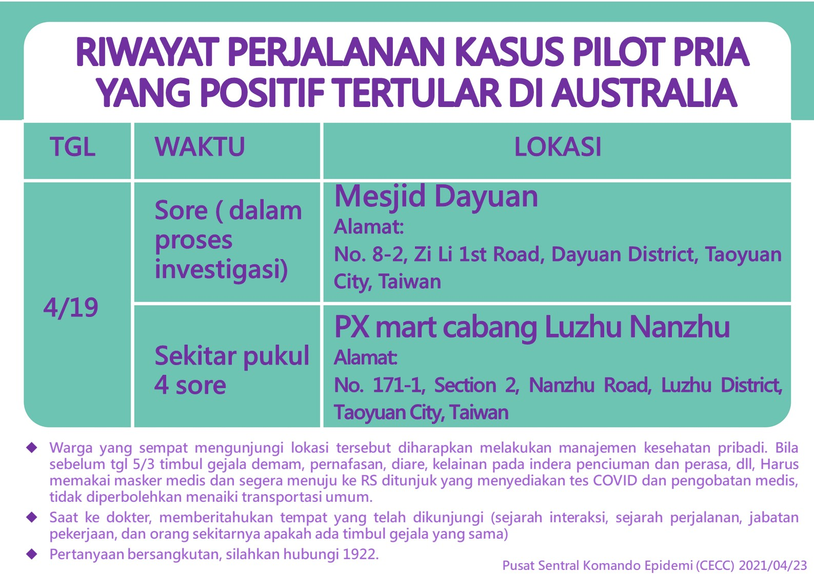

案例: 第1例
新增: 1例
累積: 1例
我國藉由登機檢疫即時發現首例中國大陸武漢移入之嚴重特殊傳染性肺炎個案，指揮中心提升中國大陸武漢之旅遊疫情建議至第三級警告(Warning)
中央流行疫情指揮中心今(21)日公布我國確診首例境外移入嚴重特殊傳染性肺炎個案，為居住南部50多歲女性，於中國大陸武漢工作，昨日由武漢搭機入境，因有發燒、咳嗽、呼吸急促等症狀，由機場檢疫人員安排後送就醫，X光檢查顯示有肺炎，今日檢驗確認為新型冠狀病毒陽性，持續於醫院負壓隔離病房治療中。由於本個案於下飛機後立即送往醫院隔離病房治療，並未進入社區，請民眾不必恐慌。
指揮中心表示，醫院及地方衛生單位已依循嚴重特殊傳染性肺炎通報個案處置流程進行通報、採檢、隔離治療、疫情調查及所搭班機之46名接觸者追蹤等防治工作，本確診個案須經兩次採檢皆為陰性後才可解除隔離。針對我國出現首例確診個案，指揮中心已同步透過IHR 聯繫窗口通報世界衛生組織及陸方聯繫窗口。
由於武漢病例快速增加，中國大陸傳染病專家已建議民眾儘量勿前往當地；世界衛生組織亦於今日表示，2019新型冠狀病毒可能具持續人傳人能力；而國內業確診首例自武漢返台之境外移入個案，指揮中心宣布自即日起提升中國大陸武漢市旅遊疫情建議至第三級警告(Warning)，提醒民眾如非必要應避免前往當地。
中國大陸新型冠狀病毒感染引發之肺炎疫情已有明顯社區傳播及疫情擴大情形，指揮中心持續統籌整合各部會資源與人力、加強國際機場、小三通港埠之檢疫措施及民眾之風險溝通與衛教宣導，並確保防疫物資整備，以防供應短缺或哄抬之相關假訊息發生，降低民眾恐慌，另針對醫療院所感染管制預作規劃、演練等，減少疫情對國內之衝擊，全力守護國內防疫安全，確保國人健康。
指揮中心再次呼籲，民眾近期前往中國大陸武漢及鄰近區域時，應落實肥皂勤洗手、咳嗽配戴口罩等個人衛生措施，避免接觸野生動物及急性呼吸道感染症患者，也避免出入傳統市場及醫療院所。返國入境時如有發燒、咳嗽等不適症狀，應主動通報機場及港口檢疫人員；返國14日內如出現上述疑似症狀，可撥打免付費防疫專線1922(或0800-001922)並依指示戴上口罩儘速就醫，就醫時請告知醫師旅遊史、職業別、接觸史及是否群聚(TOCC)，以及時診斷通報。其他「嚴重特殊傳染性肺炎」相關資訊，可參閱疾管署網站(https://www.cdc.gov.tw)。
案例: 第2~3例
新增: 2例
累積: 3例
我國新增確診二例嚴重特殊傳染性肺炎境外移入個案，指揮中心持續中港澳旅客主動關懷機制，全力守護國內防疫安全
中央流行疫情指揮中心今(24)日公布我國新增確診2例境外移入嚴重特殊傳染性肺炎個案，分別為50多歲中國籍女性(案1)及50多歲男性國人(案2)，皆為1月21日入境；案1為1月23日因發燒就醫，案2於1月20日出現感冒症狀、於1月23日就醫。因兩位皆有武漢旅遊或居住史，符合通報定義，經醫院隔離採檢後確認為新型冠狀病毒陽性，目前持續於醫院負壓隔離病房治療中。案1密切接觸者計19人，案2密切接觸者計11人，目前健康狀況皆良好；其餘相關接觸者疫調中，衛生單位將持續進行主動健康監測。
截至1月24日下午4時，國內嚴重特殊傳染性肺炎新增35例通報，截至目前共通報168名嚴重特殊傳染性肺炎個案，檢驗結果為3名確診(1例於1月21日已公布)、42名排除、23例初驗陰性、其餘仍待檢驗。
指揮中心持續統籌整合各部會資源與人力、加強國際機場、小三通港埠之檢疫措施及民眾之風險溝通與衛教宣導，並確保防疫物資整備，以防供應短缺或哄抬之相關假訊息發生，降低民眾恐慌，另針對醫療院所感染管制預作規劃、演練等，減少疫情對國內之衝擊，全力守護國內防疫安全，確保國人健康。
指揮中心再次呼籲，一般健康民眾應養成量體溫、以肥皂勤洗手、減少觸摸眼鼻口、盡量不要到人口擁擠的公共場所；若有發燒、咳嗽及呼吸急促等症狀的民眾，請務必在家休息，不要到公共場所，若有必要外出就醫或處理重要事務時，請務必戴口罩，以肥皂勤洗手，妥善處理口鼻分泌物。
民眾近期前往中國大陸時，應落實肥皂勤洗手、咳嗽配戴口罩等個人衛生措施，避免接觸野生動物及急性呼吸道感染症患者，也避免出入傳統市場及醫療院所。返國入境時如有發燒、咳嗽等不適症狀，應主動通報機場及港口檢疫人員；返國14日內如出現上述疑似症狀，可撥打免付費防疫專線1922(或0800-001922)並依指示戴上口罩儘速就醫，就醫時請告知醫師旅遊史、職業別、接觸史及是否群聚(TOCC)，以及時診斷通報。其他「嚴重特殊傳染性肺炎」相關資訊，可參閱疾管署網站(https://www.cdc.gov.tw)。
案例: 第4例
新增: 1例
累積: 4例
中央流行疫情指揮中心公布國內第4例境外移入嚴重特殊傳染性肺炎病例，目前收治隔離病房狀況穩定
中央流行疫情指揮中心公布國內新增1例境外移入嚴重特殊傳染性肺炎病例，為北部50多歲女性，1月13日至15日曾有中國大陸武漢旅遊史，未前往華南海鮮市場，1月16日至25日至歐洲旅遊，個案於1月22日起有咳嗽症狀，25日咳嗽症狀加劇，同日獨自一人返台，於機上全程佩戴口罩及填寫「防範新型冠狀病毒肺炎旅客入境健康聲明卡」，並於入境時主動告知機場檢疫人員，隨即後送至醫院負壓隔離病房治療，經通報檢驗於今(26)日確診；目前健康狀況穩定，衛生單位持續追蹤個案返台班機之相關接觸者健康情形。
指揮中心統計，1月26日截至下午4時，國內新增67例嚴重特殊傳染性肺炎通報個案，截至目前累計通報350名個案，含4名確診、147名排除、41名初驗陰性、其餘仍待檢驗。
目前中國大陸旅遊疫情建議第三級警告(Warning)之區域已由武漢市擴大為湖北省，其他各省市則提升至第二級警示(Alert)。指揮中心再次提醒，民眾入境時如有發燒、咳嗽等不適症狀，應主動通報機場及港口檢疫人員；返國14天內如出現上述疑似症狀，可撥打免付費防疫專線1922(或0800-001922)依指示戴口罩儘速就醫，並請務必告知醫師旅遊史、職業別、接觸史及是否群聚(TOCC)，以及時診斷通報。更多「嚴重特殊傳染性肺炎」資訊，可參閱疾管署網站(https://www.cdc.gov.tw)。
案例: 第5例
新增: 1例
累積: 5例
中央流行疫情指揮中心公布國內第5例境外移入嚴重特殊傳染性肺炎病例，衛生單位已依相關處置流程啟動防治
中央流行疫情指揮中心公布我國確診第5例境外移入嚴重特殊傳染性肺炎確定病例，為中部50多歲女性，去(2019)年10月下旬赴中國大陸武漢工作，無華南海鮮市場活動史及禽畜接觸史，今年1月20日返台，1月25日出現發燒及肌肉痠痛症狀就醫，院方隨即通報並收治負壓隔離病房，經檢驗於今(27)日確診。目前個案病情穩定，醫院及地方衛生單位已依循相關處置流程進行疫情調查及接觸者追蹤等防治工作。
指揮中心統計，昨(26)日國內新增119例嚴重特殊傳染性肺炎通報個案，目前累計通報402名個案，含5名確診、190名排除、207名隔離檢驗中(88名初驗陰性、其餘待檢驗)。5名確診個案狀況穩定持續住院隔離，除第4名及第5名確定病例接觸者待追蹤，前3名確診個案接觸者共計384人，其中14人有症狀已通報(6人二次檢驗皆陰性已排除、8人檢驗中)。
依據中國大陸疾控中心通報及各省市區衛生健康委員會公布資料，中國大陸截至1月26日累計2,744例新型冠狀病毒感染之肺炎確診，其中461例重症，80例死亡，31省市區(不含港澳特別政區)僅剩西藏自治區無確診或疑似病例。目前國際間除我國外，累計52例確診病例，泰國8例、香港8例、澳門5例、美國5例、澳洲4例、馬來西亞4例、日本4例、新加坡4例、法國3例、南韓3例、越南2例、尼泊爾1例及加拿大1例。
指揮中心再次呼籲，民眾自國外入境時如有發燒、咳嗽等不適症狀，應主動通報機場及港口檢疫人員；返國14天內如出現上述疑似症狀，可撥打免付費防疫專線1922(或0800-001922)依指示戴口罩儘速就醫，並請務必告知醫師旅遊史、職業別、接觸史及是否群聚(TOCC)，以及時診斷通報。更多「嚴重特殊傳染性肺炎」資訊，可參閱疾管署網站(https://www.cdc.gov.tw)。
案例: 第6~7例
新增: 2例
累積: 7例
中央流行疫情指揮中心公布國內新增2例境外移入嚴重特殊傳染性肺炎病例，指揮中心擴大提升中國大陸(不含港澳)之旅遊疫情建議至第三級警告(Warning)，籲請民眾如非必要應避免前往
中央流行疫情指揮中心今(28)日公布我國新增確診2例境外移入嚴重特殊傳染性肺炎個案，均為居住於武漢市陸籍70多歲女性，今年1月22日同行抵台觀光，於1月25日出現發燒症狀就醫，院方隨即通報並收治負壓隔離病房，經檢驗於今(28)日確診，個案無肺炎，目前病情穩定，醫院及地方衛生單位已依循相關處置流程進行疫情調查及接觸者追蹤等防治工作。
指揮中心統計，昨(27)日國內新增130例嚴重特殊傳染性肺炎通報個案，目前累計通報530名個案，含7名確診、269名排除，餘隔離檢驗中(98名初驗陰性、其餘待檢驗)。7名確診個案狀況穩定持續住院隔離，除第6名及第7名確定病例接觸者待追蹤，餘5名確診個案接觸者共計470人，其中16人有症狀已通報(10人二次檢驗皆陰性已排除、6人檢驗中)。
依據中國大陸疾控中心通報及各省市區衛生健康委員會公布資料，中國大陸截至1月27日累計4,515例新型冠狀病毒感染之肺炎確診，其中976重症，106例死亡，31省市區(不含港澳特別政區)僅剩西藏自治區無確診或疑似病例。基於中國大陸各省分皆持續出現病例且急遽增加，疫情嚴峻；且WHO已表示該病毒具人傳人能力，感染風險增加，指揮中心於今(28)日將旅遊疫情建議第三級警告(Warning)範圍擴大至中國大陸(不含港澳)，請民眾避免至當地所有非必要旅遊。
目前國際間除我國外，累計62例確診病例，泰國8例、香港8例、澳門7例、美國5例、澳洲5例、新加坡5例、馬來西亞4例、日本4例、南韓4例、法國3例、越南2例、尼泊爾2例、加拿大2例、柬埔寨1例、斯里蘭卡1例及德國1例。
指揮中心再次呼籲，民眾自國外入境時如有發燒、咳嗽等不適症狀，應主動通報機場及港口檢疫人員；返國14天內如出現上述疑似症狀，可撥打免付費防疫專線1922(或0800-001922)依指示戴口罩儘速就醫，並請務必告知醫師旅遊史、職業別、接觸史及是否群聚(TOCC)，以及時診斷通報。更多「嚴重特殊傳染性肺炎」資訊，可參閱疾管署網站(https://www.cdc.gov.tw)。
案例: 第8例
新增: 1例
累積: 8例
中央流行疫情指揮中心公布國內本土嚴重特殊傳染性肺炎病例，衛生單位已依相關處置流程啟動防治
中央流行疫情指揮中心公布我國確診第8例嚴重特殊傳染性肺炎確定病例，為中部50多歲男性，為先前確診第5例境外移入個案之同住家人，於1月26日出現咳嗽症狀就醫，經檢驗於今(28)日確診，研判為家戶感染。目前個案病情穩定，醫院及地方衛生單位已依循相關處置流程進行接觸者追蹤等防治工作。為使居家隔離及居家檢疫更為落實，未來將利用智慧科技協助執行防疫工作。
指揮中心統計，截至1月28日下午4時，國內嚴重特殊傳染性肺炎新增52例通報個案，截至目前共通報578名嚴重特殊傳染性肺炎個案，檢驗結果為8名確診、321名排除、75名初驗陰性、其餘仍待檢驗；另有9例為之前通報不明原因肺炎，均已排除。
國際累計69例確診(不含臺灣)，分布於16國，較前日新增柬埔寨、斯里蘭卡及德國共3國。分別為泰國14例、香港8例、澳門7例、美國5例、澳洲5例、新加坡5例、馬來西亞4例、日本6例、南韓4例、法國3例、越南2例、加拿大2例、尼泊爾1例、柬埔寨1例、斯里蘭卡1例及德國1例。
指揮中心再次呼籲，民眾自國外入境時如有發燒、咳嗽等不適症狀，應主動通報機場及港口檢疫人員；返國14天內如出現上述疑似症狀，可撥打免付費防疫專線1922(或0800-001922)依指示戴口罩儘速就醫，並請務必告知醫師旅遊史、職業別、接觸史及是否群聚(TOCC)，以及時診斷通報。更多「嚴重特殊傳染性肺炎」資訊，可參閱疾管署網站(https://www.cdc.gov.tw)。
案例: 第9例
新增: 1例
累積: 9例
中國大陸及國際間新型冠狀病毒肺炎病例持續增加，春節進入尾聲，指揮中心籲請出國民眾返國後自主健康管理14天，有疑似症狀速撥1922通報
中央流行疫情指揮中心今(30)日公布我國新增確診1例本土嚴重特殊傳染性肺炎個案，1月27日發病，28日就診，經檢驗於今(30)日確診；案夫在武漢工作，於1月12日返台後出現咳嗽及流鼻水症狀，研判個案應屬家庭群聚，目前個案病情穩定，醫院及地方衛生單位已依循相關處置流程進行疫情調查及接觸者追蹤等防治工作。
中央流行疫情指揮中心統計，昨(29)日國內新增109例嚴重特殊傳染性肺炎通報個案，目前累計通報730名個案，含9名確診、482名排除、239名隔離檢驗中(98名初驗陰性、其餘待檢驗)。目前9名確診個案狀況穩定，持續住院隔離，醫院及地方衛生單位已依循相關處置流程進行疫情調查及接觸者追蹤等防治工作。其餘8名確診個案接觸者總計486人，其中29人有症狀已通報，17例二採陰性、12例檢驗中(7例二採檢驗、5例尚無檢驗結果)。
依據中國大陸疾控中心通報及各省市區衛生健康委員會公布資料，中國大陸累計31省市區(不含港澳特別行政區)確診7,711例新型冠狀病毒感染個案，較昨日新增1,737例，其中1,370例重症，170例死亡。累計密切接觸者88,693人，追蹤中81,947人。除了台灣之外，國際間累計92例確診，分別為泰國14例、新加坡10例、香港10例、日本8例、澳門7例、澳洲7例、馬來西亞7例、美國5例、南韓4例、德國4例、法國4例、阿拉伯聯合大公國4例、加拿大3例、越南2例、尼泊爾1例、柬埔寨1例及斯里蘭卡1例。
指揮中心表示，為國內口罩需求之合理配置，明日起全數徵用國內口罩工廠生產之一般醫用口罩及外科手術口罩，每日共約400萬片，由指揮中心分配，提供民生需求（每天約釋出260萬片）及醫療或公務防疫及儲備需求（每天約140萬片）。民生需求由超商、藥妝、藥局、醫材等通路提供，釋出口罩將延續每人一次限買1至3片，暫定至2月15日止，並呼籲健康民眾不需一律戴口罩，請優先讓有慢性病、就醫、陪病、探病需求的民眾購買。指揮中心提醒，有呼吸道症狀者應戴口罩，有慢性病者外出建議戴口罩，在擁擠通風不良處也建議戴口罩。
指揮中心再次呼籲，春節假期即將結束，民眾自國外入境時如有發燒、咳嗽等不適症狀，應主動通報機場及港口檢疫人員；返國14天內如出現上述疑似症狀，可撥打免付費防疫專線1922 (或0800-001922)依指示戴口罩儘速就醫，並請務必告知醫師旅遊史、職業別、接觸史及是否群聚(TOCC)，以及時診斷通報。更多「嚴重特殊傳染性肺炎」(武漢肺炎)資訊，可參閱疾管署網站(https://www.cdc.gov.tw)。
案例: 第10例
新增: 1例
累積: 10例
國內專家建議一般學生無需戴口罩，另公布新增國內境外移入嚴重特殊傳染性肺炎病例
因應中國大陸及國際間新型冠狀病毒肺炎疫情，中央流行疫情指揮中心於今(31)日召開地方政府民政衛政體系防疫應變協調會議，由行政院副院長陳其邁主持，研議有關地方政府民政衛政防疫體系動員事宜，同時與會專家臺北區醫療網張上淳指揮官及國立臺灣大學醫學院附設醫院黃立民教授強調，一般學生無須戴口罩，並建議地方政府加強宣導使用口罩之三大時機，看病、陪病、探病的時候要戴，有呼吸道症狀者應戴口罩，有慢性病者外出建議戴口罩。
指揮中心表示，會後有相關地方公(協)會向該中心申請口罩，表示目前口罩已由中央控管，該中心強調，各縣市政府均有口罩需求，因此協調討論會中，請各地方政府先進行外科口罩等相關醫療物資之盤點，以利後續資源統籌分配，而非逕向該中心申請口罩，同時搭配專家建議口罩適用三時機，讓口罩資源發揮最大效用。
另指揮中心公布國內新增1例境外移入嚴重特殊傳染性肺炎病例，為昨(30)日公布第9例個案之丈夫(40多歲)，原列為接觸者，經衛生單位進一步調查發現其去(2019)年9月至中國大陸武漢工作，今年1月12日返台，於1月21日出現上呼吸道症狀，22日曾就醫檢查無肺炎情形故診斷為一般感冒，衛生單位30日進行採檢，今日檢出新型冠狀病毒陽性確診，研判第9例個案是遭本個案感染，為一起境外移入個案導致之本土家庭群聚事件。
指揮中心再次呼籲，民眾自國外入境時如有發燒、咳嗽等不適症狀，應主動通報機場及港口檢疫人員；返國14天內如出現上述疑似症狀，可撥打免付費防疫專線1922 (或0800-001922)依指示戴口罩儘速就醫，並請務必告知醫師旅遊史、職業別、接觸史及是否群聚(TOCC)，以及時診斷通報。更多「嚴重特殊傳染性肺炎」(武漢肺炎)資訊，可參閱疾管署網站(https://www.cdc.gov.tw)。
案例: 第11例
新增: 1例
累積: 11例
中央流行疫情指揮中心公布第11例嚴重特殊傳染性肺炎確診個案
中央流行疫情指揮中心今(4)日公布我國新增確診1例境外移入嚴重特殊傳染性肺炎個案，為今日自中國大陸武漢返台台商3名後送就醫個案之一，個案為50多歲男性，目前已無發燒、狀況穩定沒有肺炎，為無併發症之輕症，現於負壓隔離病房觀察治療中。其餘2名後送就醫個案初步檢驗為陰性。
指揮中心表示，同班機其餘乘客將全面進行採檢，並持續執行14天嚴格的「一人一室」隔離檢疫措施，每人每天需監測兩次體溫，如發現發燒、呼吸道症狀或身體不適時，立即依規定後送就醫。場所也會提供口罩等相關防護裝備供檢疫者及工作同仁使用，集中檢疫者不能外出，且活動範圍以檢疫房間為主，因此與附近居民不會有所接觸，請民眾放心。
案例: 第12~13例
新增: 2例
累積: 13例
新增2例境外移入病例，全國共13例病情皆穩定
中央流行疫情指揮中心今(6)日公布國內新增2例境外移入嚴重傳染性肺炎病例，分別為北部40多歲男性及20多歲女性。男性個案去(2019)年12月至武漢工作，1月17日自武漢前往遼寧，2月2日自遼寧省大連市返台，3日出現發燒、咳嗽、頭痛等症狀，4日就醫。女性個案長住武漢，1月21日自武漢經深圳返台，2月1日出現咳嗽有痰及胸悶症狀，4日就醫。兩名個案均診斷有肺炎情形，經通報檢驗確診，目前均收治隔離病房，病情穩定，醫院及衛生單位已啟動疫情調查及接觸者追蹤等防治工作；國內截至目前累計確定病例數共13人，病情皆穩定，且有1人恢復良好，近期內可出院。指揮中心持續守住疫情，我國至今仍未升高至社區感染。
指揮中心統計，昨(5)日國內新增55例嚴重特殊傳染性肺炎通報個案，目前累計通報1,290名個案，含13名確診、1,135名排除、餘隔離檢驗中(98名初驗陰性、其餘待檢驗)。13名確診個案病況穩定，持續住院隔離。首例個案之接觸者除1人陽性確診外，其餘均已解除列管；今日新增2名個案之接觸者追蹤中；其他10名個案接觸者總計493人，其中12人有症狀已通報(10人已排除、2人檢驗中)。另2月3日晚間自武漢返台的台商團，截至目前5人後送收治負壓隔離病房，其他242名集中隔離檢疫者持續密切健康監測，其中5人有症狀(2人將後送醫院採檢)。
依據中國大陸疾控中心通報及各省市區衛生健康委員會公布資料，中國大陸全部31省市區(不含港澳特別行政區)累計確診28,018例新型冠狀病毒感染個案，較昨日新增3,694例，其中3,859例重症，563例死亡；另有疑似病例24,702例；多地區出現社區群聚。累計密切接觸者282,813人，追蹤中186,354人。
除台灣之外，國際間累計211例確診病例，分布於26個國家/地區；病例數以泰國25例、新加坡24、日本21例(不含無症狀4人、郵輪上檢出病毒陽性10人)、香港21例、南韓19例為多；病例中有2例死亡，分別為菲律賓及香港各1例。
為使民眾即時瞭解疫情狀況，疾管署特別在全球資訊網首頁(https://www.cdc.gov.tw)新增統計圖表供各界參考。指揮中心再次呼籲，民眾應落實肥皂勤洗手、避免觸摸眼鼻口，及做好咳嗽禮節。民眾自國外入境時如有發燒、咳嗽等不適症狀，應主動通報機場及港口檢疫人員並配合各項防疫措施；返國後14天內如出現疑似症狀，可撥打免付費防疫專線1922(或0800-001922)依指示戴口罩儘速就醫，並請務必告知醫師旅遊史、職業別、接觸史及是否群聚(TOCC)，以及時診斷通報。
案例: 第14~16例
新增: 3例
累積: 16例
指揮中心公布3名確診個案，均隔離治療中
中央流行疫情指揮中心今(6)日晚間公布國內新增3例境外移入嚴重特殊傳染性肺炎病例(下稱案1、2、3)，其中案1、案2分別為北部50多歲男性及50多歲女性，兩人為夫妻，1月22日與另2名家人一同自香港轉機至義大利旅遊，2月1日自香港轉機返台。兩人分別於1月26日及28日出現咳嗽情形，其中案1返國入境時有發燒症狀，當日至診所就醫診斷為感冒，因症狀未改善，因此於2月4日再次就醫，經檢查有肺炎情形故通報；案2入境時無發燒症狀，2月3日就醫時診斷為一般感冒，因其丈夫已於4日通報，因此院方建議其一併採檢通報，經檢驗兩人均確診感染新型冠狀病毒，目前住院隔離中；其同行家人目前均無疑似症狀。
案3為南部40多歲女性，1月21日至24日與另3位家人一同至澳門旅遊，個案2月1日出現發燒、寒顫、喉嚨痛、流鼻水、走路會喘等症狀，3日就醫時經檢查因不符通報條件，因此就醫後返家，因症狀持續，個案於5日再次就醫收治負壓隔離病房並採檢，經檢驗確診。目前個案病情穩定，持續治療中。
國內截至目前共計16名確定病例，截至2月6日下午4點，國內共通報21名嚴重特殊傳染性肺炎個案；截至目前共通報1,307名個案，含16名確診、1,166名排除、82名初驗陰性、其餘仍待檢驗。
案例: 第17例
新增: 1例
累積: 17例
國內新增1例確定病例，男子與父母出國同遊齊染病
中央流行疫情指揮中心今(8)日公布國內新增1例境外移入嚴重特殊傳染性肺炎個案，為2月6日晚間公布北部50多歲夫婦確診病例之兒子(原列為接觸者，20多歲)，個案1月22日至31日隨父母一同至義大利旅遊，2月1日經香港轉機返台，衛生單位於接觸者調查時發現，個案於1月27日在義大利旅遊時出現咳嗽症狀，因此昨(7)日安排採檢並住院隔離，於今日檢驗確診。個案症狀已改善，醫院及衛生單位已啟動疫情調查及接觸者追蹤等防治工作；截至目前國內共計17名確定病例。
指揮中心統計，昨(7)日國內新增64例嚴重特殊傳染性肺炎通報個案，目前累計通報1,399名個案，含17名確診、1,258名排除、餘隔離檢驗中(57名初驗陰性、其餘待檢驗)。17名確診個案病況穩定，除首例外，其餘個案持續住院隔離。另第2、3例個案接觸者共116人已追蹤期滿解除列管，除案17外，其餘個案接觸者共172人，其中8人有症狀已通報(6人已排除、2人檢驗中)。此外，2月3日晚間自武漢返台的台商團，截至目前5人有症狀並已通報(1人已排除，一採檢驗中2人、一採陰性2人)，其他241名集中隔離檢疫者持續密切健康監測。
依據中國大陸疾控中心通報及各省市區衛生健康委員會公布資料，中國大陸全部31省市區(不含港澳特別行政區)累計確診34,546例新型冠狀病毒感染個案，較昨日新增3,399例；湖北單一省份即增加2,841例。病例中6,101例重症，722例死亡；死亡病例以湖北省699例為多；另有疑似病例27,657例。
除台灣之外，國際間累計245例確診病例，分布於26個國家/地區；病例數以新加坡33例、香港26例、泰國25例、南韓24例及日本21例(不含無症狀4例、郵輪旅客確診61例)為多；病例中2例死亡，分別為香港及菲律賓各1例。
指揮中心再次呼籲，民眾應落實肥皂勤洗手、避免觸摸眼鼻口，及做好咳嗽禮節。民眾自國外入境時如有發燒、咳嗽等不適症狀，應主動通報機場及港口檢疫人員並配合各項防疫措施；返國後14天內如出現疑似症狀，可撥打免付費防疫專線1922(或0800-001922)依指示戴口罩儘速就醫，並請務必告知醫師旅遊史、職業別、接觸史及是否群聚(TOCC)，以及時診斷通報。
案例: 第18例
新增: 1例
累積: 18例
國內新增1例境外移入確定病例，亦為與父母出國同遊感染
中央流行疫情指揮中心今(9)日公布國內新增1例境外移入嚴重特殊傳染性肺炎個案，為2月6日公布北部50多歲夫婦確診病例之密切接觸者 (兒子，20多歲)，亦為與父母出國同遊，該個案無疑似症狀，經衛生單位安排隔離並住院採檢，今檢驗結果陽性。醫院及衛生單位持續進行疫情調查及接觸者追蹤等相關防治工作；截至目前國內共計18名確定病例。
指揮中心統計，昨(8)日國內新增71例嚴重特殊傳染性肺炎通報個案，目前累計通報1,470名個案，含18名確診、1,300名排除，餘隔離檢驗中(98名初驗陰性、其餘待檢驗)；除首例有1接觸者確診外，首例及第2、3例之接觸者，皆已解除列管；今日新增1名個案之接觸者追蹤中；其他15名個案接觸者總計444人，累計14人有症狀並已通報（10人陰性已排除、4人檢驗中）。而2月3日晚間自武漢返台的台商團，截至目前為止1人確診，累計6人有症狀並已通報(1人已排除，5人檢驗中)。
依據中國大陸疾控中心通報及各省市區衛生健康委員會公布資料，中國大陸全部31省市區(不含港澳特別行政區)累計確診37,198例新型冠狀病毒感染個案，較昨日新增2,656例(湖北單一省分即增加2,147例)；病例中6,188例重症，811例死亡(以湖北省省780例為多)，疑似病例28,942例。另，浙江省個案已為社區感染病例為主。
除台灣之外，國際間累計334例確診病例，分布於26個國家/地區；國際運輸工具（日本鑽石公主號）64例、新加坡40例、泰國32例、香港26例及南韓24例為多；其中2例死亡，分別為菲律賓及香港各1例。全球已有72國實施中國大陸旅遊限制措施。
指揮中心再次呼籲，除了肥皂勤洗手、避免觸摸眼鼻口外，須落實一不三要：一「不」，開放空間不用戴口罩；三「要」，一、去醫院看病時要戴口罩，二、慢性病患者要戴口罩，三、出入人多擁擠的地方要戴口罩。相關疑問撥打免付費防疫專線1922(或0800-001922)。
案例: 第19~20例
新增: 2例
累積: 20例
國內新增武漢肺炎2例本土個案，相關接觸者持續掌握中
中央流行疫情指揮中心今（16）公布，國內新增確診2例COVID-19（武漢肺炎）個案，第1例個案為中部60餘歲男性，有B型肝炎及糖尿病病史，無出國旅遊史，亦非確診病例之已知密切接觸者。於1月27日出現咳嗽，2月3日因呼吸急促赴醫院就醫，診斷為肺炎。當日收治於負壓加護病房治療，個案已於2月15日晚間因肺炎合併敗血症死亡，其遺體經家屬同意，將依法定傳染病規定進行火化，並保留部分檢體以供進一步檢驗。第2例為第1例之50餘歲男性家人，於昨日進行採檢後確診，目前個案無症狀，收治於負壓隔離病房。
指揮中心表示，中心於2月12日起，針對全國醫療院所通報流感併發重症且流感檢驗陰性之個案，回溯自1月31日起，進行 COVID-19（武漢肺炎）病毒之檢驗。截至2月15日止，已全數檢驗完成113件檢體，本案係唯一檢驗陽性者。
指揮中心針對第1例個案之密切接觸者，包括發病後曾相處之家人、以及就診院所人員，及第2例之密切接觸者，目前已掌握79名密切接觸者，截止目前已完成73名採檢（包括7位有症狀），其中60名之檢驗皆為陰性、1名陽性（案20），其餘尚在檢驗中。將持續進行匡列追蹤、採檢、及隔離，其餘接觸者仍持續調查中。醫院已針對加護病房病患，採取不進不出之暫時管制措施。另針對個案發病14日前之行程與可能暴露者，進行回溯追蹤調查，以找出可能感染源。
案例: 第21~22例
新增: 2例
累積: 22例
新增2例武漢肺炎病例，為昨日確診個案家人
中央流行疫情指揮中心今(17)日公布國內新增2例COVID-19(武漢肺炎)病例，為中部 80多歲女性(案21)及30多歲男性(案22)，同時也是昨日公布案19(指標個案)及案20之親人。衛生單位於昨日進行接觸者調查時發現，案21曾於2月6日出現症狀就醫，案22則於1月28日至2月6日間出現發燒、咳嗽等症狀，兩人經採檢均於今日確診。由於案22與其他3位平時並未同住，研判是過年期間家族聚會時遭到指標個案傳染，為一起家庭群聚。
指揮中心已掌握該群聚4名個案之密切接觸者共181人，包括同住家人、非同住家人、醫療院所人員、案19載送旅客及案22職場同事等，截至目前已完成採檢176人，其中案19之同住家人均確診(案20、21)，非同住家人1人確診(案22)，113人為陰性，其餘檢驗中。指揮中心將持續進行接觸者調查、追蹤、採檢及隔離，並持續針對指標個案發病14日前之行程與可能暴露者，進行回溯追蹤調查，以找出可能感染源。
指揮中心強調，依現有資訊分析，一般民眾於社區感染的風險很低，大家僅須提高警覺，無須過度恐慌。並再次呼籲民衆應養成良好衛生習慣，包括肥皂勤洗手、避免觸摸眼鼻口、做好咳嗽禮節、減少近距離與人接觸、保持環境清潔及通風等，並配合政府各項防疫措施。
案例: 第23例
新增: 1例
累積: 23例
中部家庭群聚新增1例確定病例；接觸者189人檢驗陰性，24人檢驗中
中央流行疫情指揮中心今(19)日表示，昨(18)日國內新增44例嚴重特殊傳染性肺炎通報個案，目前累計通報1,913名個案，含23名確診、1,812名排除，餘隔離檢驗中(30名初驗陰性、其餘待檢驗)。23名確診個案中，1名死亡，其餘個案病況穩定。目前個案接觸者尚有167人持續居家隔離，其中5人有症狀已通報(4人排除、1人檢驗中)。另針對中部家庭群聚事件，截至目前已採檢217名接觸者，其中4人確診(新增案19妹妹，60歲)，189人陰性，24人檢驗中。
指揮中心指出，依據中國大陸疾控中心通報及各省市區衛生健康委員會公布資料，中國大陸全部31省市區(不含港澳特別行政區)累計確診74,185例COVID-19(武漢肺炎)感染個案，較前日新增1,749例，其中11,977例重症，2,004例死亡。湖北省新增病例數持平，其餘省市增幅趨緩。
指揮中心進一步表示，國際間累計951例確診病例，分布於27個國家/地區；病例數以日本鑽石公主號531例(含本國籍4例)、新加坡81例、香港62例、日本59例及泰國35例為多；病例中4例死亡，為法國、日本、香港及菲律賓各1例。全球已逾72國實施中國大陸旅遊限制措施。
指揮中心再次提醒，民眾應落實肥皂勤洗手、避免觸摸眼鼻口，做好咳嗽禮節、減少近距離接觸，保持環境清潔及通風。民眾自國外入境時，如有發燒、咳嗽等不適症狀，應主動通報機場及港口檢疫人員並配合各項防疫措施；返國後14天內如出現疑似症狀，可撥打免付費防疫專線1922(或0800-001922)依指示戴口罩儘速就醫，並請務必告知醫師旅遊史、職業別、接觸史及是否群聚(TOCC)，以及時診斷通報。
案例: 第24例
新增: 1例
累積: 24例
新增1確診病例，指揮中心持續追蹤接觸者及發病前活動史
中央流行疫情指揮中心今(19)日公布國內第24例COVID-19(武漢肺炎)確定病例，為北部60多歲女性，近2年無出國史， 1月22日出現發燒、咳嗽等症狀，於22日至29日四度至診所就醫，因症狀加劇且出現呼吸急促情形，於29日晚間前往醫院急診，經檢查診斷為肺炎，於30日收治住院，因病情惡化，2月10日轉入加護病房，並於2月17日因該院配合指揮中心的流感併發重症檢體檢驗結果為陰性者進行通報採檢，故轉收至負壓隔離病房，於今日確診；個案目前持續隔離治療中。
指揮中心目前已掌握本個案之密切接觸者共360人，包括家人、朋友及診所醫院人員，目前正安排接觸者之採檢。將持續調查是否有其他接觸者，以進一步匡列、追蹤、採檢及隔離。另將針對個案發病14天前之活動史與可能暴露者，進行回溯追蹤調查，以找出可能感染源。
指揮中心指出，截至今日下午4點，國內新增14例嚴重特殊傳染性肺炎通報個案，目前累計通報1,927例，檢驗結果為24名確診(含8例本土病例)、1,822例排除、餘檢驗中(37例初驗陰性)。
案例: 第25~26例
新增: 2例
累積: 26例
新增2例武漢肺炎病例，為案24家人
中央流行疫情指揮中心今(21)日公布新增2例COVID-19(武漢肺炎)病例，為案24外孫女(案25，20歲)及小女兒(案26，40多歲)。案25於1月28日出現咳嗽症狀，31日因發燒就醫，由於持續有咳嗽症狀，又於2月4日、11日就醫；案26無發燒或呼吸道症狀，因食道逆流情形曾於2月3日及6日就醫。2人因列為案24接觸者，由衛生單位安排採檢並住院隔離，於今日確診。案26與案24為同住家人，案25未與案24同住，但曾於2月11日至醫院探視案24，感染源調查中，兩人皆無國外旅遊史。目前已掌握本起家庭群聚相關接觸者共391人，已採檢169人，其中2人陽性確診(案25、26)、143人陰性、其餘檢驗中。
指揮中心統計，昨(20)日國內新增36例嚴重特殊傳染性肺炎通報個案，目前累計通報1,977個案，含26名確診、1,880名排除，餘隔離檢驗中(45名初驗陰性、其餘待檢驗)。26名確診個案中，1名死亡、其餘個案病況穩定。另針對中部家庭群聚事件，截至目前掌握接觸者共257人，並已採檢256人，其中4人確診(均為案19家人，已於2月16日至19日陸續公布)，243人陰性，其餘檢驗中。
指揮中心指出，依據中國大陸疾控中心通報及各省市區衛生健康委員會公布資料，中國大陸全部31省市區(不含港澳特別行政區)累計確診75,465例，較前日新增889例，其中11,633例重症，2,236例死亡。另國際間累計1,217例確診病例，分布於28個國家/地區；病例數以日本鑽石公主號619例(含本國籍5例)、韓國156例、日本97例、新加坡85例及香港68例為多；病例中10例死亡，分別為鑽石公主號、香港、伊朗2例，韓國、法國、日本及菲律賓各1例。
指揮中心呼籲，民眾應落實肥皂勤洗手、避免觸摸眼鼻口，並做好咳嗽禮節。出國民眾自國外入境時，如有發燒、咳嗽等不適症狀，應主動通報機場及港口檢疫人員並配合各項防疫措施；返國後14天內如出現疑似症狀，可撥打免付費防疫專線1922(或0800-001922)依指示戴口罩儘速就醫，並請務必告知醫師旅遊史、職業別、接觸史及是否群聚(TOCC)，以及時診斷通報。
案例: 第27~28例
新增: 2例
累積: 28例
新增2例武漢肺炎家庭群聚病例，指揮中心持續追蹤接觸者及發病前活動史
中央流行疫情指揮中心今(23)日公布國內新增2例COVID-19(武漢肺炎)病例，為北部 80多歲男性(案27，指標個案)及50多歲男性(案28)，2人為父子關係。案27本身為具高血壓、糖尿病等慢性病之洗腎病人，近期無出國史。案27於2月6日出現咳嗽、流鼻水等症狀，9日因發燒、診斷為肺炎而收治單人病房治療，16日出現呼吸急促情形轉至加護病房，20日由於懷疑結核病轉負壓隔離病房，並於21日通報COVID-19，並採檢送驗，於今日確診。
衛生單位已對相關出現疑似症狀之接觸者進行隔離採檢，並於疫情調查時發現，案28曾於1月31日出現發燒、流鼻水及喉嚨痛等症狀，2月4日至門診就醫，8日因持續發燒至急診就醫被診斷為肺炎，後返家自主健康管理，並於11及18日2次回診，21日通報並隔離採檢，亦於今日確診COVID-19(武漢肺炎)陽性。由於案28與案27白天同住，研判為密切接觸者傳染，為一起家庭群聚。
指揮中心初步已匡列案27之醫院工作人員接觸者115人，已採檢40人，將持續調查、追蹤、採檢及隔離。目前調查發現，案27小兒子因工作關係頻繁往返中國大陸武漢地區，最後一次為108年12月2日自廣州返台，且過年期間亦曾與具中國旅遊史之友人聚餐，感染源釐清中。指揮中心將針對個案發病14天前之活動史與可能暴露者，持續進行回溯追蹤調查。
指揮中心呼籲，民眾應落實肥皂勤洗手、避免觸摸眼鼻口，並做好咳嗽禮節。出國民眾自國外入境時，如有發燒、咳嗽等不適症狀，應主動通報機場及港口檢疫人員並配合各項防疫措施；返國後14天內如出現疑似症狀，可撥打免付費防疫專線1922(或0800-001922)依指示戴口罩儘速就醫，並請務必告知醫師旅遊史、職業別、接觸史及是否群聚(TOCC)，以及時診斷通報。
案例: 第29~30例
新增: 2例
累積: 30例
新增2確診案例均隔離治療中，為案27家庭接觸者
中央流行疫情指揮中心今(24)日公布國內新增2例COVID-19(武漢肺炎)病例，為昨(23)日公布確診案27之小兒子(案29，40多歲)及妻子(案30，70多歲)。
案29於1月29至30日出現喉嚨不適症狀，但未就醫，23日因列為確診個案之密切接觸者，而收治入院採檢，於今日確診，目前於醫院單獨病房隔離治療中。該個案因工作關係，頻繁往返中國大陸武漢及其它地區，最後一次為去(2019)年12月2日自廣州返台，且過年期間亦曾與具中國大陸旅遊史之友人聚餐，目前感染源釐清中。
案30於2月6日因身體不適前往就醫，經診斷為急性咽炎，10日至19日間因呼吸道症狀4度就醫，22日因列為確診個案之密切接觸者收治隔離採檢，於今日確診，目前無發燒亦無不適症狀，仍於醫院單獨病房隔離治療中。
指揮中心表示，針對本起家庭群聚事件，衛生單位已掌握接觸者共143人，包括個案家人及醫療院所醫護人員，截至目前共採檢87人，其中3人陽性確診(案28至30)、50人陰性，其餘檢驗中。
指揮中心再次提醒，民眾應落實肥皂勤洗手、避免觸摸眼鼻口，並做好咳嗽禮節。民眾自國外入境時，如有發燒、咳嗽等不適症狀，應主動通報機場及港口檢疫人員並配合防疫措施；返國後14天內如出現疑似症狀，可撥打免付費防疫專線1922(或0800-001922)依指示戴口罩儘速就醫，並請務必告知醫師旅遊史、職業別、接觸史及是否群聚(TOCC)，以及時診斷通報。
案例: 第31例
新增: 1例
累積: 31例
新增1例確診個案，同為案27家庭接觸者
中央流行疫情指揮中心今(25)日公布國內第31例COVID-19(武漢肺炎)確定病例(為案27的孫子、案28的兒子)，案31曾於2月11日及19日至醫院探視案27，無疑似症狀，2月23日進行接觸者採檢，今日確診後已收治醫院隔離觀察。
指揮中心指出，針對本起家庭群聚，截至目前已掌握接觸者580人，共採檢144人，其中4人陽性確診(案28至31)、122人陰性，其餘檢驗中。
指揮中心統計，昨(24)日國內新增13例嚴重特殊傳染性肺炎通報個案，目前累計通報2,060個案，含31名確診(今日新增案31)、2,005名排除，餘隔離檢驗中(12名初驗陰性、其餘待檢驗)。確診個案中，1名死亡、5名出院、其餘個案持續住院隔離中。案24相關之北部家庭群聚，掌握接觸者共639人，並採檢239人，其中2人確診(案25、26)，219人陰性，其餘檢驗中。另鑽石公主號19名返台國人目前1人有發燒、呼吸道症狀，已安排後送，其餘無疑似症狀，持續於集中檢疫所密切觀察健康情形。
指揮中心指出，依據中國大陸疾控中心通報及各省市區衛生健康委員會公布資料，中國大陸全部31省市區(不含港澳特別行政區)累計確診77,658例，較前日新增508例，其中9,126例重症，2,663例死亡。
國際間累計2,110例確診病例，分布於34個國家/地區；病例數以韓國833例、日本鑽石公主號644例(含本國籍5例)、義大利229例、日本159例及新加坡90例為多；病例中34例死亡，其中伊朗12例、韓國8例、義大利6例、鑽石公主號3例、香港2例、菲律賓、法國、日本各1例。
指揮中心再次提醒，民眾應落實肥皂勤洗手、避免觸摸眼鼻口，並做好咳嗽禮節。民眾自國外入境時，如有發燒、咳嗽等不適症狀，應主動通報機場及港口檢疫人員並配合防疫措施；返國後14天內如出現疑似症狀，可撥打免付費防疫專線1922(或0800-001922)依指示戴口罩儘速就醫，並請務必告知醫師旅遊史、職業別、接觸史及是否群聚(TOCC)，以及時診斷通報。
案例: 第32例
新增: 1例
累積: 32例
公布第32例確診個案，為案27外籍看護
中央流行疫情指揮中心今(26)日公布國內第32例COVID-19(武漢肺炎)確定病例，為案27在2月11日至16日住院期間之30多歲女性外籍看護，衛生單位於案27確診後，即透過警政單位協尋該名個案，於2月24日晚間尋獲後送往醫院採檢通報並住院隔離，個案當時有輕微喉嚨不適，經檢驗於今日確診。
指揮中心指出，由於案32為臨時看護，衛生單位已針對其2月16日至24日間之活動史調查，並將這段期間個案所照顧的其他病人、同病室病人及照顧者等匡列為接觸者進行採檢。針對案27相關群聚事件，截至目前共掌握接觸者744人，並採檢153人，其中5人陽性(案28至32)、141人陰性，其餘檢驗中。
案例: 第33~34例
新增: 2例
累積: 34例
新增2例確診，指揮中心密切追蹤接觸者
中央流行疫情指揮中心今(28)日公布國內新增2例COVID-19(武漢肺炎)確定病例，分別為北部30多歲男性(案33)及50多歲女性(案34)，其中案33於2月17日至22日與另外21人跟團至日本大阪旅遊，返國後於25日出現咳嗽、喉嚨癢情形，因症狀持續，於26日至醫院急診就醫採檢後返家，27日醫院通報送驗，於今日確診，目前個案已由衛生單位安排收治負壓隔離病房治療；依個案活動史研判，於日本感染的可能性較高，為境外移入個案。
案34有糖尿病、心血管疾病等慢性病史，2月14日因低血糖、全身倦怠情形就醫並收治住院，當時無呼吸道症狀，21日起出現咳嗽、喉嚨痛及發燒症狀，26日診斷有肺炎情形，由醫院通報送驗，於今日確診；由於個案近期無國外旅遊史，研判於國內感染，接觸者疫調正積極展開中。
指揮中心表示，針對案33，將持續追蹤個案同旅行團團員、親友、職場等接觸者健康情形。另由於案34平時皆待在家中未外出，同住家人均無疑似症狀，將進一步調查其同住接觸者活動史，及住院期間曾接觸之病患、醫護人員等，以釐清感染源。
案例: 第35~39例
新增: 5例
累積: 39例
新增5確診個案，其中4例為案34醫院接觸者
中央流行疫情指揮中心今(29)日公布國內新增5例COVID-19(武漢肺炎)確定病例，其中4例為昨日公布案34 (指標個案)確診前於北部某醫院之接觸者，分別為1名清潔人員(案35)及3名護理人員(案36至38)。案35於醫院急診工作時曾接觸案34，其餘3人均為案34確診前住院病房之護理人員，4人陸續於2月18至25日間出現咳嗽、流鼻水、發燒等症狀，並於案34確診後列為接觸者採檢，於今日確診，為一起群聚事件。
因應本起群聚，指揮中心已要求醫院關閉案34確診前之住院病房，並進行環境清潔消毒；另針對病房工作人員、病患及陪病者等風險對象進行調查、隔離及擴大採檢。針對有症狀工作人員，如2次採檢皆為陰性，仍應持續居家隔離14天，期滿後須再採檢1次，確認為陰性後才能上班；無症狀工作人員則須經確認採檢陰性且隔離期滿後才能上班。至於同病房住院病患，均已安置於指定單人病室隔離，經確認採檢陰性後才能出院，出院後仍須居家隔離至14天期滿。
此外，指揮中心已對該醫院採取加強監測，所有工作人員如有症狀將依該院感染管制人員調查結果，採檢1次並暫停工作，即使檢驗陰性，仍須等相關症狀緩解後，才能戴口罩上班。
指揮中心表示，針對案34相關群聚，截至目前已掌握5名個案接觸者270人，並已採檢186人，其中183人陰性，其餘檢驗中。
另新增之案39為北部60多歲女性，1月29日至2月21日與親友跟團至杜拜、埃及旅遊(同團旅客除個案外共36人)，2月20日於埃及旅遊時出現喉嚨痛及咳嗽症狀，21日返國後至診所就醫，26日咳嗽加劇，且出現胸悶、肚子不適及嘔吐症狀情形，於28日就醫並採檢通報，經檢驗於今日確診，目前已收治負壓隔離病房治療；依個案發病前活動史研判，於境外感染的可能性較高，衛生單位將進一步調查個案旅遊行程，並持續追蹤個案同團旅客、親友及就醫接觸者之健康情形。
案例: 第40例
新增: 1例
累積: 40例
鑽石公主號返台旅客1人確診，正嚴密隔離檢疫中
中央流行疫情指揮中心今(1)日公布國內第40例COVID-19(武漢肺炎)確定病例，為北部70多歲女性；個案為先前鑽石公主號經日方檢驗陽性後住院者，26日返台直接安排入住負壓隔離病房採檢，於今日確診。
指揮中心說明，個案於1月20日自日本參加鑽石公主號旅遊，2月4日抵達日本後持續留置船上，15日檢驗陽性(當時無呼吸道症狀)，隔日安排住院隔離；25日經2次採檢陰性，於26日搭機返台。個案返台搭機時，全程配戴口罩，座位前後2排皆無安排其他旅客；抵台後，亦由專人協助完成入境檢疫作業程序，由救護車載送醫院進行隔離採檢；經3次採檢，於今日確診。返台至今，個案的接觸者，包含入境檢疫、醫院相關醫護人員等，皆有完善防護裝備，無須採檢。
指揮中心表示，與個案同遊之丈夫，2月7日曾經日方檢驗為陰性，目前仍在日本飯店進行隔離中。
案例: 第41例
新增: 1例
累積: 41例
新增第41例為案34陪病家屬，密切追蹤289位接觸者
中央流行疫情指揮中心今(2)日公布國內第41例COVID-19(武漢肺炎)病例，為案34女兒(20多歲)，近期無旅遊史，除自身有過敏體質外，無任何不適症狀。案41於2月15日至26日間曾多次至病房陪伴案34及協助盥洗，2月28日經衛生單位安排接觸者採檢及住院隔離，一採陰性，但二採呈現陽性，於今日確診。
指揮中心表示，因應本起群聚，已於2月28日至3月1日陸續完成醫院急診、案34確診前住院病房之清潔消毒，經再次採驗環境檢體結果均為陰性。另針對本起群聚，截至目前已掌握接觸者共289人，並採檢231人，其中5人確診、197人陰性、其餘檢驗中，將密切追蹤這些接觸者之健康情形。
案例: 第42例
新增: 1例
累積: 42例
新增1例確診，為案34同病房不同病室的陪病家屬
中央流行疫情指揮中心今(3)日公布國內第42例COVID-19(武漢肺炎)確診病例，為案34確診前同病房、不同病室已出院病人的陪病家屬(50多歲女性)。
指揮中心表示，案42近期無國內外旅遊史，2月23日曾因全身倦怠及咳嗽至診所就醫，3月1日衛生單位進行風險對象病人及陪病者追蹤採檢時，因發現個案有呼吸道症狀，隨即安排就醫採檢通報，並收治負壓隔離病房，經檢驗於今日確診。
指揮中心進一步表示，案42曾於2月17日至24日家人住院期間陪病，經衛生單位初步調查，案36及37(護理人員)確診前，曾於2月21日至23日照護案42家人，其中案36曾與案42短暫接觸，案37未與案42接觸，將進一步釐清案42可能感染源。針對本起群聚，截至目前已掌握接觸者共295人，並採檢247人，其中6人陽性(案35至38及案41、42)、206人陰性、其餘檢驗中。
案例: 第43~44例
新增: 2例
累積: 44例
新增2確診，1例曾與確診個案接觸，1例為菲律賓境外移入
中央流行疫情指揮中心今(5)日公布國內第43、44例COVID-19(武漢肺炎)確定病例，案43(北部50多歲女性)為案39(境外移入個案)確診前的接觸者；案44為菲律賓境外移入個案(北部30多歲男性)。
指揮中心表示，案43近期無國外旅遊史，由於其2月24日、25日曾與案39一同在插花班上課，且坐正對面，故列為接觸者；個案3月3日因發燒及喉嚨痛症狀，由衛生單位安排就醫並住院隔離，4日採檢通報，於今日確診，研判為群聚事件，案43同住家人目前均無疑似症狀，衛生單位已完成採檢，將持續追蹤個案接觸者健康情形。
指揮中心指出，案44曾於2月28日至3月3日與友人至菲律賓旅遊，3月2日於菲律賓當地出現胃脹及腹瀉症狀，3月3日返國後因喉嚨乾、倦怠情形至診所就醫，4日至醫院就醫時，院方發現個案有國外旅遊史且出現症狀故採檢通報，於今日檢驗確診，目前個案已收治負壓隔離病房；同住接觸者無疑似症狀。依個案發病前活動史研判，於境外感染的可能性較高，衛生單位將進一步調查個案旅遊行程，並持續追蹤與個案同機旅客、同住者及就醫接觸者之健康情形。
案例: 第45例
新增: 1例
累積: 45例
新增1確診，為案34同病房不同病室已出院病患
中央流行疫情指揮中心今(6)日公布國內第45例COVID-19(武漢肺炎)確診病例，為案34確診前同病房、不同病室已出院病人(50多歲女性)。
指揮中心指出，案45近期無國內外旅遊史，2月14日因其他疾病收治住院，與案34同病房不同病室，於2月20日出院；3月1日衛生單位進行案34相關風險對象追蹤採檢時，因檢體顯示異常，於3月5日再次採檢，於今日確診，目前收治負壓隔離病房。
指揮中心表示，已針對案45相關接觸者進行調查追蹤；本起群聚截至目前已掌握接觸者共417人，並採檢346人，其中7人陽性(案35至38及案41、42、45)、330人陰性、其餘檢驗中。
案例: 第46~47例
新增: 2例
累積: 47例
新增2確診，1例為案34家人、1例為荷蘭境外移入
中央流行疫情指揮中心今(10)日公布國內第46、47例COVID-19(武漢肺炎)確定病例，案46(北部20多歲男性)為案34及案41家人；案47為荷蘭境外移入個案(南部30多歲男性)。
指揮中心表示，案46近期無出國史，與案34、案41同住，曾於案34住院期間陪病，並於案34確診後，以接觸者身分2月28日至3月3日住院隔離並進行兩次採檢，經檢驗皆為陰性後返家居家隔離。案46 於3月6日至8日出現咳嗽症狀，衛生單位進行健康追蹤時，案46 表示咳嗽加劇，因此安排就醫後收治負壓隔離病房並進行第三次採檢，於今日確診。針對本起群聚，截至目前已掌握接觸者共447人，並採檢398人，其中8人陽性(案35至38及案41、42、45、46)、386人陰性、其餘檢驗中。
指揮中心指出，案47於3月2日至3月5日曾與2名同事至荷蘭出差，返國後於3月9日出現微燒及乾咳情形於當日就醫，因個案有國外旅遊史且出現症狀，故院方進行採檢通報，於今日確診，目前收治負壓隔離病房。依案47發病前活動史研判，於境外感染的可能性較高，衛生單位將進一步調查案47在荷蘭當地之行程，並持續追蹤與案47同機旅客、親友及職場、就醫接觸者之健康情形。
案例: 第48例
新增: 1例
累積: 48例
新增1例境外移入個案，指揮中心啟動疫調及接觸者追蹤
中央流行疫情指揮中心今(11)日公布國內第48例COVID-19(武漢肺炎)確定病例，為北部30多歲女性，2月28日至3月8日獨自前往英國旅遊及探訪當地友人，返國後於3月9日因頭暈、頭痛等症狀至診所就醫，因出現微燒及輕微咳嗽，於3月10日至醫院就醫，經通報檢驗於今日確診，目前收治負壓隔離病房治療。
指揮中心表示，依個案發病前活動史研判，於境外感染的可能性較高；個案同住家人目前皆無疑似症狀，將進一步調查個案在英國期間之旅遊行程，並持續追蹤其同住親友、英國當地友人、同機旅客及就醫接觸者等健康情形。
案例: 第49例
新增: 1例
累積: 49例
新增1確診為境外移入，發病前於愛爾蘭、比利時旅遊
中央流行疫情指揮中心今(12)日公布國內第49例COVID-19(武漢肺炎)病例，為北部40多歲女性，2月21日自台灣經英國轉機至愛爾蘭旅遊，3月4日再從愛爾蘭搭機至比利時旅遊，3月7日自比利時經土耳其轉機，3月8日返台。個案入境時無症狀，返家後出現頭痛、倦怠及喉嚨痛症狀，3月10日至醫院就醫並採檢通報，於今日確診，目前收治負壓隔離病房。
指揮中心表示，依個案發病前活動史研判，於國外感染的可能性較高，個案自返國後除就醫外，均待在家中未外出，其同住家人目前無疑似症狀，衛生單位已完成採檢。將進一步調查個案在愛爾蘭及比利時之旅遊行程，並持續追蹤其同住家人、入境同機旅客、機場接送司機及就醫接觸者等健康情形。
案例: 第50例
新增: 1例
累積: 50例
新增1確診美籍男性，疑遭已離境之友人感染
中央流行疫情指揮中心今(13)日公布國內第50例COVID-19(武漢肺炎)病例，為中部50多歲美國籍男性，獨自在台工作，2月24日曾接待4名來台的美國友人(均於2月26日離境)。案50於2月27日、3月4日及7日陸續出現畏寒、咳嗽及發燒症狀，7日就醫後收治住院，10日由醫院採檢通報，於今日確診，目前於負壓隔離病房治療。
指揮中心表示，經衛生單位進一步調查，案50在2月24日接待的4名美國友人為兩對夫妻，其中一對夫妻有1人於2月24日出現冷顫、咳嗽、疲倦症狀，另1人於2月26日離境後也出現症狀，且該對夫妻在美國的家人於3月10日確診武漢肺炎。另一對夫妻亦有1人於2月26日離境後，出現呼吸道症狀。依案50發病前暴露史研判，遭美國友人感染的可能性較高。
指揮中心指出，針對案50，目前初步掌握接觸者共64人，將持續追蹤匡列；此外，也已掌握案50及4名美國友人2月24日的活動行程，後續將進一步調查該4名美國友人在台其他時間的活動軌跡。
案例: 第51~53例
新增: 3例
累積: 53例
國內新增3境外移入個案均有歐洲活動史
中央流行疫情指揮中心今(14)日公布國內新增3例COVID-19(武漢肺炎)確定病例(案51至53)，均為境外移入。案51為30多歲荷蘭籍男性，3月2日至6日曾至奧地利，3月9日自荷蘭來台，10日入境，11日晚間因呼吸困難、胸悶及全身倦怠，至醫院急診就醫，經診斷有肺炎情形，12日由醫院採檢通報，於今日確診，目前住院隔離。已初步掌握接觸者共28人，其中14人已離境。
案52為北部30多歲本國籍男性，2月28日與2名友人自台灣經土耳其轉機至瑞士後，2月29日自瑞士搭乘巴士至法國滑雪，3月7日再自法國搭乘巴士至瑞士搭機，經土耳其轉機返國，於3月8日入境。案52於3月12日晚間出現發燒、全身倦怠、咳嗽、流鼻水等症狀至醫院就醫後採檢通報，於今日確診，目前收治負壓隔離病房。已初步掌握接觸者共39人，包括同行友人、入境同班機旅客、職場接觸者及就醫接觸者等。
案53為北部30多歲本國籍男性，2月22日至3月6日赴德國慕尼黑、紐倫堡出差，返國後於3月11日出現咳嗽有痰、喉嚨痛症狀，於當日晚間就醫後檢驗通報，於今日確診，目前收治負壓隔離病房。已初步掌握接觸者共15人，包括出差同行同事、同住家人、職場及就醫接觸者等；另將調查案53發病前國內活動史，以進一步追蹤可能接觸者。
指揮中心表示，世界衛生組織日前已宣布目前疫情趨勢符合全球大流行，提醒民眾如必須出國，應加強手部及呼吸道衛生等個人防護措施；返國入境後務必落實14天居家檢疫或自主健康管理。
案例: 第54~59例
新增: 6例
累積: 59例
新增6境外移入個案，持續追蹤相關接觸者
中央流行疫情指揮中心今(15)日公布新增6例境外移入COVID-19(武漢肺炎)病例(案54至59)。案54為北部30多歲男性，2月28日至3月1日曾至泰國旅遊，返國後又於3月5日至8日與1名友人至日本北海道，返國後於11日出現流鼻水症狀，12日因全身倦怠及頭痛等症狀就醫並採檢通報，於今日確診，目前收治負壓隔離病房。已初步掌握同住、職場及就醫相關接觸者共31人，其他接觸者持續追蹤中。
案55為北部50多歲男性，3月3日至12日參加埃及團體旅遊，3月12日返國後因全身倦怠與肌肉痠痛就醫，經檢測有發燒情形，由醫院採檢通報，於今日確診，目前收治負壓隔離病房。已初步掌握同團團員及就醫等相關接觸者共33人，其他接觸者持續追蹤中。
案56及57分別為北部40多歲男性及北部70歲女性，為3月4日一起至土耳其旅行之團員(曾於杜拜轉機)，皆於13日返國。案56於3月8日至12日出現身體不適，13日入境後因喉嚨癢、腹瀉、自覺發熱等症狀就醫，經醫院採檢後通報，於今日確診；案57於13日返國後因發燒就醫，於今日確診；已初步掌握該2例確定個案同團團員及同住家人等接觸者共19人，其他接觸者持續追蹤中。
案58為北部20多歲女性，今年1月至西班牙就學，3月12日曾出現體溫偏高，13日返國時，經發燒篩檢站採檢送驗，今日確診，目前收治負壓隔離病房。已初步掌握同住接觸者共5人，其他接觸者持續追蹤中。
案59為北部10多歲男性，1月與家人同遊希臘，3月5日返台，12日出現喉嚨痛情形、13日因咳嗽、流鼻水及頭痛等症狀就醫，今日確診。已掌握相關接觸者16人，其餘接觸者持續追蹤中。
指揮中心呼籲，世界衛生組織已宣布全球大流行，提醒民眾如必須出國，應加強手部及呼吸道衛生等個人防護措施；返國入境後務必落實14天居家檢疫或自主健康管理。
案例: 第60~67例
新增: 8例
累積: 67例
新增8確診個案，均於國外被感染
中央流行疫情指揮中心今(16)日公布國內新增5例境外移入COVID-19(武漢肺炎)病例(案60至67)。案60為中部20多歲女性，2月9日至3月11日獨自赴義大利、希臘、德國旅遊，12日入境，14日出現發燒、畏寒及倦怠就醫，經通報檢驗，於今日確診。案60自述3月5日至9日在德國入住的青年旅館中，同房旅客狂咳不止，由於兩人共用衛浴且未戴口罩，研判案60遭該名旅客感染的可能性較高。已初步掌握接觸者共11人，其他接觸者持續追蹤中。
案61為南部50多歲女性，3月5日至14日與另1名家人參加奧地利、捷克團體旅遊，14日入境時因發燒被檢疫站攔檢送驗，於今日確診，目前收治負壓隔離病房。已初步掌握接觸者共20人(含同團領隊及團員共18人)，其中案61同行家人於3月15日出現發燒症狀，已通報送驗並收治負壓隔離病房，將持續追蹤其他接觸者。
案62為北部60多歲女性，3月7日至14日與另1名家人至菲律賓探親，12日於菲律賓當地出現發燒、咳嗽、肌肉痠痛、後眼窩痛症狀，14日入境後由家人送至醫院就醫並採檢送驗，於今日確診。案62同住家人(2人，含同行者)均無疑似症狀，其他接觸者持續追蹤中；另案62於菲律賓期間曾與來自美國的家人接觸(已於3月14日返回美國)，該名家人亦於3月12日出現咳嗽症狀，3月16日已於美國當地採檢。
案63為北部50多歲男性，為昨日公布案55於3月3日至12日至埃及旅遊之同團團員，案63於3月13日晚間因咳嗽有痰、流鼻水、寒顫等症狀至醫院就醫後通報送驗，於今日確診。依案55及案63發病日研判，為一起境外旅遊群聚事件。本群聚截至目前已掌握接觸者共98人，除案63確診外，其餘接觸者尚無疑似症狀，將持續追蹤其他接觸者。
案64為北部20多歲男性，去(2019)年8月底至西班牙就學，由於就讀學校有確診個案，故與就讀同校的家人及同學一同返國，於3月12日入境。案64於14日出現畏寒、流鼻水及眼睛癢症狀，15日至醫院就醫並採檢通報，於今日確診。案64與昨日公布案58為同校同系所學生，雖互不認識，但由於該校先前已出現確診病例並且停課，研判2人於校園群聚感染的機會較大。截至目前已掌握2人接觸者共55人，將持續追蹤其他接觸者。
案65至67為南部2名50多歲女性及1名60多歲男性，3月4日至13日土耳其(與案56、57同團)，分別於3月14日、15日發病，3月15日晚間由衛生單位通知前往醫院採檢通報，於今日確診；該旅行團群聚截至目前共計5人確診，接觸者持續追蹤中。
指揮中心再次呼籲，世界衛生組織已宣布疫情於全球大流行，民眾如必須出國，應加強手部及呼吸道衛生等個人防護措施；返國入境時如有不適症狀，應主動通報機場及港口檢疫人員；返國後務必落實14天居家檢疫或自主健康管理。
案例: 第68~77例
新增: 10例
累積: 77例
新增10境外移入個案，其中6人為旅行團群聚感染
中央流行疫情指揮中心今(17)日公布國內新增10例境外移入COVID-19(武漢肺炎確定病例)，其中案68至70及案73為2女2男，年齡介於20多歲至60多歲，分別居住北部及中部(各2例)，3月4日至13日至土耳其旅遊(與案56、57及案65至67同團)，其中1人無症狀，由衛生單位安排就醫採檢，其他3人發病日介於3月7日至14日，經就醫採檢通報，均於今日確診。該旅行團截至目前共9人確診，已掌握接觸者共148人，將持續針對其他團員及相關接觸者擴大追蹤與採檢。
案71為北部60多歲男性，3月3日至12日參加埃及團體旅遊(與案55、63同團)，3月13日起陸續出現咳嗽、流鼻水、腹瀉症狀，衛生單位於3月15日安排就醫，經診斷有肺炎情形並採檢通報，於今日確診，為該旅行團第3名確診病例。針對本起群聚，已掌握相關接觸者共105人，持續擴大追蹤中。
案72為南部70多歲女性，3月5日至14日與家人(案61)參加奧地利、捷克團體旅遊，3月15日出現發燒症狀且有肺炎情形，由醫院採檢通報，於今日確診，為該旅行團第2名確診病例。目前已掌握相關接觸者共56人，持續擴大追蹤中。
案74為南部30多歲男性，2月25日至3月10日與7名親友至冰島自助旅遊，返國後於3月14日出現牙痛、全身倦怠症狀，15日就醫時因有國外旅遊史由醫院採檢通報，於今日確診。已初步掌握接觸者共36人，其中同行親友目前均無症狀，將持續擴大追蹤其他接觸者。
案75為南部20多歲男性，2月23日至3月8日至德國旅遊，3月8日返國後出現流鼻水症狀，11日自覺嗅覺喪失，13日至診所就醫，因症狀未改善又於16日至醫院就醫，經診斷有肺炎情形故採檢通報，於今日確診。已初步掌握接觸者9人，將持續擴大追蹤。
案76為北部30多歲女性，3月1日至12日與2名友人至法國巴黎旅遊，12日起出現喉嚨痛症狀，15日出現流鼻水，16日就醫後採檢通報，於今日確診。目前初步掌握接觸者共4人(包括同行友人)，均無不適症狀，將進一步擴大追蹤入境同班機旅客及就醫接觸者等。
案77為北部60多歲女性，1月20日自台灣經杜拜轉機至捷克旅遊，並於3月7日自捷克搭機至美國紐約探親，16日入境。案77於3月10日在紐約當地出現發燒及腹瀉症狀，並於14日在當地就醫，16日返國後因有喉嚨癢及咳嗽症狀直接至醫院就醫後隨即採檢通報，於今日確診。目前案77於紐約之家人無疑似症狀，將進一步擴大調查入境同班機旅客等接觸者，以進行後續追蹤。
案例: 第78~100例
新增: 23例
累積: 100例
新增23例確診，其中21例境外移入、2例本土
中央流行疫情指揮中心今(18)日公布國內新增23例COVID-19(武漢肺炎)病例，其中21例為境外移入病例(4例與土耳其旅遊團群聚相關)、2例為本土病例(1例為埃及旅遊團個案接觸者)。
指揮中心表示，土耳其旅遊團新確診4例個案為3女1男，年齡介於20多歲至50多歲，其中2人無症狀，其他2人分別於3月11日及16日發病，經採檢通報，於今日確診；該旅行團截至目前共13人確診，已掌握接觸者共171人。
其他新確診17例境外移入個案為10女7男，年齡介於20多歲至50多歲，發病日介於2月14日至3月16日，旅遊史分別為西班牙、美國各3例，英國、法國各2例，印尼、卡達、菲律賓、瑞士、德國各1例，另有1例曾至法國、西班牙、英國，1例曾至英國、義大利、法國。
2名本土病例分別為20多歲男性及20多歲女性，其中20多歲男性為埃及團確診個案接觸者，無症狀，經接觸者採檢確診；20多歲女性近期無出國史，3月12日發病自行就醫，經通報檢驗確診，感染源待釐清。
- 附件: 3月18日公布23案列表
案例: 第101~108例
新增: 8例
累積: 108例
新增8例確診，其中7例境外、1例本土
中央流行疫情指揮中心今(19)日公布國內新增8例COVID-19(武漢肺炎)病例，其中7例境外移入(3例與旅遊團群聚相關)、1例本土(案59接觸者)。案101為70多歲男性，3月3日至12日至埃及旅遊(與案55、63、71同團)，3月17日陸續出現發燒、流鼻水、肌肉痠痛症狀，由衛生單位安排就醫並採檢通報，於今日確診；該旅遊團群聚截至目前共5人確診(4名團員、1名接觸者)，已掌握接觸者共108人。
案102為50多歲女性，2月29日至3月11日與非同住家人至美國參加商務活動，3月11日入境時有輕微咳嗽，16日自覺有發燒情形就醫並採檢通報，於今日確診。其同行家人及同住家人目前無疑似症狀，衛生單位將進一步調查入境同班機旅客、就醫接觸者等，以進行接觸者匡列與追蹤。
案103為案59(高中生)之同班男同學，與案59座位鄰近，3月15日早上出現喉嚨癢，當晚有發燒症狀，16日先行致電1922通知後，依指示前往醫院就醫並主動告知為案59同學，隨即由醫院安排採檢後住院隔離，於今日確診。因應該班級已有2人確診，該校自3月20日至3月27日進行全校停課；衛生單位將針對案59教室座位周圍同學進行擴大採檢。
案104、108分別為40多歲女性及40多歲男性，3月5日至3月14日跟團至奧地利、捷克旅遊(與案61、72同團)。其中案104於3月16日出現咳嗽、流鼻水、胸悶等症狀，案108於3月17日出現發燒症狀，兩人由衛生單位安排就醫採檢通報，於今日確診；該旅遊團群聚截至目前共4人確診，已掌握接觸者共59人。
案105為20多歲男性，去(2019)年12月24日獨自赴法國就學，今年3月17日返台，入境時因主動向檢疫人員通報喉嚨不適，機場檢疫站安排採檢通報後，由家人接送返家進行居家檢疫，於今日確診。目前家人無不適症狀，衛生單位將進一步針對入境同班機旅客調查追蹤。
案106為20多歲男性，1月5日至3月17日至西班牙遊學，3月12日出現喉嚨癢症狀，入境時主動向檢疫人員說明症狀，安排採檢通報後搭乘防疫計程車前往住所進行居家檢疫，於今日確診。案106入境後並未與家人接觸，衛生單位將進一步針對入境同班機旅客調查追蹤。
案107為50多歲法國籍男性，3月15日來台探親，入境後直接至地方政府特約防疫旅宿進行居家檢疫，3月17日出現流鼻水症狀，18日因出現咳嗽症狀，主動聯繫警政及衛生單位安排就醫後採檢通報，於今日確診。案107入境後並未與在台家人或其他人接觸，衛生單位將進一步針對入境同班機旅客調查追蹤。
案例: 第109~135例
新增: 27例
累積: 135例
新增27例確診，24例境外3例本土
中央流行疫情指揮中心今(20)日公布國內新增27例COVID-19(武漢肺炎)病例，其中24例境外移入、3例本土。境外移入個案為15女9男，年齡介於10多歲至80多歲，入境日介於3月6日至18日，發病日介於3月5日至18日，旅遊國家包括：美國、加拿大、法國、盧森堡、比利時、埃及、英國、墨西哥、德國、波蘭、西班牙、葡萄牙、日本、新加坡、奧地利、荷蘭、菲律賓、土耳其等，其中8人曾有多國旅遊史。
指揮中心表示，埃及移入個案中，1例為埃及旅遊團團員(案111)，於3月15日發病，經採檢通報，於今日確診；該旅遊團群聚截至目前共6人確診(5名團員、1名接觸者)。
美國移入個案中，2例為案85同行友人(案118、121)，3月5日出國，3月16日返國，均於3月18日發病，經採檢通報於今日確診。研判2人與案85在美國旅遊期間遭感染，為一起境外群聚事件，截至目前共3人確診。
土耳其移入個案(案122)於3月4日至13日跟團旅遊，因返國時與發生群聚的土耳其旅遊團搭乘同班機，因此列為接觸者並進行居家隔離。個案於3月16日發病，經就醫採檢，於今日確診；該旅遊團群聚截至目前共14人確診(13名團員、1人為同班機接觸者)。
3例本土個案分別為案130、124及134，案124為30多歲男性，近期無出國史，於3月17日發病，18日自行就醫後採檢通報，於今日確診。個案表示曾於3月12日、13日與自美國返國的上司接觸，該名上司於3月14日起有疑似症狀，另個案辦公室有2名外籍同事亦分別於3月17日及18日出現疑似症狀，衛生單位將進一步採檢與疫調，以釐清感染源。
案130為案59同班女同學，3月17日發病，經採檢通報於今日確診，為該班級第3名確診個案；3人就讀學校已自今日起停課至3月27日。 案134近期無出國史，3月17日發病後自行就醫並採檢通報，於今日確診，其同住家人目前無疑似症狀，衛生單位將進一步針對個案工作地進行調查，以釐清感染源。
更多今日新增個案資訊，請參閱新聞稿附件。
- 附件: 3月20日公布27例個案列表
案例: 第136~153例
新增: 18例
累積: 153例
新增18境外移入個案，多為旅遊或就學
中央流行疫情指揮中心今(21)日公布國內新增18例COVID-19(武漢肺炎)病例，均為境外移入，為12女6男，年齡20多歲至70多歲，入境日介於3月8日至19日，發病日介於3月6日至19日。個案發病前分別有土耳其、美國、法國、英國、埃及、捷克、南非、印尼等國活動史。
指揮中心表示，今日新增個案中，案140埃及旅遊團團員，原列為接觸者，居家隔離期間於3月18日發病，經安排就醫及採檢通報，於今日確診；該旅遊團群聚截至目前共7人確診(6名團員、1名接觸者)。
案143、144為一對夫妻，長住捷克，且為案77境外移入個案親人，曾於3月7日至14日間與案77自捷克赴美國探親，案77案143於3月14日發病，案144則於3月6日發病，兩人於3月19日返國入境時由機場採檢送驗，於今日確診。
案148於1月24日至3月15日至美國就學，返國時與案85搭乘同班機，並列為案85接觸者，3月18日發病，經採檢通報於今日確診。
案150為案133家人，1月14日至3月14日至英國就學，3月14日與案133一同返國，3月19日發病，經檢驗於今日確診。案150雖列為案133接觸者，但其返台後活動史單純，研判於英國感染的可能性較高，為境外移入。
其餘13例境外移入病例均為獨立個案，出國目的多以就學、旅遊為主，部分為工作，詳情請參閱新聞稿附件。
- 附件: 3月21日公布18例個案列表
案例: 第154~169例
新增: 16例
累積: 169例
新增16例確診，其中13例境外移入、3例本土
中央流行疫情指揮中心今(22)日公布國內新增16例COVID-19(武漢肺炎)病例，其中13例境外移入、3例本土，為9男7女，年齡10多歲至70多歲，入境日介於3月10日至20日，發病日介於3月7日至20日。個案發病前分別有美國、埃及、德國、法國、義大利、英國、丹麥、紐西蘭及菲律賓等國活動史。
指揮中心表示，案156為本土確診個案，3月12日自覺有發燒未就醫，於16日就醫後返家，20日再度就醫後採檢，於今日確診。針對本案，目前已掌握接觸者共95人，並採檢81人，均為陰性，其餘檢驗中。
案161及162為埃及旅遊團團員，原列為接觸者之新增個案，居家隔離期間於3月20日發病，經安排就醫及採檢通報，於今日確診。該旅遊團群聚截至目前共9人確診(8名團員、1名接觸者)。
案160、168及案169為案124之接觸者，案160曾於3月1日至10日赴美國工作，返台後，曾於14日因頭痛至診所就醫，20日被匡列為案124之接觸者後經衛生單位採檢，於今日確診。
其餘10例境外移入病例，出國目的多以就學、工作為主，部分為旅遊、探親，詳情請參閱新聞稿附件。
- 附件: 3月22日公布16例個案列表
案例: 第170~195例
新增: 26例
累積: 195例
新增26例確診，包括25例境外及1例本土
中央流行疫情指揮中心今(23)日公布國內新增26例COVID-19(武漢肺炎)病例，其中25例境外移入、1例本土。境外移入個案為13女12男，年齡未滿5歲至70多歲，入境日介於3月15日至21日，發病日介於2月22日至3月21日。個案發病前分別有美國、西班牙、荷蘭、法國、瑞士、英國等國活動史。
指揮中心表示，新增本土病例為30多歲女性(案186)，為某研究機構群聚個案(案168)同住接觸者，3月17日發病，因案124於3月20日確診，且案168曾有症狀，故案186於3月20日自行就醫並採檢通報，於今日確診，為該研究機構群聚第5名確診個案。
境外移入個案中，出國目的多為旅遊或工作，並包括5起群聚，說明如下：
一對夫妻(案170、189)於3月12日至20日赴西班牙旅遊，兩人分別於3月20日、21日發病，經通報檢驗均於今日確診。
- 案171、174為職場同事，分別於1月12日及2月25日至荷蘭工作，其中案171的兩名家人(案175、178)亦陪同前往，4人分別在3月7日及10日發病，並於3月20日入境時，由機場攔檢通報，4人均於今日確診。
- 一對夫妻(案172、173)因工作及就學，於去(2019)年12月21日至法國，分別於3月16日及18日發病，2人在3月20日入境時由機場攔檢通報，均於今日確診。
- 案177為案129同事，兩人於3月11日至18日前往美國工作，其中案129已於3月20日確診，案177於3月19日發病，經就醫採檢於今日確診。
- 案195於3月5日至19日與另2名友人前往美國旅遊，其中該2名友人已於3月21日確診(案137、145)，案195於3月20日發病，經檢驗亦於今日確診。
其他境外移入病例詳情請參閱新聞稿附件。
- 附件: 3月23日新增26例個案列表
案例: 第196~215例
新增: 20例
累積: 215例
新增20例境外移入 多為旅外就學或工作
中央流行疫情指揮中心今(24)日公布國內新增20例COVID-19(武漢肺炎)境外移入病例，為7男13女，年齡介於5至60多歲，入境日介於3月13日至22日，發病日介於3月9日至23日。個案發病前分別有英國、愛爾蘭、義大利、土耳其、印尼、西班牙、法國、美國、泰國、德國、保加利亞、比利時等國活動史。
指揮中心表示，新增個案中，案197、202為1對夫妻，3月8日至18日至美國探親，19日發病，於今日確診，相關接觸者皆居家隔離中。
指揮中心指出，案213在西班牙就學，3月13日返國時與發生群聚的土耳其旅遊團搭乘同班機，因此列為接觸者並進行居家隔離，3月15日發病，於今日確診，相關接觸者皆居家隔離中。
指揮中心表示，其餘17例境外移入病例均為獨立個案，出國目的多以就學、工作為主，部分為旅遊、探親，詳情請參閱新聞稿附件。
- 附件: 3月24日新增20例個案列表
案例: 第216例
新增: 1例
累積: 216例
新增1例境外移入之接觸者確診病例，指揮中心密切追蹤接觸者
中央流行疫情指揮中心今(24)日晚間公布國內新增1例COVID-19(武漢肺炎)境外移入引起之本土個案，為北部30多歲法國籍男性(案216)，原列為案84之接觸者，居家隔離期間於3月20日出現發燒、咳嗽等症狀，經安排就醫及採檢通報，於今日確診，收治於負壓隔離病房。截至今日確診個案共216例（境外178例，本土38例）。
指揮中心表示，經疫調發現，案84曾於來台期間借住本案友人家，本案與案84於該期間曾有接觸，目前掌握本案相關接觸者共29人，將持續追蹤。
備註：案84為3月12日入境，16日發燒，18日確診之境外移入個案。
案例: 第217~235例
新增: 19例
累積: 235例
新增19例境外移入，均從國外工作、就學、旅遊返國
中央流行疫情指揮中心今(25)日公布國內新增19例COVID-19(武漢肺炎)境外移入病例，為7男12女，年齡介於10多歲至60多歲，入境日介於3月12日至22日，發病日介於3月15日至23日。個案發病前分別有英國、美國、埃及、荷蘭、法國、比利時、土耳其及泰國等國活動史。
指揮中心表示，新增個案中，案222至225共4人與案152(3月17日入境，3月21日確診)就讀英國同一所學校，4人自3月15日至18日陸續發病，於3月22日入境時由機場攔檢通報，於今日確診，研判為一起校園群聚。
指揮中心進一步表示，案226為埃及旅遊團團員，居家隔離期間，於3月21日出現喉嚨乾情形，經安排就醫及採檢通報，於今日確診。該旅遊團群聚截至目前共10人確診(9名團員、1名接觸者)。
指揮中心指出，案233於去(2019)年12月至英國就學，3月13日至21日與高中同學(案210，3月24日確診)同遊英國並一同返國，案233入境時無症狀故返家居家檢疫，於3月23日發病，經安排就醫及採檢通報，於今日確診。其餘13例境外移入病例為獨立個案，詳情請參閱新聞稿附件。
- 附件: 3月25日新增19例個案列表
案例: 第236~252例
新增: 17例
累積: 252例
新增17例確診，15例境外移入、2例本土
中央流行疫情指揮中心今(26)日公布國內新增17例COVID-19(武漢肺炎)病例，包括15例境外移入、2例本土。本土病例(案246、247)均為境外移入個案的接觸者，其中案246為60多歲男性，為案209(美國移入)同住家人，無疑似症狀，經接觸者採檢後確診；案247為40多歲女性，為案228(荷蘭移入)同住家人，於3月23日發病，經就醫採檢通報後確診。
指揮中心表示，新增15例境外移入個案為7女8男，年齡20多歲至60多歲，入境日介於3月16日至23日，發病日介於3月11日至23日，發病前活動地包括美國、英國、紐西蘭、西班牙、馬來西亞、摩納哥、墨西哥等國家。
指揮中心指出，境外移入個案中，案248於3月12日至20日跟團赴西班牙旅遊，該旅遊團中有2人於3月23日確診(案170、189)，案248無症狀，經衛生單位進行接觸者採檢後確診；該旅遊團截至目前共計3人確診。
其餘境外移入個案為獨立個案，出國目的為就學、工作或旅遊，詳情請參閱新聞稿附件。
- 附件: 3月26日新增17例個案列表
案例: 第253~267例
新增: 15例
累積: 267例
新增15例境外移入，多在美、英兩國就學或工作
中央流行疫情指揮中心今(27)日公布國內新增15例COVID-19(武漢肺炎)病例，均為境外移入，分別為6女9男，年齡10多歲至60多歲，入境日介於3月15日至25日，發病日介於3月8日至25日。個案發病前，以美國(7例)及英國(6例)為主要活動國家，出國目的多為工作(8例)或就學(5例)。
指揮中心表示，今日新增個案中包括3起群聚事件。案254去(2019)年8月至美國就學，並於今(2020)年3月5日至19日探訪同在美國就學的友人(案218，3月17日發病)，案254於3月20日發病，3月24日入境時由機場採檢通報，於今日確診。
指揮中心進一步表示，案257、258在英國就讀同校同系，案257於3月12日發病，3月24日入境時由機場採檢通報；案258於3月22日入境後進行居家檢疫，3月23日發病後由衛生單位安排就醫採檢，兩人均於今日確診。
指揮中心指出，案264、267為一對夫婦，3月8日至25日前往英國洽公，兩人陸續於3月20日及23日發病，3月25日入境時由機場採檢通報，於今日確診。其餘個案詳情請參閱新聞稿附件。
- 附件: 3月27日新增15例個案列表
案例: 第268~283例
新增: 16例
累積: 283例
新增16例確診，14例境外移入、2例本土
中央流行疫情指揮中心今(28)日公布國內新增16例COVID-19(武漢肺炎)病例，包括2例本土及14例境外移入。本土個案為50多歲男性(案268)及30多歲男性(案269)，兩人均無出國史。境外移入個案為9女5男，年齡10多歲至60多歲，入境日介於3月6日至26日，發病日介於3月1日至25日；個案發病前活動地包括北美洲(美國、加拿大)、歐洲(英國、西班牙、瑞士、捷克、愛爾蘭)、大洋洲(澳大利亞)及亞洲(菲律賓)，出國目的以就學或工作為主。
指揮中心表示，案268於2月28日至3月18日間陸續出現咳嗽、喉嚨痛、頭痛、發燒等症狀曾多次就醫，3月20日因發燒、肺炎收治住院，經治療後症狀改善並於3月23日出院，但返家後又出現發燒、呼吸急促及腹瀉症狀，於3月25日再次就醫，經醫院採檢通報，於今日確診。衛生單位已初步掌握同住家人、職場及就醫接觸者等共102人，將進一步調查案268發病前活動史及暴露史，以釐清感染源。
案269於3月23日、24日因陸續出現肌肉痠痛、腹瀉及發燒症狀分別至診所及醫院就醫，醫院於3月25日採檢通報，於今日確診。衛生單位調查，案269平時活動地以職場及住家為主，目前已掌握同住家人及職場接觸者共7人，將進一步匡列就醫接觸者，並持續調查個案發病前是否有其他高風險暴露史，以釐清感染源。
指揮中心指出，新增的境外移入個案中，2例與先前公布國外校園群聚有關，其中案272與案152、222至225等5人於英國就讀同校，案272於3月19日發病，3月25日入境時由機場採檢通報，於今日確診；截至目前該校相關群聚共6人確診。衛生單位調查，6人曾於3月14日、16日在英國當地聚餐，研判可能是引發群聚感染的原因。
另一例境外移入校園群聚個案為案276，與案58、64、80及213於西班牙就讀同校同系。案276於3月12日返國後進行居家檢疫，3月18日發病，由衛生單位安排就醫採檢，於今日確診；截至目前該校相關群聚共5人確診。其餘個案詳情請參閱新聞稿附件。
- 附件: 3月28日新增16例個案列表
案例: 第284~298例
新增: 15例
累積: 298例
新增15例確診，14例境外移入、1例本土
中央流行疫情指揮中心今(29)日公布國內新增15例COVID-19(武漢肺炎)病例，包括14例境外移入及1例本土。境外移入個案為9男5女，年齡10多歲至60多歲，入境日介於3月14日至27日，發病日介於3月8日至3月25日；個案發病前分別有美國、英國、法國、西班牙、葡萄牙、瑞士、土耳其、摩洛哥、突尼西亞、菲律賓及印尼活動史；出國目的以旅遊或工作為主。
指揮中心指出，案284長期於菲律賓工作，3月20日返國時，與昨(28)日公布之案277搭乘同班機(長榮BR-282)；於26日居家檢疫期間，因身體不適，通知衛生單位就醫，今日確診；同住接觸者居家隔離中。指揮中心提醒，曾於當天搭乘同班機旅客，在居家檢疫期間務必留意自身健康狀況，如出現疑似症狀，請通知衛生單位安排就醫。
另，今日新增個案中包括3起群聚事件。案289、293為一對夫婦，案293於3月7日至16日跟團至西班牙及葡萄牙旅遊，返國後開始居家檢疫；兩人分別於3月22日、23日發病，今日確診，收治於負壓隔離病房。由於案289無出國史，研判因近距離接觸案293且未有適當防護造成之本土個案；其餘同住家人檢驗中。
案288於3月10日至22日跟團赴摩洛哥旅遊，該旅遊團中有1人於3月26日確診(案250)。案288於3月23日出現發燒、咳嗽等症狀，經衛生單位安排就醫及採檢通報，於今日確診。該旅遊團截至目前共計2人確診。
案290及291為夫妻，於3月10日至14日期間赴印尼自由行，返國後持續在家進行自主健康管理，兩人皆於22日出現症狀，26日一同開車前往就醫採檢，於今日確診，收治於負壓隔離病房；相關接觸者均居家隔離中。
其餘境外移入個案為獨立個案，詳情請參閱新聞稿附件。
- 附件: 3月29日新增15例個案列表
案例: 第299~306例
新增: 8例
累積: 306例
新增8例確診，7例境外移入1例本土
中央流行疫情指揮中心今(30)日公布國內新增8例COVID-19(武漢肺炎)病例，包括7例境外移入及1例本土。本土個案為未滿10歲男童(案299)，為案269本土病例同住家人，3月26日出現發燒症狀，27日由衛生單位安排接觸者採檢，於今日確診，為一起家庭群聚；目前案299已無症狀，本起群聚截至目前共掌握接觸者24人。
指揮中心表示，今日新增7例境外移入個案為3女4男，年齡20多歲至70多歲，入境日介於3月2日至22日，發病日介於3月6日至26日；個案發病前活動地包括英國、美國、菲律賓與埃及，其中5人與群聚事件相關。
指揮中心指出，新增之案300與案257、258就讀英國同一所學校，返國前曾與案258密切接觸。案300於3月22日入境時無不適症狀，25日發病，26日由衛生單位安排採檢，於今日確診；截至目前該校相關群聚共3人確診。
案301於2月20日至3月2日至美國旅遊，返國後於3月6日出現咳嗽症狀至診所就醫並診斷為感冒，因症狀未改善，又分別於3月15日及25日就醫，後續出現發燒、頭痛、氣喘症狀，於28日至醫院就醫並收治住院，經檢驗通報後確診。
案302與案152、222至225及案272等6人就讀英國同一所學校，也曾一同聚餐，案302自3月16日返國至今無疑似症狀，經衛生單位進行接觸者採檢後確診；截至目前該校相關群聚共7人確診。
案303、304於3月7日至19日與182一同至美國自助旅遊(該團共10人)，2人返國後分別於3月20日及26日發病，經衛生單位安排採檢後確診，為一起旅遊群聚；截至目前該團共3人確診。
案305於2月8日至3月14日赴菲律賓探親，期間曾與案164密切接觸，案305返國後於3月24日發病，經採檢於今日確診。今日新增個案詳情請參閱新聞稿附件。
- 附件: 3月30日新增8例個案列表
案例: 第307~322例
新增: 16例
累積: 322例
新增16例確診，14例境外移入2例本土
中央流行疫情指揮中心今(31)日公布國內新增16例COVID-19(武漢肺炎)病例，分別為14例境外移入及2例本土。本土個案分別為70多歲男性(案307)及20多歲男性(案322)，近期均無出國史。其中案307曾與案122(土耳其境外移入)聚餐，3月25日因胸悶、肌肉痠痛等症狀至診所就醫，3月26日及28日因發燒分別至診所及醫院就醫，因診斷有肺炎情形收治住院並採檢通報，於今日確診；目前已初步掌握接觸者共46人。
指揮中心表示，案322於3月26日出現發燒、咳嗽、嘔吐及全身倦怠等症狀至診所就醫，因症狀持續，於3月29日至醫院就醫，診斷有肺炎情形收治住院，30日由醫院採檢通報，於今日確診。經初步調查，案322發病前以學校及宿舍為主要活動地，目前初步掌握接觸者共13人，將持續調查是否有其他高風險暴露史，以釐清感染源。
指揮中心指出，今日新增之14例境外移入個案為7男7女，年齡20多歲至60多歲，入境日介於3月16日至29日，發病日介於3月1日至3月27日；個案發病前活動地為美國、英國、冰島、法國、瑞士、泰國及菲律賓，出國目的多為工作或就學。
指揮中心表示，案315與案257、258、300就讀英國同一所學校，返國前曾與案258及案300接觸。案315於3月22日入境時無不適症狀，25日發病，27日由衛生單位安排採檢，於今日確診；截至目前該校相關群聚共4人確診。
案318長期於法國就學，3月17日入境，因與案112搭乘同班機返國，因此列為接觸者，案318於3月27日發病，28日由衛生單位安排就醫採檢，於今日確診。案321於2月9日至3月20日至瑞士工作，返國迄今雖無任何不適症狀，但由於同行者中已有1人(案294)確診，且案294表示瑞士工作場所曾有當地人出現發燒症狀，為求慎重，衛生單位於3月29日安排案321至醫院採檢，並於今日確診。其餘境外移入個案詳情請參閱新聞稿附件。
- 附件: 3月31日新增16例個案列表
案例: 第323~329例
新增: 7例
累積: 329例
新增7例境外移入，均自美、英返國
中央流行疫情指揮中心今(1)日公布國內新增7例COVID-19(武漢肺炎)病例，均為境外移入，為3男4女，居住區域為北部4人、南部3人，年齡20多歲至70多歲，入境日介於3月19日至30日，發病日介於2月29日至3月27日，發病前活動國家為美國(6人)及英國(1人)。
指揮中心表示，今日新增個案中，案325及329於2月6日至3月30日與另1名友人至美國自助旅遊，案325於3月23日出現嗅覺喪失情形，案329則於3月24日出現味覺及嗅覺喪失、有痰等症狀，2人返國入境時主動聲明有症狀，由機場檢疫人員採檢通報，於今日確診，為國外旅遊群聚感染；2名確診個案的另1名同行友人無疑似症狀，居家隔離中。
指揮中心指出，其餘5名境外移入病例為獨立個案，出國目的包括就學、工作及探親，發現管道為居家檢疫(2人)及機場(3人)；詳情請參閱新聞稿附表。
- 附件: 4月1日新增7例個案列表
案例: 第330~339例
新增: 10例
累積: 339例
新增10例確診，8例境外移入、2例本土
中央流行疫情指揮中心今(2)日公布國內新增10例COVID-19(武漢肺炎)病例(案330至339)，分別為8例境外移入及2例本土。本土個案分別為50多歲男性(案335)及50多歲女性(案336)；其中案335多日腹瀉不適，曾至診所及醫院就醫，3月20日與案291(印尼境外移入)接觸，3月23日發病，曾二度就診未緩解，因得知案291確診，於31日再度就醫，當天即收治負壓隔離病房採檢，今日確診；相關接觸者居家隔離中。
指揮中心表示，案336近期無出國史，於3月17日出現喉嚨痛、流鼻水、咳嗽等症狀，26日發燒就醫，30日因症狀持續回診，經診斷有肺炎情形收治住院採檢，於今日確診；相關接觸者持續調查中，以釐清感染源。
指揮中心指出，今日新增之8例境外移入個案為6男2女，年齡10多歲至60多歲，入境日介於3月14日至31日，發病日介於3月14日至30日，發病前活動地為美國、加拿大、祕魯、玻利維亞、智利、阿根廷、巴西、英國、丹麥、奧地利及印尼，出國目的多為旅遊或就學。
案331於2月27日至3月23日參加南美旅遊團，該團有1人於3月27日確診(案259)。案331於3月28日發病，30日經衛生單位安排就醫採檢，於今日確診；該旅遊團截至目前共計2人確診。
案333於1月14日至3月14日與丈夫(案155)同赴丹麥探親，15日出現喉嚨痛、頭痛、肌肉痠痛等症狀，20日曾就醫採檢，結果為陰性；後來症狀持續，並於29日發燒，30日經衛生單位安排就醫採檢，今日確診。
案334於1月4日前往加拿大就學，3月7日至19日與案182、303及304同至美國自助旅遊(該團共10人)，返國後於30日發病，經衛生單位安排採檢後確診；截至目前該旅遊團群聚共4人確診。
案338於3月5日至14日與家人跟團至奧地利、捷克旅遊(與案61、72、104、108同團)，返國後居家隔離，14日發病，30日就醫採檢，於今日確診；該旅遊團截至目前共計5人確診。其餘境外移入個案詳情，請參閱新聞稿附件。
- 附件: 4月2日新增10例個案列表
案例: 第340~348例
新增: 9例
累積: 348例
新增9例確診，7例境外移入、2例本土
中央流行疫情指揮中心今(3)日公布國內新增9例COVID-19(武漢肺炎)病例(案340至348)，其中7例境外移入及2例本土。本土個案分別為60多歲女性(案343)及40多歲女性(案347)；其中案343近期無出國史，但其夫3月17日自美國返台；個案於3月20日出現咳嗽、流鼻水等症狀，曾於24日至28日期間多次就診，31日再度就醫即收治住院採檢，今日確診；相關接觸者持續調查中，以釐清感染源。
指揮中心表示，案347為昨(2)日公布之案336的接觸者，無出國史，曾於3月19日及27日與案336接觸過，24日發病，曾二度就診未緩解，31日再度就醫即收治住院採檢，今日確診；已掌握相關接觸者37人，其餘持續匡列中。
指揮中心指出，今日新增之7例境外移入個案為5女2男，年齡20多歲至60多歲，入境日介於3月14日至4月1日，發病日介於3月19日至30日，發病前活動地為美國、英國、丹麥、奧地利、捷克及泰國，出國目的多為就學或工作。
案341為案338之妻子，曾一同參加奧捷旅遊團，3月25日發病，今日確診；該旅遊團截至目前共計6人確診。
案344為案182之妻子，曾一同參加美國自助旅遊團；3月20日陪案182就醫時採檢陰性，30日出現發燒後收治住院採檢，今日確診；該旅遊團截至目前共計5人確診。其餘境外移入個案詳情，請參閱新聞稿附件。
- 附件: 4月3日新增9例個案列表
案例: 第349~355例
新增: 7例
累積: 355例
新增7例確診，6例境外移入1例本土
中央流行疫情指揮中心今(4)日公布國內新增7例COVID-19(武漢肺炎)病例，分別為6例境外移入及1例本土。本土個案為40多歲男性(案352)，近期無出國史，3月30日出現發燒症狀至診所就醫，4月1日因味覺及嗅覺喪失至同一診所就醫，隔天再至醫院就醫後收治住院並採檢通報，於今日確診。衛生單位調查，個案獨自居住，平時活動地以住家及工作地為主，將進一步調查相關接觸者，以釐清感染源。
指揮中心表示，今日新增6例境外移入個案為2男4女，年齡為20多歲至60多歲，入境日介於3月15日至4月2日，發病日介於3月16日至30日。發病前活動地為瑞士、美國、德國、英國及南美洲。
指揮中心指出，案350於3月12日至18日至美國工作，返國時因與案197及案202(赴美國探親之夫妻)搭乘同班機因此列為接觸者，案350居家隔離期間，於3月30日出現輕微腹瀉情形，4月1日出現輕微胸悶症狀，於4月2日居家隔離期結束後，自行前往醫院就醫並採檢通報，於今日確診。
案355於2月20日至3月25日參加南美旅遊團，因與案259及331同團列為接觸者，無疑似症狀，居家隔離期間於4月2日由衛生單位安排就醫採檢，於今日確診；該旅遊團截至目前共計3人確診。
其餘4名境外移入病例為獨立個案，出國目的為就學或工作，發現管道為居家檢疫(3人)及機場(1人)；詳情請參閱新聞稿附表。
- 附件: 4月4日新增7例個案列表
案例: 第356~363例
新增: 8例
累積: 363例
新增8例確診，均為境外移入
中央流行疫情指揮中心今(5)日公布國內新增8例COVID-19(武漢肺炎)病例，均為境外移入，為4男4女，年齡30多歲至60多歲，入境日介於3月14日至4月2日，發病日介於3月18日至28日。新增個案中，1人為本土個案同住家人，1人與摩洛哥旅遊團群聚相關，3人與奧捷旅遊團群聚相關。
指揮中心表示，今日新增之案356為4月3日公布案343本土個案的丈夫，於2月23日至3月17日至美國工作，返國至今無不適症狀，經衛生單位進行接觸者採檢，於今日確診，研判為一起家庭群聚事件。
案357於3月10日至22日跟團赴摩洛哥旅遊，該旅遊團先前已有2人確診(案250、288)，案357於3月25日出現發燒症狀，26日由衛生單位安排就醫，因診斷有肺炎情形而通報，並陸續於3月26日至4月3日採檢，其中4月3日所採檢體檢出陽性，於今日確診；該旅遊團共計3人確診，其餘14名團員中，12人陰性、2人檢驗中。
案359、360及363為奧捷旅遊團團員，返國後於3月16日至29日進行居家隔離，迄今均無症狀(案359、案360經X光檢查顯示肺部有輕微浸潤)，由於該團先前已有6人確診，為求慎重，衛生單位針對該團其他團員進行回溯採檢，3人經檢驗於今日確診；該旅遊團共計9人確診，其餘8名團員檢驗結果均為陰性。
案361於3月5日至23日赴美國探親，因返國時與案240搭乘同班機因此列為接觸者，居家隔離期間於4月2日出現發燒、嗅覺遲鈍情形，由衛生單位安排就醫採檢，於今日確診。
其餘2名境外移入病例為獨立個案，出國目的為探親或工作，發現管道為機場及自主健康管理；詳情請參閱新聞稿附表。
- 附件: 4月5日新增8例個案列表
案例: 第364~373例
新增: 10例
累積: 373例
新增10例確診，9例境外移入1例本土
中央流行疫情指揮中心今(6)日公布國內新增10例COVID-19(武漢肺炎)病例，分別為9例境外移入及1例本土。本土個案為未滿5歲男童(案365)，為案343、356同住家人，3月25日曾出現發燒症狀，4月2日案343檢驗陽性，經衛生單位進行接觸者採檢，於今日確診；該起家庭群聚截至目前共掌握175名接觸者。
指揮中心表示，今日新增9例境外移入病例分別為5男4女，年齡為20多歲至40多歲，入境日介於3月21日至4月4日，發病日介於3月10日至4月4日。個案發病前活動地為美國、英國、冰島及印尼，其中包括3起群聚。
指揮中心指出，案364於美國工作，3月10日發病，3月30日入境時主動向機場申報有症狀並採檢，檢驗結果為陰性，居家檢疫期間，因所搭乘班機上有其他旅客已確診，因此改列為居家隔離之接觸者，個案因持續有不適症狀，於4月3日由衛生單位安排就醫採檢，於今日確診。
案366、367於英國就讀同一所學校，4月2日一同返國，居家檢疫期間，兩人分別於4月2日及4日發病，由衛生單位安排就醫採檢，於今日確診。 案370、371為家人，兩人於美國就學及工作，3月30日入境後返家居家檢疫，由於兩人返國所搭乘班機(亦與案364同班機)上有其他旅客已確診，因此改列為居家隔離之接觸者。
兩人分別於4月2日及4日發病，由衛生單位安排就醫採檢，於今日確診。 案372、373為家人，3月6日至21日一同至英國及冰島自助旅遊，返國後進行居家檢疫，並分別於4月1日及3日發病，由衛生單位安排就醫採檢，於今日確診。
其餘2名境外移入病例為獨立個案，出國目的為工作或就學，發現管道為機場；詳情請參閱新聞稿附表。
- 附件: 4月6日新增10例個案列表
案例: 第374~376例
新增: 3例
累積: 376例
新增3例確診，均為境外移入
中央流行疫情指揮中心今(7)日公布國內新增3例COVID-19(武漢肺炎)病例，均為境外移入，為1男2女，年齡均20多歲，入境日介於3月27日至30日，發病日介於3月30日至4月4日，出國目的為就學及探親，發現管道為居家檢疫(2例)及居家隔離(1例)。
指揮中心表示，今日新增個案中，案374於英國就學，3月29日入境後返家進行居家檢疫，4月4日起出現腹瀉、咳嗽、流鼻水、嗅覺遲鈍等症狀，5日主動通知衛生單位安排就醫採檢，於今日確診。
案375於2月25日至3月27日至法國探親，期間曾至英國、荷蘭、比利時旅遊，個案返國後進行居家檢疫，陸續於3月30日至4月2日出現鼻塞、喉嚨不適、失去嗅覺、微喘、發燒、腹瀉等症狀，4月3日聯繫衛生單位後就醫採檢，於今日確診。
案376為案370友人，於美國就學，3月30日與案370、371一同返國，居家檢疫期間因返國搭乘的班機上有其他旅客確診，因此改列為居家隔離之接觸者。案376於4月2日至5日陸續出現咳嗽、鼻塞、流鼻水及噁心症狀，由衛生單位安排就醫採檢，於今日確診。
- 附件: 4月7日新增3例個案列表
案例: 第377~379例
新增: 3例
累積: 379例
新增3例確診，2例境外移入1例本土
中央流行疫情指揮中心今(8)日公布國內新增3例COVID-19(武漢肺炎)病例，為2例境外移入及1例本土。本土個案為30多歲女性(案379)，近期無出國史，平時活動地以住家及周邊地區為主。個案於4月4日出現發燒、流鼻水症狀就醫，由醫院採檢通報，於今日確診。衛生單位已初步掌握接觸者共21人，包括個案同住家人及就醫接觸者等，將持續調查個案是否有其他高風險暴露史，以釐清感染源。
指揮中心表示，今日新增2例境外移入個案分別為20多歲女性(案377)及60多歲女性(案378)。其中案377於西班牙就學，3月22日入境後進行居家檢疫，3月23日出現喉嚨乾痛及腹瀉症狀，並自行服藥，4月4日地方政府追蹤個案健康狀況時，個案表示持續有流鼻涕及鼻塞情形，且有輕微腹瀉、胸背痛等症狀，因此由衛生單位安排就醫採檢，於今日確診。
案378於2月16日至3月29日前往印尼探親，返國後進行居家檢疫，於4月1日出現咳嗽症狀，4月4日因身體不適就醫，經診斷有呼吸困難、發燒、全身倦怠無力及肺炎等情形並收治住院，5日由醫院採檢通報，於今日確診。
- 附件: 4月8日新增3例個案列表
案例: 第380例
新增: 1例
累積: 380例
新增1本土病例，為案322接觸者
中央流行疫情指揮中心今(9)日公布國內新增1例COVID-19(武漢肺炎)本土病例(案380)，為案322宿舍同寢室室友(20多歲男性)，無症狀，於案322確診後列為接觸者，於3月30日起進行居家隔離，4月6日由衛生單位安排採檢，於今日確診。
指揮中心表示，因應本起群聚，目前掌握接觸者共448人，並採檢24人，其中1人陽性(即案380)、20人陰性、3人檢驗中，將持續調查追蹤是否有其他接觸者。此外，衛生單位已針對案322及380校園及宿舍等公共區域進行消毒，該校各系所自4月6日至4月17日皆採行遠距授課。
案例: 第381~382例
新增: 2例
累積: 382例
新增2例境外移入，均於居家隔離期間確診
中央流行疫情指揮中心今(10)日公布國內新增2例COVID-19(武漢肺炎)境外移入病例，分別為20多歲女性(案381)及60多歲男性(案382)。其中案381於美國就學，3月30日入境，同班機旅客已有10人確診，因此由居家檢疫對象改列為居家隔離對象，個案於4月5日出現流鼻水、鼻塞及嗅覺異常症狀，7日由衛生單位安排就醫採檢，於今日確診；該班機截至目前共11人確診。
指揮中心表示，案382於2月16日至3月29日與案378(妻子)一同至印尼探親，返國後進行居家檢疫，因妻子確診改列為接觸者居家隔離，案382返國至今無症狀，4月7日衛生單位安排接觸者採檢，於今日確診。
案例: 第383~385例
新增: 3例
累積: 385例
新增3例確診，均為境外移入
中央流行疫情指揮中心今(11)日公布國內新增3例COVID-19(武漢肺炎)病例，均為境外移入，分別為60多歲男性(案383)、70多歲男性(案384)及20多歲女性(案385)。
指揮中心表示，案383及案384均透過機場採檢發現，其中案383長期於美國工作，3月31日出現胃部不適、食慾不佳並自覺發熱，曾於美國當地就醫；案384長期旅居美國，4月3日出現咳嗽有痰症狀。兩人均於4月10日入境，因主動申報有不適症狀，由機場採檢通報，於今日確診。
案385於法國就學，4月3日入境後進行居家檢疫，4月4日出現流鼻水、鼻塞症狀，4月7日發燒，當日由衛生單位安排就醫採檢，於今日確診。
案例: 第386~388例
新增: 3例
累積: 388例
新增3例確診，2例境外移入、1例本土
中央流行疫情指揮中心今(12)日公布國內新增3例COVID-19(武漢肺炎)病例(案386至388)，其中2例境外移入及1例本土。本土個案為20多歲男性(案386)，為案195(自美國境外移入)之同住友人，有過敏症狀，於案195確診後列為接觸者，進行居家隔離，於今日確診；相關接觸者持續調查中。
指揮中心表示，今日新增2例境外移入個案分別為40多歲男性(案387)及40多歲女性(案388)。其中案387於2月20日前往美國工作，3月25日出現咳嗽、喉嚨痛等症狀，自行服藥並無就醫；4月10日返國時機場採檢，於今日確診。
案388為案358之妻子，於1月13日一同前往英國探親；4月2日抵台後，居家檢疫期間出現味覺及嗅覺喪失，於3日就醫採檢，今日確診。
案例: 第389~393例
新增: 5例
累積: 393例
新增5例境外移入，4人為珊瑚公主號旅客
中央流行疫情指揮中心今(13)日公布國內新增5例COVID-19(武漢肺炎)病例，均為境外移入，為3女2男，年齡介於50多歲至60多歲；其中4人為珊瑚公主號郵輪旅客(案389至392)、1人(案393)為案384家人。
指揮中心表示，案389至392與另3名親友(共7人)於2月15日至美國、祕魯、玻利維亞、巴西及智利等地旅遊，並於3月5日從智利登上珊瑚公主號郵輪，該郵輪原定3月19日於阿根廷結束旅程，但由於阿根廷等多國封鎖邊境導致郵輪無法停泊，因此該郵輪在海上漂流多日，並於4月4日上午停靠美國佛羅里達州邁阿密港，當時船上已有12名旅客及10名船員確診感染，其中3名旅客死亡。
指揮中心指出，該郵輪載有1,898人(1,020名旅客及878名船員)，指揮中心於4月7日接獲外交部告知，該郵輪上有7名我國籍旅客(即上述7人)，將搭乘郵輪公司安排的包機至英國後，轉乘我國籍航班返台。為求慎重，指揮中心隨即連繫民航局、移民署、疾管署及航空公司等單位針對7人執行相關檢疫措施，包括：搭機時全程戴口罩、機上座位適當區隔(前後兩排不安排其他乘客)、入境時無論有無症狀均予以採檢，並送集中檢疫所隔離14天。7人4月11日入境時，5人聲明有疑似症狀，其中4人檢驗確診已住院隔離，3人檢驗陰性持續集中檢疫，將二採並於解除隔離前再次採檢確認。
指揮中心表示，案393長期旅居美國，3月29日出現咳嗽有痰，4月1日出現腹瀉，4月11日入境時因有症狀，自機場後送就醫採檢，於今日確診；其家人(案384)已先於4月10日返國，並在4月11日確診，兩人均曾在美國接觸過武漢肺炎確診個案。
- 附件: 4月13日新增5例個案列表
案例: 第394~395例
新增: 2例
累積: 395例
新增2例確診，均為境外移入
中央流行疫情指揮中心今(15)日公布國內新增2例COVID-19(武漢肺炎)境外移入病例，分別為60多歲女性(案394)及20多歲女性(案395)，均自美國返國。
指揮中心指出，案394於1月22日至美國探親，3月30日返國，由於同班機旅客已有11人確診，因此由居家檢疫對象改列為居家隔離對象。個案於4月6日、7日陸續出現全身痠痛、胃痛、嘔吐、胸悶及發燒症狀，分別於8日及10日由衛生單位安排採檢，於今日確診；該班機截至目前共12人確診。
指揮中心表示，案395於1月23日至美國就學，4月4日出現咳嗽、鼻塞、流鼻水及嗅覺喪失情形，4月13日返國入境時主動申報有前述症狀，由機場採檢通報，於今日確診。
案例: 第396~398例
新增: 3例
累積: 398例
新增3境外移入確診，為軍艦實習生及軍人
中央流行疫情指揮中心今(18)日公布國內新增3例COVID-19(武漢肺炎)境外移入病例(案396、397、398)，均為20多歲男性，在我國某艦隊實習與訓練。3人於2月21日起登艦，該艦共337人(含3名個案)於3月12日至15日停靠帛琉，離開帛琉後於公海航行近30天，4月15日自我國軍港下船。
指揮中心表示，案396於4月12日出現頭痛、嗅覺異常情形，4月15日下船後返家並自行就醫，4月17日再次就醫，由醫院採檢通報；案397於4月初開始出現上呼吸道腫痛、頭痛、流鼻水、咳嗽、嗅覺異常等症狀，返家後於4月17日就醫並採檢通報；案398於4月13日開始有嗅味覺異常，於4月17日自行前往醫院急診就醫後採檢通報，3人均於今日確診。
指揮中心表示，與該3名個案同隊共有3艘軍艦，官兵及學生合計700多人，刻正進行相關疫調，並將於今日入住集中檢疫所進行隔離且完成採檢，檢驗結果預計於明日公布。
案例: 第399~420例
新增: 22例
累積: 420例
新增敦睦遠訓支隊21例確診，1例境外移入確診
中央流行疫情指揮中心指揮官昨日陳述，有關媒體據此報導軍艦曾至帛琉停泊且為境外個案，則報導感染源為帛琉境外移入，在此特別澄清，感染源仍須待釐清，主要考量航程時間較長及個案數多，且刻正進行疫情調查中；綜上，仍須待相關調查結果才能確認感染源。
指揮中心指出，今日公布國內新增22例COVID-19(武漢肺炎)確定病例(案399至420)；其中21例為盤石軍艦實習生及軍人，為19男2女，年齡介於20多歲至40多歲，發病日介於4月14日至18日，感染源待釐清；相關接觸者疫調中。
指揮中心進一步指出，目前3艘軍艦官兵及學生共計744人(含3艘軍艦留守人)，均已完成採檢，共計有24位確診個案於醫院隔離治療中；昨晚已針對上述人員發送關懷簡訊，及今日針對相關接觸者發送簡訊，提醒須自主健康管理，若有不適，請撥打1922專線。其餘人員已安置於6個集中檢疫所及1個軍營進行集中檢疫；截至目前，目前健康情形良好，持續於集中檢疫所密切健康監測。
另，案400為20多歲男性，於去（108）年4月21日前往美國就學，今（109）年4月10日發病，17日抵台時機場採檢，於今日確診，為境外移入個案。
案例: 第421~422例
新增: 2例
累積: 422例
新增2境外移入，均為旅外就學
中央流行疫情指揮中心今(20)日公布國內新增2例COVID-19(武漢肺炎)境外移入病例(案421、422)，均為20多歲女性。
指揮中心表示，案421於1月16日赴加拿大就學，4月13日出現咳嗽有痰症狀，4月19日返國入境時，因上述症狀由機場採檢通報，於今日確診。
案422於1月11日赴美國就學，期間曾於1月14日至3月15日至西班牙，3月8日出現呼吸困難、喉嚨痛及腹痛等症狀，並於美國當地就醫，4月18日自美國返國入境時主動聲明曾有不適症狀，由機場採檢通報，於今日確診。
案例: 第423~425例
新增: 3例
累積: 425例
新增3例確診，均為敦睦艦隊實習生及軍人
中央流行疫情指揮中心今(21)日公布國內新增3例COVID-19(武漢肺炎)病例(案423至425)，為2男1女，年齡介於20多歲至30多歲，均為敦睦艦隊(磐石艦)實習生及軍人。
指揮中心表示，案423為20多歲男性(實習生)，於3月30日出現嗅味覺異常，因與案396、397同艙間，4月18日主動通報衛生單位後就醫，一採結果陰性，20日進行二採，於今日確診。案424為30多歲女性(軍人)，約自4月5日出現頭暈、鼻塞、頭痛及嗅覺異常症狀，航行期間症狀改善，4月18日至集中檢疫所隔離採檢，因一採陰性，20日進行二採，於今日確診。案425為20多歲男性(軍人)，3月23日出現流鼻水、發燒、頭痛症狀，4月18日至集中檢疫所隔離採檢，一採結果陰性，於今日二採並確診。
指揮中心指出，本起群聚事件截至目前共27人確診，衛生單位現已掌握接觸者共349人，其中187人為居家隔離對象，162人為自主健康管理對象。指揮中心將持續針對個案下船後的公共場所活動足跡調查並公布上網(網址：https://bit.ly/2xyUgs3)，再次提醒民眾若曾於相關時段及地點活動，應自主健康管理14天，外出時請佩戴口罩，若有不適，請撥打1922防疫專線，就醫時主動告知活動暴露史。
案例: 第426例
新增: 1例
累積: 426例
新增1例確診，為敦睦艦隊實習生
中央流行疫情指揮中心今(22)日公布國內新增1例COVID-19(武漢肺炎)病例，為20多歲男性，於敦睦艦隊(磐石艦)實習。個案於3月23日起出現發燒、咳嗽、味覺喪失情形，經服藥後症狀改善並恢復，4月18日至集中檢疫所隔離採檢，一採結果陰性，後續個案因出現鼻塞、嗅覺異常狀況，19日由衛生單位安排就醫並二次採檢，於今日確診。
指揮中心指出，本起群聚事件截至目前共28人確診，衛生單位現已掌握接觸者共692人，其中446人為居家隔離對象，246人為自主健康管理對象。指揮中心將持續針對個案公共場所活動足跡調查並公布上網(網址：https://bit.ly/2xyUgs3)，再次提醒民眾若曾於相關時段及地點活動，應自主健康管理14天，外出時請佩戴口罩，若有不適，請撥打1922防疫專線，就醫時主動告知活動暴露史。
案例: 第427例
新增: 1例
累積: 427例
新增1例確診，為敦睦艦隊軍人
中央流行疫情指揮中心今(23)日公布國內新增1例COVID-19(武漢肺炎)病例，為20多歲男性，為敦睦艦隊(磐石艦)軍人。個案4月18日至集中檢疫所隔離採檢，一採結果陰性，4月19日起陸續出現喉嚨痛癢、咳嗽等症狀，21日再次採檢，於今日確診。
指揮中心指出，本起群聚事件截至目前共29人確診，衛生單位現已掌握接觸者共1,237人，其中509人為居家隔離對象，728人為自主健康管理對象。指揮中心將持續針對個案公共場所活動足跡調查並公布上網(網址：https://bit.ly/2xyUgs3)，再次提醒民眾若曾於相關時段及地點活動，應自主健康管理14天，外出時請佩戴口罩，若有不適，請撥打1922防疫專線，就醫時主動告知活動暴露史。
案例: 第428例
新增: 1例
累積: 428例
新增1例確診，為敦睦艦隊磐石艦軍人
中央流行疫情指揮中心今(24)日公布國內新增1例COVID-19(武漢肺炎)病例，為30多歲男性，為敦睦艦隊(磐石艦)軍人。個案4月18日至集中檢疫所隔離採檢，一採結果陰性，4月22日出現嗅覺異常、流鼻水、鼻塞等症狀，23日再次採檢並後送就醫，於今日確診。
指揮中心指出，本起群聚事件截至目前共30人確診，衛生單位現已掌握接觸者共1,843人，其中530人為居家隔離對象，已採檢125人，91人為陰性，其餘檢驗中；1,313人為自主健康管理對象。指揮中心將持續針對個案公共場所活動足跡調查並公布上網(網址：https://bit.ly/2xyUgs3)，再次提醒民眾若曾於相關時段及地點活動，應自主健康管理14天，外出時請佩戴口罩，若有不適，請撥打1922防疫專線，就醫時主動告知活動暴露史。
案例: 第429例
新增: 1例
累積: 429例
新增1例確診，為敦睦艦隊磐石艦實習生
中央流行疫情指揮中心今(25)日公布國內新增1例COVID-19(武漢肺炎)病例，為20多歲男性，為敦睦艦隊(磐石艦)實習生。個案4月18日至集中檢疫所隔離採檢，一採結果陰性，因血中抗體陽性，於4月24日進行二採，並於今日下午1點半確診，相關資料刻正疫調中。
指揮中心指出，本起群聚事件截至目前共31人確診，衛生單位現已掌握接觸者共1,865人，其中534人為居家隔離對象，已採檢173人，154人為陰性，其餘檢驗中；1,331人為自主健康管理對象。指揮中心將持續針對個案公共場所活動足跡調查並公布上網(網址：https://bit.ly/2xyUgs3)，再次提醒民眾若曾於相關時段及地點活動，應自主健康管理14天，外出時請佩戴口罩，若有不適，請撥打1922防疫專線，就醫時主動告知活動暴露史。
案例: 第430~432例
新增: 3例
累積: 432例
新增3例確診，均為境外移入
中央流行疫情指揮中心今(2)日公布國內新增3例境外移入COVID-19(武漢肺炎)病例，分別為60多歲女性(案430)、30多歲女性(案431)及40多歲男性(案432)。
指揮中心表示，案430於2月22日獨自由台灣前往澳洲旅遊，3月24日自澳洲前往日本，4月9日起反覆出現發燒、咳嗽、嘔吐症狀，4月30日返國入境時主動告知曾有症狀，由機場檢疫人員採檢通報，於今日確診。
案431與432為一對夫婦，2月11日至塞內加爾工作，並陸續於4月26日、27日出現全身倦怠及咳嗽等症狀，兩人5月1日返國入境時因仍有咳嗽症狀，由機場檢疫人員採檢通報，於今日確診。
案例: 第433~436例
新增: 4例
累積: 436例
敦睦艦隊4人檢驗陽性，將於明日再度採檢
中央流行疫情指揮中心今(3)日晚間表示，敦睦遠訓支隊專案713人已全數於今日零時隔離期滿，經再次採檢後，4人檢驗陽性，均為磐石艦成員，皆無症狀，餘709人陰性，其中岳飛及康定艦隊成員共367人，將於明(4)日上午5時30分解除隔離，並依國防部安排離開檢疫場所，返家後需落實自主健康管理。
指揮中心進一步表示，今日確診的4名個案研判於隔離期間轉陽，磐石艦上其餘檢驗陰性之成員，雖已過14天以上的隔離期，但考量航行時間長、船艙為封閉空間，且成員於艦上活動密切，感染風險高，為保障民眾健康無虞，磐石艦成員共346人將全數於明日上午(間隔24小時後)再度採檢，檢驗陽性者將送醫治療，陰性則返家自主健康管理。
案例: 第437例
新增: 1例
累積: 437例
新增1例確診，為境外移入
中央流行疫情指揮中心今(4)日公布國內新增1例境外移入COVID-19(武漢肺炎)病例(案437)，為30多歲女性，1月30日至美國就學，4月9日入境時無症狀，居家檢疫期間因同班機旅客確診(案383)，於4月11日改列為居家隔離對象。
指揮中心表示，案437居家隔離期間僅在4月15日出現流鼻水症狀，認為是過敏而未通報，個案4月24日隔離期滿後，於4月27日主動聯繫衛生單位表示有流鼻水、鼻塞症狀，由衛生單位安排就醫採檢，因檢驗結果呈現弱陽性，於4月30日收治於負壓隔離病房，為求慎重，分別於4月30日、5月1日及2日採檢送驗，於今日確診；個案目前無症狀，住院隔離中。
案例: 第438例
新增: 1例
累積: 438例
敦睦艦隊新增1人確診，其餘今晚可返家
中央流行疫情指揮中心今(4)日晚間表示，於今日上午再次採檢之磐石艦成員共345人，其中1人於昨日採檢結果呈現弱陽性，而無法研判，今日再次採檢後確診，個案無症狀，將由救護車後送住院隔離；其餘344人檢驗陰性，將於今日晚間7時解除隔離，並依國防部安排離開檢疫場所，返家後需持續落實自主健康管理。
案例: 第439例
新增: 1例
累積: 439例
新增1境外移入病例，為旅外工作者
中央流行疫情指揮中心今(6)日公布國內新增1例境外移入COVID-19(武漢肺炎)病例(案439)，為30多歲女性，於今(2020)年1月至英國工作，4月26日返國。
指揮中心表示，個案返國當天即有鼻塞、倦怠症狀，入境時主動申報後，由機場檢疫人員採檢並送至集中檢疫所，因檢驗結果為陰性，27日由檢疫所安排入住防疫旅館。個案居家檢疫期間持續有流鼻水及鼻塞，且出現味覺異常症狀，5月4日由衛生單位協助安排就醫採檢，於今日確診，目前住院隔離治療。
指揮中心指出，個案入境後即由相關單位安排入住集中檢疫所及防疫旅館，並未與親友接觸，將進一步調查同班機旅客，以進行接觸者匡列。
案例: 第440例
新增: 1例
累積: 440例
新增1境外移入病例，女赴卡達工作染疫
中央流行疫情指揮中心今(7)日公布國內新增1例COVID-19(武漢肺炎)病例(案440)，為20多歲女性，今(2020)年2月下旬至卡達工作，曾於3月8日出現喉嚨痛、流鼻水與失去味覺等症狀，3月10日於卡達確診武漢肺炎並接受治療，4月8日二採陰性治療結束後，返回宿舍隔離至4月22日。
指揮中心表示，個案5月3日返國入境時無症狀，因主動告知曾於卡達確診，由機場檢疫人員採檢後送至集中檢疫所，並於5月4日檢驗陰性後，搭乘防疫專車返家居家檢疫。個案返家當日即出現腹瀉症狀，5月5日由衛生單位安排就醫採檢，於今日確診，目前住院隔離治療中；衛生單位將進一步調查個案同班機旅客，以匡列接觸者。
案例: 0例
新增: 0例
累積: 440例
今日無新增病例，累計368人解除隔離
中央流行疫情指揮中心今(11)日表示，國內今日無新增病例；另確診個案新增1例死亡(國內第7例死亡)。為境外移入個案(案197，40多歲男性)，本身無慢性病史，3月19日發病、3月21日就醫、3月24日確診，個案於入院時無肺炎，收治一般隔離病房，3月28日因呼吸喘，轉至加護病房隔離，使用葉克膜治療，後續個案因多重器官衰竭，不幸於5月10日病逝。
指揮中心統計，昨(10)日新增267例新型冠狀病毒肺炎相關通報，截至目前累計通報67,400例(含66,298例排除)，其中440例確診，分別為349例境外移入，55例本土病例及36例敦睦艦隊。確診個案中7人死亡，368人解除隔離，其餘持續住院隔離中。有關129名印度返台民眾，全員持續於集中檢疫所密切健康監測。
指揮中心表示，全球累計4,138,100例確診，分布於186個國家/地區；病例數以美國1,351,778例、西班牙224,390例、英國219,183例、義大利219,070例及法國212,206例為多；病例中282,040例死亡，以美國80,458例、英國31,855例、義大利30,560例、西班牙26,621例及法國26,380例為多。
指揮中心再次提醒，民眾應做好手部衛生與咳嗽禮節；出門若無法保持社交距離，或是搭乘捷運、台鐵、高鐵等大眾交通運輸時，請全程佩戴口罩。自國外入境時，如有發燒、咳嗽等不適症狀，應主動通報機場及港口檢疫人員並配合防疫措施；返國後應落實14天居家檢疫，如出現疑似症狀，請聯繫衛生局或各縣市關懷中心，並依指示就醫，切勿搭乘大眾運輸工具；就醫時，請務必告知醫師旅遊史、職業別、接觸史及是否群聚(TOCC)，以供及時診斷通報。
案例: 第441例
新增: 1例
累積: 441例
新增1例境外移入，於墨西哥工作染疫
中央流行疫情指揮中心今(21)日公布國內新增1例COVID-19(武漢肺炎)病例(案441)，為30多歲男性，今(2020)年1月下旬赴墨西哥工作，昨(20)日返國。
指揮中心表示，個案在墨西哥期間，曾於4月30日至5月1日間出現發燒症狀，5月5日起出現輕微咳嗽，症狀持續至今，5月11日至13日有腹瀉情形，5月20日返國入境時主動告知有症狀，由機場檢疫人員採檢後送至集中檢疫所隔離，於今日確診，目前住院隔離治療中。
指揮中心進一步指出，個案搭機返國時全程佩戴口罩並有適當防護，且入境後即送往檢疫所及醫院隔離，未與國內親友接觸，因此暫無匡列接觸者。
案例: 第442例
新增: 1例
累積: 442例
新增1例境外移入，為俄羅斯返台旅客
中央流行疫情指揮中心今(29)日公布國內新增1例境外移入COVID-19(武漢肺炎)病例(案442)，為20多歲男性，今(2020)年2月赴俄羅斯就學，5月25日晚間(台灣時間5月26日凌晨)與其他95名國人集體搭機至日本轉機返台。
指揮中心指出，個案於5月15日起出現喉嚨痛症狀，16日出現嗅覺喪失及全身倦怠等症狀，26日入境時主動通報，由機場檢疫人員採檢後送至集中檢疫所隔離，檢驗結果雖為陰性，但因個案曾有嗅覺異常情形，為求慎重，昨(28)日進行二採，於今日確診，目前於醫院隔離治療中。
指揮中心表示，與個案同行返台之其他95位民眾檢驗結果均為陰性，持續於集中檢疫所健康監測。衛生單位目前已初步掌握個案接觸者共14人，其中3人為個案同校同行返台接觸者，11人為航空公司機組員(未入境)，將透過國際衛生條例國家對口單位(IHR National Focal Point)通知日本；將進一步調查同班機是否有其他旅客，以進行接觸者匡列。
案例: 第443例
新增: 1例
累積: 443例
新增1例境外移入，美國出差遭感染
中央流行疫情指揮中心今(1)日公布國內新增1例境外移入COVID-19(武漢肺炎)病例(案443)，為50多歲女性，今(2020)年3月至美國出差，5月31日返國。
指揮中心指出，個案5月18日出現發燒、流鼻水、咳嗽等症狀，21日出現嗅覺喪失情形，31日返國入境時主動通報，由機場檢疫人員安排採檢後送至集中檢疫所隔離，於今日確診，目前住院隔離治療中。
指揮中心表示，個案入境後即送往檢疫所及醫院隔離，未與國內親友接觸，已將前後兩排旅客37人列為居家隔離接觸者。
案例: 第444~445例
新增: 2例
累積: 445例
新增2例境外移入病例，孟加拉工作返國確診
中央流行疫情指揮中心今(15)日公布國內新增2例境外移入COVID-19(武漢肺炎)病例，為50多歲男性(案444)及40多歲女性(案445)，兩人為一對夫婦，分別於今(2020)年1月下旬及3月上旬至孟加拉工作，6月12日一同自孟加拉搭機至馬來西亞，並於13日自馬來西亞搭乘專機返國。
指揮中心表示，案444在孟加拉工作期間，曾於5月23日出現發燒、咳嗽、喉嚨痛、肌肉痠痛及味覺異常等症狀，案445則於5月25日出現發燒症狀，兩人均於孟加拉當地確診後住院治療。其中案444於5月26日即無症狀，5月28日及6月2日採檢均為陰性，案445於6月2日檢驗陰性，兩人6月2日出院返家後未再外出。兩人6月13日返國入境時無症狀，因主動告知曾於孟加拉確診住院，由機場採檢後送至集中檢疫所隔離，其中案444一採檢驗陽性，案445一採檢驗陰性，二採檢驗陽性，兩人均於今日確診，目前住院隔離中。
指揮中心指出，案444與案445搭機返台時均有戴口罩、著防護衣，入境後未接觸國內親友。衛生單位目前已掌握個案同班機機組員及前後兩排乘客共37人，由於兩個案全程皆有著防護裝備，因此11位機組員列為自主健康管理對象，前後兩排26位乘客維持居家檢疫對象。
指揮中心統計，國內截至目前累計74,409例新型冠狀病毒肺炎相關通報(含73,507例排除)，其中445例確診，分別為354例境外移入，55例本土病例及36例敦睦艦隊。確診個案中7人死亡，433人解除隔離，其餘持續住院隔離中。
案例: 第446例
新增: 1例
累積: 446例
新增1例境外移入病例，同為孟加拉工作返台者
中央流行疫情指揮中心今(18)日公布國內新增1例境外移入COVID-19(武漢肺炎)病例(案446)，為60多歲男性，今(2020)年1月下旬獨自前往孟加拉工作，6月12日自孟加拉搭機至馬來西亞，13日與案444、445等12名台商一同自馬來西亞搭乘專機返台(座位於案444、445前一排)。
指揮中心表示，案446入境時無症狀，因考量孟加拉當地風險高，衛生單位於6月16日主動針對與案444、445同行返台之另11名台商採檢，其中1人陽性確診(即案446)、10人陰性；目前案446住院隔離中。
指揮中心指出，案446入境後獨自1人進行居家檢疫，未接觸國內親友；衛生單位目前已掌握案446同班機前二排座位乘客共6人(機組員、前一排與後兩排乘客已匡列為案444、445同班機接觸者，故不重複匡列)。
指揮中心統計，國內截至目前累計74,842例新型冠狀病毒肺炎相關通報(含73,939例排除)，其中446例確診，分別為355例境外移入，55例本土病例及36例敦睦艦隊。確診個案中7人死亡，434人解除隔離，其餘持續住院隔離中。
案例: 第447例
新增: 1例
累積: 447例
新增1例境外移入，為瓜地馬拉返國者
中央流行疫情指揮中心今(25)日公布國內新增1例境外移入COVID-19(武漢肺炎)病例(案447)，為60多歲男性，今(2020)年4月初赴瓜地馬拉從事商務活動，6月1日出現咳嗽、呼吸喘及骨頭酸等症狀，曾在當地就診檢驗兩次皆為陰性反應，6月23日呼吸喘的症狀加劇，6月24日返國入境時主動通報，由機場檢疫人員安排採檢後送至集中檢疫所隔離，於今日確診，目前住院隔離治療中。
指揮中心表示，個案入境後即送往檢疫所及醫院隔離，未與國內親友接觸，已將前後兩排旅客10人列為居家隔離接觸者。
指揮中心統計，截至目前累計 75,815例新型冠狀病毒肺炎相關通報(含74,864例排除)，其中447例確診，分別為356例境外移入，55例本土病例及36例敦睦艦隊。
案例: 第448例
新增: 1例
累積: 448例
新增1例境外移入病例，為赴墨西哥工作返國者
中央流行疫情指揮中心今(2)日公布國內新增1例境外移入COVID-19(武漢肺炎)病例(案448)，為50多歲男性，今(2020)年2月初至墨西哥工作，昨(1)日返國入境。
指揮中心表示，個案6月17日至22日陸續出現頭痛、咳嗽、四肢無力及發燒症狀，並曾於墨西哥當地多次就醫但未採檢，經治療後於6月25日症狀緩解。個案7月1日入境時主動告知過去14天內曾有不適症狀，由機場檢疫人員安排採檢後送至集中檢疫所隔離，經檢驗於今日確診，目前個案收治住院隔離。
指揮中心指出，衛生單位已掌握個案接觸者共23人，其中11人須居家隔離，包括同行同事1人，同班機前後二排乘客10人(另有1人轉機未入境)，同班機機組員11人因全程有適當防護，列為自主健康管理對象。
指揮中心統計，國內截至目前累計77,025例新型冠狀病毒肺炎相關通報(含76,084例排除)，其中448例確診，分別為357例境外移入，55例本土病例及36例敦睦艦隊。
案例: 第449例
新增: 1例
累積: 449例
男自南非返台探親，入境採檢確診
中央流行疫情指揮中心今(3)日公布國內新增1例境外移入COVID-19(武漢肺炎)病例(案449)，為50多歲男性，因工作長期居住南非(前次自台灣出境時間為108年9月)，今(109)年7月1日獨自返國入境。
指揮中心表示，個案因計劃返台探親，於南非當地採驗新型冠狀病毒(採撿時無症狀)，6月27日上午得知檢驗結果為陰性，同日下午出現發燒、全身無力及喉嚨有異物感等症狀，28日至當地醫院就醫，醫師評估為一般感冒，個案服藥後於6月30日自覺症狀好轉，當日自南非搭機至杜拜轉機，於7月1日晚間入境台灣。
指揮中心指出，個案入境時無症狀，因主動告知14天內曾有不適症狀，由機場檢疫人員安排採檢後送至集中檢疫所隔離，於今日確診；個案目前收治住院隔離，經X光檢查診斷有肺炎情形。衛生單位已掌握個案接觸者共27人，其中同班機前後二排乘客13人列為居家隔離對象，同班機機組員14人因有適當防護，列為自主健康管理對象。
指揮中心統計，國內截至目前累計77,157例新型冠狀病毒肺炎相關通報(含76,225例排除)，其中449例確診，分別為358例境外移入，55例本土病例及36例敦睦艦隊。
案例: 第450~451例
新增: 2例
累積: 451例
新增2例確診個案，皆為境外移入
中央流行疫情指揮中心今(10)日公布國內新增2例COVID-19(武漢肺炎)境外移入病例，分別為20多歲女性(案450)及50多歲男性(案451)。
指揮中心指出，案450長期於美國工作(前次自台灣出境時間為107年10月)，今(109)年7月5日返國，入境時無不適症狀。7月7日居家檢疫期間出現全身倦怠及肌肉痠痛等症狀，7月8日由衛生單位安排就醫採檢，於今日確診。衛生單位已掌握接觸者共35人，其中2人為家庭接觸者，22人為同班機座位前後兩排乘客，皆列為居家隔離對象；另同班機機組員11人已有適當防護，列為自主健康管理對象。
指揮中心表示，案451長期於阿曼工作(前次自台灣出境時間為108年11月)，今年7月2日出現發燒症狀，僅自行服用退燒藥，未曾於國外就醫。個案於7月8日自阿曼經杜拜轉機返國，入境時主動告知有不適症狀，當日機場檢疫人員安排採檢後送至集中檢疫所隔離，於今日確診，目前住院隔離治療中。衛生單位已掌握接觸者共39人，其中22人為同班機前後兩排旅客，列為居家隔離對象；另17人為航空公司機組人員，皆非本國籍且未入境台灣，將透過國際衛生條例國家對口單位(IHR National Focal Point)通知相關單位。
指揮中心統計，截至目前累計 78,212例(含77,214例排除)，其中451例確診，分別為360例境外移入，55例本土病例及36例敦睦艦隊。
案例: 第452例
新增: 1例
累積: 452例
新增1例境外移入病例，赴菲律賓工作返國確診
中央流行疫情指揮中心今(16)日公布國內新增1例境外移入COVID-19(武漢肺炎)病例(案452)，為30多歲女性，今(2020)年1月下旬至菲律賓工作，7月14日獨自返國。
指揮中心表示，個案返國前曾於6月30日接受公司安排之武漢肺炎採檢，檢驗結果為陰性，7月14日下午出現嗅覺異常情形，同日晚間入境時主動告知有疑似症狀，由機場檢疫人員安排採檢後送至集中檢疫所隔離，經檢驗於今日確診，目前收治住院隔離。
指揮中心指出，衛生單位已掌握個案接觸者共12人，其中1人為同班機前後二排乘客，列為居家隔離對象，11人為同班機機組員，因全程有適當防護，列為自主健康管理對象。
指揮中心統計，國內截至目前累計79,065例新型冠狀病毒肺炎相關通報(含78,100例排除)，其中452例確診，分別為361例境外移入，55例本土病例及36例敦睦艦隊。
案例: 第453~454例
新增: 2例
累積: 454例
新增2例境外移入病例，均赴菲律賓工作返國確診
中央流行疫情指揮中心今(17)日公布國內新增2例境外移入COVID-19(武漢肺炎)病例，為20多歲女性(案453)及40多歲男性(案454)，均自菲律賓返國。國內截至目前累計79,256例新型冠狀病毒肺炎相關通報(含78,296例排除)，其中454例確診，分別為363例境外移入，55例本土病例及36例敦睦艦隊。
指揮中心表示，案453於去(2019)年12月下旬至菲律賓工作，7月14日出現倦怠、喉嚨痛、咳嗽有痰及鼻塞等症狀，7月15日返國入境時主動告知有不適症狀，由機場檢疫人員安排採檢後送至集中檢疫所隔離，於今日確診，目前收治住院隔離。衛生單位已掌握接觸者共2人，其中1人為案453於菲律賓當地之同住室友，預計今日返台，入境後將列為居家隔離對象，1人為案453同班機前後二排乘客，列為居家隔離對象。另針對6名未入境之同班機機組員，將透過國際衛生條例國家對口單位(IHR National Focal Point)通知相關國家。
指揮中心指出，案454今年1月下旬至菲律賓工作，分別於7月11日及13日出現發燒、嗅覺異常及伴隨感冒症狀，7月15日返國入境時主動告知有相關症狀，由機場檢疫人員安排採檢後送至集中檢疫所隔離，於今日確診，目前收治住院隔離。衛生單位已掌握接觸者共24人，其中12人為同班機前後二排乘客，列為居家隔離對象，12人為同班機機組員，因全程有適當防護，列為自主健康管理對象。
指揮中心監測資料顯示，全球疫情快速上升，7月16日新增病例逾24萬例創新高。美國近期陸續放寬管制措施後，疫情回升至每日新增超過6萬例，現與中南美洲均為疫情流行最嚴峻的地區。鄰近我國的印尼與菲律賓自疫情爆發以來，持續上升，仍未達到高峰；其中印尼近期出現軍校群聚逾1,300例，菲律賓疫情嚴峻但未重新實施較嚴格的管制措施。此外，近期日本、澳洲、香港等均因逐步鬆綁限制措施，致疫情於酒店、校園、大型聚會等具風險場域爆發群聚，或境外個案搭乘計程車等交通運輸而傳播，使疫情惡化擴散至社區並導致不明感染源增加，大幅提升社區感染風險。
指揮中心再次提醒，民眾應做好手部衛生與咳嗽禮節；外出若無法與他人保持社交距離，請全程佩戴口罩。自國外入境時，如有發燒、咳嗽等不適症狀，應主動通報機場及港口檢疫人員並配合防疫措施；返國後應落實14天居家檢疫，如出現疑似症狀，請聯繫衛生局或各縣市關懷中心，並依指示就醫，勿搭乘大眾運輸工具；就醫時，請務必告知醫師旅遊史、職業別、接觸史及是否群聚(TOCC)，以供及時診斷通報。
案例: 第455例
新增: 1例
累積: 455例
男自香港返台探親，入境採檢確診
中央流行疫情指揮中心今(19)日公布國內新增1例境外移入COVID-19(武漢肺炎)病例(案455)，為40多歲男性，於今(2020)年7月17日獨自從香港返國探親。
指揮中心表示，個案因工作長期居住香港(前次自台灣出境時間為今年4月)，7月15日開始出現乾咳、喉嚨痛症狀，未就醫，17日入境時主動告知有不適症狀，當日機場檢疫人員安排採檢後送至集中檢疫所隔離，於今日確診，目前住院隔離治療中。衛生單位已掌握接觸者共10人，其中2人為個案當地同住之家庭接觸者，未入境台灣，8人為同班機前後兩排旅客，列為居家隔離對象。針對2名家庭接觸者及19名未入境之同班機機組員，已透過雙方聯繫窗口通知港方。
指揮中心統計，國內截至目前累計79,506例新型冠狀病毒肺炎相關通報(含78,568例排除)，其中455例確診，分別為364例境外移入，55例本土病例及36例敦睦艦隊。
案例: 第456~458例
新增: 3例
累積: 458例
新增3例境外移入病例，均從菲律賓返台
中央流行疫情指揮中心今(24)日公布國內新增3例境外移入COVID-19(武漢肺炎)病例，分別為50多歲男性(案456)、30多歲男性(案457)及30多歲女性(案458)，均自菲律賓返台。
指揮中心表示，案456去(2019)年11月至菲律賓工作，7月13日起陸續出現咳嗽、倦怠症狀，曾於當地就醫。個案7月20日自菲律賓返台，入境時因有咳嗽、頭痛症狀，由機場檢疫人員安排採檢後送至集中檢疫所，7月21日檢驗結果雖為陰性，但因個案咳嗽劇烈，由檢疫所協助安排送醫收治住院並再次採檢，於今日確診。衛生單位已掌握個案接觸者共32人，其中21人為同班機前後二排乘客，列為居家隔離對象，11人為同班機機組員，因全程有適當防護，列為自主健康管理對象。
指揮中心指出，案457今年3月至菲律賓探親，7月13日自菲律賓返台，入境後至住處進行居家檢疫。個案於7月13日至15日陸續出現頭痛、嗅味覺異常症狀，17日起分別又出現發燒、頭痛等情形，20日向地方衛生單位通報後安排就醫採檢，於今日確診，目前收治住院隔離。衛生單位已掌握個案接觸者共37人，包括29名同班機接觸者及8名國內接觸者。同班機接觸者中，15人為前後二排乘客，列為居家隔離對象，14人為同班機機組員，因全程有適當防護，列為自主健康管理對象。國內接觸者中，1人為非同住接觸者，7人為同住接觸者，目前皆無疑似症狀，均列為居家隔離對象。
指揮中心表示，案458今年1月至菲律賓工作，7月14日起陸續出現發燒、嗅味覺異常及腹瀉症狀，經自行服藥後症狀緩解，並曾於當地接受公司安排之武漢肺炎快篩，結果為陰性。個案7月22日自菲律賓返台，入境時主動告知有症狀，由機場檢疫人員安排採檢後送至集中檢疫所隔離，於今日確診，目前收治住院隔離。衛生單位已掌握個案接觸者共5人，為同班機前後二排乘客，列為居家隔離對象；另針對9名未入境之同班機機組員，將透過國際衛生條例國家對口單位(IHR National Focal Point)通知相關國家。
指揮中心統計，國內截至目前累計80,270例新型冠狀病毒肺炎相關通報(含79,263例排除)，其中458例確診，分別為367例境外移入，55例本土病例及36例敦睦艦隊。
案例: 第459~462例
新增: 4例
累積: 462例
新增4例COVID-19確診個案，均為境外移入
中央流行疫情指揮中心今(27)日公布國內新增4例境外移入COVID-19(武漢肺炎)病例，分別為20多歲女性(案459)、20多歲男性(案460)、50多歲女性(案461)及60多歲男性(案462)。
指揮中心表示，案459去(2019)年12月至賴索托工作，今年7月19日出現頭痛症狀，21日出現流鼻水、鼻塞、嗅覺異常及咳嗽等症狀，因當地醫療資源缺乏，僅自行服藥未就醫。個案7月23日自南非搭機至杜拜轉機，7月25日返國入境時因症狀持續，主動通報機場檢疫人員，經安排採檢後送至集中檢疫所隔離，於今日確診。衛生單位已初步掌握個案接觸者共8人，為個案同行返國之同事及友人，列為居家隔離對象，將進一步調查個案所搭班機前後二排是否有其他旅客，以匡列接觸者。
指揮中心指出，案460、461為一對母子，長期居住南非(前次自台灣出境時間為今年1月)，案460於7月21日起陸續出現流鼻水、喉嚨癢及鼻塞症狀，案461於7月22日起陸續出現流鼻水、咳嗽等症狀，兩人7月25日經杜拜轉機返國入境時，案460主動告知有症狀，由機場檢疫人員安排採檢後送至集中檢疫所隔離，案461則因入境時於機場檢測有發燒(39度)情形後送就醫，兩人均於今日確診。衛生單位正調查兩人所搭班機之前後二排旅客，以匡列接觸者。
指揮中心表示，案462今年2月獨自至美國探親，7月20日返國入境時無症狀，搭乘防疫計程車返家居家檢疫，7月24日出現味覺異常及全身無力症狀，26日因呼吸急促、喉嚨及關節痛，聯絡衛生單位安排就醫，經X光檢查診斷有肺炎情形，由醫院採檢通報，於今日確診。由於個案入境時無症狀，且入境後獨自在家居家檢疫未與他人接觸，因此無匡列接觸者。
指揮中心統計，國內截至目前累計80,623例新型冠狀病毒肺炎相關通報(含79,642例排除)，其中462例確診，分別為371例境外移入，55例本土病例及36例敦睦艦隊。
案例: 第463~467例
新增: 5例
累積: 467例
新增5例COVID-19確診個案，均為境外移入
中央流行疫情指揮中心今(28)日公布國內新增5例境外移入COVID-19(武漢肺炎)病例(案463至467)，其中4人自菲律賓入境，1人自香港入境。
指揮中心表示，案463為50多歲男性，今(2020)年3月至菲律賓工作，自7月21日起陸續出現發燒、咳嗽、嗅覺異常、腹瀉及全身倦怠等症狀，24日於當地就醫並採檢，但未接獲檢驗報告。個案於7月26日返國入境時因體溫偏高，由機場檢疫人員安排採檢後送至集中檢疫所隔離，當日晚間因身體不適，經衛生單位安排至醫院就醫，於今日確診，目前收治住院隔離。
指揮中心指出，案464為30多歲男性，今年1月至香港工作，7月16日曾出現發冷及盜汗症狀，經自行服藥後症狀緩解，23日出現有痰及嗅味覺異常等症狀，因自覺症狀輕微未於當地就醫。個案於7月26日返國入境時主動告知有症狀，由機場檢疫人員安排採檢後送至集中檢疫所隔離，於今日確診。
指揮中心表示，案465為30多歲男性，今年1月至菲律賓工作，6月19日陸續出現嗅味覺異常、咳嗽、喉嚨痛及肌肉酸痛等症狀，當日前往就醫並於醫院進行武漢肺炎快篩，結果為陰性。因當地醫院未開立藥物，僅自行服用感冒藥。個案於7月26日返國入境時主動告知曾有症狀，由機場檢疫人員安排採檢後送至集中檢疫所隔離，於今日確診。
指揮中心指出，案466、467分別為70多歲男性及70多歲女性，為一對夫婦，兩人於今年1月陸續前往菲律賓探親，案467於7月12日出現發燒、咳嗽及走路喘等症狀，經自行服藥後症狀緩解，兩人7月26日返國，案466入境時無不適症狀，案467於登機前及入境時皆主動告知曾有症狀，兩人由機場檢疫人員安排採檢後，分別送至防疫旅館居家檢疫及集中檢疫所隔離，均於今日確診。
指揮中心表示，案463、465、466及467搭乘同班機返國，衛生單位已掌握個案接觸者共15人，其中10人為此4名個案之同班機前後二排乘客，列為居家隔離對象，5人為同班機機組員，因全程有適當防護，列為自主健康管理對象。另針對案464，衛生單位已掌握接觸者共12人，為同班機前後二排乘客，列為居家隔離對象，同班機機組員因全程有適當防護，列為自主健康管理對象。
指揮中心統計，國內截至目前累計80,825例新型冠狀病毒肺炎相關通報(含79,785例排除)，其中467例確診，分別為376例境外移入，55例本土病例及36例敦睦艦隊。
案例: 第468~474例
新增: 7例
累積: 474例
新增7例COVID-19確診，6例境外移入、1例感染源待釐清
中央流行疫情指揮中心今（1）日公布國內新增7例COVID-19（武漢肺炎）病例（案468至474），為6例境外移入及1例感染源待釐清。感染源待釐清個案為比利時籍20多歲男性（案469），5月3日入境來台工作，7月29日因欲出境返國，至醫院自費採檢，於今日確診，但其血中抗體IgM陰性，IgG陽性，個案迄今皆無症狀，現正住院隔離治療中。衛生單位掌握接觸者89人將進行採檢（已採17人）,其中82人居家隔離，7人自主健康管理，感染源待釐清。
指揮中心表示，今日新增6例境外移入個案皆為男性，年齡為20多歲至70多歲，入境日介於7月15日至7月30日，發病日介於7月10日至7月31日。個案發病前活動地分別為菲律賓、瓜地馬拉。
指揮中心指出，案468為來台執行公務之瓜地馬拉籍，有三日內採檢陰性證明，7月26日入境後有輕微喉嚨痛於檢疫旅館進行居家檢疫，30日因喉嚨痛症狀明顯，由衛生單位安排就醫採檢，於今日確診。同班機接觸者11名皆居家隔離中。
指揮中心表示，案470為菲律賓籍船員，7月18日由菲律賓飛至香港，並進行COVID-19檢驗，20日於航程中接獲香港通知檢驗陽性後，即隔離於艙房，30日靠港後由救護車送醫採檢送驗，於今日確診，個案迄今無症狀，同船接觸者19人皆採檢陰性，且居家隔離中。
指揮中心說明，案471為本國籍，1月8日出境至菲律賓經商，因有慢性疾病安排返台就醫，7月10日出現咳嗽、腹瀉，28日入境時機場採檢陰性，因症狀持續且有慢性疾病，至醫院負壓隔離病房治療，經醫院採檢2次，於今日確診。接觸者6人皆居家隔離中。
指揮中心指出，案472為本國籍，2月22日出境至菲律賓出差，7月28日出現全身倦怠、腹瀉及咳嗽等症狀，30日入境後採檢送驗，於今日確診。接觸者3人皆居家隔離中。
指揮中心表示，案473為來台工作之菲律賓籍，7月15日與案453同班機入境，後於集中檢疫所進行居家隔離，27日出現腹瀉症狀，29日通報採檢，於今日確診。
指揮中心說明，案474為本國籍，5月29日出境至菲律賓工作，7月24日入境進行居家檢疫，29日出現發燒、四肢無力、頭痛、鼻塞等症狀，由衛生單位安排採檢送驗，於今日確診，接觸者共8人，7人居家隔離，1人自主健康管理。
指揮中心統計，國內截至目前累計81,826例(含80,728例排除)，其中474例確診，分別為382例境外移入，55例本土病例、36例敦睦艦隊及1例待釐清。
指揮中心呼籲，請民眾於電梯、各種娛樂場所，如酒店、KTV、電影院等密閉空間活動時務必佩戴口罩，並落實勤洗手、咳嗽禮節等衛生好習慣，以降低感染風險。
案例: 第475例
新增: 1例
累積: 475例
新增1例境外移入病例，自菲律賓來台探親，入境採檢確診
中央流行疫情指揮中心今(2)日公布國內新增1例境外移入COVID-19(武漢肺炎)病例為20多歲女性(案475)，於今(2020)年7月31日自菲律賓來台探親。
指揮中心表示，該個案7月31日入境時無相關症狀，於機場採檢後，由家人開車送至防疫旅館進行居家檢疫，8月1日出現輕微發燒，於今日確診，現收治住院隔離治療中。衛生單位正調查個案所搭班機之前後二排旅客，以匡列接觸者。
截至目前累計81,932例(含80,924例排除)，其中475例確診，分別為383例境外移入、55例本土病例、36例敦睦艦隊及1例待釐清。
指揮中心呼籲，目前正值暑假旅遊旺季，民眾出遊應仍應注意保持社交距離，另於電梯、各種娛樂場所及密閉空間，如補習班、電影院、K書中心、KTV等活動時務必佩戴口罩、並落實勤洗手、咳嗽禮節等衛生習慣，以降低感染風險。
案例: 第476例
新增: 1例
累積: 476例
新增1例境外移入COVID-19病例，婦自菲律賓返國確診
中央流行疫情指揮中心今(4)日公布國內新增1例境外移入COVID-19(武漢肺炎)病例，為50多歲女性(案476)，長期居住菲律賓(前次自台灣出境時間為今年1月)，8月2日獨自返國。
指揮中心表示，個案7月30日開始發燒，未於菲律賓當地就醫，8月2日返國時填報有發燒症狀，入境量測體溫略高(37.7度)且有咳嗽、喉嚨有痰及肌肉痠痛等症狀，於機場接受採檢後送至集中檢疫所，經檢驗於今日確診，目前住院隔離治療。衛生單位正調查個案搭乘班機之前後二排旅客，以匡列接觸者。
指揮中心統計，國內截至目前累計82,337例新型冠狀病毒肺炎相關通報(含81,228例排除)，其中476例確診，分別為384例境外移入、55例本土病例、36例敦睦艦隊及1例待釐清。
案例: 第477例
新增: 1例
累積: 477例
新增1例境外移入COVID-19病例，男自南非返國確診
中央流行疫情指揮中心今(6)日公布國內新增1例境外移入COVID-19(武漢肺炎)病例，為60多歲男性(案477)，長期於南非工作(前次自台灣出境時間為2016年11月)，與7月27日公布之案460、案461一同自南非返國，7月25日入境。
指揮中心表示，案477與案460及461於7月24日一同自南非搭車前往機場，7月25日抵台，案477入境時無症狀，入境後至防疫旅館進行居家檢疫，期間因案460、461確診，案477由居家檢疫對象改列為居家隔離對象。案477於8月3日出現腹瀉、肌肉痠痛及全身倦怠等症狀，由衛生單位安排就醫採檢，並於今日確診，目前住院隔離治療。
指揮中心指出，案477入境後即前往防疫旅館居家檢疫，未與國內親友接觸，故無匡列接觸者；至於案460、461共匡列接觸者31人，包括5名未入境親友、16名未入境同班機機組員、9名同班機前後二排旅客及1名同行接觸者，截至目前共2人出現疑似症狀，其中1人檢驗陰性(同班機接觸者)、1人檢驗陽性(即案477)。
指揮中心統計，國內截至目前累計82,737例新型冠狀病毒肺炎相關通報(含81,625例排除)，其中477例確診，分別為385例境外移入、55例本土病例、36例敦睦艦隊及1例待釐清。
案例: 第478~479例
新增: 2例
累積: 479例
新增2例確診個案，皆為境外移入
中央流行疫情指揮中心今(8)日公布國內新增2例COVID-19(武漢肺炎)境外移入病例，分別為60多歲男性(案478)及60多歲女性(案479)，兩人為夫妻。
指揮中心指出，案478及案479皆長期於菲律賓工作(前次自台灣出境時間分別為2020年2月及3月)，案478於7月23日出現發燒、全身痠痛及流鼻水等症狀，案479於8月3日出現喉嚨癢及咳嗽等症狀，兩人皆曾自行服藥後症狀緩解，未曾於國外就醫。兩人於8月6日一同自菲律賓搭機返台，入境時均主動告知曾有疑似症狀，於機場採檢後送至集中檢疫所隔離，於今日確診，目前住院隔離治療中。衛生單位已掌握接觸者共14人，其中9人為同班機前後兩排旅客，列為居家隔離對象；另同班機機組員5人均有適當防護，列為自主健康管理對象。
指揮中心統計，國內截至目前累計83,117例新型冠狀病毒肺炎相關通報(含82,037例排除)，其中479例確診，分別為387例境外移入，55例本土病例及36例敦睦艦隊，另1例待釐清。
案例: 第480例
新增: 1例
累積: 480例
新增1例境外移入病例，女自菲律賓返國確診
中央流行疫情指揮中心今(9)日公布國內新增1例境外移入COVID-19(武漢肺炎)病例，為20多歲女性(案480)，自今(2020)年1月20日赴菲律賓，8月7日獨自返國。
指揮中心表示，案480於7月30日出現咳嗽、流鼻水等症狀，自行服用成藥，未於菲律賓當地就醫，8月4日出現嗅覺異常，7日恢復正常，搭機時全程配戴口罩及隔離衣，未取下口罩用餐飲水，入境時主動通報曾有症狀，於機場接受採檢後送至集中檢疫所，於今日確診，目前住院隔離治療中。衛生單位已掌握接觸者共21人，其中3人為境外接觸者，將透過IHR通知該國；7人為同班機前後兩排旅客，列為居家隔離對象；其餘11人為同班機機組員，均有適當防護，列為自主健康管理。
指揮中心統計，國內截至目前累計83,290例(含82,231例排除)，其中480例確診，分別為388例境外移入、55例本土病例、36例敦睦艦隊及1例待釐清。
案例: 第481例
新增: 1例
累積: 481例
新增1例境外移入COVID-19病例，男自菲律賓返國確診
中央流行疫情指揮中心今(12)日公布國內新增1例境外移入COVID-19(武漢肺炎)病例，為50多歲男性(案481)，其於今(2020)年6月26日赴菲律賓出差，8月10日返國。
指揮中心表示，案481於7月26日至28日間出現腹瀉症狀，自行服用成藥後症狀緩解，7月底曾出現畏寒情形，8月8日起再次出現畏寒，當日中午因全身倦怠自行服藥，未於當地就醫。個案搭機時全程配戴口罩、隔離衣、護目鏡及手套，未取下口罩用餐飲水，入境時主動通報曾有症狀，於機場接受採檢後送至集中檢疫所，11日集中檢疫期間仍出現腹瀉症狀，於今日確診，目前住院隔離治療中。
指揮中心指出，衛生單位已掌握接觸者共18人，其中2人為同行返台同事，5人為同班機前後兩排旅客，皆列為居家隔離對象；其餘11人為同班機機組員，均有適當防護，列為自主健康管理。另同班機前後兩排旅客中有6人為轉機未入境台灣，均為菲律賓籍，將透過IHR通知該國。
案例: 第482例
新增: 1例
累積: 482例
新增1例境外移入病例，女自菲律賓返國確診
中央流行疫情指揮中心今(15)日公布國內新增1例境外移入COVID-19(武漢肺炎)病例，為20多歲女性(案482)，自去(2019)年8月因公外派菲律賓，於今(2020)年8月13日返國，入境時主動告知曾有疑似症狀，於機場採檢後送至集中檢疫所隔離，於今日確診，目前住院隔離治療中。
指揮中心表示，案482於8月10日出現嗅覺喪失、肌肉痠痛及流鼻水等症狀，曾自行服藥後症狀緩解，未曾於國外就醫。衛生單位已掌握接觸者共8人，其中3人為同班機前後兩排旅客，列為居家隔離對象；另同班機機組員5人均有適當防護，列為自主健康管理對象。
指揮中心統計，國內截至目前累計84,446例新型冠狀病毒肺炎相關通報(含83,352例排除)，其中482例確診，分別為390例境外移入，55例本土病例、36例敦睦艦隊及1例待釐清。
指揮中心呼籲，民眾出入人潮擁擠或密閉場所，如醫療院所、人口密集機構、大眾運輸場站或無法保持社交距離之車廂、賣場或市集、教育學習場所、休閒娛樂場所、宗教場所及活動時，請佩戴口罩，並養成勤洗手、咳嗽禮節等衛生習慣，以降低感染風險。
案例: 第483~484例
新增: 2例
累積: 484例
新增2例確診個案，皆為境外移入
中央流行疫情指揮中心今(16)日公布國內新增2例境外移入COVID-19(武漢肺炎)病例，分別為30多歲女性(案483)及40多歲男性(案484)。
指揮中心表示，案483今(2020)年2月至澳洲工作，8月6日起陸續出現流鼻水、鼻塞及咳嗽等症狀，8月14日自澳洲返台，入境時主動告知曾有疑似症狀，由機場檢疫人員安排採檢後送至集中檢疫所，於今日確診。衛生單位已掌握個案接觸者共55人，其中41人為同班機前後二排乘客，列為居家隔離對象，12人為同班機機組員，因全程有適當防護，列為自主健康管理對象，另同班機前後兩排旅客中有2人未入境台灣，均為澳洲籍，將透過IHR通知該國。
指揮中心指出，案484今年2月至菲律賓工作，8月8日出現咳嗽，8月12日發燒、頭痛及咳嗽加劇並味覺喪失，曾自行服藥未就醫，8月13日出現腹瀉，8月14日自菲律賓返台，於入境時主動告知曾有疑似症狀，機場採檢後送至集中檢疫所隔離，當晚出現發燒、呼吸喘症狀，由衛生局協助安排送醫收治住院，於今日確診，目前住院隔離治療。衛生單位已掌握返台同班機前後二排乘客共15人，均列為居家隔離對象，其他同班機機組員，因全程有適當防護，列為自主健康管理對象。
指揮中心統計，國內截至目前累計84,579例新型冠狀病毒肺炎相關通報(含83,532例排除)，其中484例確診，分別為392例境外移入，55例本土病例及36例敦睦艦隊，另1例待釐清。
案例: 第485例
新增: 1例
累積: 485例
男自美返台探親，居家檢疫期間確診COVID-19
中央流行疫情指揮中心今(17)日公布國內新增1例境外移入COVID-19(武漢肺炎)病例，為10多歲本國籍少年(案485)，長期居住美國(前次自台灣出境時間為2019年9月)，今(2020)年8月5日獨自返台探親。
指揮中心表示，個案自8月5日入境台灣迄今無疑似症狀，8月15日經地方衛生單位採檢，於今日確診，目前收治住院隔離。由於個案航行途中有適當防護，返國迄今均無症狀，且入境後即前往防疫旅館居家檢疫，未與國內親友接觸，故無匡列接觸者。
指揮中心統計，國內截至目前累計84,704例新型冠狀病毒肺炎相關通報(含83,648例排除)，其中485例確診，分別為393例境外移入、55例本土病例、36例敦睦艦隊及1例待釐清。
國內近期持續出現境外移入確診個案，指揮中心呼籲，民眾自國外入境時如有不適症狀，應主動通報機場及港口檢疫人員，並配合防疫措施；返國後應落實14天居家檢疫，期間如出現疑似症狀，請即聯繫衛生局或各縣市關懷中心，並依指示就醫，切勿搭乘大眾運輸工具；就醫時請務必告知醫師旅遊史、職業別、接觸史及是否群聚(TOCC)，以供及時診斷通報。
此外，指揮中心也再次提醒，民眾出入人潮擁擠或密閉場所，如醫療院所、人口密集機構、大眾運輸場站或無法保持社交距離之車廂、賣場或市集、教育學習場所、休閒娛樂場所、宗教場所及活動時，請佩戴口罩，並養成勤洗手、咳嗽禮節等衛生習慣，以降低感染風險。
案例: 第486例
新增: 1例
累積: 486例
新增1例境外移入COVID-19個案，男自菲律賓返國後發病確診
中央流行疫情指揮中心今(18)日公布國內新增1例境外移入COVID-19(武漢肺炎)病例，為60多歲本國籍男性(案486)，長期於菲律賓工作(前次自台灣出境時間為2020年1月)，8月12日返台。
指揮中心表示，個案妻子於8月2日出現發燒症狀，曾於菲律賓當地就醫採檢，結果為陰性，後與妻子於8月12日返台。個案入境時無症狀，於機場採檢後送至集中檢疫所隔離檢疫，機場採檢結果為陰性。個案於8月14日及15日反覆出現發燒情形，15日由檢疫所安排就醫採檢，於今日確診，目前住院隔離治療。
指揮中心指出，衛生單位已掌握個案接觸者共29人，包括同行返國家人1人(個案太太)及同班機前後二排座位旅客共17人，均列為居家隔離對象；另同班機機組員11人因全程有適當防護，列為自主健康管理對象。其中個案太太入境時主動通報曾有發燒症狀，由機場檢疫人員評估後送至醫院隔離，經X光診斷有肺炎情形，分別於8月12日、13日及14日採檢，結果均為陰性。
指揮中心統計，國內截至目前累計84,965例新型冠狀病毒肺炎相關通報(含83,864例排除)，其中486例確診，分別為394例境外移入、55例本土病例、36例敦睦艦隊及1例待釐清。
案例: 第487例
新增: 1例
累積: 487例
國內新增1例境外移入COVID-19個案，女赴墨西哥工作返國確診
中央流行疫情指揮中心今(22)日公布國內新增1例境外移入COVID-19(武漢肺炎)病例，為20多歲本國籍女性(案487)，今(2020)年1月下旬至墨西哥工作，8月19日返國。
指揮中心表示，個案7月15日出現嘔吐、腹瀉症狀，曾於墨西哥當地就醫並診斷為腸胃炎，8月1日個案出現頭痛、喉嚨痛、呼吸時胸痛等情形，8月9日因症狀加劇再次就醫，經診斷疑似新型冠狀病毒感染，但由於輕症者無法於當地採檢，故個案經公司安排於8月19日返國。個案入境時，主動通報曾有症狀，由機場安排採檢後送至集中檢疫所，於昨(21)日確診，目前住院隔離治療。
指揮中心指出，經評估個案發病迄今已有一段時間，且個案航行途中均有適當防護，未進食及上廁所，同班機前後二排乘客10人列為居家隔離對象；另同班機機組員15人因全程均有適當防護，列為自主健康管理對象。
指揮中心統計，國內截至目前累計85,779例新型冠狀病毒肺炎相關通報(含84,685例排除)，其中487例確診，分別為395例境外移入，55例本土病例、36例敦睦艦隊及及1例不明。
案例: 第488例
新增: 1例
累積: 488例
新增1例境外移入COVID-19病例，男赴菲工作返國確診
中央流行疫情指揮中心今(29)日公布國內新增1例境外移入COVID-19(武漢肺炎)病例，為40多歲本國籍男性(案488)，今(2020)年2月至菲律賓工作，8月27日返國。
指揮中心表示，個案8月20日曾出現喉嚨痛症狀，未在菲律賓當地就醫，8月27日返國入境時在機場完成採檢後，前往集中檢疫所隔離檢疫，於今日確診；目前個案無不適症狀，住院隔離中。
指揮中心指出，衛生單位已掌握個案同班機接觸者共16人，其中11人為前後二排座位旅客，改列為居家隔離對象；5人為機組員，因全程有適當防護，列為自主健康管理對象。
指揮中心統計，國內截至目前累計86,983例新型冠狀病毒肺炎相關通報(含85,892例排除)，其中488例確診，分別為396例境外移入病例，55例本土病例，36例敦睦艦隊及1例不明。
案例: 第489例
新增: 1例
累積: 489例
國內新增1例境外移入COVID-19個案，為印尼籍船員
中央流行疫情指揮中心今(2)日公布國內新增1例境外移入COVID-19(武漢肺炎)病例，為40多歲印尼籍男性船員(案489)，其於今(2020)年8月16日入境即居家檢疫14天，因工作預定於9月2日再次出境，自費檢驗陽性。
指揮中心表示，案489持有登機前3日內檢驗陰性報告，入境迄今無疑似症狀，入境後直接前往防疫旅館進行14日居家檢疫；原預訂於9月2日出海，8月31日由公司安排專車送至醫院自費採檢，Ct值34，IgM及IgG皆為陽性，於今日確診，目前住院隔離治療中。
指揮中心指出，衛生單位已掌握接觸者共35人，分別為專車駕駛2人，同車接觸者33人，均列為居家隔離對象。
案例: 第490例
新增: 1例
累積: 490例
女赴日工作感染COVID-19，返國入境檢驗確診
中央流行疫情指揮中心今(4)日公布國內新增1例境外移入COVID-19(武漢肺炎)病例，為40多歲女性(案490)，去(2019)年9月獨自前往日本工作，今年9月1日返國。
指揮中心表示，個案在日本工作期間，曾於8月25日出現流鼻水症狀，並至當地診所就醫，經服藥後症狀改善；個案9月1日返國入境時無症狀，因主動聲明曾有不適症狀，由機場安排採檢後送至集中檢疫所，於今日確診，目前住院隔離中。
指揮中心指出，衛生單位已掌握個案同班機接觸者共11人，包括前後二排乘客1人及機組員10人，其中前後二排乘客1人及機組員3人皆列為居家隔離對象，另針對未入境之其他機組員7人，將透過國際衛生條例國家對口單位(IHR National Focal Point)通知相關國家。
指揮中心統計，國內截至目前累計88,031例新型冠狀病毒肺炎相關通報(含86,972例排除)，其中490例確診，分別為398例境外移入病例，55例本土病例，36例敦睦艦隊及1例不明。
案例: 第491~492例
新增: 2例
累積: 492例
國內新增2例COVID-19個案，均為境外移入
中央流行疫情指揮中心今(5)日公布國內新增2例境外移入COVID-19(武漢肺炎)病例，分別為30多歲菲律賓籍男性(案491)及30多歲本國籍女性(案492)。
指揮中心表示，案491為移工，9月3日自菲律賓來台工作，入境時無症狀，於機場完成採檢後送至集中檢疫所，於今日確診，目前住院隔離中。衛生單位已掌握個案同班機旅客9人，列為居家隔離對象，至於同班機機組員5人因全程有適當防護，列為自主健康管理對象。
指揮中心指出，案492今(2020)年6月至印尼工作，8月15日至22日間陸續出現打噴嚏、流鼻水、發燒及嗅味覺異常等症狀，未在當地就醫，9月4日自印尼返國入境時主動告知有症狀，由機場安排採檢後送至集中檢疫所，於今日確診，目前住院隔離治療。衛生單位已掌握個案接觸者共21人，其中同行返國同事1人及同班機前後二排座位旅客2人列為居家隔離對象，同班機機組員18人因全程有適當防護，列為自主健康管理對象。
指揮中心統計，國內截至目前累計88,273例新型冠狀病毒肺炎相關通報(含87,158例排除)，其中492例確診，分別為400例境外移入病例，55例本土病例，36例敦睦艦隊及1例不明。確診個案中7人死亡、473人解除隔離、12人住院隔離中。
案例: 第493例
新增: 1例
累積: 493例
新增1例境外移入COVID-19個案，男自菲律賓返台確診
中央流行疫情指揮中心今(6)日公布國內新增1例境外移入COVID-19(武漢肺炎)病例，為40多歲本國籍男性(案493)，長期居住於菲律賓經商，9月3日獨自返國。
指揮中心表示， 個案於9月1日在菲律賓當地出現發燒、喉嚨痛、咳嗽、呼吸急促、胸悶及肌肉痠痛等症狀，未自行服藥也未就醫，自述曾接觸同住有上呼吸道症狀之菲律賓籍友人，該名友人於9月3日就醫並確診COVID-19。
指揮中心進一步表示，個案9月3日登機前主動告知航空公司身體不適，並全程穿著防護衣與佩戴口罩，返國入境時亦主動告知檢疫人員，採檢後前往集中檢疫所隔離檢疫，初次採檢結果為陰性，因個案胸悶、呼吸急促等症狀持續，經醫師評估再次採檢，於今日確診；目前個案住院隔離中。
指揮中心指出，衛生單位已掌握個案接觸者共5人，由於同班機前後二排皆無其他乘客，接觸者皆為機組員，因全程有適當防護，列為自主健康管理對象。
指揮中心統計，國內截至目前累計88,385例新型冠狀病毒肺炎相關通報(含87,362例排除)，其中493例確診，分別為401例境外移入病例，55例本土病例，36例敦睦艦隊及1例不明。確診個案中7人死亡、473人解除隔離、13人住院隔離中。
案例: 第494例
新增: 1例
累積: 494例
國內新增1例境外移入COVID-19病例，男自尼泊爾返國後發病確診
中央流行疫情指揮中心今(7)日公布國內新增1例境外移入COVID-19(武漢肺炎)病例，為本國籍20多歲男性(案494)，今(2020)年2月至尼泊爾參加宗教活動，9月3日與友人一同返國。
指揮中心表示，個案登機前3天之檢驗結果為陰性，9月3日與友人返國入境時無症狀，入境後返回居住地居家檢疫。個案9月5日出現發燒、流鼻水、頭痛、肌肉痠痛及腹瀉等症狀，經通報衛生單位後安排就醫及採檢，於今日確診，目前住院隔離治療中。
指揮中心指出，個案搭機期間及返國入境後均全程佩戴口罩，衛生單位已掌握個案接觸者共25人，其中同班機前後二排座位旅客4人、同行返國友人1人及同住家人4人，列為居家隔離對象，同班機機組員16人因全程有適當防護，列為自主健康管理對象，將持續密切追蹤這些接觸者之健康情形。
指揮中心統計，國內截至目前累計88,558例新型冠狀病毒肺炎相關通報(含87,453例排除)，其中494例確診，分別為402例境外移入病例，55例本土病例，36例敦睦艦隊及1例不明。確診個案中7人死亡、475人解除隔離、12人住院隔離中。
案例: 第495例
新增: 1例
累積: 495例
女在法國工作染COVID-19，返國入境採檢確診
中央流行疫情指揮中心今(8)日公布國內新增1例境外移入COVID-19(武漢肺炎)病例，為本國籍20多歲女性(案495)，長期在法國工作(前次自台灣出境時間為2019年12月)，今(2020)年9月6日獨自返國。
指揮中心表示，個案於8月30日出現頭痛、肌肉痠痛等症狀，曾於法國當地就醫並診斷為流感，經服藥後症狀改善。個案9月6日返國入境時，因流鼻水症狀，主動向機場檢疫人員通報，經安排採檢後前往集中檢疫所，於今日確診，目前住院隔離治療中。
指揮中心指出，個案於搭機期間及入境後均有佩戴口罩，衛生單位已掌握個案同班機接觸者共32人，其中前後二排座位旅客21人列為居家隔離對象，機組員11人因全程有適當防護，列為自主健康管理對象。
指揮中心統計，國內截至目前累計88,748例新型冠狀病毒肺炎相關通報(含87,674例排除)，其中495例確診，分別為403例境外移入病例，55例本土病例，36例敦睦艦隊及1例不明。確診個案中7人死亡、475人解除隔離、13人住院隔離中。
案例: 第496例
新增: 1例
累積: 496例
男子自印尼返台，居家檢疫期間發病確診COVID-19
中央流行疫情指揮中心今(10)日公布國內新增1例境外移入COVID-19(武漢肺炎)病例，為本國籍60多歲男性(案496)，今(2020)年2月至印尼工作，9月4日獨自返國，與案492搭乘同班機(非案492座位前後二排旅客)。
指揮中心表示，個案9月4日入境時無不適症狀，入境後前往防疫旅館居家檢疫，9月7日晚間出現發燒及流鼻水情形，8日通報衛生單位協助安排就醫，經採檢送驗於今日確診，目前住院隔離治療中。
指揮中心指出，由於個案可傳染期間已在進行居家檢疫，因此2名同班機前後二排旅客維持為居家檢疫對象；而18名同班機機組員先前已列為案492之班機接觸者，持續進行自主健康管理。
指揮中心統計，國內截至目前累計89,085例新型冠狀病毒肺炎相關通報(含88,005例排除)，其中496例確診，分別為404例境外移入病例，55例本土病例，36例敦睦艦隊及1例不明。確診個案中7人死亡、475人解除隔離、14人住院隔離中。
案例: 第497~498例
新增: 2例
累積: 498例
國內新增2例境外移入COVID-19病例，均自菲律賓入境
中央流行疫情指揮中心今(11)日公布國內新增2例境外移入COVID-19(武漢肺炎)病例，分別為菲律賓籍30多歲女性(案497)與本國籍60多歲男性(案498)。
指揮中心表示，案497與家人於8月29日自菲律賓經香港轉機來台探親，登機前3日內檢驗結果為陰性，8月30日入境台灣時無症狀，由檢疫人員安排採檢，結果為陰性，於集中檢疫所檢疫期間，9月10日因需緊急生產，由衛生單位協助安排送醫，待產前再次採檢，於今日確診；個案目前仍無症狀，住院隔離中。衛生單位已將個案同行入境之家人，及其新生兒列為接觸者，將進一步安排採檢。
指揮中心指出，案498今(2020)年1月至菲律賓工作，7月14日出現發燒、乾咳及背痛症狀，於菲律賓當地就醫及採檢，結果為陽性，經治療後分別於7月31日及8月7日兩次採檢結果皆為陰性，8月8日出院，迄今無不適症狀。個案9月9日自菲律賓返國，入境時由檢疫人員安排採檢後前往集中檢疫所，於今日確診，目前住院隔離中。個案同班機前後二排座位無其他旅客，同班機機組員11人因全程有適當防護，列為自主健康管理對象。
指揮中心統計，國內截至目前累計89,310例新型冠狀病毒肺炎相關通報(含88,210例排除)，其中498例確診，分別為406例境外移入病例，55例本土病例，36例敦睦艦隊及1例不明。確診個案中7人死亡、475人解除隔離、16人住院隔離中。
案例: 第499例
新增: 1例
累積: 499例
菲籍女子來台工作，入境採檢確診COVID-19
中央流行疫情指揮中心今(14)日公布國內新增1例COVID-19(武漢肺炎)病例，為菲律賓籍20多歲女性，今(2020)年9月10日自菲律賓入境，來台目的為工作。
指揮中心表示，個案9月10日入境時無症狀，由機場檢疫人員安排採檢後前往集中檢疫所檢疫，於今日確診，目前收治住院隔離，無疑似症狀。
指揮中心指出，衛生單位已掌握個案同班機接觸者共17人，其中12人為前後二排旅客，列為居家隔離對象，5人為機組員，因全程有適當防護，列為自主健康管理對象；另針對個案來台前曾在菲律賓接觸過10名即將來台工作之移工，將進一步與相關單位確認名單及入境情形，並針對已入境者列為居家隔離對象。
指揮中心統計，國內截至目前累計89,827例新型冠狀病毒肺炎相關通報(含88,690例排除)，其中499例確診，分別為407例境外移入病例，55例本土病例，36例敦睦艦隊及1例不明。確診個案中7人死亡、476人解除隔離、16人住院隔離中。
案例: 第500例
新增: 1例
累積: 500例
新增1例境外移入COVID-19病例，菲籍女子入境採檢確診
中央流行疫情指揮中心今(16)日公布國內新增1例境外移入COVID-19(武漢肺炎)病例，為菲律賓籍30多歲女性(案500)，因工作於今(2020)年9月13日入境台灣。
指揮中心表示，個案9月13日入境時無症狀，由機場檢疫人員安排採檢後，前往檢疫所集中檢疫，於今日確診，目前住院隔離中，迄今無疑似症狀。
指揮中心指出，衛生單位已掌握個案同班機接觸者共19人，其中10人為前後二排座位旅客，列為居家隔離對象，9人為機組員，因全程有適當防護措施，列為自主健康管理對象。
案例: 第501~503例
新增: 3例
累積: 503例
國內新增3例COVID-19個案，均為境外移入
中央流行疫情指揮中心今(17)日公布國內新增3例境外移入COVID-19(武漢肺炎)病例，分別為40多歲女性(案501)、20多歲女性(案502)及30多歲男性(案503)，皆為本國籍。
指揮中心表示，案501今(2020)年2月至緬甸工作，9月13日返國入境時無症狀，因個案自述在當地曾與確診個案同桌用餐超過2小時，故由機場檢疫人員安排採檢後送至集中檢疫所，於今日確診，目前住院隔離中。衛生單位已掌握個案同班機接觸者共23人，其中同行友人1人及前後二排座位旅客17人，列為居家隔離對象，機組員5人因全程有適當防護，列為自主健康管理對象。
指揮中心指出，案502去(2019)年2月至英國工作，9月6日入境時無不適症狀，入境後前往防疫旅館居家檢疫，個案9月10日曾有輕微喉嚨痛，15日出現腹瀉、腹痛、喉嚨痛、流鼻水及鼻塞等症狀，經通報衛生單位後安排就醫及採檢，於今日確診，目前住院隔離治療中。由於個案入境時無症狀，且入境後即前往防疫旅館居家檢疫，未與他人接觸，因此無匡列接觸者。
指揮中心表示，案503今(2020)年3月至菲律賓工作，9月10日陸續出現鼻塞、流鼻水、喉嚨乾癢、咳嗽、嗅覺變差及胸悶等症狀，僅自行服用成藥，未在當地就醫，9月13日與案500搭乘同班機(非案500座位前後二排旅客)返國，入境時主動告知有症狀，採檢後前往集中檢疫所隔離檢疫，初次採檢結果為陰性，因個案症狀持續，16日由檢疫所安排就醫採檢，於今日確診；目前個案住院隔離中。由於個案同班機前後二排無其他旅客，而9名同班機機組員先前已列為案500之班機接觸者，持續進行自主健康管理。
指揮中心統計，國內截至目前累計90,431例新型冠狀病毒肺炎相關通報(含89,248例排除)，其中503例確診，分別為411例境外移入病例，55例本土病例，36例敦睦艦隊及1例不明。確診個案中7人死亡、478人解除隔離、18人住院隔離中。
案例: 第504~506例
新增: 3例
累積: 506例
國內新確診3例COVID-19個案，均為境外移入
中央流行疫情指揮中心今(19)日公布國內新增3例境外移入COVID-19(武漢肺炎)病例，分別為菲律賓籍20多歲男性(案504)、本國籍30多歲男性(案505)及本國籍50多歲女性(案506)，分別自菲律賓、緬甸及日本入境。
指揮中心表示，案504因工作於今(2020)年9月17日來台，入境時無症狀，於機場完成採檢後前往集中檢疫所檢疫，9月18日出現喉嚨有痰情形，於今日確診，目前住院隔離中。衛生單位已掌握個案同班機接觸者共22人，其中13人為前後二排座位旅客，列居家隔離對象，9人為機組員，因全程有適當防護，列自主健康管理對象。
指揮中心指出，案505今年2月至緬甸經商，9月17日返國，入境時無不適症狀，並主動告知在緬甸當地曾與確診個案一起用餐，由機場檢疫人員安排採檢後至集中檢疫所等待檢驗結果，個案9月17日有喉嚨癢，18日出現咳嗽、喉嚨痛、鼻塞症狀，並於今日確診，目前住院隔離中。衛生單位已掌握個案同班機接觸者共18人，其中13人為前後二排座位旅客，列居家隔離對象，5人為機組員，因全程有適當防護，列自主健康管理對象。
指揮中心表示，案506長期旅居日本，今年8月28日至30日出現喉嚨痛症狀，9月11日返台奔喪，入境時因有咳嗽症狀，於機場進行採檢，檢驗結果為陰性；9月18日個案已無症狀，因申請外出奔喪，由衛生單位安排自費採檢，於今日確診，目前住院隔離中。衛生單位目前暫匡列接觸者1人，為入境接機之家人，目前無症狀，因雙方均有佩戴口罩，故列為自主健康管理對象。
指揮中心統計，國內截至目前累計91,457例新型冠狀病毒肺炎相關通報(含90,257例排除)，其中506例確診，分別為414例境外移入病例，55例本土病例，36例敦睦艦隊及1例不明。確診個案中7人死亡、479人解除隔離、20人住院隔離中。
案例: 第507例
新增: 1例
累積: 507例
菲籍女子來台工作，入境採檢確診COVID-19
中央流行疫情指揮中心今(20)日公布國內新增1例COVID-19(武漢肺炎)病例，為菲律賓籍30多歲女性(案507)，今(2020)年9月18日自菲律賓入境，來台目的為工作。
指揮中心表示，個案9月18日入境時無症狀，由機場檢疫人員安排採檢後前往集中檢疫所檢疫，於今日確診，目前收治住院隔離，無疑似症狀。
指揮中心指出，衛生單位已掌握個案同班機接觸者共23人，其中9人為前後二排座位旅客，列為居家隔離對象，14人為機組員，因全程有適當防護措施，列為自主健康管理對象。
指揮中心統計，國內截至目前累計91,555例新型冠狀病毒肺炎相關通報(含90,461例排除)，其中507例確診，分別為415例境外移入病例，55例本土病例，36例敦睦艦隊及1例不明。確診個案中7人死亡、479人解除隔離、21人住院隔離中。
案例: 第508~509例
新增: 2例
累積: 509例
2男分赴印尼、緬甸工作，返國後確診COVID-19
中央流行疫情指揮中心今(21)日公布國內新增2例境外移入COVID-19(武漢肺炎)病例，為20多歲男性(案508)及30多歲男性(案509)，均為本國籍，分別自印尼及緬甸返國。
指揮中心表示，案508今(2020)年6月至印尼工作，9月17日出現發燒、嗅覺異常症狀，未在當地就醫，9月19日返國入境時有發燒情形，並主動告知有症狀，由機場檢疫人員安排採檢後收治住院隔離，於今日確診。衛生單位已掌握個案同班機接觸者共32人，其中14人為前後二排座位旅客，列為居家隔離對象，18人為機組員，因全程有適當防護，列為自主健康管理對象。
指揮中心指出，案509去(2019)年4月赴緬甸經商，今年9月17日入境時無症狀，入境後前往防疫旅館進行居家檢疫，因為案505同班機前一排座位旅客，改列為居家隔離對象。個案9月17日晚間出現咳嗽症狀，18日因咳嗽、發燒及味覺異常主動聯繫衛生單位安排就醫採檢，於今日確診，目前住院隔離中。個案同班機前後二排旅客16人中，12人先前已列為案505接觸者，故本次新匡列4人為居家隔離對象，另同班機機組員5人亦已列為案505接觸者，持續進行自主健康管理。
指揮中心統計，國內截至目前累計91,652例新型冠狀病毒肺炎相關通報(含90,550例排除)，其中509例確診，分別為417例境外移入病例，55例本土病例，36例敦睦艦隊及1例不明。確診個案中7人死亡、479人解除隔離、23人住院隔離中。
案例: 第510例
新增: 1例
累積: 510例
菲籍男子來台工作，檢疫期滿前確診COVID-19
中央流行疫情指揮中心今(25)日公布國內新增1例境外移入COVID-19(武漢肺炎)病例，為菲律賓籍30多歲男性(案510)，因工作於9月10日來台，入境時無症狀，於機場採檢結果為陰性，個案9月21日、22日曾出現腹瀉情形，因自認吃壞肚子故未通報，9月24日集中檢疫期滿前進行採檢，因檢出武漢肺炎陽性於今日確診，目前住院隔離中。
指揮中心表示，個案入境後即與其他28名同班機旅客搭乘同班專車前往集中檢疫所進行檢疫，截至9月25日零時檢疫期滿，僅本個案及案499(機場採檢陽性)確診；另個案同班機機組員、專車司機及集中檢疫所人員因有適當防護措施，因此無須匡列接觸者。
指揮中心統計，國內截至目前累計92,565例新型冠狀病毒肺炎相關通報(含91,476例排除)，其中510例確診，分別為418例境外移入病例，55例本土病例，36例敦睦艦隊及1例不明。確診個案中7人死亡、480人解除隔離、23人住院隔離中。
案例: 第511~513例
新增: 3例
累積: 513例
國內新增3例境外移入COVID-19確診，分別自菲律賓及印尼入境
中央流行疫情指揮中心今(28)日公布國內新增3例境外移入COVID-19(武漢肺炎)病例，分別為菲律賓籍20多歲男性(案511)、菲律賓籍40多歲男性(案512)及本國籍40多歲男性(案513)，分別自菲律賓及印尼入境。
指揮中心表示，案511因工作於9月11日自菲律賓搭機來台，機場檢驗結果為陰性，入境迄今無疑似症狀，集中檢疫期滿隔日(9月26日)再次採檢，於今日確診，目前住院隔離中。因個案於9月26日採驗完即前往預定工作地，衛生單位接獲個案陽性通報後，立即展開相關調查，並已初步掌握接觸者共39人，包括同車接觸者、宿舍接觸者及消費店家之接觸者等；其中13人列為居家隔離對象、26人列為自主健康管理對象。
指揮中心指出，案512因工作於9月23日自菲律賓搭機來台，入境迄今無疑似症狀，由於機場採檢結果為弱陽性，於9月26日再次採檢，並於今日確診，目前住院隔離中。衛生單位已初步匡列個案接觸者共63人，包括同班機接觸者、同行接觸者等，其中48人列為居家隔離對象、15人列為自主健康管理對象。
指揮中心表示，案513今(2020)年7月下旬前往印尼工作，9月19日因出現倦怠、腹瀉、腹痛症狀，於當地就醫並診斷為胃潰瘍；個案9月26日獨自搭機返台，入境時主動告知曾有症狀，由機場檢疫人員安排採檢，於今日確診，目前住院隔離中。衛生單位已掌握同班機接觸者共41人，其中前後二排座位旅客29人列為居家隔離對象，機組員12人因有適當防護，列為自主健康管理對象。
指揮中心統計，國內截至目前累計93,181例新型冠狀病毒肺炎相關通報(含92,108例排除)，其中513例確診，分別為421例境外移入病例，55例本土病例，36例敦睦艦隊及1例不明。確診個案中7人死亡、482人解除隔離、24人住院隔離中。
案例: 第514例
新增: 1例
累積: 514例
國內新增1例境外移入COVID-19個案，為法國籍製造業技師
中央流行疫情指揮中心今(30)日公布國內新增1例境外移入COVID-19(武漢肺炎)病例，為50多歲法國籍男性製造業技師(案514)，來台目的為工作。
指揮中心表示，案514持有登機前3日內檢驗陰性報告，入境迄今無疑似症狀，於今(2020)年9月11日入境後，直接前往防疫旅館進行居家檢疫，居家檢疫期滿後至9月26日於飯店進行自主健康管理，9月28日由公司安排自費檢驗，於今日確診，目前住院隔離中。(其Ct值33.5，IgM及IgG抗體皆陽性)。
指揮中心指出，衛生單位已初步掌握接觸者共4人，分別為飯店工作人員1人，列為居家隔離對象。公司接觸者、專車司機共3人，因皆有佩戴口罩，列為自主健康管理。
案例: 第515例
新增: 1例
累積: 515例
男子自印尼返台，返國入境採檢確診
中央流行疫情指揮中心今(1)日公布國內新增1例境外移入COVID-19(武漢肺炎)病例，為本國籍40多歲男性(案515)，個案與家人長期居住印尼(前次自台灣出境時間為2019年6月)，今(2020)年9月29日與家人一同返國。
指揮中心表示，個案9月29日登機前無不適症狀，搭機時全程佩戴口罩、防護衣及面罩，個案因途中出現喉嚨痛及輕微咳嗽症狀，且其父親9月25日於當地確診，故入境時主動告知檢疫人員，採檢後前往集中檢疫所隔離檢疫，於今日確診；目前個案住院隔離中，同行家人4人皆檢驗陰性。
指揮中心指出，衛生單位已掌握同班機接觸者共14人，其中前後二排座位旅客及同行家人共5人，列為居家隔離對象，機組員9人因有適當防護，列為自主健康管理對象。
指揮中心統計，國內截至目前累計93,914例新型冠狀病毒肺炎相關通報(含92,678例排除)，其中515例確診，分別為423例境外移入病例，55例本土病例，36例敦睦艦隊及1例不明。確診個案中7人死亡、484人解除隔離、24人住院隔離中。
案例: 第516~517例
新增: 2例
累積: 517例
國內新增2例境外移入COVID-19確診，分別自美國及日本入境
中央流行疫情指揮中心今(2)日公布國內新增2例境外移入COVID-19(武漢肺炎)病例，為30多歲男性(案516)及40多歲男性(案517)，均為本國籍，分別自美國及日本入境。
指揮中心表示，案516長年於美國工作，今(2020)年9月20日返國探親，入境時無不適症狀，主動告知在美國當地曾接觸確診者，且於8月28日出現發燒、嗅覺消失及乾咳等症狀，由機場檢疫人員安排採檢結果為陰性後持續居家檢疫。個案9月24日至30日出現乾咳症狀，由衛生單位協助安排送醫採檢，於今日確診，目前住院隔離治療中。衛生單位已掌握個案前後二排座位旅客12人列為居家隔離對象，同班機機組員皆有適當防護，列為自主健康管理對象。
指揮中心指出，案517於今年1月赴日本工作，9月15日至22日間陸續出現輕微腹瀉、肌肉痠痛、鼻塞、發燒、咳嗽及嗅覺異常等症狀，曾於當地二次就醫，被診斷為感冒、病毒性感染，皆開立藥物返家休養；9月30日返國入境時主動告知有症狀，由機場安排採檢後送至集中檢疫所，於今日確診，目前住院隔離治療中。衛生單位已掌握個案接觸者共9人，其中同行返國同事1人及前後二排座位旅客8人列為居家隔離對象，同班機機組員皆有適當防護，列為自主健康管理對象。
指揮中心統計，截至目前累計94,067例新型冠狀病毒肺炎相關通報(含92,865例排除)，其中517例確診，分別為425例境外移入，55例本土病例，36例敦睦艦隊及1例不明。確診個案中7人死亡、484人解除隔離、26人住院隔離中。
案例: 第518例
新增: 1例
累積: 518例
女赴菲律賓工作染疫，返台後確診COVID-19
中央流行疫情指揮中心今(5)日公布國內新增1例境外移入COVID-19(武漢肺炎)病例，為本國籍30多歲女性(案518)，今(2020)年1月至菲律賓工作，9月18日返台。
指揮中心表示，個案在菲律賓工作期間，曾於6月19日至27日間陸續出現發燒、嗅覺喪失、腹瀉等症狀，於當地就醫及檢出武漢肺炎陽性，經住院治療後症狀改善，並於7月下旬進行兩次採檢，結果皆為陰性。個案9月18日自菲律賓返台，入境迄今無不適症狀，機場採檢結果為陰性，個案因擔心自身健康，於10月3日檢疫期滿離開檢疫所後，前往醫院自費採檢，因檢出弱陽性(Ct值33)於今日確診，目前住院隔離中。
指揮中心指出，衛生單位已初步掌握個案檢疫期滿後至住院隔離前之相關接觸者2人，1人為同住家人，無症狀，列為居家隔離對象；1人為髮廊美髮師，因雙方全程有佩戴口罩，列為自主健康管理對象。
指揮中心統計，截至目前累計94,734例新型冠狀病毒肺炎相關通報(含93,571例排除)，其中518例確診，分別為426例境外移入，55例本土病例，36例敦睦艦隊及1例不明。確診個案中7人死亡、485人解除隔離、26人住院隔離中。
案例: 第519~521例
新增: 3例
累積: 521例
國內新增3例境外移入COVID-19病例，分別自美國、法國返台
中央流行疫情指揮中心今(6)日公布國內新增3例境外移入COVID-19(武漢肺炎)病例，其中2人為30多歲男性(案519、521)，1人為20多歲女性(案520)，均為本國籍，分別自美國及法國返台。
指揮中心表示，案519長期在美國工作，約2至3個月返台一次，在美國期間無不適症狀，10月4日返台，入境時主動告知搭機時出現喉嚨癢症狀，由機場檢疫人員協助採檢，於今日確診。衛生單位已掌握個案同班機接觸者共21人，其中10人為前後二排座位旅客，列居家隔離對象，11人為機組員，因全程有適當防護，列自主健康管理對象。
指揮中心指出，案520今年已於法國留學畢業，9月中旬再前往法國處理私人事務，9月27日至30日陸續出現發燒、頭痛、流鼻水、鼻塞及嗅覺異常症狀，未於法國當地就醫；個案10月4日返國，入境時主動告知檢疫人員有流鼻水、鼻塞症狀，於機場進行採檢，並於今日確診。衛生單位已掌握個案同班機接觸者共18人，其中7人為前後二排座位旅客，列居家隔離對象，11人為機組員，因全程有適當防護，列自主健康管理對象。
指揮中心表示，案521長期於美國工作(前次自台灣出境時間為去年5月)，今年10月3日起陸續出現腹瀉、喉嚨腫情形，10月4日返台，入境時主動告知檢疫人員有腹瀉情形，於機場進行採檢，並於今日確診。因本個案與案519搭乘同班機返台(兩人互不認識)，其中機組員7人已列為案519接觸者不重複匡列，而同班機前後二排座位旅客共11人則列為居家隔離對象。
指揮中心統計，國內截至目前累計95,089例新型冠狀病毒肺炎相關通報(含93,745例排除)，其中521例確診，分別為429例境外移入病例，55例本土病例，36例敦睦艦隊及1例不明。確診個案中7人死亡、485人解除隔離、29人住院隔離中。
案例: 第522~523例
新增: 2例
累積: 523例
國內新增2例境外移入COVID-19確診，分別自愛爾蘭及印度入境
中央流行疫情指揮中心今(7)日公布國內新增2例境外移入COVID-19(武漢肺炎)病例，分別為本國籍20多歲女性(案522)及印度籍30多歲男性(案523)，分別自愛爾蘭及印度入境。
指揮中心表示，案522於2019年10月前往愛爾蘭工作，今(2020)年10月4日入境時無疑似症狀，直接返家進行居家檢疫，10月5日出現發燒及全身肌肉痠痛等不適症狀，經衛生單位安排就醫採檢，於今日確診，目前住院隔離治療中。衛生單位已掌握個案接觸者共39人，其中同住家人2人及同班機前後二排座位旅客27人，列為居家隔離對象，機組員9人及防疫計程車司機1人，因全程有適當防護，列為自主健康管理對象。
指揮中心指出，案523因工作來台，持有登機前3日內檢驗陰性報告，入境迄今無疑似症狀，9月9日入境後前往防疫旅館進行居家檢疫(9月9日至9月23日)，9月24日至30日於飯店進行自主健康管理，10月5日因工作需求自費檢驗，於今日確診(Ct值34，IgM陰性、IgG陽性)。經衛生單位調查，個案來台前曾在印度接觸過確診者，目前已掌握個案接觸者共9人，其中3人為公司同事，列為居家隔離對象，其他6人包括公務車司機、計程車司機、飯店工作人員及消費店家之接觸者，因接觸時間短，且有適當防護，列為自主健康管理對象。
指揮中心表示，根據目前科學文獻資料顯示，武漢肺炎個案在痊癒後仍可用核酸檢測方式持續檢出少量病毒，時間可能長達3個月之久。如我國案469比利時籍個案3月中於國外曾出現嗅味覺喪失等疑似症狀，但7月31日核酸檢驗仍為陽性。另案518於6月26日在菲律賓發病，核酸檢驗為陽性並住院治療，但在痊癒返國後，於10月3日接受自費核酸檢驗仍為陽性。除了這些個案的病毒量均很低之外，目前科學證據也顯示這類個案的上呼吸道檢體幾乎無法培養出病毒，造成傳播的可能性極低。
案例: 第524例
新增: 1例
累積: 524例
國內新增1例境外移入COVID-19病例，為無症狀菲籍船員
中央流行疫情指揮中心今(8)日公布國內新增1例境外移入COVID-19(武漢肺炎)病例，為菲律賓籍50多歲男性船員(案524)，因工作於今(2020)年9月15日入境台灣，登機前三日內檢驗報告及入境機場採檢均為陰性。
指揮中心表示，個案入境迄今均無症狀，9月15日入境後進行集中檢疫至9月29日，9月30日檢疫期滿後搭乘專車至飯店，10月5日由公司安排至醫院自費採檢，因檢驗結果呈現弱陽性，10月6日再次採檢，並於今日確診；目前個案住院隔離中。
指揮中心指出，衛生單位已掌握個案接觸者共17人，其中16人為同車接觸者(10月5日自費採檢皆為陰性)，列為居家隔離對象，1人為同車司機，因有適當防護，列為自主健康管理對象；將進一步調查個案檢疫期滿後是否有其他活動史，以匡列可能之接觸者。
指揮中心統計，國內截至目前累計95,691例新型冠狀病毒肺炎相關通報(含94,444例排除)，其中524例確診，分別為432例境外移入、55例本土病例、36例敦睦艦隊及1例不明。確診個案中7人死亡、487人解除隔離、30人住院隔離中。
案例: 第525~527例
新增: 3例
累積: 527例
國內新增3例境外移入COVID-19病例，分別自菲律賓及烏克蘭入境
中央流行疫情指揮中心今(9)日公布國內新增3例境外移入COVID-19(武漢肺炎)病例，為菲律賓籍20多歲男性(案525)、菲律賓籍30多歲女性(案526)及烏克蘭籍30多歲男性(案527)，分別自菲律賓及烏克蘭入境。
指揮中心指出，案525因工作於今(2020)年9月24日自菲律賓首次搭機來台，入境時無症狀，10月7日集中檢疫期滿前進行採檢，並於今日確診，目前住院隔離中。因個案入境時於機上全程戴口罩及面罩，且檢疫期間未與他人接觸，因此無須匡列接觸者。
指揮中心表示，案526因工作於9月24日自菲律賓入境，入境時無症狀，10月7日集中檢疫期滿前採檢為弱陽性，10月8日再次採檢，並於今日確診，目前住院隔離中。因個案入境時於機上全程戴口罩，且檢疫期間未與他人接觸，因此無須匡列接觸者。
指揮中心指出，案527因工作於9月22日自烏克蘭入境，於10月7日居家檢疫期滿解除後，由公司安排自費採檢，於今日確診，目前住院隔離中。衛生單位目前掌握個案接觸者共9人，其中7人為公司接觸者，列為居家隔離對象；另專車司機共2人於接送時全程戴口罩，列為自主健康管理。
指揮中心統計，國內截至目前累計96,280例新型冠狀病毒肺炎相關通報(含94,864例排除)，其中527例確診，分別為435例境外移入、55例本土病例、36例敦睦艦隊及1例不明。確診個案中7人死亡、488人解除隔離、32人住院隔離中。
案例: 第528~529例
新增: 2例
累積: 529例
2女分自法國、杜拜返國，居家檢疫期間確診COVID-19
中央流行疫情指揮中心今(12)日公布國內新增2例境外移入COVID-19(武漢肺炎)病例，均為本國籍20多歲女性(案528、案529)，分別自法國及阿拉伯聯合大公國(杜拜)返國。
指揮中心表示，案528今(2020)年1月至法國留學，10月4日與1名友人一同返國，入境時無症狀，兩人一同返家進行居家檢疫。個案10月7日起出現流鼻水、喉嚨癢等症狀，10月9日由衛生單位安排就醫採檢，於今日確診，目前住院隔離中。由於個案同行返國之友人與個案於同處進行居家檢疫，因此列為居家隔離對象。
指揮中心指出，案529長期於杜拜及其他國家工作(前次自台灣出境時間為今年1月)，9月30日回國休假，入境時無症狀，居家檢疫期間，於10月10日出現味覺異常症狀，由衛生單位安排就醫採檢，於今日確診，目前住院隔離中。由於個案發病前2日為居家檢疫期間，未與他人接觸，因此無須匡列接觸者。
指揮中心統計，國內截至目前累計96,859例新型冠狀病毒肺炎相關通報(含95,739例排除)，其中529例確診，分別為437例境外移入、55例本土病例、36例敦睦艦隊及1例不明。確診個案中7人死亡、489人解除隔離、33人住院隔離中。
案例: 第530例
新增: 1例
累積: 530例
男赴中國江蘇工作，返國入境檢驗確診COVID-19
中央流行疫情指揮中心今(13)日公布國內新增1例境外移入COVID-19(武漢肺炎)病例，為本國籍40多歲男性(案530)，今(2020)年2月至中國江蘇工作，10月11日返台。
指揮中心表示，個案返台前，曾於10月1日出現流鼻水及有痰等症狀，僅自行買藥服用，未在當地就醫，其辦公室有另2名同事有感冒症狀，亦自行服藥未就醫。個案10月11日返台休假，因入境時有咳嗽、流鼻水及鼻塞等症狀，於機場進行採檢，並於今日確診，目前住院隔離治療。
指揮中心指出，衛生單位已掌握個案同班機接觸者共17人，其中10人為前後二排座位旅客，列為居家隔離對象，7人為機組員，未入境。
指揮中心統計，國內截至目前累計97,166例新型冠狀病毒肺炎相關通報(含96,055例排除)，其中530例確診，分別為438例境外移入、55例本土病例、36例敦睦艦隊及1例不明。確診個案中7人死亡、489人解除隔離、34人住院隔離中。
案例: 第531例
新增: 1例
累積: 531例
國內新增1例境外移入COVID-19病例，為無症狀菲籍移工
中央流行疫情指揮中心今(15)日公布國內新增1例境外移入COVID-19(武漢肺炎)病例，為菲律賓籍30多歲男性移工(案531)，於今(2020)年9月17日入境台灣，入境迄今均無症狀。
指揮中心表示，個案自菲律賓搭機前3日內之檢驗、9月17日入境機場採檢以及10月1日集中檢疫期滿前採檢之結果皆為陰性，10月2日檢疫期滿後搭乘專車至旅館自主健康管理，10月12日由仲介安排專車至醫院自費採檢，因檢驗結果呈現弱陽性，個案同日收治住院隔離，為求慎重，10月13日再次採驗，並於今日確診(Ct值31，血清抗體IgM陰性、IgG陽性)。
指揮中心指出，個案於旅館自主健康管理期間，除前往醫院採檢外均無外出，衛生單位已掌握個案接觸者共10人，其中9人為專車乘客，列為居家隔離對象，1人為專車司機，列為自主健康管理對象。
指揮中心統計，國內截至目前累計97,766例新型冠狀病毒肺炎相關通報(含96,604例排除)，其中531例確診，分別為439例境外移入、55例本土病例、36例敦睦艦隊及1例不明。確診個案中7人死亡、491人解除隔離、33人住院隔離中。
案例: 第532~535例
新增: 4例
累積: 535例
4名無症狀印尼學生來台就學，檢疫期滿採檢確診COVID-19
中央流行疫情指揮中心今(16)日公布國內新增4例境外移入COVID-19(武漢肺炎)病例(案532至535)，分別為2女2男，年齡介於10多歲至20多歲，均為印尼籍，因就學於9月30日入境台灣。
指揮中心表示，4名個案入境迄今均無疑似症狀，9月30日入境後即由校方分別安排至國內4家防疫旅館居家檢疫，10月15日檢疫期滿由衛生單位安排就醫採檢，並於今日確診(4名個案Ct值介於27至36，血清抗體檢驗中)。
指揮中心指出，衛生單位目前已初步掌握4名個案接觸者共220人，包括同車接觸者104人(其中92人為境外生，檢疫期滿前檢驗結果皆為陰性)、同班機接觸者115人及防疫旅館工作人員1人；其餘接觸者持續調查匡列中。
指揮中心統計，國內截至目前累計98,355例新型冠狀病毒肺炎相關通報(含96,969例排除)，其中535例確診，分別為443例境外移入、55例本土病例、36例敦睦艦隊及1例不明。確診個案中7人死亡、491人解除隔離、37人住院隔離中。
案例: 第536~540例
新增: 5例
累積: 540例
新增5例境外移入COVID-19病例，分自法國、菲律賓、印尼、俄羅斯入境
中央流行疫情指揮中心今(19)日公布國內新增5例境外移入COVID-19(武漢肺炎)病例(案536至案540)，其中2例自菲律賓入境，其餘分別自法國、印尼及俄羅斯入境。
指揮中心表示，案536為本國籍20多歲男性，長期於法國工作(前次自台灣出境時間為2019年8月)，10月11日返國入境時，主動告知10月9日有喉嚨痛症狀，於機場採檢結果為陰性；個案居家檢疫期間，於10月12日至13日陸續出現咳嗽、腹瀉、全身倦怠及呼吸困難，且症狀持續，10月16日由衛生單位安排就醫採檢，於今日確診；衛生單位已掌握個案同班機前後二排座位旅客共6人，列居家隔離，機組員人數調查中，因有適當防護，將列為自主健康管理對象。
指揮中心指出，案537為本國籍40多歲男性，長期於菲律賓工作，約1至2個月返台一次，本次因休假於10月4日返台，入境迄今無症狀，10月17日進行檢疫期滿前採檢，於今日確診；衛生單位目前暫匡列個案同車接觸者共8人，均列自主健康管理。
指揮中心表示，案538為菲律賓籍30多歲男性，因工作於10月4日入境台灣，入境迄今無症狀，10月17日由衛生單位安排進行檢疫期滿前採檢，於今日確診；本案暫無匡列接觸者。
指揮中心指出，案539為印尼籍10多歲女性，因就學於10月3日入境台灣，入境迄今無症狀，10月18日由校方安排至醫院進行檢疫期滿採檢，於今日確診；衛生單位已掌握個案接觸者共53人，包括同班機接觸者49人、防疫計程車司機1人、專車接觸者3人，其中專車接觸者1人列居家隔離，其餘列自主健康管理。
指揮中心表示，案540為俄羅斯籍10多歲女性，因就學於10月9日入境台灣，10月7日曾於國外自費檢驗結果為陰性。個案居家檢疫期間，於10月16日出現味覺喪失情形，17日由衛生單位安排採檢，於今日確診；衛生單位已初步掌握個案接觸者共5人，其中1人為接機同學，4人為防疫計程車司機及防疫旅館工作人員，皆列自主健康管理；另同班機接觸者調查中。
指揮中心統計，國內截至目前累計99,051例新型冠狀病毒肺炎相關通報(含97,893例排除)，其中540例確診，分別為448例境外移入、55例本土病例、36例敦睦艦隊及1例不明。確診個案中7人死亡、493人解除隔離、40人住院隔離中。
案例: 第541~543例
新增: 3例
累積: 543例
國內新增3例境外移入COVID-19病例，均自菲律賓入境
中央流行疫情指揮中心今(20)日公布國內新增3例境外移入COVID-19(武漢肺炎)病例，分別為菲律賓籍20多歲女性(案541)、菲律賓籍20多歲男性(案542)及本國籍50多歲男性(案543)，均自菲律賓入境。
指揮中心表示，案541、542因工作於今(2020)年10月5日搭乘同班機入境台灣，入境後至集中檢疫所檢疫，迄今無疑似症狀，10月18日檢疫期滿前進行採檢，於今日確診。衛生單位已掌握2名個案之接觸者共16人，其中13人為同班機接觸者，3人為同車接觸者，均列自主健康管理。
指揮中心指出，案543長期於菲律賓工作(前次自台灣出境時間為今年1月)，10月5日出現輕微發燒、肌肉痠痛、咳嗽、呼吸困難情形，10月15日於菲律賓當地就醫診斷為肺炎，但未住院治療，僅服藥與採檢(10月19日得知檢驗結果為陽性)。個案10月18日自菲律賓返台，入境時主動告知有呼吸道症狀，於機場採檢後收治住院隔離，並於今日確診。衛生單位已掌握個案同班機接觸者共27人，其中15人為前後二排座位旅客，列居家隔離，12人為機組員，因有適當防護，列自主健康管理。
指揮中心統計，國內截至目前累計99,367例新型冠狀病毒肺炎相關通報(含98,102例排除)，其中543例確診，分別為451例境外移入、55例本土病例、36例敦睦艦隊及1例不明。確診個案中7人死亡、495人解除隔離、41人住院隔離中。
案例: 第544例
新增: 1例
累積: 544例
國內新增1例境外移入COVID-19病例，為印尼籍學生來台就學
中央流行疫情指揮中心今(21)日公布國內新增1例境外移入COVID-19(武漢肺炎)病例(案544)，為10多歲印尼籍男性，10月5日與5名印尼籍同學一同入境台灣就學。
指揮中心表示，個案入境時無疑似症狀且檢附3日內檢驗抗體陰性報告，入境後即搭乘防疫計程車入住防疫旅館。個案於居家檢疫期間均回覆無疑似症狀，惟後續經疫調了解，個案曾於10月8日至10月9日出現咳嗽、喉嚨痛症狀，10月10日後症狀緩解。個案於10月20日居家檢疫期滿，由校方安排專車至醫院自費採檢，並於今日確診，目前住院隔離中；其餘5名一同入境之印尼籍同學檢驗結果均為陰性。
指揮中心指出，衛生單位已初步掌握個案接觸者共15人，包含防疫計程車司機1人、防疫旅館工作人員3人、校方接待人員5人及專車司機1人，均有著適當防護，列為自主健康管理；5名一同入境之印尼籍學生，因其中2人與個案至醫院採檢後在同寢室內等待檢驗結果，且接觸時未佩戴口罩，故列為居家隔離對象，另3人列自主健康管理。個案入境航班之機組人員及前後兩排乘客疫調中，因機組人員皆有適當防護，且航班接觸者均已過最後接觸日14天，將列為自主健康管理。
案例: 第545~548例
新增: 4例
累積: 548例
國內新增4例境外移入COVID-19病例，分自印尼、菲律賓及土耳其入境
中央流行疫情指揮中心今(22)日公布國內新增4例境外移入COVID-19(武漢肺炎)病例(案545至548)，分別自印尼、菲律賓及土耳其入境。
指揮中心表示，案545為印尼籍30多歲女性，因工作於10月14日入境臺灣，搭機前3日內檢驗陰性，入境時無症狀。個案集中檢疫期間，於10月17日出現頭暈、食慾不振、嘔吐及全身倦怠，20日由衛生單位安排就醫採檢，於今日確診。由於個案發病前2天至住院前均在集中檢疫所檢疫，因此無匡列接觸者。
指揮中心指出，案546為本國籍30多歲男性，去(2019)年12月前往菲律賓工作，今年10月13日至17日於菲律賓當地出現上半身骨頭刺痛、輕微咳嗽及嗅覺異常情形，但未就醫；10月20日自菲律賓返國，機上全程佩戴口罩、防護衣及面罩，入境時主動告知嗅覺喪失，於機場進行採檢，並於今日確診。衛生單位已掌握個案同班機接觸者共16人，其中7人為前後二排座位旅客，列居家隔離，9人為機組員，因有適當防護，列自主健康管理。
指揮中心表示，案547為印尼籍30多歲女性，因工作於10月8日入境臺灣，入境迄今無疑似症狀，個案10月21日進行檢疫期滿前採檢，因檢出陽性於今日確診。由於個案入境迄今均無症狀，且同行入境者均已檢疫期滿，因此無匡列接觸者。
指揮中心指出，案548為菲律賓籍30多歲女性，過去2年於土耳其工作，因預定來臺工作，於10月13日入境臺灣，搭機前3日內檢驗陰性，入境時無症狀。個案於防疫旅館居家檢疫期間，10月17日至20日因陸續出現流鼻水、倦怠及嗅味覺異常情形通報衛生單位，經安排就醫採檢，於今日確診。由於個案發病前2天至住院前均在防疫旅館檢疫，因此無匡列接觸者。
指揮中心統計，國內截至目前累計99,800例新型冠狀病毒肺炎相關通報(含98,496例排除)，其中548例確診，分別為456例境外移入、55例本土病例、36例敦睦艦隊及1例不明。確診個案中7人死亡、497人解除隔離、44人住院隔離中。
案例: 第549~550例
新增: 2例
累積: 550例
國內新增2例境外移入COVID-19病例，分別自菲律賓及美國入境
中央流行疫情指揮中心今(24)日公布國內新增2例境外移入COVID-19(武漢肺炎)病例，分別自菲律賓及美國入境。
指揮中心表示，案549為20多歲菲律賓籍女性，因工作於今(2020)年9月30日入境臺灣，搭機前3日內檢驗陰性，入境時至集中檢疫期滿均無症狀，10月13日檢疫期滿前採檢結果為陰性，檢疫期滿後由仲介安排至隔離宿舍進行自主健康管理，並於10月22由仲介安排至醫院自費檢驗，於今日確診，目前住院隔離中。衛生單位已掌握個案接觸者共12人，包含接送車輛之司機3人及同事3人，因皆有佩戴口罩，列自主健康管理；另6人為與個案一同至醫院採檢之同事，採檢結果均為陰性，然接觸期間未確實佩戴口罩，列居家隔離。
指揮中心指出，案550為30多歲本國籍男性，今年10月2日出境至美國，並於10月18日返國，入境時無不適症狀。個案於10月21日居家檢疫期間出現發燒、咳嗽、肌肉痠痛、關節痛及全身倦怠等症狀，由衛生單位安排就醫採檢，並於今日確診，目前住院隔離中。由於個案發病前2日均於住家進行居家檢疫，未有同行及同住接觸者，因此無匡列接觸者。
指揮中心統計，截至目前累計100,306例新型冠狀病毒肺炎相關通報(含99,044例排除)，其中550例確診，分別為458例境外移入，55例本土病例，36例敦睦艦隊及1例不明。確診個案中7人死亡、502人解除隔離、41人住院隔離中。
案例: 第551例
新增: 1例
累積: 551例
國內新增1例境外移入COVID-19病例，為無症狀印尼籍移工
中央流行疫情指揮中心今(28)日公布國內新增1例境外移入COVID-19(武漢肺炎)病例，為印尼籍10多歲女性移工(案551)，於今(2020)年10月7日入境台灣，入境迄今均無症狀。
指揮中心表示，個案入境時無症狀且檢附三日內檢驗陰性報告，入境後由仲介安排入住防疫宿舍進行居家檢疫，檢疫期間均回報無症狀。個案10月22日檢疫期滿後，由仲介安排於原防疫宿舍持續進行自主健康管理，並於10月26日由仲介安排至醫院自費採檢，於今日確診，目前住院隔離中。
指揮中心指出，衛生單位已初步掌握個案接觸者共25人，包含仲介1人、翻譯1人、宿舍工作人員1人、接送司機3人及醫院接觸者9人，因接觸期間均有適當防護，列自主健康管理；另10人為一同入境之印尼籍移工，檢驗結果均為陰性，列居家隔離。
案例: 第552~554例
新增: 3例
累積: 553例
國內新增3例境外移入COVID-19病例，分自菲律賓、美國及印尼入境
中央流行疫情指揮中心今(29)日公布國內新增3例境外移入COVID-19(武漢肺炎)病例(案552至554)，分別自菲律賓、美國及印尼入境。
指揮中心表示，案552為本國籍30多歲男性，去(2019)年12月至菲律賓工作，今(2020)年10月14日起陸續出現咳嗽、流鼻水、喉嚨痛、腹瀉、全身痠痛及倦怠等症狀，自行服藥後症狀改善；個案10月25日返國，入境時通報曾有症狀，於機場採檢結果為陰性，10月26日因出現咳嗽伴隨胸痛、全身痠痛，由集中檢疫所人員安排就醫，經檢查顯示有肺炎，再次採檢通報，於今日確診。已掌握案552同班機接觸者共36人，其中20人為前後二排座位旅客，列居家隔離，16人為機組員，因有適當防護，列自主健康管理。
指揮中心指出，案553為本國籍60多歲女性，長期居住美國(前次自臺灣出境日期為去年11月)，10月15日與友人聚餐，但其中2名友人確診，因此個案10月20日曾於美國當地進行核酸檢驗結果為陰性，10月26日自美國搭機返國，搭機前無症狀，但航行途中出現輕微咳嗽及流鼻水症狀，10月27日入境時主動告知曾於美國接觸確診個案且有不適症狀，於機場進行採檢，並於今日確診。已掌握個案同班機接觸者共16人，其中5人為前後二排座位旅客，列居家隔離，11人為機組員，因有適當防護，列自主健康管理。
指揮中心表示，案554為印尼籍20多歲女性，10月15日來臺工作，入境後至集中檢疫所檢疫，迄今無疑似症狀，10月28日檢疫期滿前進行採檢，因檢出陽性於今日確診。由於個案無症狀，且集中檢疫期間未與他人接觸，因此無匡列接觸者。
指揮中心統計，截至目前累計101,218例新型冠狀病毒肺炎相關通報(含99,950例排除)，其中553例確診，分別為461例境外移入，55例本土病例，36例敦睦艦隊及1例不明。確診個案中7人死亡、513人解除隔離、33人住院隔離中。
案例: 第555例
新增: 1例
累積: 554例
國內新增1例境外移入COVID-19病例，菲籍男子檢疫期滿前採檢確診
中央流行疫情指揮中心今(30)日公布國內新增1例境外移入COVID-19(武漢肺炎)病例，為菲律賓籍30多歲男性(案555)，10月15日自菲律賓入境臺灣。
指揮中心表示，案555長期在臺灣工作，今(2020)年9月10日獨自返回菲律賓，13日於當地參加1名確診武漢肺炎之友人喪禮，並曾與其他14人同住，由於部分同住人員確診，個案9月17日於當地進行接觸者採檢，18日確診後進行隔離，20日因出現咳嗽、呼吸困難等症狀收治住院，10月3日出院，10月9日採檢結果為陰性。
指揮中心指出，個案10月15日自菲律賓搭機來臺，入境迄今無症狀，10月29日集中檢疫期滿前採檢，因檢出陽性於今日確診，目前住院隔離中。個案同班機旅客共7人，檢疫期滿前採檢結果均為陰性，皆列為自主健康管理。
指揮中心統計，截至目前國內累計101,787例新型冠狀病毒肺炎相關通報(含100,194例排除)，其中554例確診，分別為462例境外移入，55例本土病例，36例敦睦艦隊及1例不明；另1例(案530)移除為空號。確診個案中7人死亡、514人解除隔離、33人住院隔離中。
案例: 第556例
新增: 1例
累積: 555例
國內新增1例自印度境外移入COVID-19個案
中央流行疫情指揮中心今(31)日公布國內新增1例境外移入COVID-19(武漢肺炎)病例，為60歲本國籍男性(案556)，今(2020)年2月至印度工作，10月28日返國。
指揮中心表示，個案10月24日出現呼吸困難、咳嗽、發燒等症狀，未曾於印度當地就醫。個案入境時，主動通報有症狀，由機場安排採檢後送至醫院就醫，於昨(30)日確診，目前住院隔離治療中。
指揮中心指出，個案於航行途中均有適當防護，同班機前後二排乘客8人列為居家隔離對象；另外籍航空機組員11人無著特別防護，亦列為居家隔離對象。
指揮中心統計，截至目前國內累計101,944例新型冠狀病毒肺炎相關通報(含100,402例排除)，其中555例確診，分別為463例境外移入，55例本土病例，36例敦睦艦隊及1例不明；另1例(案530)移除為空號。確診個案中7人死亡、515人解除隔離、33人住院隔離中。
案例: 第557~559例
新增: 3例
累積: 558例
國內新增3例境外移入COVID-19病例，分自印尼及美國入境
中央流行疫情指揮中心今(1)日公布國內新增3例境外移入COVID-19(武漢肺炎)病例(案557至559)，分別自印尼及美國入境。
指揮中心表示，案557為印尼籍10多歲女性，因就學於今(2020)年10月29日入境台灣。個案10月7日曾出現嗅覺喪失症狀，未於當地就醫，10月29日入境時主動告知嗅覺喪失，於機場進行採檢，並於今日確診。衛生單位已掌握個案同班機接觸者共65人，其中44人為前後二排座位旅客，列居家隔離，21人為機組員，因有適當防護，列自主健康管理。
指揮中心指出，案558為印尼籍30多歲男性移工，10月14日來臺工作，10月10日曾於國外自費檢驗結果為陰性，入境後與2名移工一同搭乘防疫計程車入住防疫旅館。個案於居家檢疫期間均回覆無疑似症狀，惟後續經疫調了解，個案曾於10月14日晚間出現流鼻水症狀，自行服用成藥後症狀緩解。個案10月29日檢疫期滿後，與另2名移工一同由仲介開車送至醫院自費採檢，於今日確診，目前住院隔離中。2名同行移工自費檢驗結果均為陰性，但2人當日晚間皆出現咳嗽、喉嚨痛症狀，目前已收治住院隔離檢驗中。衛生單位已初步掌握個案接觸者共5人，其中同行移工2人及仲介1人列居家隔離，另有旅館工作人員1人及汽車租賃公司工作人員1人，列自主健康管理。
指揮中心表示，案559為本國籍50多歲男性，因工作長期居住美國(前次自臺灣出境日期為今年2月)，10月26日出現發燒、肌肉痠痛、關節痛、咳嗽等情形，僅自行服藥未就醫，10月30日自美國返台入境時主動告知有發燒、咳嗽症狀，於機場採檢後安排至集中檢疫所，今日確診。衛生單位已掌握個案同班機接觸者共22人，其中11人為前後二排座位旅客，列居家隔離，11人為機組員，因有適當防護，列自主健康管理。
指揮中心統計，截至目前累計102,037例新型冠狀病毒肺炎相關通報(含100,593例排除)，其中558例確診，分別為466例境外移入，55例本土病例，36例敦睦艦隊及1例不明；另1例(案530)移除為空號。確診個案中7人死亡、518人解除隔離、33人住院隔離中。
案例: 第560~564例
新增: 5例
累積: 563例
新增5例境外移入COVID-19病例，為自印度、印尼及菲律賓來臺工作者
中央流行疫情指揮中心今(2)日公布國內新增5例境外移入COVID-19(武漢肺炎)病例(案560至564)，均為來臺工作之外籍人士，分別自印度、印尼及菲律賓入境。
指揮中心表示，案560為印度籍30多歲男性，來臺前曾於10月12日及14日採驗，結果皆為陰性，10月15日與1名同事來臺工作，入境迄今無症狀。個案居家檢疫期滿後，因公司要求，10月31日自費採檢，並於今日確診。已掌握個案接觸者共16人，其中1人為同行入境同事，10月31日採檢結果為陰性，列居家隔離，其餘15人為餐廳、飯店員工及計程車司機等，因與個案接觸時均有佩戴口罩，列自主健康管理。
指揮中心指出，案561為印尼籍30多歲女性，10月18日來臺工作，入境迄今無症狀，10月31日檢疫期滿前採檢，於今日確診。由於個案無症狀，且檢疫期間未與他人接觸，因此無匡列接觸者。
指揮中心表示，案562為印尼籍30多歲女性，10月10日來臺工作，入境迄今無症狀，10月23日檢疫期滿前採檢結果為陰性。個案10月25日檢疫期滿後，由仲介安排至宿舍進行自主健康管理，因雇主要求，10月30日至醫院自費採檢，於今日確診。已掌握個案接觸者共36人，其中33人為同車接觸者、1人為仲介，列為自主健康管理，2人為宿舍接觸者，列為居家隔離。
指揮中心指出，案563為印尼籍20多歲男性，為昨(1)日公布案558之同行入境移工，登機前3日內檢驗為陰性，10月14日入境後至檢疫期滿期間均無症狀，檢疫期滿後自費採檢結果為陰性。個案與另1名同行入境移工因入境前與案558密切接觸，故列為居家隔離，2人皆於10月30日出現咳嗽、喉嚨痛症狀住院隔離並採檢，其中案563檢出陽性確診，另1名同行入境移工經2次採檢結果皆為陰性；3名移工之仲介檢驗結果亦為陰性。
指揮中心表示，案564為菲律賓籍20多歲女性，10月19日來臺工作，登機前3日內檢驗為陰性，入境迄今無症狀，11月1日進行檢疫期滿前採檢，於今日確診。已掌握個案接觸者共8人，包括同班機接觸者7人及防疫計程車司機1人，均列自主健康管理對象。
指揮中心統計，截至目前累計102,153例新型冠狀病毒肺炎相關通報(含100,830例排除)，其中563例確診，分別為471例境外移入，55例本土病例，36例敦睦艦隊及1例不明；另1例(案530)移除為空號。確診個案中7人死亡、519人解除隔離、37人住院隔離中。
案例: 第565~568例
新增: 4例
累積: 567例
國內新增4例境外移入COVID-19病例，分別自法國、英國、德國、菲律賓入境
中央流行疫情指揮中心今(3)日公布國內新增4例境外移入COVID-19(武漢肺炎)病例(案565至568)，分別自法國、英國、德國、菲律賓入境。
指揮中心表示，案565為本國籍20多歲男性，今(2020)年8月至法國就學，10月中旬出現喉嚨痛、流鼻水、咳嗽等症狀，10月30日出現嗅覺異常。自述9月20日、10月8日、10月15日及10月19日由學校合作實驗室進行PCR檢驗結果均為陰性。個案11月1日返國，入境時主動通報有相關症狀，採檢後至集中檢疫所隔離檢疫，於今日確診。已掌握案565接觸者共24人：2人為於法國共乘車輛至機場之同校同學，列居家隔離，其中1人入境時有症狀，檢驗結果為陰性；班機座位前後2排乘客共12人，列居家隔離；其餘10人為機組人員，因均著適當防護裝備，列自主健康管理。
指揮中心指出，案566為本國籍20多歲女性，今年8月至英國就學，10月29日出現鼻塞症狀。個案於11月1日返國，入境時主動通報有相關症狀，採檢後至集中檢疫所進行隔離檢疫，於今日確診。已掌握案566接觸者共26人：同行者1人，入境時主動通報喉嚨癢，檢驗結果陰性，列居家隔離；班機座位前後2排乘客共16人（扣除同行者），其中12人列居家隔離，4人為轉機乘客；其餘9人為機組人員，因均著適當防護裝備，列自主健康管理。
指揮中心表示，案567為本國籍10多歲男性，今年10月至德國就學，10月31日曾出現流鼻水症狀。個案於11月1日返國後於自家進行居家檢疫，因肌肉痠痛、頭痛、流鼻水等症狀，通報衛生單位後安排採檢送驗，於今日確診。已掌握案567接觸者共25人：班機座位前後2排乘客共13人，列為居家隔離；機組人員9人、防疫計程車司機2人，因均著適當防護裝備，列自主健康管理；同住接觸者1人，皆有佩戴口罩及保持距離下對話，生活空間無重疊，亦列為自主健康管理。
指揮中心指出，案568為菲律賓籍10多歲女性，10月20日來臺就學，持入境前3日內檢驗結果陰性報告，入境迄今無症狀，11月2日進行檢疫期滿前採檢，於今日確診。已掌握案568接觸者共17名：前後2排乘客共6人，入境後均至集中檢疫所檢疫，期滿前採檢結果皆為陰性；機組人員11名，因均著適當防護裝備，列自主健康管理。
指揮中心統計，截至目前國內累計102,505例新型冠狀病毒肺炎相關通報(含101,092例排除)，其中567例確診，分別為475例境外移入，55例本土病例，36例敦睦艦隊及1例不明； 另1例(案530)移除為空號。確診個案中7人死亡、521人解除隔離、39人住院隔離中。
案例: 第569例
新增: 1例
累積: 568例
女赴波蘭工作，返國後確診COVID-19
中央流行疫情指揮中心今(4)日公布國內新增1例境外移入COVID-19(武漢肺炎)病例，為本國籍20多歲女性(案569)，自波蘭返國。
指揮中心表示，案569於今(2020)年9月16日與2名同事至波蘭工作，10月25日一同返臺，入境時無症狀，並於宿舍居家檢疫。個案10月30日至11月2日陸續出現全身倦怠、咳嗽、喉嚨痛、流鼻水、嗅味覺異常等症狀，經衛生單位安排就醫採檢，於今日確診，目前住院隔離治療。
指揮中心指出，由於個案發病前2日至住院隔離前均在宿舍居家檢疫，未與他人接觸，因此無匡列接觸者；個案之2名同行同事目前均無症狀，持續居家檢疫。
案例: 第570例
新增: 1例
累積: 569例
國內新增1例境外移入COVID-19病例，女自捷克返國後確診
中央流行疫情指揮中心今(5)日公布國內新增1例境外移入COVID-19(武漢肺炎)病例，為本國籍20多歲女性(案570)，11月2日自捷克返國。
指揮中心表示，案570今(2020)年9月中旬赴捷克就學，本身有過敏性鼻炎病史，10月10日在捷克曾出現發燒、味覺異常情形，未於當地就醫，約10天後症狀改善。11月2日自荷蘭搭機經曼谷返國，入境時有流鼻水、有痰症狀。個案返國後至防疫旅館進行居家檢疫，11月3日主動通報在捷克期間曾有發燒、味覺異常情形，由衛生單位安排採檢送驗，於今日確診。相關接觸者刻正由衛生單位進行疫調中。
指揮中心統計，截至目前國內累計103,117例新型冠狀病毒肺炎相關通報(含101,613例排除)，其中569例確診，分別為477例境外移入，55例本土病例，36例敦睦艦隊及1例不明； 另1例(案530)移除為空號。確診個案中7人死亡，523人解除隔離，39人住院隔離中。
案例: 第571~574例
新增: 4例
累積: 573例
國內新增4例境外移入COVID-19病例，分自印尼、墨西哥入境
中央流行疫情指揮中心今(6)日公布國內新增4例境外移入COVID-19(武漢肺炎)病例(案571至574)，分別自印尼及墨西哥入境。
指揮中心表示，案571、572及573均為印尼籍女性，年齡介於20多歲至40多歲，今(2020)年10月22日搭乘同一班機來臺工作，入境迄今均無症狀，11月4日檢疫期滿前進行採檢，皆檢出陽性於今日確診，目前住院隔離中。由於3名個案來臺迄今均無症狀，且居家檢疫期間未與他人接觸，因此無須匡列接觸者。
指揮中心指出，案574為本國籍20多歲女性，今年2月至墨西哥工作，曾於當地接觸確診個案，10月30日陸續出現流鼻水、鼻塞、頭暈症狀，11月4日返臺入境時主動告知症狀及接觸史，在機場進行採檢，於集中檢疫所等待結果期間出現嗅味覺異常情形，後續因確診收治住院隔離。目前已掌握個案同班機接觸者共31人，其中16人為前後二排座位旅客，列居家隔離，15人為機組員，因有適當防護，列自主健康管理。
指揮中心統計，截至目前國內累計103,389例新型冠狀病毒肺炎相關通報(含101,843例排除)，其中573例確診，分別為481例境外移入，55例本土病例，36例敦睦艦隊及1例不明；另1例(案530)移除為空號。確診個案中7人死亡，523人解除隔離，43人住院隔離中。
案例: 第575~578例
新增: 4例
累積: 577例
國內新增4例境外移入COVID-19病例，分別自印尼及菲律賓入境
中央流行疫情指揮中心今(8)日公布國內新增4例境外移入COVID-19(武漢肺炎)病例(案575至578)，分別自印尼及菲律賓入境。
指揮中心指出，案575及案576均為印尼籍女性，年齡介於30多歲至40多歲，今(2020)年10月24日搭乘同一班機來臺工作，11月6日檢疫期滿前進行採檢，皆檢出陽性並於今日確診，目前住院隔離中。2名個案來臺迄今均無症狀，且集中檢疫期間未與他人接觸，因此無匡列接觸者。
指揮中心表示，案577為菲律賓籍20多歲男性，10月16日來臺工作，入境迄今無症狀，10月29日檢疫期滿前採檢結果為陰性。個案於10月31日檢疫期滿後，至防疫旅館進行自主健康管理，並由仲介安排於11月5日至醫院自費採檢，於今日確診，目前住院隔離中。衛生單位已掌握個案接觸者共36人，其中30人為同班機接觸者、2人為專車司機，列為自主健康管理，4人為專車同車乘客，列為居家隔離。
指揮中心指出，案578為菲律賓籍10多歲男性，10月25日來臺就學，入境迄今無症狀，11月7日進行檢疫期滿前採檢，於今日確診，目前住院隔離中；其餘16名同車學生檢疫期滿前採檢結果均為陰性。由於個案來臺集中檢疫期間接觸人員均有適當防護，因此無匡列接觸者。
指揮中心統計，截至目前國內累計103,897例新型冠狀病毒肺炎相關通報(含102,269例排除)，其中577例確診，分別為485例境外移入，55例本土病例，36例敦睦艦隊及1例不明；另1例(案530)移除為空號。確診個案中7人死亡、524人解除隔離、46人住院隔離中。
案例: 第579例
新增: 1例
累積: 578例
國內新增1例境外移入COVID-19病例，烏克蘭籍女子來臺工作確診
中央流行疫情指揮中心今(9)日公布國內新增1例境外移入COVID-19(武漢肺炎)病例(案579)，為20多歲烏克蘭籍女子，11月3日自烏克蘭經土耳其入境臺灣。
指揮中心表示，案579今（2020）年11月3日來臺工作，搭機前3日內檢驗陰性，入境時無上呼吸道症狀，入境後至防疫旅館進行居家檢疫，11月6日居家檢疫期間主動通報有鼻塞、嗅味覺異常情形，由衛生單位採檢送驗，於今日確診，目前住院隔離中。衛生單位已掌握個案接觸者共54人，同行者8人皆持搭機前3日內檢驗陰性報告，目前無不適症狀，列為居家隔離；同班機前後2排座位旅客共10人（扣除3名同行者）列為居家隔離；在臺公司接觸者及旅館工作人員共7人，因僅配戴口罩，列為居家隔離（居家隔離人數共25人）；醫護人員17名均著適當防護裝備，列自主健康管理，班機機組人員皆為外籍人士，共12人，均已離境。
指揮中心統計，截⾄⽬前國內累計104,017例新型冠狀病毒肺炎相關通報(含102,449例排除)，其中578例確診，分別為486例境外移入，55例本⼟病例，36例敦睦艦隊及1例不明； 另1例(案530)移除為空號。確診個案中7人死亡、526人解除隔離、45人住院隔離中。
案例: 第580~581例
新增: 2例
累積: 580例
2名印尼籍女性來臺工作，檢疫期滿前檢驗確診COVID-19
中央流行疫情指揮中心今(10)日公布國內新增2例境外移入COVID-19(武漢肺炎)病例(案580、581)，均為來臺工作之30多歲印尼籍女性。
指揮中心表示，案580、581分別於今(2020)年10月26日及27日自印尼搭機來臺工作，入境迄今均無疑似症狀，2人分別於11月8日及9日進行檢疫期滿前採檢，並於今日確診。
指揮中心指出，由於2名個案來臺至今均無症狀，且於集中檢疫所檢疫期間均未與他人接觸，因此無須匡列接觸者。
指揮中心統計，截⾄⽬前國內累計104,380例新型冠狀病毒肺炎相關通報(含102,711例排除)，其中580例確診，分別為488例境外移入，55例本⼟病例，36例敦睦艦隊及1例不明；另1例(案530)移除為空號。確診個案中7人死亡、528人解除隔離、45人住院隔離中。
案例: 第582~585例
新增: 4例
累積: 584例
國內新增4例境外移入COVID-19病例，分別自印尼及比利時入境
中央流行疫情指揮中心今(11)日公布，國內新增4例境外移入COVID-19(武漢肺炎)確定病例(案582至585)，其中3例自印尼入境，1例自比利時入境。
指揮中心表示，案582、584、585均為印尼籍女性，年齡介於20多歲至40多歲，10月28日自印尼搭機來臺工作，入境後分別前往國內3處集中檢疫所檢疫。3人入境迄今均無症狀，11月9日進行檢疫期滿前採檢，因檢出陽性於今日確診，目前住院隔離中。由於3人無症狀，且檢疫期間未與他人接觸，故無需匡列接觸者。
指揮中心指出，案583為比利時籍30多歲男性，因受臺灣公司邀請來臺從事商務活動，10月24日自比利時至荷蘭搭機，於10月25日入境臺灣後，前往防疫旅館居家檢疫。個案入境時無症狀，並持有登機前3日內檢驗陰性報告，居家檢疫期間，曾於10月31日出現嗅味覺異常症狀，因隔天症狀緩解，故未就醫及通報；個案11月9日檢疫期滿後，至其他旅宿進行自主健康管理，因臺灣公司要求，11月10日至醫院自費採檢，並於今日確診，目前住院隔離中。
指揮中心表示，目前已初步掌握案583接觸者2人，為自主健康管理期間入住之旅宿工作人員，列為居家隔離對象；將進一步調查個案檢疫期滿後至住院隔離前是否有其他活動史，以匡列可能之接觸者。
案例: 第586~590例
新增: 5例
累積: 589例
國內新增5例境外移入COVID-19病例，均為印尼籍移工
中央流行疫情指揮中心今(12)日公布國內新增5例境外移入COVID-19(武漢肺炎)確定病例(案586至590)，均為來臺工作之20多歲至30多歲印尼籍女性移工。
指揮中心表示，5名個案分別於10月28日及29日自印尼搭機來臺，入境後至集中檢疫所檢疫。其中案590於10月29日至11月11日有輕微發燒症狀，僅自行服藥未向檢疫所人員通報，其餘4人檢疫期間均無症狀。5人分別於11月10日及11日進行檢疫期滿前採檢，因檢出陽性於今日確診，目前住院隔離中。
指揮中心指出，由於案586至589入境後至檢疫期間無症狀，且未與他人接觸，因此無須匡列接觸者；案590接觸者暫匡列91人，包括同班機接觸者及同車接觸者等，均列自主健康管理。
指揮中心統計，截至目前國內累計104,908例新型冠狀病毒肺炎相關通報(含103,462例排除)，其中589例確診，分別為497例境外移入，55例本土病例，36例敦睦艦隊及1例不明；另1例(案530)移除為空號。確診個案中7人死亡、532人解除隔離、50人住院隔離中。
案例: 第591~598例
新增: 8例
累積: 597例
國內新增8例境外移入COVID-19病例，分自菲律賓、印尼及波蘭入境
中央流行疫情指揮中心今(13)日公布國內新增8例境外移入COVID-19(武漢肺炎)確定病例(案591至598)，分別自菲律賓(5例)、印尼(2例)及波蘭(1例)入境。
指揮中心表示，案591、592、595、596、597為2名男性船員及3名女性移工，其中案595為印尼籍，其餘4人為菲律賓籍，年齡介於20多歲至30多歲，分別於今(2020)年10月28日及29日入境後前往集中檢疫所，檢疫期間均無疑似症狀，並於11月11日及12日進行檢疫期滿前採檢，因檢出陽性於今日確診。由於5人皆無症狀，且未與他人接觸，故不匡列接觸者。
指揮中心指出，案593為50多歲本國籍女性，今年7月中旬至菲律賓探親，10月29日返臺，入境時無症狀。個案於集中檢疫所檢疫期間，11月3日上午雖曾回報有輕微鼻塞及流鼻水症狀，但同日下午即回報已改善無症狀，經評估後未安排就醫。個案11月11日進行檢疫期滿前採檢，於今日確診。由於個案發病前2日至住院隔離前均在檢疫所檢疫，未與他人接觸，故無需匡列接觸者。
指揮中心表示，案594為20多歲本國籍男性，今年8月中旬前往波蘭就學，11月5日起陸續出現嗅覺異常及喉嚨痛情形，僅自行服藥未在當地就醫。個案11月10日返臺，入境時主動告知有症狀，於機場採檢，並於今日確診。已掌握個案接觸者共36人，其中同班機前後二排座位旅客23人及同行返國同學1人，列居家隔離；防疫計程車司機1人，因有適當防護，列自主健康管理；同班機機組員11人未入境，將透過國際衛生條例國家對口單位(IHR National Focal Point)通知相關國家。
指揮中心指出，案598為30多歲本國籍男性，今年9月上旬至印尼工作，11月11日返臺，入境時主動告知有喉嚨痛症狀，於機場採檢，並於今日確診。目前暫匡列個案接觸者共3人，其中2人為同行返國同事，列居家隔離；1人為防疫計程車司機，因有適當防護，列自主健康管理；同班機接觸者調查中，將進一步匡列並採取相關防疫措施。
指揮中心統計，截至目前國內累計105,292例新型冠狀病毒肺炎相關通報(含103,758例排除)，其中597例確診，分別為505例境外移入，55例本土病例，36例敦睦艦隊及1例不明；另1例(案530)移除為空號。確診個案中7人死亡、533人解除隔離、57人住院隔離中。
案例: 第599~601例
新增: 3例
累積: 600例
新增3例境外移入COVID-19病例，自菲律賓、印尼及克羅埃西亞入境
中央流行疫情指揮中心今(14)日公布，國內新增3例境外移入COVID-19(武漢肺炎)確定病例(案599至601)，分別自菲律賓、印尼及克羅埃西亞入境。
指揮中心表示，案599為40多歲本國籍女性，今(2020)年2月上旬至菲律賓探親，10月29日返臺，入境迄今無症狀，11月11日進行檢疫期滿前採檢，檢驗結果有微弱訊號，經複驗結果為陰性；為求慎重，又逢實驗室引進新的檢驗試劑，故將個案檢體再以新試劑進行檢驗，結果呈現陽性(Ct值33)，於今日確診。個案是於檢疫期滿搭車返家途中接獲陽性通知，後續經調查個案座位旁無其他乘客，亦無與他人交談，且個案及同車人員全程皆佩戴口罩，因此無需匡列接觸者。
指揮中心指出，案600為30多歲印尼籍女性移工，11月7日來臺工作，入境時無症狀，集中檢疫所檢疫期間，於11月9日出現輕微發燒、嗅覺異常、咳嗽、流鼻水及喉嚨痛等症狀，因症狀持續，11月13日採檢通報，於今日確診。目前已掌握個案接觸者共42人，其中同班機前後二排座位旅客29人及同車接觸者1人，列居家隔離；同班機機組員12人因有適當防護，列自主健康管理。
指揮中心表示，案601為40多歲克羅埃西亞籍男性，平時即有鼻子過敏情形，今年7月曾出現症狀，並於克羅埃西亞確診武漢肺炎，隔離14天後症狀緩解，且經複驗陰性故解除隔離。個案本次因受臺灣公司聘請，於10月29日來臺工作，入境時無症狀，並持有登機前3日內陰性報告。個案居家檢疫期間，曾於11月1日出現鼻塞症狀，自認是過敏故未通報；11月13日檢疫期滿，因臺灣公司要求，同日自費採檢，並於今日確診。目前已掌握個案接觸者共3人，為公司同事，因曾與個案共餐，列居家隔離。
指揮中心統計，截至目前國內累計105,491例新型冠狀病毒肺炎相關通報(含103,959例排除)，其中600例確診，分別為508例境外移入，55例本土病例，36例敦睦艦隊及1例不明；另1例(案530)移除為空號。確診個案中7人死亡、535人解除隔離、58人住院隔離中。
案例: 第602~603例
新增: 2例
累積: 602例
新增2例境外移入COVID-19病例，自日本、美國入境
中央流行疫情指揮中心今(15)日公布，國內新增2例境外移入COVID-19(武漢肺炎)確定病例(案602、603)，分別自日本及美國入境。
指揮中心表示，案602為40多歲本國籍女性，長期定居日本(前次自臺灣出境日期為2020年2月)，11月初陸續出現鼻塞、頭痛、噁心、流鼻水及嗅味覺異常等症狀，自行服藥後症狀緩解，未在當地就醫。11月12日與2名家人一同返臺探親，入境時主動告知有症狀，於機場採檢後安排至集中檢疫所，今日確診。衛生單位已掌握個案同班機接觸者共15人，其中同行家人2人及前後二排座位旅客1人，列居家隔離；機組員11人及專車司機1人，因有適當防護，列自主健康管理。
指揮中心指出，案603為30多歲本國籍女性，因工作長期居住美國(前次自臺灣出境日期為今年8月)，11月13日與家人一同返國，入境時個案主動告知搭機時自覺出現嗅味覺異常情形，但下機後即恢復，於機場採檢後安排至集中檢疫所，今日確診。衛生單位已掌握個案同班機接觸者共12人，其中同行家人1人及前後二排座位旅客3人，列居家隔離；機組員8人因有適當防護，列自主健康管理。
指揮中心統計，截至目前國內累計105,589例新型冠狀病毒肺炎相關通報(含104,108例排除)，其中602例確診，分別為510例境外移入，55例本土病例，36例敦睦艦隊及1例不明；另1例(案530)移除為空號。確診個案中7人死亡、536人解除隔離、59人住院隔離中。
案例: 第604例
新增: 1例
累積: 603例
國內新增1例境外移入COVID-19病例，為來臺工作之印尼籍女性
中央流行疫情指揮中心今(16)日公布國內新增1例境外移入COVID-19(武漢肺炎)確定病例，為20多歲印尼籍女性(案604)，今(2020)年11月1日來臺工作。
指揮中心表示，案604無症狀，11月1日入境後前往集中檢疫所檢疫，11月14日進行檢疫期滿前採檢，因檢出陽性於今日確診。由於個案無症狀，且檢疫期間至住院隔離前未與他人接觸，因此無需匡列接觸者。
指揮中心統計，截至目前國內累計105,692例新型冠狀病毒肺炎相關通報(含104,290例排除)，其中603例確診，分別為511例境外移入，55例本土病例，36例敦睦艦隊及1例不明；另1例(案530)移除為空號。確診個案中7人死亡、536人解除隔離、60人住院隔離中。
案例: 第605~606例
新增: 2例
累積: 605例
我國新增2例境外移入COVID-19病例，分自緬甸、印尼入境
中央流行疫情指揮中心今(17)日公布國內新增2例境外移入COVID-19(武漢肺炎)確定病例，為30多歲本國籍男性(案605)及50多歲本國籍男性(案606)，分別自緬甸、印尼入境。
指揮中心表示，案605今(2020)年3月至緬甸工作，9月6日起陸續出現嗜睡、發燒、嗅味覺喪失等症狀，於當地就醫確診武漢肺炎，隔離期間未再採檢，因症狀緩解於9月下旬解除隔離。個案11月8日返國入境時，因主動告知曾於緬甸確診，且曾在當地接觸我國案501及案505，故由機場檢疫人員安排採檢，同日個案於檢疫所等待檢驗結果時，出現喉嚨癢及輕微咳嗽症狀，後續因機場採檢結果為陰性，轉至防疫旅館居家檢疫；個案11月13日咳嗽症狀加劇，主動回報衛生單位安排就醫採檢，於今日確診(Ct值33)。個案同班機前後二排座位旅客共4人，3人列居家隔離、1人未入境；機組員共5人，因有適當防護，列自主健康管理。
指揮中心表示，案606因工作於今年9月前往印尼，11月9日起陸續出現咳嗽、味覺異常、呼吸不順、發燒、腹瀉及肌肉痠痛等症狀，僅自行服藥未就醫；個案11月15日入境時持有登機前3日內血清抗體檢驗陰性報告，因主動告知曾有症狀，且曾接觸確診個案，於機場進行採檢，並於今日確診。個案同班機前後二排座位旅客共1人，未入境；機組員共21人，因有適當防護，列自主健康管理。
指揮中心統計，截至目前國內累計106,080例新型冠狀病毒肺炎相關通報(含104,528例排除)，其中605例確診，分別為513例境外移入，55例本土病例，36例敦睦艦隊及1例不明；另1例(案530)移除為空號。確診個案中7人死亡、539人解除隔離、59人住院隔離中。
案例: 第607~608例
新增: 2例
累積: 608例
我國新增2例境外移入COVID-19病例，分自印尼、美國入境
中央流行疫情指揮中心今(18)日公布國內新增2例境外移入COVID-19(武漢肺炎)確定病例，為30多歲印尼籍女性(案607)及60多歲本國籍男性(案608)，分別自印尼、美國入境。
指揮中心表示，案607於11月12日來臺工作，入境後搭乘專車前往集中檢疫所，14日出現喉嚨痛及全身痠痛未通知檢疫所，16日因發燒、流鼻水及喉嚨痛經安排就醫採檢，於今日確診。衛生單位已初步掌握個案接觸者共69人，其中同行移工2人及同班機座位前後兩排乘客44人，列為居家隔離對象；另同班機機組員12人及同車接觸者11人因有適當防護，列為自主健康管理對象。
指揮中心指出，案608長期居住美國(前次自臺灣出境日期為2019年10月)，並於11月11日返國，入境時無不適症狀，前往防疫旅館進行居家檢疫；11月12日起陸續出現體溫偏高、肌肉痠痛、頭痛、咳嗽及流鼻水等症狀，16日由衛生單位安排就醫採檢，於今日確診。衛生單位已掌握接觸者共15人，為同班機座位前後兩排乘客，列為居家隔離對象；同班機機組員皆有適當防護，列為自主健康管理對象。
案例: 第609~610例
新增: 2例
累積: 610例
新增2例境外移入COVID-19病例，分自土耳其及印尼來臺
中央流行疫情指揮中心今(19)日公布國內新增2例境外移入COVID-19(武漢肺炎)確定病例，分別為土耳其籍20多歲女性(案609)及印尼籍20多歲女性(案610)。
指揮中心表示，案609為外國籍航空公司空服員，11月10日值勤自土耳其來臺之班機，抵臺後入住防疫旅館。個案原定11月13日搭機返回土耳其，但於11月12日出現肌肉痠痛及發燒症狀，隔日航空公司聯繫我國醫療單位至旅館協助診療，並由該醫療單位通知疾管署；個案11月16日依作業流程安排採檢通報，並於今日確診，目前住院隔離治療中。
指揮中心指出，已初步匡列案609接觸者共23人，包括航空公司員工、旅館工作人員及醫護人員等，因皆有適當防護，列自主健康管理；另個案值勤班機之服務區段及旅客目前調查中。
指揮中心表示，案610於11月17日來臺工作，入境時因體溫異常於檢疫站攔檢，個案告知檢疫人員於機上出現倦怠、全身痠痛及肚子不適等症狀，於機場採檢通報，並於今日確診。已匡列個案同班機接觸者共32人，其中23人為前後二排座位旅客，列居家隔離，9人為機組員，因有適當防護，列自主健康管理。
指揮中心統計，截至目前國內累計106,576例新型冠狀病毒肺炎相關通報(含105,091例排除)，其中609例確診，分別為517例境外移入，55例本土病例，36例敦睦艦隊及1例不明；另1例(案530)移除為空號。確診個案中7人死亡、545人解除隔離、57人住院隔離中。
案例: 第611~612例
新增: 2例
累積: 611例
新增2例境外移入COVID-19病例，均為無症狀印尼籍移工
中央流行疫情指揮中心今(20)日公布國內新增2例境外移入COVID-19(武漢肺炎)確定病例(案611、612)，均為印尼籍30多歲女性移工。
指揮中心表示，案611、612於11月5日自印尼來臺工作，入境後至集中檢疫所檢疫，迄今無疑似症狀。2人11月18日進行檢疫期滿前採檢，因檢出陽性於今日確診，目前住院隔離中。由於2人無症狀，且檢疫期間未與他人接觸，因此無須匡列接觸者。
指揮中心統計，截至目前國內累計107,003例新型冠狀病毒肺炎相關通報(含105,356例排除)，其中611例確診，分別為519例境外移入，55例本土病例，36例敦睦艦隊及1例不明；另1例(案530)移除為空號。確診個案中7人死亡、546人解除隔離、58人住院隔離中。
案例: 第613~618例
新增: 6例
累積: 617例
國內新增6例境外移入COVID-19病例，分別自印尼、美國、菲律賓入境
中央流行疫情指揮中心今(22)日公布國內新增6例境外移入COVID-19(武漢肺炎)確定病例(案613至618)，分別自印尼(4例)、美國(1例)及菲律賓(1例)入境。
指揮中心表示，案613、614、617、618皆為20多歲印尼籍女性，分別於11月7日、8日自印尼來臺工作，入境迄今皆無症狀，11月20日、21日進行期滿前採檢送驗，皆於今日確診，目前住院隔離中。由於4名個案皆無症狀，且檢疫期間未與他人接觸，因此無匡列接觸者。
指揮中心說明，案615為20多歲本國籍男性，今年8月中旬赴美國就學，11月6日陸續出現肌肉痠痛、咳嗽、有痰、流鼻水、頭痛及嗅覺異常等疑似症狀，自行服藥未就醫，11月20日入境時主動通報有疑似症狀，於機場採檢後至檢疫所隔離，於今日確診。衛生單位已掌握個案接觸者共26人，同班機前後2排旅客共14人，列為居家隔離，其餘12人為機組人員，均著適當防護，列為自主健康管理。
指揮中心表示，案616為30多歲菲律賓籍女性，11月８日自菲律賓來臺工作，入境迄今皆無症狀，11月21日進行期滿前採檢送驗，於今日確診，由於個案無症狀，且檢疫期間未與他人接觸，因此無匡列接觸者。
指揮中心統計，截至目前國內累計107,410例新型冠狀病毒肺炎相關通報(含105,876例排除)，其中617例確診，分別為525例境外移入，55例本土病例，36例敦睦艦隊及1例不明；另1例(案530)移除為空號。確診個案中7人死亡、548人解除隔離、62人住院隔離中。
案例: 第619例
新增: 1例
累積: 618例
新增1例境外移入COVID-19病例，為自迦納返國者
中央流行疫情指揮中心今(23)日公布國內新增1例境外移入COVID-19(武漢肺炎)確定病例，為本國籍50多歲男性(案619)，自迦納返國。
指揮中心表示，案619今(2020)年2月至迦納經商，10月下旬曾接觸確診個案，因有返臺探親需求，11月4日於當地進行採檢，11月5日檢出陽性確診。個案原於自宅隔離，但後續出現呼吸短促、胸悶、發燒等情形，11月11日送至當地醫院治療，因病情加重，期間完成國際緊急醫療專機轉送國人返國就醫申請作業。11月20日個案搭乘國際緊急醫療專機抵臺，入境後即後送就醫，經採檢通報於今日確診；目前住院隔離治療中。由於個案搭機至返國後送就醫期間之接觸對象均為醫護人員，且均有適當防護裝備，因此無須匡列為接觸者。
指揮中心統計，截至目前國內累計107,538例新型冠狀病毒肺炎相關通報(含106,076例排除)，其中618例確診，分別為526例境外移入，55例本土病例，36例敦睦艦隊及1例不明；另1例(案530)移除為空號。確診個案中7人死亡、549人解除隔離、62人住院隔離中。
案例: 第620~624例
新增: 5例
累積: 623例
新增5例境外移入COVID-19病例，為印尼籍與菲律賓籍移工
中央流行疫情指揮中心今(25)日公布國內新增5例境外移入COVID-19(武漢肺炎)確定病例(案620至624)，分別自印尼(3例)及菲律賓(2例)入境。
指揮中心表示，案620、621、622皆為印尼籍女性，年齡介於30多歲至40多歲，於11月10日自印尼來臺工作，入境後至集中檢疫所檢疫，迄今皆無症狀，11月23日進行期滿前採檢送驗，皆於今日確診，目前住院隔離中。由於3名個案皆無症狀，且檢疫期間未與他人接觸，因此無匡列接觸者。
指揮中心指出，案623、624皆為菲律賓籍，分別為20多歲女性及30多歲男性，於11月10日、11日自菲律賓來臺工作，入境後至集中檢疫所檢疫，迄今皆無症狀，11月23日、24日進行期滿前採檢送驗，皆於今日確診，目前住院隔離中。由於2名個案皆無症狀，且檢疫期間未與他人接觸，因此無匡列接觸者。
案例: 第625~626例
新增: 2例
累積: 625例
國內新增2例境外移入COVID-19病例，分自美國、印尼入境
中央流行疫情指揮中心今(26)日公布國內新增2例境外移入COVID-19(武漢肺炎)確定病例，為本國籍20多歲男性(案625)及印尼籍50多歲女性(案626)，分別自美國、印尼入境。
指揮中心表示，案625今(2020)年8月下旬至美國就學，11月20日出現喉嚨痛、咳嗽等症狀，11月24日返國入境時主動通報有症狀，於機場進行採檢，並於今日確診。已掌握個案同班機接觸者共18人，其中5人為前後二排座位旅客，列居家隔離，13人為機組員，因有適當防護，列自主健康管理。
指揮中心指出，案626因工作不定期來臺(前次自臺灣出境時間為今年2月)，本次因處理私人事務及探訪友人，於11月9日再度來臺，入境時無症狀。個案於防疫旅館居家檢疫期間，11月22日起陸續出現輕微頭痛、咳嗽、喉嚨痛及聲音沙啞等症狀，但自覺症狀輕微，檢疫期間均回報無症狀；11月24日檢疫期滿後前往探訪友人，因仍有不適症狀，同日就醫採檢，於今日確診。
指揮中心表示，目前已初步掌握案626接觸者共7人，包括防疫旅館工作人員及友人等，其中1名防疫旅館工作人員因清潔個案房間時，僅佩戴口罩及手套，未著其他防護裝備，故列居家隔離，另有3名友人因與個案共用衛浴設備，亦列居家隔離，其餘3名接觸者因與個案接觸時間較短，且有佩戴口罩，列自主健康管理。
指揮中心統計，截至目前國內累計108,549例新型冠狀病毒肺炎相關通報(含106,868例排除)，其中625例確診，分別為533例境外移入，55例本土病例，36例敦睦艦隊及1例不明；另1例(案530)移除為空號。確診個案中7人死亡、555人解除隔離、63人住院隔離中。
案例: 第627~640例
新增: 14例
累積: 639例
新增14例境外移入COVID-19病例，自印尼及美國入境
中央流行疫情指揮中心今(27)日公布國內新增14例境外移入COVID-19(武漢肺炎)確定病例，其中13例自印尼入境(案627至639)，1例自美國入境(案640)。
指揮中心表示，自印尼入境之13例個案均為印尼籍女性移工，年齡介於20多歲至40多歲，除案627於11月11日入境外，其餘12人均於11月12日入境(與先前公布案607同班機)。13名確診個案中，案632曾於11月19日通報有喉嚨不適症狀，自認症狀輕微未就醫，11月23日出現流鼻水、鼻塞情形但未通報；其餘12人入境迄今均無症狀；13人於檢疫期滿前採檢並檢出陽性確診。由於個案同班機旅客均已檢疫期滿，機組員有適當防護裝備且迄今無疑似症狀，因此尚無須匡列接觸者。
指揮中心指出，案640為本國籍30多歲男性，長期在美國工作(前次自臺灣出境日期為2019年9月)，11月20日返臺探親，入境時無症狀，並至防疫旅館居家檢疫。個案11月21日起陸續出現疲倦、喉嚨乾、喉嚨痛等症狀，11月25日通報衛生單位安排就醫採檢，於今日確診；已掌握個案接觸者共23人，其中11人為同班機前後二排座位旅客，列居家隔離，12人為同班機機組員及專車司機，因有適當防護，列自主健康管理。
指揮中心統計，截至目前國內累計108,973例新型冠狀病毒肺炎相關通報(含107,260 例排除)，其中639例確診，分別為547例境外移入，55例本土病例，36例敦睦艦隊及1例不明；另1例(案530)移除為空號。確診個案中7人死亡、555人解除隔離、77人住院隔離中。
案例: 第641~649例
新增: 9例
累積: 648例
新增9例境外移入COVID-19病例，分別自印尼及美國入境
中央流行疫情指揮中心今(28)日公布國內新增9例境外移入COVID-19(武漢肺炎)確定病例，其中8例自印尼入境(案641至644，及案646至649)，1例自美國入境(案645)。
指揮中心表示，案641至644均為印尼籍女性移工，年齡介於20多歲至30多歲，今(2020)年11月25日搭乘同一班機來臺工作，其中案641至643於入境時主動告知有不適症狀，案644則無症狀，但主動告知有服用藥物(後經釐清為維他命C)，4人於機場採檢，因檢出陽性於今日確診。已掌握4人之同班機接觸者共37人，其中16人為前後二排座位旅客，列居家隔離，21人為機組員，因有適當防護，列自主健康管理。
指揮中心指出，案645為本國籍40多歲女性，長期居住美國(前次自臺灣出境日期為2019年11月)，因計劃返臺探親，今年11月19日入境，迄今無疑似症狀。個案居家檢疫期間，提出外出奔喪申請，於11月26日由衛生單位安排自費採檢，因檢出陽性於今日確診。由於個案無症狀，且居家檢疫期間未與其他人接觸，故尚無須匡列接觸者。
指揮中心表示，案646、647及649均為印尼籍女性移工，年齡介於20多歲至40多歲，今年11月13日搭乘同一班機來臺工作，入境至檢疫期間無症狀，11月26日進行集中檢疫期滿前採檢，因檢出陽性於今日確診。由於3人無症狀，且檢疫期間未與其他人接觸，故無須匡列接觸者。
指揮中心表示，案648為印尼籍20多歲男性移工，今年11月15日來臺工作，入境至檢疫期間均無症狀。指揮中心自11月20日起暫緩4家印尼仲介公司之仲介移工來臺，並針對10月已入境之該4家公司仲介產業移工共30人進行回溯性採檢，共採檢27人，其中案648於11月27日採檢，因檢出陽性於今日確診；其餘26人皆為陰性。已掌握個案之接觸者共3人，均為防疫旅宿工作人員，其中1人有症狀已安排就醫採檢，其餘2人無症狀，列自主健康管理。
指揮中心統計，截至目前國內累計109,612例新型冠狀病毒肺炎相關通報(含107,619例排除)，其中648例確診，分別為556例境外移入，55例本土病例，36例敦睦艦隊及1例不明；另1例(案530)移除為空號。確診個案中7人死亡、556人解除隔離、85人住院隔離中。
案例: 第650~652例
新增: 3例
累積: 651例
國內新增3例境外移入COVID-19病例，皆為印尼籍移工
中央流行疫情指揮中心今(29)日公布國內新增3例境外移入COVID-19(武漢肺炎)確定病例(案650至652)，皆為印尼籍移工。
指揮中心表示，案650、652分別為40多歲及30多歲印尼籍女性，於11月14日自印尼來臺工作，入境迄今皆無症狀，11月27日進行期滿前採檢送驗，於今日確診，目前住院隔離中。由於２名個案均無症狀，且檢疫期間未與他人接觸，因此無匡列接觸者。
指揮中心說明，案651為20多歲印尼籍女性，於11月14日自印尼來臺工作，11月24日於集中檢疫所曾出現嗅覺異常，因持續時間短暫且自覺症狀輕微、無其他相關症狀，因此未回報，11月27日進行期滿前採檢送驗，於今日確診，目前住院隔離中。由於個案可傳染期間未與他人接觸，因此無匡列接觸者。
指揮中心統計，截至目前國內累計110,092例新型冠狀病毒肺炎相關通報(含108,312例排除)，其中651例確診，分別為559例境外移入，55例本⼟病例，36例敦睦艦隊及1例不明；另1例(案530)移除為空號。確診個案中7人死亡、565人解除隔離、79人住院隔離中。
案例: 第653~676例
新增: 24例
累積: 675例
新增24例境外移入COVID-19病例，分自印尼、美國、英國及菲律賓入境
中央流行疫情指揮中心今(30)日公布國內新增24例境外移入COVID-19(武漢肺炎)確定病例，移入國家分別為印尼20例(案653、案655至668、案672至676)、美國2例(案670、671)、英國(案654)及菲律賓(案669)各1例。
指揮中心表示，今日新增之20例印尼境外移入個案均為印尼籍移工，分別為17女3男，年齡介於20多歲至40多歲，入境日介於11月20日至11月27日。其中案674於11月29日出現喉嚨不適症狀，其餘19人入境迄今均無症狀。因應近期印尼境外移入個案遽增，指揮中心於11月27日請衛生單位針對集中檢疫場所之印尼籍移工進行全面性採檢，共計採檢939人，其中916人陰性、23人陽性(3人已於11月29日公布，20人於今日確診)。
指揮中心指出，案654為本國籍20多歲女性，去(2019)年9月至英國就學，今年11月7日起陸續出現流鼻水、發燒及嗅味覺異常等症狀，未在英國當地就醫，11月11日於當地採檢，並於11月13日確診；個案11月27日返國，入境時主動通報曾有症狀，於機場採檢，並於今日確診；同班機接觸者調查中。
指揮中心表示，案669為本國籍30多歲男性，2015年6月自臺灣出境，今年11月16日於菲律賓當地出現咳嗽、頭痛等症狀，僅自行服藥未就醫，因通緝到案，於11月27日自菲律賓遣送返臺，入境時於機場採檢結果為陰性，11月28日進行二採，於今日確診；已匡列個案接觸者共27人，其中11人為同班機前後二排座位旅客，列居家隔離，16人為入境後及就醫接觸者，其中1人因未著防護裝備，列居家隔離，其餘15人有適當防護，列自主健康管理。
指揮中心指出，案670為本國籍30多歲男性，去年8月至美國就學，今年11月22日返國，入境後進行居家檢疫，11月24日起陸續出現咳嗽、流鼻水及嗅味覺異常症狀，11月27日通報衛生單位安排就醫採檢，於今日確診；同班機接觸者調查中。
指揮中心表示，案671為本國籍50多歲男性，長期居住美國(前次自臺灣出境日期為今年7月)，11月20日返國，入境後進行居家檢疫，11月26日起陸續出現喉嚨痛、咳嗽及流鼻水症狀，11月27日通報衛生單位安排就醫採檢，於今日確診；因個案發病前2日已在居家檢疫，期間未與他人接觸，故無須匡列接觸者。
指揮中心統計，截至目前國內累計110,332例新型冠狀病毒肺炎相關通報(含108,689例排除)，其中675例確診，分別為583例境外移入，55例本⼟病例，36例敦睦艦隊及1例不明；另1例(案530)移除為空號。確診個案中7人死亡、565人解除隔離、103人住院隔離中。
案例: 第677~680例
新增: 4例
累積: 679例
新增4例境外移入COVID-19病例，自菲律賓、印尼、英國及白俄羅斯入境
中央流行疫情指揮中心今(1)日公布國內新增4例境外移入COVID-19(武漢肺炎)確定病例，分別自菲律賓(案677)、印尼(案678)、英國(案679)及白俄羅斯(案680)移入。
指揮中心表示，案677為菲律賓籍20多歲男性，11月16日來臺工作，集中檢疫期間，於11月27日出現流鼻水情形，11月29日進行檢疫期滿前採檢，於今日確診。由於個案發病前2日為檢疫期間，亦未與他人接觸，故無匡列接觸者。
指揮中心指出，案678為印尼籍30多歲女性，11月28日來臺工作，入境時主動通報自11月21日起有頭暈症狀，僅自行服藥未就醫，經檢疫人員評估後安排於機場採檢，於今日確診。已掌握個案同班機接觸者共65人，其中44人為前後二排座位旅客，列居家隔離，21人為機組員，因有適當防護，列自主健康管理。
指揮中心表示，案679為本國籍30多歲男性，長期於英國工作，10月26日出現全身倦怠、流鼻水及鼻塞情形，因症狀未改善，10月28日於英國當地就醫，經檢驗確診武漢肺炎，後續依當地規定自我隔離10天，隔離期間出現嗅味覺喪失情形。個案11月7日隔離期滿後症狀緩解，11月28日返國，入境時無症狀，並主動告知曾確診武漢肺炎，於機場進行採檢，並於今日確診；同班機接觸者調查匡列中。
指揮中心指出，案680為白俄羅斯籍40多歲男性，持有我國居留證，10月中旬返回母國探親，11月13日再次來臺工作，入境迄今無疑似症狀。個案檢疫期滿後，於11月30日由公司安排至醫院自費採檢，因檢出陽性於今日確診。已掌握個案接觸者共11人，均為醫護人員，其中1人與個案接觸時因僅佩戴口罩及手套，列居家隔離，其餘10人未與個案直接接觸，或有適當防護裝備，列自主健康管理。
指揮中心統計，截至目前國內累計110,685例新型冠狀病毒肺炎相關通報(含108,969例排除)，其中679例確診，分別為587例境外移入，55例本⼟病例，36例敦睦艦隊及1例不明；另1例(案530)移除為空號。確診個案中7人死亡、568人解除隔離、104人住院隔離中。
案例: 第681~686例
新增: 6例
累積: 685例
新增6例境外移入COVID-19病例，自印尼、美國及法國入境
中央流行疫情指揮中心今(2)日公布國內新增6例境外移入COVID-19(武漢肺炎)病例(案681至686)，分別自印尼(3例)、美國(2例)及法國(1例)入境。
指揮中心表示，案681、682分別為40多歲及20多歲印尼籍女性，於11月17日來臺工作，持有登機前3日內核酸檢驗陰性報告，入境迄今皆無症狀；依11月28日因應「1127印尼專案」檢驗皆陰性，30日進行期滿前採檢，皆於今日確診。由於2名個案皆無症狀，且檢疫期間未與他人接觸，因此無匡列接觸者。
指揮中心表示，案683為20多歲印尼籍男性移工，於11月14日自印尼來臺工作，持有登機前3日內抗體陰性報告，入境迄今無疑似症狀。個案入境後前往防疫旅館進行居家檢疫，11月29日檢疫期滿後搭乘專車至公司宿舍自主健康管理，同日由公司安排自費採檢，於今日確診。已掌握個案接觸者共14人，其中11人為同車接觸者，列居家隔離，3人為同車司機，因有適當防護，列自主健康管理。
指揮中心指出，案684為30多歲本國籍男性，長期於美國工作，11月22日返國入境後前往防疫旅館居家檢疫，同日晚間出現輕微嗅覺異常，11月23日症狀緩解，但隔天因嗅覺異常症狀加劇通報，11月26日經衛生單位安排就醫採檢，於今日確診。衛生單位已掌握個案同班機前後二排座位旅客共15人，列居家隔離；同班機機組員，因全程有適當防護，列自主健康管理。
指揮中心表示，案685為40多歲賽普勒斯籍男性，11月29日自美國來臺洽商，持有登機前3日內核酸檢驗陰性報告，入境時因體溫異常(38.6度)，由機場檢疫人員安排至醫院採檢後前往集中檢疫所等待結果，11月30日持續有發燒症狀，12月1日因食慾不振，由衛生單位安排採檢通報，於今日確診。已掌握個案接觸者共6人，其中2人為同行入境同事，列居家隔離對象；同班機機組員4人未入境，將透過國際衛生條例國家對口單位(IHR National Focal Point)通知相關國家。
指揮中心指出，案686為50多歲法國籍男性，因受臺灣公司邀請來臺從事商務活動，持有登機前3日內核酸檢驗陰性報告，11月19日自法國經土耳其轉機，於11月20日入境臺灣後，前往防疫旅館居家檢疫。個案11月27日曾出現喉嚨痛症狀，因症狀持續，11月30日由衛生單位安排就醫採檢，於今日確診。已掌握個案同班機接觸者共3人，列居家隔離對象。
案例: 第687例
新增: 1例
累積: 686例
女自美返臺探親，居家檢疫期間發病確診COVID-19
中央流行疫情指揮中心今(3)日公布國內新增1例境外移入COVID-19(武漢肺炎)確定病例，為本國籍30多歲女性(案687)，自美國入境。
指揮中心表示，案687於美國工作，11月29日返臺探親，入境後至住處居家檢疫，同日於住處出現喉嚨不適情形並主動通報，由衛生單位安排就醫採檢及收治住院，於今日確診。
指揮中心指出，已掌握個案同班機接觸者共25人，其中14人為前後二排座位旅客，列居家隔離，11人為機組員，因有適當防護，列自主健康管理。
指揮中心統計，截至目前國內累計111,230例新型冠狀病毒肺炎相關通報(含109,532例排除)，其中686例確診，分別為594例境外移入，55例本⼟病例，36例敦睦艦隊及1例不明；另1例(案530)移除為空號。確診個案中7人死亡、572人解除隔離、107人住院隔離中。
案例: 第688~691例
新增: 4例
累積: 690例
新增4例境外移入COVID-19病例，自印尼及美國入境
中央流行疫情指揮中心今(4)日公布國內新增4例境外移入COVID-19(武漢肺炎)確定病例(案688至691)，其中1人自印尼入境，其餘3人自美國入境。
指揮中心表示，案688為印尼籍30多歲女性移工，今(2020)年11月13日來臺工作，持有登機前3日內核酸檢驗陰性報告，入境迄今無症狀，檢疫期滿前採檢為陰性。個案11月28日檢疫期滿後，由仲介安排至宿舍自主健康管理至11月30日，因雇主要求，於12月1日由仲介安排至醫院自費採檢，因檢出陽性於今日確診(Ct值32)。已匡列個案接觸者共52人，其中47人為同宿舍移工，正評估接觸情形以採取相關防疫作為，其餘5人為仲介及專車司機，列自主健康管理。
指揮中心指出，案689為法國籍40多歲男性，因工作於11月23日前往美國，因被毒蜘蛛咬傷，分別於11月27日及28日至當地醫院就醫，11月30日入境臺灣後前往防疫旅館居家檢疫。個案因咬傷部位不適情形未改善，分別於11月30日及12月2日由衛生單位安排就醫，並於12月2日收治住院隔離及採檢，個案12月3日出現嗅味覺喪失，於今日確診；由於個案在美國停留期間曾就醫2次，在臺灣期間無其他接觸活動史，研判其在美國感染的可能性較高。因個案發病前2日為居家檢疫期間，就醫時接觸之相關人員均有適當防護，故無須匡列接觸者。
指揮中心表示，案690為本國籍20多歲男性，今年8月至美國就學，11月30日返臺，入境時無症狀並返回住處居家檢疫。個案12月1日出現發冷症狀，隔天因發燒及咳嗽通報衛生單位，經安排就醫及採檢，於今日確診。已匡列個案接觸者共43人，其中28人為同班機前後二排座位旅客，列居家隔離，另機組員14人及同住家人1人，因有適當防護裝備或與個案保持適當距離，列自主健康管理。
指揮中心指出，案691為本國籍90多歲男性，不定期於美國及臺灣兩地居住，今年11月上旬前往美國，同月22日返臺，入境時無症狀，並持有登機前3日內檢驗陰性報告。個案居家檢疫期間，12月2日出現全身倦怠、頭暈及發燒症狀送醫並住院隔離，X光檢查有肺炎情形，經採檢通報於今日確診。由於個案發病前2日為居家檢疫期間，且就醫時接觸之相關人員均有適當防護，故無須匡列接觸者。
指揮中心統計，截至目前國內累計112,125例新型冠狀病毒肺炎相關通報(含109,812例排除)，其中690例確診，分別為598例境外移入，55例本⼟病例，36例敦睦艦隊及1例不明；另1例(案530)移除為空號。確診個案中7人死亡、572人解除隔離、111人住院隔離中。
案例: 第692~694例
新增: 3例
累積: 693例
新增3例境外移入COVID-19病例， 自愛爾蘭、德國及印尼入境
中央流行疫情指揮中心今(5)日公布國內新增3例境外移入COVID-19(武漢肺炎)確定病例(案692至694)，分別自愛爾蘭、德國及印尼入境。
指揮中心指出，案692為本國籍30多歲女性，去(108)年7月至愛爾蘭就學，於今(109)年11月19日返臺後至防疫旅館居家檢疫，入境時自覺輕微喉嚨癢，11月23日症狀改善，11月25日接獲通知其愛爾蘭友人確診，才自覺有嗅覺異常情形，自行通報衛生單位，經安排採檢為陰性，惟個案表示嗅覺異常狀況未改善，經再次採檢於今日確診。個案係於檢疫期滿後接獲陽性通知，目前已匡列接觸者共10人，其中1人居家隔離，另 9人自主健康管理。
指揮中心表示，案693為德國籍30多歲男性，於11月29日來臺探親，入境無不適症狀，且持有72小時內COVID-19核酸檢驗陰性報告，入境後至防疫旅館居家檢疫。個案自述11月28日於德國曾接觸COVID-19確診個案，12月3日開始出現頭痛、畏寒、流鼻水等症狀，經衛生單位安排就醫採檢，於今日確診。由於個案發病為居家檢疫期間，且就醫時接觸之相關人員均有適當防護，故無須匡列接觸者。
指揮中心指出，案694為本國籍30多歲男性，今年8月中旬赴印尼工作，於10月12日起陸續出現疲倦、發燒及腹瀉等症狀，並於10月21日自覺已恢復，11月8日入境後，進行居家檢疫，檢疫期間無不適症狀；12月2日因需返回印尼工作，故進行自費採檢，於今日確診(Ct值34)。目前已匡列接觸者共6人，其中3人居家隔離，另3人自主健康管理。
指揮中心統計，截⾄⽬前國內累計112,412例新型冠狀病毒肺炎相關通報(含110,417例排除)，其中693例確診，分別為601例境外移入，55例本⼟病例，36例敦睦艦隊及1例不明；另1例(案530)移除為空號。確診個案中7人死亡，574人解除隔離，112 人住院隔離中。
案例: 第695~717例
新增: 23例
累積: 716例
今(6)日新增22例境外移入COVID-19病例，分自印尼及菲律賓入境
中央流行疫情指揮中心今(6)日表示，昨(5)日晚間新增1例 (印尼籍案695)、今日新增22例COVID-19(武漢肺炎)境外移入病例，今日新增案例移入國家分別為印尼20例(案696至714、案717)及菲律賓2例(案715、716)。
指揮中心表示，因應近期印尼境外移入個案遽增，指揮中心於12月4日起針對集中檢疫場所印尼籍移工進行擴大採檢共642人，其中17名陽性，為案696至712，分別為15女2男，年齡介於20多歲至40多歲，入境日介於11月28日至12月3日。其中案699於12月1日出現鼻塞、腹瀉等症狀，案701於12月1日出現肌肉痠痛、關節痛、嘔吐、味覺異常等症狀，其餘15人入境迄今均無症狀。
指揮中心說明，案713為30多歲印尼籍男性，11月19日來臺工作，入境後至檢疫旅館進行居家檢疫，迄今無症狀，檢疫期滿後12月4日由仲介公司安排自費採檢，於今日確診。衛生單位已匡列接觸者共7人，其中5人未著適當防護，列居家隔離；其餘2人因有適當防護，列自主健康管理。
指揮中心指出，案714為30多歲印尼籍女性，11月12日來臺工作，入境後至集中檢疫所進行檢疫，迄今無症狀，11月25日檢疫期滿前採檢結果為陰性，後至仲介公司安排住所自主健康管理，12月4日由雇主安排自費採檢，於今日確診。衛生單位已匡列接觸者共2人，皆著適當防護，列自主健康管理。
指揮中心表示，案715為20多歲菲律賓籍女性，11月11日來臺工作，入境後至集中檢疫所進行檢疫，迄今無症狀，11月24日檢疫期滿前採檢結果為陰性，後至仲介公司安排住所自主健康管理，12月4日由仲介公司安排自費採檢，於今日確診。衛生單位已匡列接觸者共22人，1人未著適當防護，列居家隔離，其餘21人皆著適當防護，列為自主健康管理。
指揮中心說明，案716為20多歲菲律賓籍男性，11月22日來臺工作，入境後至集中檢疫所進行檢疫，迄今無症狀，12月5日進行期滿前採檢，於今日確診。因個案無症狀，檢疫期間無接觸他人，因此無匡列接觸者。
指揮中心指出，案717為40多歲印尼籍男性，11月20日來臺工作，入境後至檢疫旅館進行居家檢疫，迄今無症狀，12月5日檢疫期滿後由仲介公司安排自費採檢，於今日確診，衛生單位已匡列接觸者共8人，皆著適當防護，列自主健康管理。
指揮中心統計，截至目前國內累計112,558例新型冠狀病毒肺炎相關通報(含110,769例排除)，其中716例確診，分別為624例境外移入，55例本⼟病例，36例敦睦艦隊及1例不明；另1例(案530)移除為空號。確診個案中7人死亡、574人解除隔離、135人住院隔離中。
案例: 第718~719例
新增: 2例
累積: 718例
新增2例境外移入COVID-19病例，自印尼及中國入境
中央流行疫情指揮中心今(8)日公布國內新增2例境外移入COVID-19(武漢肺炎)確定病例，分別自印尼(案718)及中國(案719)入境。
指揮中心表示，案718為印尼籍20多歲女性移工，今(2020)年11月23日來臺工作，持有登機前3日內核酸檢驗陰性報告，入境迄今無症狀，12月7日進行檢疫期滿前採檢，因檢出陽性於今日確診(Ct值35)。由於個案無症狀，且檢疫期間未與他人接觸，故無須匡列接觸者。
指揮中心指出，案719為本國籍50多歲男性，今年9月中旬至中國浙江處理公事，11月22日返臺，入境時無症狀，並持有登機前3日內核酸檢驗陰性報告。個案於防疫旅館居家檢疫期間，12月4日出現發冷及發燒症狀，12月5日由衛生單位安排就醫採檢，於今日確診(Ct值15)。個案發病前2日為檢疫期間，就醫接觸者均有適當防護裝備，因此無須匡列接觸者。
指揮中心統計，截至目前國內累計112,939例新型冠狀病毒肺炎相關通報(含111,080例排除)，其中718例確診，分別為626例境外移入，55例本⼟病例，36例敦睦艦隊及1例不明；另1例(案530)移除為空號。確診個案中7人死亡、582人解除隔離、129人住院隔離中。
案例: 第720~721例
新增: 2例
累積: 720例
新增2例境外移入COVID-19病例，自緬甸及印尼入境
中央流行疫情指揮中心今(9)日公布國內新增2例境外移入COVID-19確定病例，分別自緬甸(案720)及印尼(案721)入境。
指揮中心表示，案720為緬甸籍40多歲男性，11月22日來臺工作，持有登機前3日內核酸檢驗陰性報告，入境後至防疫旅館居家檢疫，迄今無症狀；12月7日檢疫期滿後，搭乘專車至其他處所自主健康管理，同日由仲介安排自費採檢，於今日確診。衛生單位已匡列個案同車接觸者共6人，因無適當防護，列居家隔離。
指揮中心指出，案721為印尼籍40多歲男性，11月21日來臺工作，持有登機前3日內核酸檢驗陰性報告，入境後至防疫旅館進行居家檢疫，迄今無症狀；12月6日檢疫期滿後進行自主健康管理，12月7日由公司安排自費採檢，於今日確診。衛生單位已匡列個案接觸者1人，列居家隔離。
案例: 第722~725例
新增: 4例
累積: 724例
新增4例境外移入COVID-19病例，自印尼及菲律賓入境
中央流行疫情指揮中心今(10)日公布國內新增4例境外移入COVID-19確定病例，其中1例為印尼籍30多歲女性(案722)，其餘3例均為菲律賓籍，分別為20多歲男性(案723)、30多歲男性(案724)及40多歲女性(案725)。
指揮中心表示，今日新增4名個案均為移工，分別於11月25日及11月26日來臺工作，入境後皆至集中檢疫所檢疫。案722持有登機前3日內血清抗體檢驗陰性報告，11月29日曾進行「1127印尼專案」採檢，結果為陰性；案724持有10月29日採檢之核酸檢驗陰性報告。4人分別於12月8日及12月9日進行檢疫期滿前採檢，並於今日確診；其中案723於採檢後短暫出現流鼻水情形，其餘3人迄今均無疑似症狀。
指揮中心指出，由於4名個案中，3人無症狀，1人發病前2日已在集中檢疫期，皆未與他人接觸，因此無須匡列接觸者。
指揮中心統計，截至目前國內累計113,526例新型冠狀病毒肺炎相關通報(含111,369例排除)，其中724例確診，分別為632例境外移入，55例本土病例，36例敦睦艦隊及1例不明；另1例(案530)移除為空號。確診個案中7人死亡、590人解除隔離、127人住院隔離中。
案例: 第726例
新增: 1例
累積: 725例
新增1例境外移入COVID-19病例，為自美返臺探親者
中央流行疫情指揮中心今(11)日公布國內新增1例境外移入COVID-19確定病例，為本國籍20多歲女性(案726)，自美國入境。
指揮中心表示，案726長期居住美國(前次自臺灣出境時間為2019年9月)，今(2020)年11月30日獨自返臺探親，入境後至住處居家檢疫；個案12月7日出現嗅覺異常及流鼻水症狀，12月9日由衛生單位安排就醫採檢，於今日確診。
指揮中心指出，由於個案發病前2日至住院隔離前均在居家檢疫，未與他人接觸，且就醫時接觸之相關人員均有適當防護裝備，因此無須匡列接觸者。
指揮中心統計，截至目前國內累計113,962例新型冠狀病毒肺炎相關通報(含111,699例排除)，其中725例確診，分別為633例境外移入，55例本土病例，36例敦睦艦隊及1例不明；另1例(案530)移除為空號。確診個案中7人死亡、595人解除隔離、123人住院隔離中。
案例: 第727~734例
新增: 8例
累積: 733例
新增8例境外移入COVID-19病例，分別自印尼、美國及英國入境
中央流行疫情指揮中心今(12)日公布國內新增8例境外移入COVID-19確定病例，分別自印尼(4例)、美國(3例)及英國(1例)入境。
指揮中心表示，案727、730、732均為印尼籍女性移工，年齡介於20多歲至30多歲，於今(2020)年11月27日來臺工作，其中案727持有登機前3日內血清抗體檢驗陰性報告，另2人則持有登機前3日內核酸檢驗陰性報告。3人曾於11月28日接受「1127印尼專案」採檢，結果皆為陰性；後於12月10日進行檢疫期滿前採檢，於今日確診(Ct值34~35.6)。因3人迄今皆無症狀，且檢疫期間未與他人接觸，故無須匡列接觸者。
案728為本國籍40多歲女性，今年7月至英國工作，11月27日與2名家人一同返國；個案居家檢疫期間，於12月4日出現全身倦怠、肌肉關節痠痛、頭暈等症狀，12月6日發燒並由衛生單位安排就醫採檢，檢驗結果為陰性，因症狀未改善，12月9日再次就醫採檢並收治住院，於今日確診；與個案同行返國之2名家人目前無症狀，列為居家隔離之接觸者。
案729為本國籍20多歲女性，去(2019)年8月至美國就學，今年11月30日自美國搭機，12月2日入境臺灣後返回住處居家檢疫。個案12月5日曾有喉嚨痛症狀但未回報，12月8日起陸續出現鼻塞、流鼻水及嗅味覺異常症狀，12月9日通報衛生單位後安排就醫採檢，並於今日確診。因個案於住家內之單人套房居家檢疫，未與同住之其他家人接觸，故3名同住家人列自主健康管理。
案731為印尼籍20多歲女性商務人士，今年11月25日與5名同行者來臺，持有登機前3日內核酸檢驗陰性報告，入境迄今無症狀。個案12月10日檢疫期滿後至醫院自費採檢，於今日確診(Ct值34)。個案之5名同行者檢疫期滿後自費採檢結果皆為陰性，列居家隔離。
案733、734為家人，分別為本國籍30多歲女性及未滿5歲男童，長期居住美國(前次自臺灣出境時間為2019年3月)，今年12月6日一同返臺，持有登機前3日內核酸檢驗陰性報告，入境後至住處居家檢疫。案733於12月9日起陸續出現打噴嚏、喉嚨癢及嗅覺異常情形，12月11日衛生單位安排2人就醫採檢，案734就醫時出現發燒症狀，2人均於今日確診。個案檢疫期間，有2名社區管理員曾於收垃圾及送包裹時，短暫接觸個案，但因接觸時間短且有佩戴口罩，故列自主健康管理。
指揮中心統計，截至目前國內累計114,742例新型冠狀病毒肺炎相關通報(含112,239例排除)，其中733例確診，分別為641例境外移入，55例本土病例，36例敦睦艦隊及1例不明；另1例(案530)移除為空號。確診個案中7人死亡、601人解除隔離、125人住院隔離中。
案例: 第735~737例
新增: 3例
累積: 736例
新增3例境外移入COVID-19病例，皆自印尼入境
中央流行疫情指揮中心今(13)日公布國內新增3例境外移入COVID-19確定病例，皆自印尼入境。
指揮中心表示，案735為印尼籍20多歲男性，今(2020)年11月24日來臺工作(擔任船員)，持有登機前3日內核酸檢驗陰性報告，入境後至防疫旅館進行居家檢疫，迄今無症狀；12月9日檢疫期滿後，搭乘專車至其他處所自主健康管理，12月10日由公司安排自費採檢，於今日確診(Ct值30)。衛生單位已匡列個案接觸者共6人，因有適當防護，列為自主健康管理。
指揮中心指出，案736為印尼籍20多歲女性移工，11月28日來臺工作，持有登機前3日內核酸檢驗陰性報告，入境時無症狀，12月4日進行入境一週採檢為陰性，12月10日曾出現腹脹、嘔吐症狀，12月11日進行檢疫期滿前採檢，於今日確診(Ct值27)。由於個案可傳染期間未與他人接觸，因此無匡列接觸者。
指揮中心表示，案737為印尼籍30多歲女性移工，11月25日來臺工作，11月23日曾於當地檢驗陰性，但入境時未檢附報告，入境迄今無症狀。11月28日及12月8日於集中檢疫所兩次採檢陰性，12月10日檢疫期滿後，由仲介安排自費採檢，於今日確診(Ct值36)。衛生單位已初步匡列接觸者9人，其中2人列居家隔離，7人列自主健康管理。
指揮中心統計，截至目前國內累計115,167例新型冠狀病毒肺炎相關通報(含113,304例排除)，其中736例確診，分別為644例境外移入，55例本土病例，36例敦睦艦隊及1例不明；另1例(案530)移除為空號。確診個案中7人死亡、606人解除隔離、123人住院隔離中。
案例: 第738~741例
新增: 4例
累積: 740例
新增4例境外移入COVID-19病例，分別自菲律賓及印尼入境
中央流行疫情指揮中心今(14)日公布國內新增4例境外移入COVID-19確定病例，分別自菲律賓(案738、739)及印尼(案740、741)入境。
指揮中心表示，案738為菲律賓籍20多歲女性，今(2020)年11月26日來臺工作(非移工)，持有登機前3日內核酸檢驗陰性報告，入境後至防疫旅館檢疫，迄今無症狀。個案12月11日檢疫期滿後，12月12日至醫院採檢，於今日確診(Ct值33)。已掌握個案接觸者共18人，其中10人列居家隔離，8人列自主健康管理。
案739為菲律賓籍20多歲男性移工，今年11月20日來臺工作，持有入境前3日內核酸檢驗陰性報告，入境後至集中檢疫所檢疫，迄今無症狀。個案12月3日檢疫期滿前採檢結果為陰性，12月12日自主健康管理期滿後，由仲介安排就醫採檢，於今日確診(Ct值31)。因個案無症狀，且集中檢疫及自主健康管理地點均為一人一室，未與他人接觸，尚無須匡列接觸者。
案740為印尼籍20多歲男性漁工，今年11月26日來臺工作，持有登機前3日內核酸檢驗陰性報告，入境後至防疫旅館檢疫，迄今無症狀。個案12月11日檢疫期滿後，由仲介安排專車就醫採檢，於今日確診(Ct值31)。已掌握個案同車接觸者共9人，因未落實佩戴口罩，列居家隔離。
案741為印尼籍40多歲女性移工，今年11月19日來臺工作，持有登機前3日內核酸檢驗陰性報告，入境後至集中檢疫所檢疫，迄今無症狀。個案曾於11月28日及12月2日分別接受「1127印尼專案」及檢疫期滿前採檢，結果均為陰性。個案12月4日檢疫期滿後，由仲介安排至醫院體檢並暫宿移工宿舍，12月7日再由仲介安排至住所自主健康管理；12月11日因雇主要求至醫院採檢，於今日確診(Ct值32)。已掌握個案接觸者共3人，其中1人在12月4日至6日間於移工宿舍同住，列居家隔離，其餘列自主健康管理。
指揮中心統計，截至目前國內累計115,384例新型冠狀病毒肺炎相關通報(含113,574例排除)，其中740例確診，分別為648例境外移入，55例本土病例，36例敦睦艦隊及1例不明；另1例(案530)移除為空號。確診個案中7人死亡、606人解除隔離、127人住院隔離中。
案例: 第742~743例
新增: 2例
累積: 742例
新增2例境外移入COVID-19病例，為菲律賓籍與印尼籍無症狀移工
中央流行疫情指揮中心今(15)日公布國內新增2例境外移入COVID-19確定病例，分別為菲律賓籍30多歲女性移工(案742)及印尼籍30多歲男性移工(案743)。
指揮中心表示，案742、743今(2020)年11月30日分別自菲律賓及印尼來臺工作，皆持有登機前3日內核酸檢驗陰性報告，2人入境後皆至集中檢疫所檢疫，迄今無症狀。案743曾於12月4日接受印尼專案採檢，結果為陰性；2人於12月13日進行檢疫期滿前採檢，並於今日確診。
指揮中心指出，由於2名個案無症狀，且集中檢疫期間為一人一室，未與他人接觸，因此無須匡列接觸者。
指揮中心統計，截至目前國內累計116,235例新型冠狀病毒肺炎相關通報(含114,168例排除)，其中742例確診，分別為650例境外移入，55例本土病例，36例敦睦艦隊及1例不明；另1例(案530)移除為空號。確診個案中7人死亡、611人解除隔離、124人住院隔離中。
案例: 第744~750例
新增: 7例
累積: 749例
新增7例境外移入COVID-19病例，分別自菲律賓、俄羅斯及美國入境
中央流行疫情指揮中心今(16)日公布國內新增7例境外移入COVID-19確定病例，分別自菲律賓(2例)、俄羅斯(4例)及美國(1例)入境。
指揮中心表示，案744為菲律賓籍20多歲男性移工，今(2020)年12月1日來臺工作，持有入境前3日內核酸檢驗陰性報告，入境後至集中檢疫所檢疫，迄今無症狀。個案12月14日檢疫期滿前採檢，於今日確診。因個案無症狀，且檢疫期間未與他人接觸，故無須匡列接觸者。
案745、746、747、748為俄羅斯籍藝文表演團體成員，共2男2女，年齡介於20至60多歲，因受邀來臺參演，於今年11月29日入境，皆持有登機前3日內核酸檢驗陰性報告，入境後至防疫旅館檢疫，迄今皆無症狀；12月14日檢疫期滿後，由邀請單位安排自費採檢，均於今日確診。由於個案皆無症狀，且檢疫地點均為一人一室，未與他人接觸，故無須匡列接觸者。
案749為菲律賓籍20多歲男性漁工，今年11月29日來臺工作，持有登機前3日內核酸檢驗陰性報告，入境後至防疫旅館檢疫，迄今無症狀。個案12月14日檢疫期滿後，由仲介安排自費採檢，於今日確診；衛生單位已匡列個案同車接觸者共3人，其中1人因未落實佩戴口罩，列居家隔離，其餘列自主健康管理。
案750為本國籍40多歲男性，今年3月前往美國探親，12月8日入境臺灣後返回住處居家檢疫，持有登機前3日內核酸檢驗陰性報告。個案曾於12月11日及12日出現畏寒及發燒等症狀，13日因出現嗅味覺異常症狀由衛生單位安排就醫採檢，於今日確診。由於個案獨自於住家居家檢疫，且就醫時接觸之相關人員均有適當防護，故無須匡列接觸者。
案例: 第751~758例
新增: 8例
累積: 757例
新增8例境外移入COVID-19病例，分別自俄羅斯、美國及印尼入境
中央流行疫情指揮中心今(17)日公布國內新增8例境外移入COVID-19確定病例，分別自俄羅斯(4例)、美國(3例)及印尼(1例)入境。
指揮中心表示，案751為印尼籍40多歲女性移工，今(2020)年12月2日來臺工作，持有登機前3日內核酸檢驗陰性報告，入境後至集中檢疫所檢疫，迄今無症狀。個案曾於12月4日接受「印尼專案」採檢，結果為陰性，12月15日進行檢疫期滿前採檢，於今日確診。由於個案無症狀，且檢疫期間未與他人接觸，故無匡列接觸者。
案752為本國籍70多歲男性，長期居住美國(前次自臺灣出境時間為今年3月)，11月30日與1名家人自美國搭機返臺探親，12月2日入境後至住處檢疫。個案12月5日及8日分別出現咳嗽、喉嚨痛症狀，13日出現嗅覺異常，15日通報衛生單位安排就醫採檢，於今日確診。已匡列接觸者1人，為同行返國家人，因12月5日出現喉嚨癢、咳嗽有痰症狀且未改善，已安排就醫採檢，目前檢驗中。
案753為本國籍60多歲女性，去(2019)年6月至美國工作，今年12月9日返國，持有登機前3日內核酸檢驗陰性報告，入境後至防疫旅館檢疫。個案12月10日出現喉嚨不適，15日因咳嗽、食慾不佳等症狀，由衛生單位安排就醫採檢，於今日確診。已掌握個案同班機前後二排座位旅客共16人，列居家隔離；機組員共11人，因有適當防護，列自主健康管理。
案754為美國籍50多歲男性，持有我國居留證，去年12月於美國工作，今年11月29日入境臺灣，入境後至防疫旅館檢疫，迄今無症狀。個案12月14日檢疫期滿後搭車返回住處，15日前往醫院自費採檢，於今日確診。衛生單位已掌握個案接觸者共1人，為同車司機，因雙方全程均有佩戴口罩，故列自主健康管理。
案755至758為俄羅斯籍，為昨(16)日公布案745至748之同團成員，共3女1男，年齡介於20多歲至30多歲，11月29日入境迄今均無症狀。指揮中心因應該團出現4名確診個案，於昨日針對其餘48名團員進行採檢，其中案755至758共4人因檢出陽性於今日確診。鑒於該表演團體共8名成員確診，指揮中心已將其餘44名檢驗陰性之團員，列為居家隔離對象；另為確保觀眾權益，已通知主辦單位將該表演團體之演出全部取消。
指揮中心統計，截至目前國內累計117,794例新型冠狀病毒肺炎相關通報(含115,727例排除)，其中757例確診，分別為665例境外移入，55例本土病例，36例敦睦艦隊及1例不明；另1例(案530)移除為空號。確診個案中7人死亡、616人解除隔離、134人住院隔離中。
案例: 第759~760例
新增: 2例
累積: 759例
新增2例境外移入COVID-19病例，均自美國入境
中央流行疫情指揮中心今(18)日公布國內新增2例境外移入COVID-19確定病例(案759、760)，均自美國入境。
指揮中心表示，案759為本國籍50多歲女性，為昨(17)日公布案752之家人，2人11月30日一同自美國搭機返臺探親，12月2日入境後，至住處居家檢疫。因案752檢驗確診，衛生單位將案759列為接觸者，經進一步疫調，發現案759自12月4日起有喉嚨癢、咳嗽有痰症狀，且症狀持續未改善，故安排就醫採檢，於今日確診。案759搭機時間為發病前2日，因同班機前後2排座位旅客19人均已檢疫期滿，故列自主健康管理對象。
案760為本國籍30多歲女性，因工作於12月12日前往美國，12月16日返臺。個案入境後，至公司宿舍居家檢疫，同日出現咳嗽、流鼻水、全身痠痛、發燒等症狀，由衛生單位安排就醫採檢，於今日確診。經調查，與案760同行前往美國之同事中，1人於航程途中曾出現咳嗽症狀，且未佩戴口罩，其餘同行者皆有佩戴口罩。衛生單位目前已初步匡列9名接觸者，均為個案同行同事，將進一步安排採檢及疫調。
指揮中心統計，截至目前國內累計118,585例新型冠狀病毒肺炎相關通報(含116,300例排除)，其中759例確診，分別為667例境外移入，55例本土病例，36例敦睦艦隊及1例不明；另1例(案530)移除為空號。確診個案中7人死亡、619人解除隔離、133人住院隔離中。
案例: 第761~764例
新增: 4例
累積: 763例
新增4例境外移入COVID-19病例，分別自印尼、緬甸、美國及印度入境
中央流行疫情指揮中心今(19)日公布國內新增4例境外移入COVID-19確定病例，分別自印尼、緬甸、美國及印度入境。
指揮中心表示，案761為印尼籍20多歲男性漁工，今(2020)年12月1日來臺工作，持有登機前3日內核酸檢驗陰性報告，入境後至防疫旅館檢疫，迄今無症狀。個案12月15日檢疫期滿後，12月17日由仲介安排自費採檢，於今日確診。衛生單位已掌握個案接觸者共1人，列自主健康管理。
案762為緬甸籍30多歲男性船員，今年12月2日來臺工作，持有入境前3日內核酸檢驗陰性報告，入境後至防疫旅館檢疫，迄今無症狀。個案12月17日檢疫期滿後，由仲介安排自費採檢，於今日確診。衛生單位已掌握個案同車接觸者共35人，其中34人列居家隔離，1人列自主健康管理。
案763為本國籍20多歲女性，今年8月至美國就學，12月7日自美國搭機，持有登機前3日內檢驗陰性報告，12月9日入境臺灣後至防疫旅館檢疫。個案12月14日出現咳嗽有痰及嗅覺異常症狀，12月16日由衛生單位安排就醫採檢，並於今日確診。由於個案檢疫期間未與他人接觸，且就醫時接觸之相關人員均有適當防護，故無須匡列接觸者。
案764為印度籍30多歲男性船員，今年10月21日來臺工作，持有登機前3日內核酸檢驗陰性報告，入境後至防疫旅館檢疫，迄今無症狀。個案11月5日檢疫期滿後由仲介安排等待登船工作，11月26日後皆於船上工作未返港，因欲出境返國，12月16日由公司安排自費採檢，於今日確診(總抗體陽性)，個案迄今皆無症狀，現正住院隔離治療中。衛生單位已掌握接觸者共47人，其中21人列居家隔離(已採檢21人，20人核酸檢測陰性，餘檢驗中)，26人列自主健康管理。
指揮中心統計，截至目前國內累計119,164例新型冠狀病毒肺炎相關通報(含116,802例排除)，其中763例確診，分別為671例境外移入，55例本土病例，36例敦睦艦隊及1例不明；另1例(案530)移除為空號。確診個案中7人死亡、625人解除隔離、131人住院隔離中。
案例: 第765~767例
新增: 3例
累積: 766例
新增3例COVID-19確診病例，2名為案760同事，1名自印尼入境
中央流行疫情指揮中心今(20)日公布國內新增3例COVID-19確定病例，2名為12月18日公布之案760同事（案765、766），1名為自印尼入境船員（案767）。
指揮中心指出，案765為60多歲紐西蘭籍男性，曾於11月29日飛往美國、12月４日返臺，12月12日與案760同班機前往美國，於機上有咳嗽症狀，12月15日返臺後進行居家檢疫，12月18日安排接觸者採檢，於今日確診，血清抗體亦為陽性。衛生單位已匡列接觸者8人並安排採檢，３人檢驗結果陰性，其餘檢驗中。
案766為20多歲日本籍男性，曾於12月5日飛往美國，12月7日返臺，12月12日案760同班機前往美國，12月15日返臺後進行居家檢疫，12月18日安排接觸者採檢，自述12月17日有咳嗽症狀，12月19日出現輕微腹瀉，於今日確診，血清抗體陰性。衛生單位已匡列接觸者21人，將進一步安排採檢及疫調。
指揮中心表示，案760目前接觸者已匡列至60人，已採檢56人，其中2名陽性（案765、766），17名陰性，其餘送驗中。由於案760、765、766曾於12月12日同航班工作，航程均在密閉空間，時間長且有部分時間為無防護接觸（喝水、進食等），而由於案765於機上已有症狀，研判案760、766在機上受案765感染，為一起航空器感染事件。
案767為40多歲印尼籍男性，12月3日來台工作，持有登機前3日內核酸檢驗陰性報告，入境後至防疫旅館檢疫，迄今無症狀。12月18日檢疫期滿後由船務公司安排自費採檢，於今日確診。衛生單位已掌握接觸者共9人，8人為同船船員，列居家隔離，1人為採檢專車司機，因全程有適當防護裝備，列自主健康管理。
指揮中心統計，截至目前國內累計119,405例新型冠狀病毒肺炎相關通報(含117,361例排除)，其中766例確診，分別為672例境外移入，55例本土病例，36例敦睦艦隊、2例航空器感染及1例不明；另1例(案530)移除為空號。確診個案中7人死亡，627人解除隔離，132人住院隔離中。
案例: 第768~770例
新增: 3例
累積: 769例
新增3例境外移入COVID-19病例，皆自菲律賓入境
中央流行疫情指揮中心今(22)日公布國內新增3例境外移入COVID-19確定病例，皆自菲律賓入境。
指揮中心表示，案768為菲律賓籍40多歲男性移工，12月7日來臺工作，持有登機前3日內核酸檢驗陰性報告，入境後至集中檢疫所檢疫，迄今無症狀；12月20日進行檢疫期滿前採檢，於今日確診。由於個案無症狀，且檢疫期間未與他人接觸，故無匡列接觸者。
案769為菲律賓籍30多歲女性移工，12月7日來臺工作，持有登機前3日內核酸檢驗陰性報告，入境後至集中檢疫所檢疫，迄今無症狀，12月20日進行檢疫期滿前採檢，於今日確診。由於個案無症狀，且檢疫期間未與他人接觸，故無匡列接觸者。
案770為菲律賓籍30多歲男性漁工，11月8日來臺工作，持有登機前3日內核酸檢驗陰性報告，入境後至集中檢疫所檢疫，迄今無症狀。個案曾於11月21日檢疫期滿前採檢結果為陰性，11月23日檢疫期滿後，由仲介安排登船後未再下船。因原預訂於12月21日出海，12月20日由仲介安排自費採檢，於今日確診。衛生單位已掌握個案接觸者共49人，其中48人為同船接觸者，PCR檢驗結果均為陰性，列居家隔離；1人為同車接觸者，列自主健康管理。
指揮中心統計，截至目前國內累計120,351例新型冠狀病毒肺炎相關通報(含118,248例排除)，其中770例確診，分別為675例境外移入，56例本土病例(含案771)，36例敦睦艦隊、2例航空器感染及1例不明；另1例(案530)移除為空號。確診個案中7人死亡，632人解除隔離，131人住院隔離中。
案例: 第771例
新增: 1例
累積: 770例
新增1例COVID-19本土病例，為案765接觸者，並公布案765活動軌跡
中央流行疫情指揮中心今(22)日公布國內新增1例COVID-19本土病例(案771)，為今(2020)年12月20日公布之案765友人(30多歲女性)，由於案765疫調時表示無法回想確切活動史，且並未提及曾與案771接觸，12月21日經警政單位調查案765之活動軌跡，發現案765曾於12月7日至12日間與案771密切往來，故列為接觸者，同日由衛生單位安排採檢，於今日確診。
指揮中心表示，為釐清案765(外籍機師)於12月8日至12日間之活動史與接觸者，經衛生、警政單位密切調查個案活動軌跡發現，個案於上述期間曾有多處公共場所活動史(如附件)，提醒曾於附件所列時段出入相關場所的民眾，請自主健康管理，12月25日前如出現相關症狀，應戴上口罩前往全國指定社區採檢院所，經醫師評估是否採檢。
指揮中心說明，針對案765於疫調時未誠實告知接觸史及活動史，恐違反傳染病防治法，依據傳染病防治法第43條規定，傳染病或疑似傳染病病人不得拒絕、規避或妨礙相關檢驗、調查及處置；如確有拒絕、規避或妨礙之情事，衛生單位可依同法第67條第1項第3款規定，處新臺幣6萬至30萬元罰鍰。
指揮中心表示，目前衛生單位已掌握案771接觸者共167人，其中13人列居家隔離，154人列自主健康管理，將全數安排採檢(21人檢驗中，146人待採檢)，衛生單位已針對案771工作單位等公共區域進行消毒；另針對航空器群聚案，已採檢87人，其中3人確診(案760、765、766)，78人檢驗陰性，6人檢驗中，10人待採檢。
圖片
{kind=link}
案例: 第772~777例
新增: 6例
累積: 776例
新增6例境外移入COVID-19病例，分別自菲律賓及印尼入境
中央流行疫情指揮中心今(23)日公布國內新增6例境外移入COVID-19確定病例，分別自菲律賓及印尼入境(各3例)。
指揮中心表示，案772、773皆為菲律賓籍移工，分別為30多歲女性及20多歲男性，同於12月8日自菲律賓來臺工作，持有登機前3日內核酸檢驗陰性報告，入境後至集中檢疫所檢疫，迄今無症狀；12月21日進行檢疫期滿前採檢，皆於今日確診。由於2人無症狀，且檢疫期間未與他人接觸，故無匡列接觸者。
案774為印尼籍30多歲男性漁工，12月3日自印尼來臺工作，持有登機前3日內核酸檢驗陰性報告，入境後至防疫旅館進行居家檢疫，迄今無症狀；12月17日檢疫期滿後，搭乘專車至其他處所自主健康管理，21日由仲介安排自費採檢，於今日確診。衛生單位已匡列接觸者20人，其中3人列居家隔離，17人列自主健康管理。
案775為印尼籍20多歲男性漁工，12月17日自印尼來臺工作，持有登機前3日內核酸檢驗陰性報告，入境後至集中檢疫所檢疫；個案12月21日因有咳嗽、流鼻水症狀，由檢疫所人員協助安排就醫採檢，於今日確診。衛生單位已匡列接觸者51人，其中同班機前後二排座位旅客32人，列居家隔離，同班機機組員18人及專車司機1人，因有適當防護，列自主健康管理。
案776為印尼籍30多歲女性移工，11月27日自印尼來臺工作，持有登機前3日內核酸檢驗陰性報告，迄今無症狀。個案曾於11月27日配合印尼專案及12月10日檢疫期滿前採檢皆為陰性，14日搭乘專車至雇主家後，由雇主安排於獨立房間進行自主健康管理；21日經雇主安排自費採檢，於今日確診。衛生單位已匡列接觸者3人，因有適當防護，列自主健康管理。
案777為菲律賓籍20多歲女性移工，12月9日自菲律賓來臺工作，持有登機前3日內核酸檢驗陰性報告，入境後至集中檢疫所檢疫，迄今無症狀；12月22日進行檢疫期滿前採檢，於今日確診。由於個案無症狀，且檢疫期間未與他人接觸，故無匡列接觸者。
案例: 第778~781例
新增: 4例
累積: 780例
新增4例境外移入COVID-19病例，自菲律賓、印尼、巴基斯坦及美國入境
中央流行疫情指揮中心今(25)日公布國內新增4例境外移入COVID-19確定病例(案778至781)，分別自菲律賓、印尼、巴基斯坦及美國入境。
指揮中心表示，案778為菲律賓籍30多歲女性移工，今(2020)年12月10日來臺工作，持有登機前3日內核酸檢驗陰性報告，入境後至集中檢疫所檢疫，迄今無症狀。個案12月23日進行檢疫期滿前採檢，於今日確診；由於個案無症狀，且檢疫期間未與他人接觸，故無須匡列接觸者。
案779為印尼籍40多歲女性，今年12月16日來臺處理事務，持有登機前3日內核酸檢驗陰性報告，入境當天即有流鼻水症狀，因自覺症狀輕微故未通報機場檢疫人員，入境後至防疫旅館檢疫。個案12月18日及19日陸續出現鼻塞、咳嗽症狀，自行服藥後症狀改善，因23日仍有咳嗽症狀通報，由衛生單位安排就醫採檢，於今日確診。已掌握個案同班機前後二排座位旅客共11人，列居家隔離，機組員19人因有適當防護，列自主健康管理。
案780為本國籍50多歲男性，今年11月18日至巴基斯坦探親，12月14日起出現咳嗽症狀，曾於當地就醫。個案12月22日自巴基斯坦經杜拜轉機返國，23日入境，持有登機前3日內核酸檢驗陰性報告，因仍有症狀，於機場主動告知檢疫人員並採檢，於今日確診。因個案同班機前後二排座位無其他旅客，且機組員已出境，故無須匡列機上接觸者。
案781為本國籍40多歲男性，長期於美國工作(前次自臺灣出境時間為2019年10月)，今年12月20日與家人一同返國，持有登機前3日內核酸檢驗陰性報告，入境後至住處居家檢疫。個案12月22日及23日陸續出現全身倦怠、流鼻水、發燒及喉嚨痛症狀，由衛生單位安排就醫採檢，於今日確診。已掌握個案接觸者共15人，其中3人列居家隔離、12人列自主健康管理。
指揮中心統計，截至目前國內累計122,555例新型冠狀病毒肺炎相關通報(含120,245例排除)，其中780例確診，分別為685例境外移入，56例本土病例，36例敦睦艦隊、2例航空器感染及1例不明；另1例(案530)移除為空號。確診個案中7人死亡、640人解除隔離、133人住院隔離中。
案例: 第782~784例
新增: 3例
累積: 783例
新增3例境外移入COVID-19病例，分別自菲律賓及印尼入境
中央流行疫情指揮中心今(26)日公布國內新增3例境外移入COVID-19確定病例，分別自菲律賓(案782、783)及印尼(案784)入境。
指揮中心表示，案782及783均為菲律賓籍20多歲男性船員，今(2020)年12月9日與其他28名船員同行來臺，皆持有登機前3日內核酸檢驗陰性報告，入境後至防疫旅館檢疫，迄今無症狀。2名個案檢疫期滿後，於12月24日由公司安排專車前往醫院採檢，於今日確診。其餘28名同行船員檢驗結果皆為陰性，將持續完成7天自主健康管理，並於期滿後再次採檢，結果為陰性才可登船工作。
案784為印尼籍20多歲男性漁工，今年12月10日來臺工作，持有登機前3日內核酸檢驗陰性報告，入境後至防疫旅館檢疫，迄今無症狀。個案於12月24日檢疫期滿，25日由仲介安排專車至醫院採檢，於今日確診。已掌握個案同車接觸者共24人，因皆有適當防護，列自主健康管理。
指揮中心統計，截至目前國內累計123,316例新型冠狀病毒肺炎相關通報(含120,923例排除)，其中783例確診，分別為688例境外移入，56例本土病例，36例敦睦艦隊、2例航空器感染及1例不明；另1例(案530)移除為空號。確診個案中7人死亡、647人解除隔離、129人住院隔離中。
案例: 第785~786例
新增: 2例
累積: 785例
國內新增2例境外移入COVID-19病例，皆自印尼入境
中央流行疫情指揮中心今(27)日公布國內新增2例境外移入COVID-19病例，皆自印尼入境。
指揮中心表示，案785、786分別為30多歲及20多歲印尼籍男性漁工，同於今(2020)年12月10日來臺工作，皆持有登機前3日內核酸檢驗陰性報告，入境後至防疫旅館檢疫，迄今無症狀。2名個案於12月24日檢疫期滿，25日分別由仲介安排專車至醫院採檢，於今日確診。衛生單位已掌握案785同車接觸者1人、案786同車接觸者17人，因有適當防護，均列為自主健康管理。
指揮中心統計，截至目前國內累計123,641例新型冠狀病毒肺炎相關通報(含121,547例排除)，其中785例確診，分別為690例境外移入，56例本土病例，36例敦睦艦隊、2例航空器感染及1例不明；另1例(案530)移除為空號。確診個案中7人死亡，653人解除隔離，125人住院隔離中。
案例: 第787~794例
新增: 8例
累積: 793例
新增8例境外移入COVID-19病例，自英國、菲律賓及印尼入境
中央流行疫情指揮中心今(28)日公布國內新增8例境外移入COVID-19確定病例(案787至794)，分別自英國、菲律賓及印尼入境。
指揮中心表示，案787為英國籍20多歲男性，今(2020)年12月20日來臺探親，持有登機前3日內核酸檢驗陰性報告，入境後至住處居家檢疫；12月25日出現扁桃腺腫痛及耳朵痛，26日通報後，由衛生單位安排就醫採檢，於今日確診。已掌握個案接觸者23人，其中14人列居家隔離(其中13人為前後兩排旅客)、9人列自主健康管理。
案788為菲律賓籍20多歲女性移工，12月13日來臺工作，持有登機前3日內核酸檢驗陰性報告，入境後至集中檢疫所檢疫，迄今無症狀；12月26日進行檢疫期滿前採檢，於今日確診。由於個案無症狀，且檢疫期間未與他人接觸，故無匡列接觸者。
案789為印尼籍20多歲男性漁工，12月12日來臺工作，持有登機前3日內核酸檢驗陰性報告，入境後至防疫旅館檢疫，迄今無症狀；12月27日檢疫期滿，由仲介安排專車至醫院採檢，於今日確診。已掌握個案接觸者5人，均有適當防護，列自主健康管理。
案790為英國籍20多歲男性，曾於8月29日在英國確診，12月9日至21日採檢4次核酸檢驗均為陰性；12月23日來臺處理事務，持有登機前3日內核酸檢驗陰性報告，入境後至集中檢疫所檢疫，迄今無症狀；12月27日因「英國專案」採檢，於今日確診。已掌握個案接觸者18人，其中3人為前後兩排旅客列居家隔離，餘15人未入境，將透過國際衛生條例國家對口單位(IHR National Focal Point)通知相關國家。
案791為本國籍20多歲男性，今年2月至英國就學，12月22日返國，持有登機前3日內核酸檢驗陰性報告，入境後至住處居家檢疫；12月26日出現發燒、咳嗽、流鼻水及肌肉痠痛症狀，由衛生單位安排就醫採檢，於今日確診。由於個案可傳染期間已獨自在住家進行居家檢疫，且就醫時接觸之相關人員均有適當防護，故無須匡列接觸者。
指揮中心統計，截至目前國內累計124,021例新型冠狀病毒肺炎相關通報(含121,903例排除)，其中793例確診(案792-794另一稿)，分別為698例境外移入，56例本土病例，36例敦睦艦隊、2例航空器感染及1例不明；另1例(案530)移除為空號。確診個案中7人死亡，654人解除隔離，132人住院隔離中。
案例: 第795~796例
新增: 2例
累積: 795例
新增2例境外移入COVID-19病例，自菲律賓及美國入境
中央流行疫情指揮中心今(29)日公布國內新增2例境外移入COVID-19確定病例，分別自菲律賓(案795)及美國(案796)入境。
指揮中心表示，案795為菲律賓籍30多歲男性移工，今(2020)年12月14日來臺工作，持有登機前3日內核酸檢驗陰性報告，入境後至集中檢疫所檢疫，迄今無症狀；個案12月27日接受檢疫期滿前採檢，於今日確診。因個案無症狀，且檢疫期間未與他人接觸，故無匡列接觸者。
案796為印度籍30多歲男性，長期居住美國，因受聘來臺工作，12月13日與家人一同入境臺灣，持有登機前3日內核酸檢驗陰性報告，入境後至防疫旅館檢疫，迄今無症狀；個案檢疫期滿後，12月28日由公司安排至醫院採檢，於今日確診。目前已掌握個案接觸者共15人，其中4人列居家隔離，11人列自主健康管理。
指揮中心統計，截至目前國內累計125,024例新型冠狀病毒肺炎相關通報(含122,673例排除)，其中795例確診，分別為700例境外移入，56例本土病例，36例敦睦艦隊、2例航空器感染及1例不明；另1例(案530)移除為空號。確診個案中7人死亡，661人解除隔離，127人住院隔離中。
案例: 第797~798例
新增: 2例
累積: 797例
2名無症狀菲籍移工來臺工作，檢疫期滿前採檢確診COVID-19
中央流行疫情指揮中心今(30)日公布國內新增2例境外移入COVID-19確定病例(案797、798)，均自菲律賓入境。
指揮中心表示，案797、798均為菲律賓籍20多歲女性移工，分別於12月15日及16日來臺工作，皆持有登機前3日內核酸檢驗陰性報告，入境後至集中檢疫所檢疫，迄今無症狀；2名個案分別於12月28日及29日接受檢疫期滿前採檢，於今日確診。由於2名個案無症狀，且入境後至檢疫期間之接觸者均有適當防護，故無須匡列為居家隔離對象。
案例: 第799~800例
新增: 2例
累積: 799例
新增2例境外移入COVID-19病例，自英國及印度入境
中央流行疫情指揮中心今(31)日公布國內新增2例境外移入COVID-19確定病例，分別自英國(案799)及印度(案800)入境。
指揮中心表示，案799為英國籍70多歲男性，今(2020)年12月18日來臺探親，持有登機前3日內核酸檢驗陰性報告，入境後至住所居家檢疫；個案12月26日起有乾咳及活動後呼吸喘情形，29日因全身倦怠及喉嚨痛症狀，由衛生單位安排就醫採檢，於今日確診。由於個案發病前2日至住院隔離前均在居家檢疫，且未與在臺親友接觸，故尚無須匡列接觸者。
案800為印度籍20多歲男性，今年12月15日來臺洽商，持有登機前3日內核酸檢驗陰性報告，入境後至防疫旅館進行居家檢疫，迄今無症狀；個案12月30日檢疫期滿後，由公司安排至醫院自費採檢，於今日確診。由於個案無症狀，且檢疫期滿後之接觸者均有適當防護，故尚無須匡列接觸者。
指揮中心統計，截至目前國內累計126,506例新型冠狀病毒肺炎相關通報(含124,196例排除)，其中799例確診，分別為704例境外移入，56例本土病例，36例敦睦艦隊、2例航空器感染及1例不明；另1例(案530)移除為空號。確診個案中7人死亡、671人解除隔離、121人住院隔離中。
案例: 第801~803例
新增: 3例
累積: 802例
新增3例境外移入COVID-19病例，自印尼及美國入境
中央流行疫情指揮中心今(1)日公布國內新增3例境外移入COVID-19確定病例，分別自印尼及美國入境。
指揮中心表示，案801、802均為印尼籍20多歲男性漁工，同於去(2020)年12月17日來臺工作，皆持有登機前3日內核酸檢驗陰性報告，入境後至集中檢疫所檢疫，迄今無症狀；2人於12月30日接受檢疫期滿前採檢，於今日確診。由於2名個案無症狀，且檢疫期間未與他人接觸，故無匡列接觸者。
指揮中心指出，案803為本國籍20多歲男性，長期居住美國，去(2020)年12月26日返國，持有登機前3日內核酸檢驗陰性報告，入境後於住處居家檢疫；12月29日出現發燒症狀，由衛生單位安排就醫採檢，於今日確診。由於個案發病為居家檢疫期間，且就醫時接觸之相關人員均有適當防護，故無須匡列接觸者。
指揮中心統計，截至目前國內累計127,000例新型冠狀病毒肺炎相關通報(含124,817例排除)，其中802例確診，分別為707例境外移入，56例本土病例，36例敦睦艦隊、2例航空器感染及1例不明；另1例(案530)移除為空號。確診個案中7人死亡、682人解除隔離、113人住院隔離中。
案例: 第804~809例
新增: 6例
累積: 808例
新增6例境外移入COVID-19病例，分別自美國、菲律賓、英國及印尼入境
中央流行疫情指揮中心今(2)日公布國內新增6例境外移入COVID-19確定病例，分別為美國2例、菲律賓2例、英國及印尼各1例。
指揮中心表示，案804為英國籍30多歲男性，去(2020)年12月30日來臺工作，持有登機前3日內核酸檢驗陰性報告。個案入境後至集中檢疫所檢疫，自述12月28日起即有輕微鼻塞症狀，但自覺為英國天氣寒冷所致，12月31日進行採檢，於今日確診。衛生單位已掌握個案接觸者2人，均為一同入境之英國籍同事，採檢結果均為陰性，列為居家隔離。
案805為本國籍20多歲女性，長期於美國就學，去年12月30日入境，持有登機前3日內核酸檢驗陰性報告。個案入境後入住防疫旅宿進行居家檢疫，當日晚間出現喉嚨不適症狀，12月31日由衛生單位安排就醫採檢，於今日確診。衛生單位已掌握個案接觸者共18人，其中6人列居家隔離，12人列自主健康管理。
案806為美國籍40多歲女性，去年12月24日來臺工作，入境時無不適症狀，持有登機前3日內核酸檢驗陰性報告。個案於12月29日居家檢疫期間出現全身倦怠、嗅覺異常及腹瀉等症狀，12月30日由衛生單位安排就醫採檢，於今日確診。由於個案可傳染期間已單獨進行居家檢疫，且就醫時接觸之相關人員均有適當防護，故無須匡列接觸者。
案807、808均為菲律賓籍30多歲女性移工，去年12月18日來臺，且均持有登機前3日內核酸檢驗陰性報告。入境後前往集中檢疫所進行檢疫，入境迄今均無症狀，12月31日檢疫期滿前採檢，並於今日確診。由於2名個案均無症狀，且檢疫期間未與他人接觸，故無匡列接觸者。
案809為印尼籍20多歲男性船員，去年12月17日來臺，持有登機前3日內核酸檢驗陰性報告。個案入境後入住防疫旅宿進行居家檢疫，入境迄今均無症狀，於今(2021)年1月1日進行自費採檢，並於今日確診。衛生單位已掌握個案接觸者共6人，均列為自主健康管理。
指揮中心統計，截至目前國內累計127,203例新型冠狀病毒肺炎相關通報(含125,219例排除)，其中808例確診，分別為713例境外移入，56例本土病例，36例敦睦艦隊、2例航空器感染及1例不明；另1例(案530)移除為空號。確診個案中7人死亡、686人解除隔離、115人住院隔離中。
案例: 第810~813例
新增: 4例
累積: 812例
新增4例境外移入COVID-19病例，自英國、德國、美國及史瓦帝尼入境
中央流行疫情指揮中心今(3)日公布國內新增4例境外移入COVID-19確定病例，分別自英國(案810)、德國(案811)、美國(案812)及史瓦帝尼(案813)入境。
指揮中心表示，案810為本國籍20多歲女性，去(2020)年8月至英國就學，12月30日於當地登機時出現喉嚨癢症狀，31日返國，持有登機前3日內檢驗陰性報告，入境後主動告知有症狀，並於機場採檢；個案於集中檢疫所等待檢驗結果時，因有發燒症狀再次採檢，兩次採檢結果皆為陽性，於今日確診。已掌握個案入境班機前後二排座位旅客共14人，列居家隔離。
案811為本國籍20多歲女性，去年9月至德國就學，12月28日返國，持有登機前3日內檢驗陰性報告，入境後至住處居家檢疫；個案12月31日出現喉嚨痛症狀，1月1日由衛生單位安排就醫採檢，於今日確診。由於個案發病前2日皆獨自居家檢疫，未與他人接觸，故無匡列接觸者。
案812為本國籍60多歲男性，去年10月至美國探親，12月27日返國，持有登機前3日內檢驗陰性報告，入境後至住處居家檢疫；個案12月29日至31日陸續出現全身痠痛、發燒及咳嗽症狀，1月1日由衛生單位安排就醫採檢，於今日確診。已掌握個案入境班機前後二排座位旅客共7人，列居家隔離。
案813為史瓦帝尼籍30多歲男性，去年12月24日來臺工作，持有登機前3日內檢驗陰性報告，入境後至住處居家檢疫；個案12月31日出現頭痛、流鼻水及鼻塞症狀，1月1日由衛生單位安排就醫採檢，於今日確診。由於個案發病前2日皆獨自居家檢疫，未與他人接觸，故無匡列接觸者；另為求慎重，已安排與個案同行來臺之友人1人採檢，目前檢驗中。
指揮中心統計，截至目前國內累計127,453例新型冠狀病毒肺炎相關通報(含125,521例排除)，其中812例確診，分別為717例境外移入，56例本土病例，36例敦睦艦隊、2例航空器感染及1例不明；另1例(案530)移除為空號。確診個案中7人死亡、689人解除隔離、116人住院隔離中。
案例: 第814~816例
新增: 3例
累積: 815例
新增3例境外移入COVID-19病例，自菲律賓、多明尼加及法國入境
中央流行疫情指揮中心今(4)日公布國內新增3例境外移入COVID-19確定病例，分別自菲律賓(案814)、多明尼加(案815)及法國(案816)入境。
指揮中心表示，案814為菲律賓籍30多歲女性移工，去(2020)年12月10日來臺工作，持有登機前3日內核酸檢驗陰性報告，入境後至集中檢疫所檢疫，迄今無症狀；個案12月23日接受檢疫期滿前採檢，結果為陰性，檢疫期滿後由仲介安排至宿舍自主健康管理，期滿後於今(2021)年1月1日由雇主安排至醫院自費採檢，於今日確診。已掌握個案接觸者共1人，為宿舍管理員，因與個案接觸時間較長，且未戴口罩，故列居家隔離。
案815為本國籍20多歲女性，去年2月至多明尼加訪友，今年1月1日返國，迄今無症狀，因入境時提供之檢驗陰性報告不符規定，於機場自費採檢，並於今日確診。已掌握個案同班機前後二排座位旅客共1人，列居家隔離。
案816為本國籍40多歲女性，長期於法國工作，去年10月初曾在當地社區採檢站採檢確診，但未就醫治療，後續於法國期間多次採檢均為陰性；個案今年1月1日獨自返臺，持有登機前3日內核酸檢驗陰性報告，入境後至住處居家檢疫，迄今無症狀；個案於1月2日申請外出奔喪，由衛生單位安排至醫院自費採檢，於今日確診。已掌握個案同班機前後二排旅客共5人，及同住接觸者2人，列居家隔離。
指揮中心統計，截至目前國內累計127,608例新型冠狀病毒肺炎相關通報(含125,701例排除)，其中815例確診，分別為720例境外移入，56例本土病例，36例敦睦艦隊、2例航空器感染及1例不明；另1例(案530)移除為空號。確診個案中7人死亡、696人解除隔離、112人住院隔離中。
案例: 第817~818例
新增: 2例
累積: 817例
新增2例境外移入COVID-19病例，均自美國入境
中央流行疫情指揮中心今(5)日公布國內新增2例境外移入COVID-19確定病例(案817、818)，均自美國入境。
指揮中心表示，案817為本國籍70多歲女性，居住美國(前次自臺灣出境時間為2020年11月)，今(2021)年1月1日有喉嚨不適及輕微咳嗽症狀，1月3日與一名家人一同返國，持有登機前3日內檢驗陰性報告，入境後主動告知有不適症狀，於機場採檢，並於今日確診。已掌握個案同班機前後二排旅客共3人(含個案同行家人)，列居家隔離，其中個案同行家人有流鼻水及鼻塞症狀，於機場採檢結果為陰性，將安排第二次採檢。
案818為本國籍20多歲女性，居住美國(前次自臺灣出境時間為2020年9月)，去(2020)年12月上旬曾有流鼻水及鼻塞症狀，分別於12月15日、26日及29日在美國當地採檢，結果皆為陰性；個案今年1月2日出現嗅覺異常，1月3日與一名家人一同返臺，持有登機前3日內檢驗陰性報告，因出現味覺異常，入境時主動告知檢疫人員，於機場採檢，並於今日確診。已掌握個案同班機前後二排座位旅客共8人(含個案同行家人)，列居家隔離，其中個案同行家人曾有流鼻水及鼻塞症狀，於機場採檢結果為陰性，將安排第二次採檢。
指揮中心統計，截至目前國內累計128,798例新型冠狀病毒肺炎相關通報(含126,355例排除)，其中817例確診，分別為722例境外移入，56例本土病例，36例敦睦艦隊、2例航空器感染及1例不明；另1例(案530)移除為空號。確診個案中7人死亡、697人解除隔離、113人住院隔離中。
案例: 第819~820例
新增: 2例
累積: 819例
新增2例境外移入COVID-19病例，分別自印尼及菲律賓入境
中央流行疫情指揮中心今(6)日公布國內新增2例境外移入COVID-19確定病例，分別印尼及菲律賓入境。
指揮中心表示，案819為印尼籍30多歲男性漁工，去(2020)年12月22日來臺工作，持有登機前3日內核酸檢驗陰性報告。個案入境後至集中檢疫所檢疫，迄今無症狀，今(2021)年1月4日接受檢疫期滿前採檢，於今日確診。由於個案無症狀，且檢疫期間未與他人接觸，故無匡列接觸者。
案820為菲律賓籍20多歲男性移工，去年12月13日來臺工作，持有登機前3日內核酸檢驗陰性報告。個案入境後至集中檢疫所檢疫，迄今無症狀，12月26日檢疫期滿前採檢結果為陰性，今年1月4日自主健康管理期滿後進行自費採檢，於今日確診。衛生單位已掌握個案接觸者共4人，其中2人列居家隔離，2人列自主健康管理。
案例: 第821~823例
新增: 3例
累積: 822例
新增3例境外移入COVID-19病例，自美國、菲律賓及印尼入境
中央流行疫情指揮中心今(7)日公布國內新增3例境外移入COVID-19確定病例，分別自美國(案821)、菲律賓(案822)及印尼(案823)入境。
指揮中心表示，案821為本國籍50多歲男性，長期在美國工作，今(2021)年1月5日返國，持有搭機前3日內檢驗陰性報告，因入境時主動告知1月4日起有咳嗽症狀，於機場接受採檢，並於今日確診。已掌握個案同班機前後二排座位旅客共1人，列居家隔離。
案822、案823為菲律賓籍30多歲女性移工及印尼籍30多歲男性漁工，分別於去(2020)年12月23日及24日來臺，皆持有搭機前3日內檢驗陰性報告，入境後至集中檢疫所檢疫，迄今均無症狀；2名個案分別於今年1月5日及6日接受檢疫期滿前採檢，並於今日確診。由於2人無症狀，且檢疫期間未與他人接觸，故無匡列接觸者。
指揮中心統計，截至目前國內累計130,123例新型冠狀病毒肺炎相關通報(含127,945例排除)，其中822例確診，分別為727例境外移入，56例本土病例，36例敦睦艦隊、2例航空器感染及1例不明；另1例(案530)移除為空號。確診個案中7人死亡、708人解除隔離、107人住院隔離中。
案例: 第824~826例
新增: 3例
累積: 825例
新增3例境外移入COVID-19病例，自奈及利亞、埃及與美國入境
中央流行疫情指揮中心今(8)日公布國內新增3例境外移入COVID-19確定病例，分別自奈及利亞(案824)、埃及(案825)及美國(案826)入境。
指揮中心表示，案824為本國籍70多歲男性，於奈及利亞經商，去(2020)年12月24日出現發燒、呼吸困難、虛弱症狀，27日因病況加重，至當地醫院就醫住院，並診斷有肺炎情形，經2次COVID-19採檢皆為陰性；個案因有返臺就醫需求，提出國際緊急醫療專機申請並獲同意，於今(2021)年1月5日抵臺，入境後即收治住院隔離，經採檢於今日確診。由於個案搭機至返國後送就醫期間之接觸對象均有適當防護裝備，因此無須匡列為接觸者。
案825為埃及籍未滿10歲女童，因家人在臺工作，經常往返埃及與臺灣兩地(前次自臺灣出境時間為2020年10月)；個案無症狀，今年1月5日與其他3名家人一同來臺，因個案較為年幼，無法於埃及當地進行COVID-19檢驗，故入境時於機場自費採檢，並於今日確診。已掌握個案接觸者共9人，包括同班機前後二排座位旅客6人，及同行家人3人，均列居家隔離；另個案同行家人均持有搭機前3日內檢驗陰性報告，但因陸續出現症狀，已安排採檢，目前檢驗中。
案826為本國籍20多歲女性，去年8月至美國就學，今年1月1日起陸續出現咳嗽、喉嚨痛及流鼻水等症狀，因1月2日於當地進行核酸檢驗結果為陰性，故未就醫；個案於1月6日返國，入境時主動通報有症狀，於機場採檢，並於今日確診。已掌握個案同班機前後二排座位旅客共11人，列居家隔離。
指揮中心統計，截至目前國內累計130,891例新型冠狀病毒肺炎相關通報(含128,673例排除)，其中825例確診，分別為730例境外移入，56例本土病例，36例敦睦艦隊、2例航空器感染及1例不明；另1例(案530)移除為空號。確診個案中7人死亡、714人解除隔離、104人住院隔離中。
案例: 第827~829例
新增: 3例
累積: 828例
新增3例境外移入COVID-19病例，自印尼及菲律賓入境
中央流行疫情指揮中心今(9)日公布國內新增3例境外移入COVID-19確定病例，分別自印尼(案827)及菲律賓(案828、案829)入境。
指揮中心表示，案827為印尼籍30多歲男性漁工，去(2020)年12月23日來臺，持有搭機前3日內檢驗陰性報告。個案入境後入住防疫旅宿進行居家檢疫，入境迄今均無症狀，檢疫期滿後於今(2021)年1月7日進行自費採檢，並於今日確診。衛生單位已掌握個案接觸者共23人，均列為自主健康管理。
案828、案829為菲律賓籍20多歲女性及30多歲男性移工，分別於去年12月13日及18日來臺，皆持有搭機前3日內檢驗陰性報告，入境後至集中檢疫所檢疫，迄今均無症狀；2名個案分別於去年12月27日及31日接受檢疫期滿前採檢，結果為陰性；自主健康管理期間均入住單人房未外出，期滿後分別於今年1月7日及8日進行自費採檢，並於今日確診。衛生單位已掌握2名個案接觸者共5人，均列為自主健康管理。
指揮中心統計，截至目前國內累計131,483例新型冠狀病毒肺炎相關通報(含129,212例排除)，其中828例確診，分別為733例境外移入，56例本土病例，36例敦睦艦隊、2例航空器感染及1例不明；另1例(案530)移除為空號。確診個案中7人死亡、720人解除隔離、101人住院隔離中。
案例: 第830~835例
新增: 6例
累積: 834例
新增6例境外移入COVID-19病例，分別自埃及、菲律賓、印尼、美國入境
中央流行疫情指揮中心今(11)日公布國內新增6例境外移入COVID-19確定病例，分別自埃及(案830、案831、案832)、菲律賓(案833)、印尼(案834)及美國(案835)入境。
指揮中心表示，案830、案831、案832分別為埃及籍10多歲男性、10多歲女性及30多歲女性，皆為案825之親屬，同於1月5日來臺，均持有搭機前3日內檢驗陰性報告，因案825確診，列為居家隔離對象，且皆於1月7日出現頭暈、流鼻水、喉嚨痛等症狀，經衛生局安排採檢，於今日確診，為一起境外移入家庭群聚。有關此群聚案，衛生單位已匡列接觸者共27人，其中3人陽性(案830、831、832），前後2排旅客共9人，列居家隔離，機組員共15人，均著適當防護，列自主健康管理。
案833為菲律賓籍40多歲女性移工，於去年12月20日來臺，持有搭機前3日內檢驗陰性報告，入境後至集中檢疫所進行檢疫，迄今無症狀；今年1月2日接受檢疫期滿前採檢，結果為陰性；後至公司安排單人宿舍進行自主健康管理，1月8日由仲介安排自費採檢，於今日確診。衛生單位已匡列個案接觸者共3人，均列為自主健康管理。
案834為印尼籍20多歲男性漁工，於去年12月25日來臺，持有搭機前3日內檢驗陰性報告，入境後至集中檢疫所檢疫，迄今無症狀；於今年1月7日接受檢疫期滿前採檢，結果為陰性；1月9日由仲介安排自費採檢，於今日確診。衛生單位已匡列個案接觸者共4人，均列為自主健康管理。
案835為本國籍30多歲男性，去年11月下旬赴美探親，今年1月3日返臺，持有搭機前3日內檢驗陰性報告；1月4日出現短暫發燒、8日出現嗅、味覺異常，由衛生局安排就醫採檢，於今日確診。衛生單位已匡列個案接觸者共18人，前後2排旅客共5人列居家隔離，其餘為機組員及防疫車輛司機共13人，因均著適當防護，列自主健康管理。
指揮中心統計，截至目前國內累計132,023例新型冠狀病毒肺炎相關通報(含130,016例排除)，其中834例確診，分別為739例境外移入，56例本⼟病例，36例敦睦艦隊、2例航空器感染及1例不明；另1例(案530)移除為空號。確診個案中7人死亡、726人解除隔離、101人住院隔離中。
案例: 第836~837例
新增: 2例
累積: 836例
新增2例境外移入COVID-19病例，自美國及英國入境
中央流行疫情指揮中心今(12)日公布國內新增2例境外移入COVID-19確定病例，分別自美國(案836)及英國(837)入境。
指揮中心表示，案836為本國籍60多歲女性，長期居住美國，今(2021)年1月5日返國探親，持有搭機前3日內檢驗陰性報告，入境後至防疫旅館居家檢疫；個案1月10日出現咳嗽、流鼻水及有痰症狀，由衛生單位安排就醫採檢，於今日確診。由於個案發病前2日至住院隔離前均在居家檢疫，故無匡列接觸者。
案837為英國籍30多歲男性，去(2020)年12月29日來臺洽公，持有搭機前3日內檢驗陰性報告，入境後至集中檢疫所檢疫，12月30日曾接受「英國專案」採檢，結果為陰性，迄今無症狀；個案今年1月11日接受檢疫期滿前採檢，於今日確診。因個案無症狀，且檢疫期間未與他人接觸，故無匡列接觸者。
指揮中心統計，截至目前國內累計133,005例新型冠狀病毒肺炎相關通報(含130,713例排除)，其中838例確診(案838、839於另一稿公布)，分別為741例境外移入，58例本土病例，36例敦睦艦隊、2例航空器感染及1例不明；另1例(案530)移除為空號。確診個案中7人死亡、730人解除隔離、101人住院隔離中。
案例: 第838~839例
新增: 2例
累積: 838例
因應新增2例本土COVID-19病例，指揮中心啟動醫院及社區之調查防治
中央流行疫情指揮中心今(12)日公布國內新增2例本土COVID-19確定病例，分別為本國籍30多歲男性(案838)及本國籍20多歲女性(案839)。
指揮中心表示，案838為北部某醫院醫師，曾照顧COVID-19確診個案，1月8日起陸續出現咳嗽、發燒症狀，1月10日就醫採檢，11日檢出陽性，於今日確診。案839為案838同住接觸者，亦為上述醫院之護理師，但未接觸或照顧COVID-19確診個案，1月9日起陸續出現咳嗽、發燒症狀，11日進行接觸者採檢並檢出陽性，於今日確診。
因應本起事件，指揮中心已匡列個案之醫院接觸者共464人，均已採檢，皆為陰性；社區接觸者共56人，已採檢14人，1人陽性(案839)、13人檢驗中，42人採檢中。 指揮中心進一步說明，昨(11)日下午接獲該醫院通報後，隨即安排疾管署防疫醫師、同仁至該院進行調查，同時由專家諮詢小組張上淳召集人到場指導；另分別於昨日晚間及今日召開會議，針對疫情及防治作為進行討論，採取措施包括：
- 住院病人只出不進；
- 39名醫護相關接觸人員匡列居家隔離；
- 門急診照常；
- 取消所有探病，陪病限1人並實名制；
- 移動相關病患至單人病室隔離觀察14天；
- 全院員工於3天後再次安排採檢。
案例: 第840~843例
新增: 4例
累積: 842例
新增4例境外移入COVID-19病例，自印度及印尼入境
中央流行疫情指揮中心今(13)日公布國內新增4例境外移入COVID-19確定病例，分別自印度(1例)、印尼(3例)入境。
指揮中心表示，案840為印度籍30多歲男性，去(2020)年12月18日來臺工作，持有搭機前3日內檢驗陰性報告，入境後至防疫旅館居家檢疫，迄今無症狀；個案今(2021)年1月2日檢疫期滿後，於住處自主健康管理至1月8日，因公司要求，1月11日至醫院自費採檢，於今日確診。已掌握個案接觸者共1人，列居家隔離。
案841、案842、案843均為印尼籍男性漁工，年齡介於20多歲至30多歲，分別於去年12月27日及12月30日來臺工作，皆持有搭機前3日內檢驗陰性報告，入境後分別至防疫旅館與集中檢疫所檢疫，迄今均無症狀。其中案841及842於今年1月11日檢疫期滿後，搭乘專車至醫院自費採檢；案843則於1月12日進行檢疫期滿前採檢，3人均於今日確診。已掌握案841及842之同車接觸者共5人，因有適當防護，列自主健康管理；案843因無症狀，且檢疫期間未與他人接觸，故無匡列接觸者。
案例: 第844例
新增: 1例
累積: 843例
無症狀印尼漁工來臺工作，檢疫期滿前採檢確診COVID-19
中央流行疫情指揮中心今(15)日公布國內新增1例境外移入COVID-19確定病例(案844)，為印尼籍20多歲男性漁工，去(2020)年12月31日來臺工作，持有搭機前3日內檢驗陰性報告，入境後至集中檢疫所檢疫，迄今無症狀。
指揮中心表示，個案今(2021)年1月13日接受檢疫期滿前採檢，因檢出陽性於今日確診。由於個案無症狀，且檢疫期間未與他人接觸，故無匡列接觸者。
指揮中心統計，截至目前國內累計135,340例新型冠狀病毒肺炎相關通報(含133,021例排除)，其中843例確診，分別為746例境外移入，58例本土病例，36例敦睦艦隊、2例航空器感染及1例不明；另1例(案530)移除為空號。確診個案中7人死亡、741人解除隔離、95人住院隔離中。
案例: 第845~851例
新增: 7例
累積: 850例
新增7例境外移入COVID-19病例，分別自菲律賓、印尼、美國、俄羅斯及南非入境
中央流行疫情指揮中心今(16)日公布國內新增7例境外移入COVID-19確定病例，分別自菲律賓、印尼、美國、俄羅斯及南非入境。
指揮中心表示，案845(30多歲)、案846(20多歲)均為菲律賓籍男性移工，去(2020)年12月24日來臺工作，持有登機前3日內核酸檢驗陰性報告。個案入境後至集中檢疫所檢疫，迄今無症狀，今(2021)年1月6日檢疫期滿前採檢結果為陰性，1月14日自主健康管理期滿後進行自費採檢，於今日確診。由於2名個案均無症狀，且檢疫期間及自主健康管理期間均未與他人接觸，故無匡列接觸者。
案847為俄羅斯籍50多歲男性，今年1月5日來臺工作，入境時無症狀，持有登機前3日內核酸檢驗陰性報告。個案入境後入住防疫旅宿進行居家檢疫，1月13日出現嗅覺異常，由衛生單位安排就醫採檢，於今日確診。由於個案可傳染期間已單獨進行居家檢疫，且就醫時接觸之相關人員均有適當防護，故無匡列接觸者。
案848為印尼籍20多歲男性漁工，去年12月27日來臺工作，迄今無症狀，持有登機前3日內核酸檢驗陰性報告。個案入境後入住防疫旅宿進行居家檢疫，今年1月11日檢疫期滿後，由仲介安排搭乘專車至醫院自費採檢，該次採檢共6人同行，2人陽性(為日前公布之案841及842)，餘4人陰性。1月14日仲介安排4人至醫院進行第二次自費採檢，1人陽性，為今日確診之案848。衛生單位已掌握個案接觸者共5人，3人為一同至醫院採檢者，檢驗結果為陰性；2人為專車司機，因有適當防護，均列自主健康管理。
案849為菲律賓籍40多歲男性漁工，去年12月30日來臺工作，迄今無症狀，持有登機前3日內核酸檢驗陰性報告。個案入境後入住防疫旅宿進行居家檢疫，今年1月14日檢疫期滿後，由仲介安排搭乘專車至醫院自費採檢，於今日確診。衛生單位已掌握個案同車接觸者共6人，均有適當防護，列自主健康管理。
案850為本國籍40多歲女性，為案817一同自美國返臺之家人。個案居住於美國， 1月3日與家人一同返國，持有登機前3日內檢驗陰性報告，入境後主動告知有不適症狀，於機場採檢，採檢結果為陰性，因其同行家人(案817)為陽性，故改列居家隔離。個案於1月5日再次採檢，檢驗結果為陰性，後於居家隔離期間陸續出現咳嗽、味覺異常等症狀，1月13日由衛生單位安排就醫採檢，於今日確診。由於個案就醫時接觸之相關人員均有適當防護，故無匡列接觸者。
案851為本國籍30多歲男性，長期於南非工作，去年12月16日返臺，持有登機前3日內檢驗陰性報告。個案入境後於家中進行居家檢疫，檢疫期間無不適症狀，自述1月6日自主健康管理期間有腹瀉症狀。個案於1月14日至醫院自費檢驗，於今日確診。衛生單位已掌握個案家庭接觸者共5人，4人列居家隔離，1人列自主健康管理。
指揮中心統計，截至目前國內累計136,518例新型冠狀病毒肺炎相關通報(含133,857例排除)，其中850例確診，分別為753例境外移入，58例本土病例，36例敦睦艦隊、2例航空器感染及1例不明；另1例(案530)移除為空號。確診個案中7人死亡、751人解除隔離、92人住院隔離中。
案例: 第852例
新增: 1例
累積: 851例
新增1例本土COVID-19病例，為案838接觸者
中央流行疫情指揮中心今(16)日公布國內新增1例本土COVID-19確定病例，為本國籍20多歲女性(案852)。
指揮中心表示，案852為與案838同醫院工作之護理師，曾與案838於1月10日工作時短暫接觸。案852於1月11日採檢結果陰性。期間除上班外皆待在家中，未出外活動。1月14日起出現輕微咳嗽、喉嚨癢症狀，15日晚間至診所看診，因出現發燒症狀回醫院進行採檢後返家，於今日確診，入住隔離病房治療。
因應本起事件，該院已將個案上班之病房關閉及進行全面環境消毒，病房內病人則安排一人一室進行隔離，同時該醫院住院病人將持續實施只出不進，以減少風險。指揮中心再次提醒，針對此次事件之相關接觸者，若出現任何輕微疑似症狀，請立刻通報相關單位，亦請醫療院所提高警覺，加強相關疑似個案通報採檢。
衛生單位已掌握個案接觸者及進出該病房者，將全數進行採檢，並進行相關人員之居家隔離；同病房護理人員將全數進行居家隔離，醫師則由醫院安排停止臨床工作，在家中進行隔離至1月21日，後視採檢結果及相關情形，評估是否恢復看診。同病房已出院病人中，個案直接照護之病人及陪病家屬皆列為居家隔離，其餘則自主健康管理至1月28日。後續將依疫調情形持續匡列並進行後續防治作為。
案838、案839匡列之醫院接觸者採檢468人中，共265人為醫院人員，將於明(17)日進行第2次採檢。另有關該醫院院內擴大採檢452名員工之結果，均為陰性。
案例: 第853~855例
新增: 3例
累積: 854例
國內新增3例境外移入COVID-19個案，均自印尼移入
中央流行疫情指揮中心今(17)日公布國內新增3例境外移入COVID-19病例(案853、854及855)，均自印尼入境。
指揮中心表示，案853及854均為印尼籍20多歲男性漁工，皆於今(2021)年1月3日來臺工作，均持有搭機前3日內檢驗陰性報告，入境後至集中檢疫所檢疫，迄今無症狀；2名個案於1月16日接受檢疫期滿前採檢，於今日確診。由於2名個案無症狀，且入境後至檢疫期間未與他人接觸，故無須匡列接觸者。
指揮中心指出，案855亦為印尼籍20多歲男性漁工，去(2020)年12月31日來臺工作，持有搭機前3日內檢驗陰性報告，入境後由仲介公司安排專車至防疫旅館居家檢疫；今年1月15日檢疫期滿後搭乘專車至醫院自費採檢，於今日確診。匡列接觸者共3名，為同車接觸者，因有適當防護，均列自主健康管理。
案例: 第856例
新增: 1例
累積: 855例
新增1例本土COVID-19病例，為案838工作接觸者
中央流行疫情指揮中心今(17)日公布國內新增1例本土COVID-19確定病例(案856)，為本國籍30多歲男性，與案838為同一醫院之醫師，1月10日工作時曾與案838接觸，1月11日採檢結果為陰性，因應案852確診，衛生單位於昨(16)日陸續針對案838、839匡列之265名醫院人員進行二採，其中案856檢出陽性於今日確診；另其餘264人中，224人檢驗陰性，其餘待採檢。
因應本起事件，院方已將個案上班之病房關閉及進行全面環境消毒，病房內病人則安排一人一室進行隔離，同時該醫院住院病人將持續實施只出不進，以減少風險。此外，將安排專家進駐該院，針對醫院感染管制措施等防治作為給予指導及協助。
指揮中心再次提醒，針對此次事件之相關接觸者，若出現任何輕微疑似症狀，請立刻通報相關單位，亦請醫療院所提高警覺，加強相關疑似個案通報採檢。
指揮中心統計，截至目前國內累計137,062例新型冠狀病毒肺炎相關通報(含134,711例排除)，其中855例確診，分別為756例境外移入，60例本土病例，36例敦睦艦隊、2例航空器感染及1例不明；另1例(案530)移除為空號。確診個案中7人死亡、755人解除隔離、93人住院隔離中。
案例: 第857~862例
新增: 6例
累積: 861例
新增6例境外移入COVID-19病例，分別自美國、英國、菲律賓及緬甸入境
中央流行疫情指揮中心今(18)日公布國內新增6例境外移入COVID-19確定病例，分別自美國、英國、菲律賓及緬甸入境。
指揮中心表示，案857、858、859為一家人，分別為本國籍40多歲女性及未滿10歲男童、女童，長期居住美國，今(2021)年1月4日一同返臺，均持有登機前3日內檢驗陰性報告，入境後至住處居家檢疫。其中案858、859迄今無症狀，案857則於1月10日出現咳嗽、全身倦怠症狀，14日出現發燒，由衛生單位安排就醫，並對3人進行採檢，均於今日確診。因3名個案檢疫期間未與他人接觸，且就醫時接觸之相關人員均有適當防護，故無匡列接觸者。
案860為瑞典籍50多歲男性，於臺灣工作，去(2020)年12月3日赴英國洽公，今年1月3日返臺，持有登機前3日內檢驗陰性報告，入境後至集中檢疫所檢疫；1月4日接受「英國專案」採檢，結果為陰性；個案曾於1月9日出現頭痛症狀，1月16日接受檢疫期滿前採檢，於今日確診。因個案檢疫期間未與他人接觸，故無匡列接觸者。
案861為菲律賓籍10多歲女性，去年12月31日來臺就學，持有登機前3日內檢驗陰性報告，入境後至集中檢疫所檢疫，迄今無症狀。個案檢疫期滿後，於今年1月15日搭乘專車至醫院自費採檢，於今日確診。衛生單位已掌握個案同車接觸者共6人，其中5人列居家隔離，餘1人為專車司機，因有適當防護，列自主健康管理。
案862為緬甸籍40多歲船員，去年12月27日來臺工作，持有登機前3日內檢驗陰性報告，入境後入住防疫旅宿進行居家檢疫，迄今無症狀。個案今年1月14日自主健康管理期滿後進行自費採檢，於今日確診。因個案居家檢疫及自主檢康管理期間未與他人接觸，且就醫時接觸之相關人員均有適當防護，故無匡列接觸者。
案例: 第863例
新增: 1例
累積: 862例
因應北部醫院感染事件新增1例確診，指揮中心持續強化醫院防治作為
中央流行疫情指揮中心今(18)日公布國內新增1例本土COVID-19確定病例(案863)，為案838等人之同醫院護理師，1月12日曾接受採檢結果為陰性，1月14日、15日陸續出現鼻塞及咳嗽症狀，因匡列為案856接觸者，於昨(17)日再次採檢並於今日確診。
因應本起院內感染事件，指揮中心針對該醫院啟動下列防治作為：
- 指揮中心人員進駐醫院成立「前進指揮所」。
- 將確診個案曾活動之病房關閉，病房內病人安排一人一室進行隔離；個案活動空間清空消毒，待環境採檢確認安全後再啟用。
- 清空相關樓層，區域嚴格管制。
- 安排專家進駐，針對醫院之感染管制措施等防治作為給予指導及協助。
- 全院患者只出不進；取消探病，陪病僅限1人且須實名制。
- 加強宣導醫院員工落實自主健康管理，若發現有輕微症狀應第一時間通報，並依指示回院就醫，不可自行就醫。
指揮中心統計，截至目前國內累計137,512例新型冠狀病毒肺炎相關通報(含135,321例排除)，其中862例確診，分別為762例境外移入，61例本土病例，36例敦睦艦隊、2例航空器感染及1例不明；另1例(案530)移除為空號。確診個案中7人死亡、756人解除隔離、99人住院隔離中。
案例: 第864~869例
新增: 6例
累積: 868例
新增2例境外移入COVID-19病例，分別自美國及印尼入境
中央流行疫情指揮中心今(19)日公布國內新增2例境外移入COVID-19確定病例，分別自美國及印尼入境。
指揮中心表示，案866為本國籍50多歲女性，去(2020)年10月12日前往美國探親，今(2021)年1月17日返臺，持有登機前3日內檢驗陰性報告，入境時無不適症狀。個案入境時主動通報曾在美國接觸COVID-19確診個案，且曾出現疑似症狀，於機場採檢，並於今日確診。衛生單位已掌握個案同班機接觸者共16人，其中4人為前後兩排旅客，列居家隔離；另12人為機組人員，均有適當防護，列自主健康管理。
案867為印尼籍20多歲男性漁工，今年1月5日來臺工作，持有登機前3日內核酸檢驗陰性報告，入境時無不適症狀。個案入境後至集中檢疫所檢疫，1月18日出現咳嗽症狀，同日接受檢疫期滿前採檢，於今日確診。由於個案檢疫期間未與他人接觸，故無匡列接觸者。
新增4例本土COVID-19病例，均為醫院感染事件之確診個案接觸者
中央流行疫情指揮中心今(19)日公布國內新增4例本土COVID-19確定病例，均為醫院感染事件之確診個案接觸者，其中2例為案863之同住家人(案864、865)及1例為工作接觸者(案868)，1例為住院病患之外籍看護(案869)。
指揮中心表示，案864、865分別為50多歲男性及20多歲女性，均有咳嗽、流鼻水症狀，因匡列為案863接觸者，於昨(18)日進行採檢，並於今日確診。案868為30多歲女性護理人員，與案863於同一病房工作，曾於1月12日、15日及17日接受採檢，結果皆為陰性，1月18日因發燒、喉嚨癢及頭痛症狀，至醫院再次採檢，於今日確診；案869為越南籍40多歲女性，為住院病患之看護，刻正疫調中。
因應家庭群聚事件，衛生單位於接獲通報後，隨即展開疫情防治及調查。初步調查顯示，案863、864、865可傳染期間曾有公共場所活動史(如附件)，提醒曾於附件所列時段出入相關場所的民眾，請自主健康管理，2月1日前如出現疑似症狀，應確實佩戴醫用口罩，儘速就醫，且不得搭乘大眾交通運輸工具；就醫時請主動告知接觸史、旅遊史、職業暴露及身邊是否有其他人有類似症狀；返家後亦應佩戴口罩避免外出，與他人交談時應保持1公尺以上距離。
指揮中心統計，截至目前國內累計139,038例新型冠狀病毒肺炎相關通報(含135,978例排除)，其中868例確診，分別為764例境外移入，65例本土病例，36例敦睦艦隊、2例航空器感染及1例不明；另1例(案530)移除為空號。確診個案中7人死亡、766人解除隔離、95人住院隔離中。
圖片
附件
案例: 第870~871例
新增: 2例
累積: 870例
國內新增1例本土COVID-19病例，為案839家人
中央流行疫情指揮中心今(20)日公布國內新增1例本土COVID-19確定病例(案870)，為案839家人。
指揮中心表示，案870為60多歲女性，曾與案839同住，1月11日匡列為案839接觸者後進行居家隔離，1月12日採檢結果為陰性；個案1月18日出現發燒症狀，由衛生單位安排就醫並再次採檢，於今日確診。因個案發病前2日至住院隔離前均在居家隔離，未與他人接觸，故無匡列接觸者。
指揮中心指出，昨日公布之案869(越南籍看護)，經進一步調查，個案於雇主住院期間，均在醫院照顧雇主，1月7日案838曾至病房為其雇主治療。個案於1月13日雇主出院後，持續於雇主家中照顧雇主，未外出且無其他人來訪；個案1月16日起陸續出現痠痛、全身倦怠及咳嗽症狀，18日由雇主家人帶至醫院採檢，於昨日確診。已匡列個案接觸者共8人，包括雇主、雇主之同住及非同住家人，其中5人已安排居家隔離，將進一步安排採檢。
另針對案863、864及865家庭群聚，指揮中心今日再公布個案之其他公共場所活動史(如附件)，提醒曾於附件所列時段出入相關場所的民眾，請自主健康管理，2月1日前如出現疑似症狀，應確實佩戴醫用口罩，就近至指定社區採檢院所就醫，且不得搭乘大眾交通運輸工具；就醫時請主動告知接觸史、旅遊史、職業暴露及身邊是否有其他人有類似症狀，經醫師評估後採檢者需自付掛號費等費用(檢驗費用由公費支出)；返家後亦應佩戴口罩避免外出，與他人交談時應保持1公尺以上距離。
※ 指定社區採檢院所查詢連結：http://at.cdc.tw/5y262t (衛生福利部桃園醫院除外)
圖片
附件
新增1例境外移入COVID-19病例，自西班牙入境
中央流行疫情指揮中心今(20)日公布國內新增1例境外移入COVID-19確定病例(案871)，為本國籍20多歲女性，前(2019)年12月前往西班牙訪友，今(2021)年1月8日返臺，持有搭機前3日內檢驗陰性報告，入境後至住處居家檢疫。
指揮中心表示，個案於1月17日出現咳嗽、喉嚨痛及嗅覺異常症狀，18日由衛生單位安排至醫院採檢，於今日確診。已匡列個案接觸者共2人，為同住家人，因送餐時無適當防護，列居家隔離對象。
案例: 第872~873例
新增: 2例
累積: 872例
新增2例境外移入COVID-19病例，皆自菲律賓入境
中央流行疫情指揮中心今(21)日公布國內新增2例境外移入COVID-19確定病例(案872、873)，均自菲律賓入境。
指揮中心表示，案872為菲律賓籍30多歲男性漁工，案873為菲律賓籍20多歲女性移工，2人分別於今(2021)年1月6日及7日來臺工作，皆持有搭機前3日內檢驗陰性報告，入境後至集中檢疫所檢疫，迄今無症狀；2人分別於1月19日及20日接受檢疫期滿前採檢，於今日確診。由於2名個案均無症狀，且檢疫期間未與他人接觸，故無匡列接觸者。
指揮中心統計，截至目前國內累計141,236例新型冠狀病毒肺炎相關通報(含138,358例排除)，其中872例確診，分別為767例境外移入，66例本土病例，36例敦睦艦隊、2例航空器感染及1例不明；另1例(案530)移除為空號。確診個案中7人死亡、771人解除隔離、94人住院隔離中。
案例: 第874例
新增: 1例
累積: 873例
媒體報導外籍人士自臺出境後檢出COVID-19為不實訊息 指揮中心：切勿以訛傳訛
有關部分媒體今(21)日報導一名自臺灣出境之丹麥籍人士，於泰國檢出COVID-19陽性一事，中央流行疫情指揮中心特別澄清，該個案目前於醫院隔離治療中，研判為境外移入。媒體報導該個案出境後，於泰國檢出COVID-19陽性為不實訊息，籲媒體勿以訛傳訛。
指揮中心表示，該個案(下稱案874)為丹麥籍30多歲男性，去(2020)年12月30日來臺洽公，持有搭機前3天內檢驗陰性報告，入境後至防疫旅館居家檢疫，迄今無症狀；個案於今(2021)年1月14日檢疫期滿，同日前往國內某公司洽公，因預定出境，於1月20日至醫院自費採檢，因檢出陽性確診(Ct值30)，目前於醫院隔離治療中，研判為境外移入個案。
指揮中心指出，衛生單位於接獲案874檢驗陽性通報後，隨即展開疫情調查，初步了解個案檢疫期滿後，在臺活動期間均有佩戴口罩，主要活動地為工作地點及住宿地點周圍，將進一步調查是否有其他公共場所活動史。
指揮中心重申，個案及疫情等相關防疫資訊，均應由指揮中心統一對外公布，民眾接獲來源不明或未經證實的疫情或防治措施資訊時，應先查證內容是否屬實，切勿隨意散播、轉傳，以免觸法。
案例: 第875~880例
新增: 6例
累積: 879例
新增6例境外移入COVID-19病例，自喀麥隆、印尼及菲律賓入境
中央流行疫情指揮中心今(22)日公布國內新增6例境外移入COVID-19確定病例，分別自喀麥隆、印尼及菲律賓入境。
指揮中心表示，案875為喀麥隆籍30多歲男性，於臺灣工作，去(2020)年12月上旬曾返回喀麥隆，今(2021)年1月5日再次來臺，持有搭機前3日內檢驗陰性報告，入境後至防疫旅館檢疫，迄今無症狀。個案因預定返回職場工作，於1月20日檢疫期滿後自費採檢，於今日確診。由於個案無症狀，且檢疫期滿後至住院隔離前之接觸者均有適當防護，故無匡列接觸者。
案876為本國籍20多歲男性，去年8月至印尼工作，今年1月1日起陸續出現喉嚨痛、嗅味覺異常症狀，僅自行服藥未就醫；個案於1月19日返臺，持有搭機前3日內檢驗陰性報告，入境時主動告知有症狀，於機場接受採檢，並於今日確診。已掌握個案同班機前後二排座位旅客共8人，列居家隔離，機組員9人因有適當防護，列自主健康管理。
案877、878、879、880皆為男性漁工，其中3人為印尼籍(案877、879、880)，1人為菲律賓籍(案878)，年齡介於20多歲至30多歲，今年1月7日來臺工作，皆持有搭機前3日內檢驗陰性報告，入境後至集中檢疫所檢疫，迄今均無症狀；4人於1月20日接受檢疫期滿前採檢，並於今日確診。由於個案無症狀，且檢疫期間未與他人接觸，故無匡列接觸者。
案例: 第881~882例
新增: 2例
累積: 881例
新增2例本土COVID-19病例，為案852照護之住院病患及病患家人
中央流行疫情指揮中心今(22)日公布國內新增2例本土COVID-19確定病例，其中1人為案852曾照護之住院病患(案881)，1人為該病患之同住家人(案882)。
指揮中心表示，案881為本國籍90多歲男性，今(2021)年1月上旬因其他疾病住院，1月11日採檢結果為陰性，1月11日至14日間由案852負責照護，1月15日出院後返家，因案852確診，於16日匡列為接觸者並居家隔離，21日因其他病症由衛生單位安排就醫，經檢查發現有發燒、肺浸潤等情形，由醫院採檢後收治住院隔離，於今日確診。
指揮中心指出，案881之同住家人共3人，其中2人為個案之主要照顧者，先前已列為案852之接觸者，並曾於1月17日採檢，結果為陰性，目前無症狀，持續居家隔離中；另1人無症狀，於案881住院至出院返家期間負責煮食及送餐，昨(21)日進行接觸者採檢，因檢出陽性於今日確診(案882，60多歲女性)，衛生單位已啟動疫情調查及防治作為。
指揮中心統計，截至目前國內累計142,424例新型冠狀病毒肺炎相關通報(含139,699例排除)，其中881例確診，分別為774例境外移入，68例本土病例，36例敦睦艦隊、2例航空器感染及1例不明；另1例(案530)移除為空號。確診個案中7人死亡、777人解除隔離、97人住院隔離中。
案例: 第883~885例
新增: 3例
累積: 884例
新增2例境外移入COVID-19病例，自英國及美國入境
中央流行疫情指揮中心今(23)日公布國內新增2例境外移入COVID-19確定病例，分別自英國及美國入境。
指揮中心表示，案883為英國籍10多歲男性，去(2020)年12月28日曾於當地確診，並自我隔離10天，今(2021)年1月20日來臺，持有搭機前3日內檢驗陰性報告，入境後至集中檢疫所檢疫，迄今無症狀。個案今年1月21日接受「英國專案」採檢，於今日確診；同班機接觸者調查匡列中。
案884為美國籍20多歲女性學生，去年12月31日搭機來臺進行語言文化交流，並於今年1月1日入境臺灣，持有12月24日採檢陰性報告，入境後至防疫旅館檢疫，迄今無症狀。個案居家檢疫期滿後，於1月20日進行自費採檢，並於今日確診。已掌握個案接觸者共9人，其中同行友人2人，列居家隔離；其餘7人皆有適當防護，列自主健康管理。
新增1例本土COVID-19病例，為案881之同住家人
中央流行疫情指揮中心今(23)日公布國內新增1例本土COVID-19確定病例，為案881之同住家人(案885)。
指揮中心表示，案885為本國籍50多歲女性，為案881同住家人及主要照顧者之一，先前已列為案852之接觸者，並曾於1月11日及1月17日採檢，結果皆為陰性，續於家中進行居家隔離；昨(22)日因案881、882確診，再次進行接觸者採檢，並於今日確診，個案迄今無症狀。衛生單位已啟動疫情調查及防治作為。
指揮中心統計，截至目前國內累計143,747例新型冠狀病毒肺炎相關通報(含140,780例排除)，其中884例確診，分別為776例境外移入，69例本土病例，36例敦睦艦隊、2例航空器感染及1例不明；另1例(案530)移除為空號。確診個案中7人死亡、783人解除隔離、94人住院隔離中。
案例: 第886~890例
新增: 5例
累積: 889例
新增3例境外移入COVID-19病例，分別自南非及美國入境
中央流行疫情指揮中心今(24)日公布國內新增3例境外移入COVID-19確定病例，分別自南非(案886)、美國(案887、888)入境。
指揮中心表示，案886為本國籍40多歲男性，去(2020)年1月至南非工作，今(2021)年1月7日返臺，持有搭機前3日內檢驗陰性報告，入境後至住處居家檢疫；個案檢疫期滿後，於1月22日自費採檢，於今日確診。疫調後個案表示曾於1月13日出現喉嚨痛症狀；衛生單位已掌握接觸者共16人，其中2人為同住接觸者，列居家隔離，其餘14人皆有適當防護，列自主健康管理。
指揮中心指出，案887為本國籍50多歲女性，長期居住美國，今年1月20日返臺，持有搭機前3日內檢驗陰性報告，入境後至住處居家檢疫；個案於1月22日出現發燒、肌肉痠痛、全身倦怠等症狀，由衛生單位安排就醫採檢，於今日確診。衛生單位已掌握接觸者共23人，同班機前後二排座位旅客共8人，列居家隔離，同班機機組員14人及專車司機1人因全程有適當防護，列自主健康管理。
指揮中心表示，案888為美國籍30多歲男性，於臺灣工作，去年11月下旬曾返回美國洽公，今年1月19日再次來臺，持有搭機前3日內檢驗陰性報告，入境後至公司宿舍居家檢疫。個案於1月22日出現發燒、頭痛症狀，由衛生單位安排就醫採檢，於今日確診。由於個案可傳染期間已單獨進行居家檢疫，且就醫時接觸之相關人員均有適當防護，故無匡列接觸者。
新增2例本土COVID-19病例，為醫院感染事件之出院病患及其同住家人
中央流行疫情指揮中心今(24)日公布國內新增2例本土COVID-19確定病例，1人為該院出院病患(案889)，另1人為該案889之同住家人(案890)。
指揮中心表示，案889為本國籍60多歲男性，今(2021)年1月8日至11日期間因其他疾病住院， 住院期間由案890陪病，1月11日出院；案889於1月16日至18日期間有出疹，就醫後症狀改善，20日起出現發冷、疲倦等症狀，23日因其他疾病就醫，因量測體溫發燒即隔離採檢，於今日確診。另，案890為本國籍60多歲女性，為案889同住家人，曾於1月20日出現喉嚨痛，22日出現發燒，為案889密切接觸者，經衛生單位安排採檢，於今日確診；2名個案相關接觸者疫調中。
指揮中心指出，衛生單位已針對案889住院病房及相關區域進行環境清消，並調整高風險範圍，針對自1月6日起曾入住相關區域病房病患，均由自主健康管理改列居家隔離(含陪病者)，並安排採檢。
指揮中心統計，截至目前國內累計144,679例新型冠狀病毒肺炎相關通報(含142,073例排除)，其中889例確診，分別為779例境外移入，71例本土病例，36例敦睦艦隊、2例航空器感染及1例不明；另1例(案530)移除為空號。確診個案中7人死亡、787人解除隔離、95人住院隔離中。
案例: 第891例
新增: 1例
累積: 890例
新增1例境外移入COVID-19病例，自墨西哥返臺
中央流行疫情指揮中心今(26)日公布，國內新增1例境外移入COVID-19確定病例(案891)，為本國籍40多歲男性，自墨西哥返國。
指揮中心表示，案891去(2020)年11月至墨西哥出差，今(2021)年1月3日陸續出現鼻塞、喉嚨痛及咳嗽症狀，1月6日檢出COVID-19陽性，1月7日至23日分別於當地飯店及醫院隔離；個案因有返臺就醫需求，提出國際緊急醫療專機申請並獲同意，1月24日抵臺後收治住院隔離，經採檢於今日確診。
指揮中心指出，個案獨自搭機返臺，醫療專機機組人員皆未入境，另協助後送個案就醫及收治住院之相關接觸者均有適當防護裝備，故無匡列接觸者。
指揮中心統計，截至目前國內累計147,090例新型冠狀病毒肺炎相關通報(含143,940例排除)，其中890例確診，分別為780例境外移入，71例本土病例，36例敦睦艦隊、2例航空器感染及1例不明；另1例(案530)移除為空號。確診個案中7人死亡、797人解除隔離、86人住院隔離中。
案例: 第892~894例
新增: 3例
累積: 893例
新增3例境外移入COVID-19病例，自菲律賓、緬甸及美國入境
中央流行疫情指揮中心今(27)日公布國內新增3例境外移入COVID-19確定病例(案892至894)，分別自菲律賓、緬甸及美國入境。
指揮中心表示，案892為菲律賓籍30多歲男性移工，今(2021)年1月6日來臺工作，持有搭機前3日內檢驗陰性報告，入境後至集中檢疫所檢疫，迄今無症狀；個案1月19日檢疫期滿前採檢結果為陰性，檢疫期滿後至宿舍自主健康管理，因公司要求，1月25日至醫院自費採檢，於今日確診。由於個案無症狀，自主健康管理期間未與他人接觸，故尚無須匡列接觸者。
案893為緬甸籍30多歲男性船員，今年1月3日來臺工作，持有搭機前3日內檢驗陰性報告，入境後至防疫旅館檢疫，迄今無症狀；個案1月18日檢疫期滿後，接續至其他處所自主健康管理，因預計出海工作，1月25日搭乘專車至醫院自費採檢，於今日確診。已掌握個案接觸者共27人，其中12人列居家隔離，15人列自主健康管理。
案894為本國籍40多歲女性，2019年10月至美國工作，今年1月17日返國，持有搭機前3日內檢驗陰性報告，入境後至住處居家檢疫；個案1月19日出現咳嗽、流鼻水及喉嚨痛症狀，自行服藥後症狀改善，因1月24日有腹瀉及發燒症狀，25日主動通報後，由衛生單位安排就醫採檢，於今日確診；同班機接觸者匡列中。
案例: 第895~896例
新增: 2例
累積: 895例
新增2例境外移入COVID-19病例，自美國及德國入境
中央流行疫情指揮中心今(28)日公布國內新增2例境外移入COVID-19確定病例(案895、896)，分別自美國及德國入境。
指揮中心表示，案895為本國籍20多歲男性，去(2020)年10月前往美國，今(2021)年1月24日返國，持有搭機前3日內檢驗陰性報告，入境後至住處居家檢疫；個案1月25日出現嗅味覺異常症狀，由衛生單位安排就醫採檢，於今日確診。已掌握個案接觸者共24人，其中11人列居家隔離，13人列自主健康管理。
案896為本國籍30多歲男性，去年8月至德國就學，今年1月22日返國，持有搭機前3日內檢驗陰性報告，入境後至住處居家檢疫；個案1月25日及26日陸續出現頭痛、發燒、流鼻水症狀，由衛生單位安排就醫採檢，於今日確診。由於個案發病前2日至住院隔離前均獨自在住處居家檢疫，未與他人接觸，故無匡列接觸者。
指揮中心統計，截至目前國內累計150,239例新型冠狀病毒肺炎相關通報(含146,869例排除)，其中895例確診，分別為785例境外移入，71例本土病例，36例敦睦艦隊、2例航空器感染及1例不明；另1例(案530)移除為空號。確診個案中7人死亡、809人解除隔離、79人住院隔離中。
案例: 第897~900例
新增: 4例
累積: 899例
新增4例境外移入COVID-19病例，自菲律賓及南非入境
中央流行疫情指揮中心今(29)日公布國內新增4例境外移入COVID-19確定病例，分別自菲律賓(案897至899)及南非(案900)入境。
指揮中心表示，案897、898及899均為菲律賓籍30多歲女性移工，今(2021)年1月14日來臺工作，皆持有搭機前3日內檢驗陰性報告，入境後至集中檢疫所檢疫，迄今無症狀；3人於1月27日接受檢疫期滿前採檢，並於今日確診。由於3人均無症狀，且檢疫期間未與他人接觸，故無匡列接觸者。
案900為本國籍60多歲男性，去(2020)年10月至南非探親，今年1月12日返國，持有搭機前3日內檢驗陰性報告，入境後至住處居家檢疫；個案1月19日起陸續出現喉嚨痛、鼻塞及咳嗽情形，並自行服藥，1月24日雖曾向衛生單位通報，但個案表示已服藥且症狀改善，故未就醫；個案於1月27日檢疫期滿後，自行前往就醫，經採檢於今日確診。已掌握接觸者共1人，為同住家人，因與個案分住不同樓層，活動空間有區隔，列自主健康管理。
指揮中心統計，截至目前國內累計151,837例新型冠狀病毒肺炎相關通報(含148,478例排除)，其中899例確診，分別為789例境外移入，71例本土病例，36例敦睦艦隊、2例航空器感染及1例不明；另1例(案530)移除為空號。確診個案中7人死亡、813人解除隔離、79人住院隔離中。
案例: 第901~910例
新增: 10例
累積: 909例
國內新增6例境外移入COVID-19病例，自印尼、捷克及巴西入境
中央流行疫情指揮中心今(30)日公布國內新增6例境外移入COVID-19確定病例，分別自印尼(案901)、捷克(案902)及巴西(案903至906)入境。
指揮中心表示，案901為本國籍40多歲男性，去(2020)年7月前往印尼，今(2021)年1月21日返國，持有搭機前3日內檢驗陰性報告，入境後至住處居家檢疫；個案1月22日起陸續出現發燒、咳嗽及喉嚨痛等症狀，於1月27日主動通報後由衛生單位安排就醫採檢，並於今日確診。已掌握接觸者共17人，其中5人列居家隔離，12人列自主健康管理。
案902為本國籍20多歲女性，去年9月至捷克就學，曾接觸確診個案並於今年1月4日確診，後分別持有1月15日及22日兩次檢驗陰性報告，於1月25日搭機返台。個案1月27日入境時有嗅覺異常症狀，於機場採檢陰性後轉至集中檢疫所檢疫，1月29日二採陽性並確診；同班機接觸者調查匡列中。
案903至案906皆為本國籍，包括2名未滿10歲女童、40多歲男性及30多歲女性，為長期居住巴西之家庭，於1月20日舉家搭機返台，皆持搭機前3日內檢驗陰性報告，入境後於住處居家檢疫；其中案905於1月24日起出現發燒及喉嚨痛等症狀，案903、案904及案906於1月27日陸續出現症狀，經通報後採檢陽性確診，為一起境外移入家庭群聚；同班機接觸者調查匡列中。
新增4例本土COVID-19病例，均為醫院感染事件之確診個案相關接觸者
中央流行疫情指揮中心今(30)日公布國內新增4例本土COVID-19確定病例，均為醫院感染事件之確診個案相關接觸者，其中3例為案863之同住家人(案907、909、910)，研判與案863、864、865為一起家庭群聚案；另1例為案889之就醫相關接觸者(案908)。
指揮中心表示，案907、909、910分別為80多歲、20多歲女性及80多歲男性，皆於1月18日採檢陰性後居家隔離。案907有慢性腎病、糖尿病、高血壓、心臟衰竭等病史，於1月28日出現食慾不振、倦怠、發燒等症狀，1月29日因症狀持續且有咳嗽、呼吸困難症狀，安排採檢就醫檢驗陽性，於昨晚死亡。另案909、910為案863密切接觸者，於1月29日與案907一起安排採檢，於今日確診。
案908為50多歲男性，於1月23日陪同其母就醫，過程均有戴口罩，於1月26日經衛生單位通知居家隔離，迄今無症狀，因與其母同為案889之就醫相關接觸者，於1月29日安排採檢，今日確診，另其母檢驗結果為陰性。個案密切接觸者安排採檢及同住家人居家隔離，相關疫調持續進行中。
指揮中心統計，截至目前國內累計153,716例新型冠狀病毒肺炎相關通報(含149,840例排除)，其中909例確診，分別為795例境外移入，75例本土病例，36例敦睦艦隊、2例航空器感染及1例不明；另1例(案530)移除為空號。確診個案中8人死亡、823人解除隔離、78人住院隔離中。
案例: 第911~912例
新增: 2例
累積: 911例
新增2例境外移入COVID-19病例，均自菲律賓入境
中央流行疫情指揮中心今(31)日公布國內新增2例境外移入COVID-19確定病例(案911、912)，均自菲律賓入境。
指揮中心表示，案911為菲律賓籍20多歲男性，今(2021)年1月14日來臺工作，持有搭機前3日內檢驗陰性報告，入境後自費申請至集中檢疫所檢疫，迄今無症狀。個案於1月28日檢疫期滿，原定至另一家旅館住宿，因該旅館要求須出示檢驗陰性證明，故個案於集中檢疫所進行自費採檢，並於今日確診。由於個案無症狀，且住院隔離前接觸之相關人員均有適當防護裝備，因此無匡列接觸者。
案912為菲律賓籍20多歲女性移工，今年1月7日來臺工作，持有搭機前3日內檢驗陰性報告，入境後至集中檢疫所檢疫，迄今無症狀。個案於1月20日接受檢疫期滿前採檢，結果為陰性，檢疫期滿後至宿舍自主健康管理，因公司要求，個案於1月29日至醫院自費採檢，並於今日確診。由於個案無症狀，且於一人一室含獨立衛浴之宿舍自主健康管理，未與他人接觸，故無匡列接觸者。
指揮中心統計，截至目前國內累計155,064例新型冠狀病毒肺炎相關通報(含151,117例排除)，其中911例確診，分別為797例境外移入，75例本土病例，36例敦睦艦隊、2例航空器感染及1例不明；另1例(案530)移除為空號。確診個案中8人死亡、830人解除隔離、73人住院隔離中。
案例: 第913例
新增: 1例
累積: 912例
新增1例境外移入COVID-19病例，自日本入境
中央流行疫情指揮中心今(1)日公布國內新增1例境外移入COVID-19確定病例(案913)，自日本入境。
指揮中心表示，案913為本國籍30多歲男性，去(2020)年1月至日本工作，因工作地有COVID-19確診者，個案於12月25日自行至當地醫院採檢後確診，並住院隔離，12月29日第二次採檢陰性後，今(2021)年1月1日解除隔離出院，並於1月2日至6日間共自行採檢5次，結果皆為陰性。
指揮中心指出，個案於1月9日返臺，入境時主動告知曾在日本確診，於機場及集中檢疫所共採檢2次結果皆為陰性，1月11日前往防疫旅館繼續完成居家檢疫。個案1月24日檢疫期滿後至另一家旅館自主健康管理，1月29日出現咳嗽、流鼻水及腹瀉等症狀，由衛生單位安排就醫採檢，並於今日確診。已掌握接觸者1人，因有適當防護，列自主健康管理。
指揮中心統計，截至目前國內累計155,942例新型冠狀病毒肺炎相關通報(含152,336例排除)，其中912例確診，分別為798例境外移入，75例本土病例，36例敦睦艦隊、2例航空器感染及1例不明；另1例(案530)移除為空號。確診個案中8人死亡、830人解除隔離、74人住院隔離中。
案例: 第914~916例
新增: 3例
累積: 915例
新增3例境外移入COVID-19病例，自美國、日本及菲律賓入境
中央流行疫情指揮中心今(2)日公布國內新增3例境外移入COVID-19確定病例(案914至916)，分別自美國、日本及菲律賓入境。
指揮中心表示，案914為本國籍60多歲女性，去(2020)年9月至美國工作，今(2021)年1月30日返國，持有搭機前3日內檢驗陰性報告，入境時主動告知搭機後出現腹瀉症狀，於機場進行採檢，結果為陰性，2月1日於集中檢疫所進行二採，並於今日確診；已掌握個案同班機前後二排座位旅客共17人，列居家隔離。
案915為日本籍50多歲男性，今年1月15日來臺工作，持有搭機前3日內檢驗陰性報告，入境後至防疫旅館檢疫，迄今無症狀。個案1月30日檢疫期滿後，由公司安排至醫院自費採檢，因結果呈現弱陽性，收治住院隔離；個案1月30日之檢體經實驗室複驗，核酸及血清總抗體均為陽性，於今日確診。已匡列個案接觸者共2人，列居家隔離。
案916為本國籍20多歲男性，去年1月至菲律賓就學，今年1月26日返國，持有搭機前3日內檢驗陰性報告，入境後至防疫旅館檢疫。個案1月28日及29日陸續出現喉嚨不適及咳嗽症狀，1月31日主動回報，2月1日由衛生單位安排就醫採檢，於今日確診。已掌握個案接觸者共35人，包括同班機接觸者及防疫旅館工作人員等，其中9人列居家隔離，26人因有適當防護，列自主健康管理。
指揮中心統計，截至目前國內累計157,162例新型冠狀病毒肺炎相關通報(含153,337例排除)，其中915例確診，分別為801例境外移入，75例本土病例，36例敦睦艦隊、2例航空器感染及1例不明；另1例(案530)移除為空號。確診個案中8人死亡、832人解除隔離、75人住院隔離中。
案例: 第917~918例
新增: 2例
累積: 917例
新增2例境外移入COVID-19病例，皆為無症狀印尼籍漁工
中央流行疫情指揮中心今(3)日公布國內新增2例境外移入COVID-19確定病例(案917、918)，皆自印尼入境。
指揮中心表示，案917及918均為印尼籍20多歲男性漁工，今(2021)年1月16日搭乘同班機來臺工作，皆持有搭機前3日內檢驗陰性報告，入境後至防疫旅館居家檢疫，迄今無症狀。2人2月1日檢疫期滿後，由仲介公司安排專車至醫院自費採檢，於今日確診。已掌握2名個案之同車接觸者共16人，因有適當防護，列自主健康管理。
案例: 第919~920例
新增: 2例
累積: 919例
新增2例境外移入COVID-19病例，自印尼及美國入境
中央流行疫情指揮中心今(4)日公布國內新增2例境外移入COVID-19確定病例(案919、920)，分別自印尼及美國入境；另新增1例確定病例死亡(案799)。
指揮中心表示，案919為印尼籍40多歲男性船員，今(2021)年1月10日來臺工作，持有搭機前3日內檢驗陰性報告，入境後由公司安排至宿舍進行居家檢疫及自主健康管理；個案自主健康管理期滿，因預計登船工作，於2月2日由雇主安排至醫院自費採檢，並於今日確診。已掌握個案接觸者共2人，因有適當防護，列自主健康管理。
案920為美國籍60多歲女性，今年1月15日來臺，持有搭機前3日內檢驗陰性報告，入境後至防疫旅館居家檢疫，迄今無症狀。個案居家檢疫期滿後，於1月30日至2月3日間在臺洽公，因預計2月6日返回美國，2月3日至醫院自費採檢，於今日確診。已掌握個案接觸者11人，包括工作接觸者9人及同行友人2人，均列居家隔離。
指揮中心指出，新增之死亡個案(案799，英國籍70多歲男性)有心血管疾病病史，去(2020)年12月18日來臺探親，12月26日發病、29日就醫、31日確診，個案於入院後因病況加劇，插管後轉至加護病房治療，住院期間因病況持續不佳，使用葉克膜治療，後續個案陸續出現器官衰竭、肺部出血、發燒及細菌合併黴菌感染等情形，雖使用抗生素治療，仍因病情惡化不幸於昨(3)日病逝。
指揮中心統計，截至目前國內累計161,613例新型冠狀病毒肺炎相關通報(含156,448例排除)，其中919例確診，分別為805例境外移入，75例本土病例，36例敦睦艦隊、2例航空器感染及1例不明；另1例(案530)移除為空號。確診個案中9人死亡、839人解除隔離、71人住院隔離中。
案例: 第921~924例
新增: 4例
累積: 923例
新增3例境外移入COVID-19病例，自荷蘭、美國及阿聯入境
中央流行疫情指揮中心今(5)日公布國內新增3例境外移入COVID-19確定病例(案921至923)，分別自荷蘭、美國及阿拉伯聯合大公國(杜拜)入境。
指揮中心表示，案921為荷蘭籍60多歲男性，今(2021)年1月2日來臺工作，持有搭機前3日內檢驗陰性報告，入境後至防疫旅館居家檢疫，迄今無症狀；個案檢疫期滿後，1月17日開始工作，因返國需要，2月3日至醫院自費採檢，並於今日確診。已掌握個案工作接觸者共11人，其中3人列居家隔離、8人列自主健康管理。
案922為本國籍20多歲男性，長期居住美國(前次自臺灣出境時間為2019年1月)，今年1月13日與3名家人一同返臺過年，持有搭機前3日內檢驗陰性報告，入境後至住處居家檢疫及自主健康管理，迄今無症狀；個案自主健康管理期滿後，為與臺灣親友團聚，故與3名同行返國家人一同至醫院自費採檢，其中個案檢出陽性確診，其餘3人陰性。個案3名家人均無症狀，列為居家隔離對象。
案923為阿富汗籍40多歲男性，長期居住阿拉伯聯合大公國(杜拜)，因工作經常往返臺灣及杜拜兩地(前次來臺時間為2020年7月下旬至8月下旬)。個案今年1月7日再次來臺，持有搭機前3日內檢驗陰性報告，入境後至住處居家檢疫，期間均無症狀，檢疫期滿後於1月24日出現咳嗽症狀，因自覺為感冒未就醫，經自行服藥後症狀改善；個案因預定返國，2月4日至醫院自費採檢，並於今日確診。已初步掌握個案工作接觸者1人，列居家隔離，將進一步調查個案在臺期間之活動史及接觸史。
新增1例本土COVID-19病例，為案839及870家人
中央流行疫情指揮中心今(5)日公布國內新增1例本土COVID-19確定病例(案924)，為案839及案870之家人。
指揮中心表示，案924為本國籍40多歲女性，因列為案839及案870接觸者，自1月12日起於住處居家隔離，2月1日曾出現喉嚨癢症狀，3日解除隔離未外出，4日進行隔離期滿採檢，於今日確診。由於個案之2名同住家人先前已匡列為案839及案870之接觸者，故不重複匡列，將延長2人之居家隔離期限至2月18日。
指揮中心統計，截至目前國內累計162,543例新型冠狀病毒肺炎相關通報(含158,575例排除)，其中923例確診，分別為808例境外移入，76例本土病例，36例敦睦艦隊、2例航空器感染及1例不明；另1例(案530)移除為空號。確診個案中9人死亡、841人解除隔離、73人住院隔離中。
案例: 第925例
新增: 1例
累積: 924例
新增1例境外移入COVID-19病例，自美國入境
中央流行疫情指揮中心今(6)日公布國內新增1例境外移入COVID-19確定病例(案925)，自美國入境。
指揮中心表示，案925為本國籍40多歲男性，去(2020)年10月外派至美國工作，曾與確診者接觸，於今(2021)年1月8日返臺探親及處理公務，持有搭機前3日內檢驗陰性報告，入境後至住處居家檢疫，迄今無症狀。個案檢疫期滿後，1月25日開始上班，因近期將再次赴美工作，於2月4日至醫院自費採檢，並於今日確診。衛生單位已掌握個案接觸者共84人，其中親友及工作接觸者共29人列居家隔離，餘55人列自主健康管理。
指揮中心統計，截至目前國內累計163,417例新型冠狀病毒肺炎相關通報(含160,493例排除)，其中924例確診，分別為809例境外移入，76例本土病例，36例敦睦艦隊、2例航空器感染及1例不明；另1例(案530)移除為空號。確診個案中9人死亡、843人解除隔離、72人住院隔離中。
案例: 第926~928例
新增: 3例
累積: 927例
新增3例境外移入COVID-19病例，自印尼、迦納及美國入境
中央流行疫情指揮中心今(7)日公布國內新增3例境外移入COVID-19確定病例(案926至928)，分別自印尼、迦納及美國入境。
指揮中心表示，案926為印尼籍20多歲男性，今(2021)年2月4日來臺就學，持有搭機前3日內檢驗陰性報告，入境時主動通報有症狀，由機場安排採檢後送至集中檢疫所進行集中檢疫，於今日確診。已掌握個案接觸者共23人，包含同班機前後二排乘客13人列為居家隔離對象；其餘10人因有適當防護，列自主健康管理。
案927為本國籍30多歲男性，長期於迦納工作，因年度休假之故，今年2月3日經杜拜轉機入境返國，入境時因有咳嗽症狀，由機場安排採檢後送至集中檢疫所進行集中檢疫，於今日確診。相關接觸者尚在匡列中。
案928為美國籍40多歲男性，今年1月13日出現咳嗽症狀，曾於美國當地就醫並診斷為支氣管炎。個案於2月5日入境來臺工作，持有搭機前3日內檢驗陰性報告，入境時主動通報有症狀，由機場安排採檢後送至集中檢疫所進行集中檢疫，於今日確診。已初步掌握同行接觸者2人，目前無疑似症狀，其餘接觸者尚在匡列中。
指揮中心統計，截至目前國內累計163,928例新型冠狀病毒肺炎相關通報(含161,318例排除)，其中927例確診，分別為812例境外移入，76例本土病例，36例敦睦艦隊、2例航空器感染及1例不明；另1例(案530)移除為空號。確診個案中9人死亡、844人解除隔離、74人住院隔離中。
案例: 第929例
新增: 1例
累積: 928例
新增1例境外移入COVID-19病例，自英國入境
中央流行疫情指揮中心今(8)日公布國內新增1例境外移入COVID-19確定病例(案929)，為本國籍20多歲女性，去(2020)年2月至英國工作，曾接觸確診個案，12月20日起陸續出現發燒、腹瀉及嗅覺異常症狀，12月23日於英國當地檢驗確診COVID-19，並於今(2021)年1月3日及11日再次採檢，結果皆為陰性。
指揮中心表示，案929於1月15日返國，入境迄今無疑似症狀，集中檢疫期間曾於1月19日及28日採檢，結果均為陰性；個案檢疫期滿後返回住處自主健康管理，2月5日至醫院自費採檢，於今日確診。已掌握個案接觸者共10人，其中1人列居家隔離，其餘9人因有適當防護，列自主健康管理。
指揮中心統計，截至目前國內累計164,723例新型冠狀病毒肺炎相關通報(含161,775例排除)，其中928例確診，分別為813例境外移入，76例本土病例，36例敦睦艦隊、2例航空器感染及1例不明；另1例(案530)移除為空號。確診個案中9人死亡、848人解除隔離、71人住院隔離中。
案例: 第930~934例
新增: 5例
累積: 933例
新增4例境外移入COVID-19病例，自美國及法國入境
中央流行疫情指揮中心今(9)日公布國內新增4例境外移入COVID-19確定病例(案930至933)，分別自美國及法國入境。
指揮中心表示，案930為本國籍20多歲女性，去(2020)年8月至美國就學，12月22日返國，持有搭機前3日內檢驗陰性報告，入境後於住家完成居家檢疫及自主健康管理，迄今無症狀；個案因出境需要，於今(2021)年2月6日至醫院自費採檢，因結果顯示為無法判定，2月7日進行2採複驗，並於今日確診；另個案血清抗體呈現IgM陰性、IgG陽性，研判於美國感染的機會較高。已匡列同住接觸者共2人，列居家隔離。
案931、932為本國籍60多歲女性及20多歲女性，兩人為親戚，其中案931長期居住法國(去年2月自臺灣出境)；案932於2019年至法國就學，期間曾至比利時，今年1月21日返回法國與案931同住。兩人於1月28日返臺，皆持有搭機前3日內檢驗陰性報告，入境後至住處居家檢疫。
指揮中心指出，案931於1月29日出現咳嗽症狀，案932於1月30日陸續出現喉嚨痛、流鼻水、鼻塞、嗅覺異常及腹瀉情形，兩人因症狀持續，2月5日由衛生單位安排就醫採檢，於今日確診。已掌握兩人同班機前後二排座位旅客共2人，列居家隔離，機組員11人未入境，將透過IHR通知相關國家。
案933為本國籍50多歲女性，去年12月與1名家人一同至美國探親，今年1月29日一同返國，持有搭機前3日內檢驗陰性報告，入境後至住處居家檢疫。個案於2月4日出現喉嚨異物感及咳嗽症狀，因症狀持續，2月6日由衛生單位安排就醫採檢，結果為陰性，2月7日再次採檢，於今日確診。已掌握個案接觸者1人，為同行返國家人，列居家隔離。
新增1例本土COVID-19病例，為案863家庭群聚之相關接觸者
中央流行疫情指揮中心今(9)日公布國內新增1例本土COVID-19確定病例(案934)，為案863、864、865、907、909及910之家人。
指揮中心表示，案934為本國籍50多歲女性，因匡列為案864、907、909及910之接觸者，自1月19日起進行居家隔離，隔離期間曾接受5次採檢，結果皆為陰性；個案2月7日曾出現發燒、鼻涕倒流情形，2月8日自覺已無症狀，因申請外出奔喪，由衛生單位安排至醫院採檢，於今日確診。
指揮中心指出，案934之同住家人4人先前已匡列為案864接觸者，且已隔離期滿，但為求慎重，將延長4人之居家隔離期間至2月22日。
指揮中心統計，截至目前國內累計165,840例新型冠狀病毒肺炎相關通報(含162,619例排除)，其中933例確診，分別為817例境外移入，77例本土病例，36例敦睦艦隊、2例航空器感染及1例不明；另1例(案530)移除為空號。確診個案中9人死亡、850人解除隔離、74人住院隔離中。
案例: 第935~936例
新增: 2例
累積: 935例
新增2例境外移入COVID-19病例，自緬甸及印尼入境
中央流行疫情指揮中心今(10)日公布國內新增2例境外移入COVID-19確定病例(案935及936)，分別自緬甸及印尼入境。
指揮中心表示，案935為本國籍60多歲男性，去(2020)年1月至緬甸工作，12月24日出現發燒及咳嗽等症狀，12月29日檢出COVID-19陽性，12月30日於當地住院治療，並於今(2021)年1月27日症狀緩解後出院；後續因再度出現呼吸困難，2月3日於當地住院治療，2月7日搭乘醫療專機返台，入境後收治住院隔離，後經醫院採檢於今日確診。個案因獨自搭機返臺，醫療專機機組人員皆未入境，另協助後送個案就醫及收治住院之相關接觸者均有適當防護裝備，故無匡列接觸者。
案936為印尼籍40多歲男性，1月24日來臺工作，持有搭機前3日內檢驗陰性報告，入境後至防疫旅館檢疫，個案2月8日檢疫期滿後至醫院自費採檢，於今日確診，目前住院隔離治療中。由於個案可傳染期間已單獨進行居家檢疫，且就醫時接觸之相關人員均有適當防護，故無匡列接觸者。
指揮中心統計，截至目前國內累計166,625例新型冠狀病毒肺炎相關通報(含163,348例排除)，其中935例確診，分別為819例境外移入，77例本土病例，36例敦睦艦隊、2例航空器感染及1例不明；另1例(案530)移除為空號。確診個案中9人死亡、853人解除隔離、73人住院隔離中。
指揮中心監測資料顯示，全球累計106,824,815例確診，分布於193個國家/地區；病例數以美國27,284,255例、印度10,846,952例、巴西9,599,565例、俄羅斯3,998,216例及英國3,972,148例為多；病例中2,345,006例死亡，以美國476,857例、巴西233,520例、墨西哥166,731例、印度155,158例及英國113,850例為多。
案例: 第937例
新增: 1例
累積: 936例
新增1例境外移入COVID-19病例，自法國入境
中央流行疫情指揮中心今(11)日公布國內新增1例境外移入COVID-19確定病例(案937)，為本國籍20多歲男性，自法國入境。
指揮中心表示，案937於去(2020)年9月至法國就學，今(2021)年1月29日返臺，持有搭機前3日內檢驗陰性報告，入境後至住處居家檢疫；個案於2月9日出現咳嗽、流鼻水、噁心及嘔吐症狀，由衛生單位安排就醫採檢，並於今日確診。個案2月9日之核酸檢測Ct值為28，2月10日再驗之Ct值為39，且其血清抗體呈現IgM陰性、IgG陽性，顯示其已在國外感染發病至少一個月以上。
指揮中心指出，由於個案發病前2天至住院隔離前為居家檢疫期，且就醫及採檢時接觸之相關人員均有適當防護，故無匡列接觸者。
指揮中心統計，截至目前國內累計167,004例新型冠狀病毒肺炎相關通報(含163,987例排除)，其中936例確診，分別為820例境外移入，77例本土病例，36例敦睦艦隊、2例航空器感染及1例不明；另1例(案530)移除為空號。確診個案中9人死亡、859人解除隔離、68人住院隔離中。
案例: 第938例
新增: 1例
累積: 937例
新增1例境外移入COVID-19病例，自美國入境
中央流行疫情指揮中心今(12)日公布國內新增1例境外移入COVID-19確定病例(案938)，為美國籍50多歲男性，自美國入境。
指揮中心表示，案938於今(2021)年1月26日來臺工作，持有搭機前3日內檢驗陰性報告，入境後至防疫旅館居家檢疫，迄今無症狀；個案2月10日檢疫期滿後至醫院自費採檢，於今日確診。個案2月10日之核酸檢測之Ct值為33，2月11日再驗之Ct值為31，且其血清抗體呈現IgM陰性，IgG陽性，顯示其已在外國感染發病至少一個月以上。
指揮中心指出，已掌握個案接觸者共7人，因均有適當防護，皆列自主健康管理。
指揮中心統計，截至目前國內累計167,278例新型冠狀病毒肺炎相關通報(含164,356例排除)，其中937例確診，分別為821例境外移入，77例本土病例，36例敦睦艦隊、2例航空器感染及1例不明；另1例(案530)移除為空號。確診個案中9人死亡、859人解除隔離、69人住院隔離中。
案例: 第939例
新增: 1例
累積: 938例
新增1例境外移入COVID-19病例，為自美國返臺探親者
中央流行疫情指揮中心今(17)日公布國內新增1例境外移入COVID-19確定病例(案939)，為本國籍50多歲女性，長期居住美國(2019年6月自臺灣出境)，去(2020)年10月17日曾出現喉嚨不適情形，10月21日在美國當地檢出COVID-19陽性後，於美國家中自主隔離，11月14日及18日兩次檢驗結果皆為陰性。
指揮中心表示，案939於去年11月27日返臺探親，入境後至住處居家檢疫，迄今無症狀；個案因出境需要，今(2021)年2月15日至醫院自費採檢，並於今日確診(Ct值35，次日再驗核酸為陰性，血清抗體IgM及IgG皆為陽性)。已掌握個案接觸者共12人，其中7人為同住家人，列居家隔離，5人為非同住家人，列自主健康管理。
指揮中心統計，截至目前國內累計168,862例新型冠狀病毒肺炎相關通報(含166,357例排除)，其中938例確診，分別為822例境外移入，77例本土病例，36例敦睦艦隊、2例航空器感染及1例不明；另1例(案530)移除為空號。確診個案中9人死亡、879人解除隔離、50人住院隔離中。
指揮中心監測資料顯示，全球累計109,445,363例確診，分布於193個國家/地區；病例數以美國27,853,992例、印度10,925,710例、巴西9,921,981例、俄羅斯4,099,323例及英國4,058,468例為多；病例中2,424,264例死亡，以美國496,921例、巴西240,940例、墨西哥174,657例、印度155,813例及英國118,195例為多。
案例: 第940~941例
新增: 2例
累積: 940例
新增2例境外移入COVID-19病例，自菲律賓及馬來西亞入境
中央流行疫情指揮中心今(18)日公布國內新增2例境外移入COVID-19確定病例(案940、941)，分別自菲律賓及馬來西亞入境。
指揮中心表示，案940為菲律賓籍20多歲女性移工，今(2021)年2月3日來臺工作，持有搭機前3日內檢驗陰性報告，入境後至集中檢疫所檢疫，2月16日接受檢疫期滿採檢，於今日確診；衛生單位調查，個案檢疫期間，於2月13日出現嗅覺及味覺異常情形。由於個案發病前2天至住院隔離前均在集中檢疫所，與個案接觸之相關人員皆有適當防護，因此無匡列接觸者。
案941為馬來西亞籍30多歲男性，今年1月31日來臺工作，持有搭機前3日內檢驗陰性報告，入境後至防疫旅館檢疫，迄今無症狀；個案2月15日檢疫期滿後，至其他旅館自主健康管理，因公司要求，於2月16日至醫院自費採檢，並於今日確診。已掌握個案接觸者共8人，包括公司同事及旅館工作人員，因皆有適當防護，列自主健康管理。
指揮中心統計，截至目前國內累計169,615例新型冠狀病毒肺炎相關通報(含166,989例排除)，其中940例確診，分別為824例境外移入，77例本土病例，36例敦睦艦隊、2例航空器感染及1例不明；另1例(案530)移除為空號。確診個案中9人死亡、886人解除隔離、45人住院隔離中。
案例: 第942例
新增: 1例
累積: 941例
新增1例境外移入COVID-19病例，自印尼入境
中央流行疫情指揮中心今(19)日公布國內新增1例境外移入COVID-19確定病例(案942)，為印尼籍20多歲男性漁工，今(2021)年2月4日來臺工作，持有搭機前3日內檢驗陰性報告，入境後至集中檢疫所檢疫，並無症狀。
指揮中心表示，個案於2月17日接受檢疫期滿前採檢，因檢出COVID-19陽性於今日確診。由於個案無症狀，且檢疫期間未與他人接觸，因此無匡列接觸者。
指揮中心統計，截至目前國內累計170,312例新型冠狀病毒肺炎相關通報(含167,810例排除)，其中941例確診，分別為825例境外移入，77例本土病例，36例敦睦艦隊、2例航空器感染及1例不明；另1例(案530)移除為空號。確診個案中9人死亡、888人解除隔離、44人住院隔離中。
案例: 第943例
新增: 1例
累積: 942例
新增1例境外移入COVID-19病例，自菲律賓入境
中央流行疫情指揮中心今(20)日公布國內新增1例境外移入COVID-19確定病例(案943)，為菲律賓籍20多歲男性，今(2021)年2月3日來臺工作，持有搭機前3日內檢驗陰性報告，入境後至防疫旅館檢疫，並無症狀。
指揮中心表示，個案於2月18日檢疫期滿，因公司要求，同日至醫院自費採檢，因檢出COVID-19陽性，於今日確診。已掌握個案接觸者26人，其中15人因與個案接觸時間較久，列居家隔離，其餘11人因接觸時間短且有佩戴口罩，列自主健康管理。
指揮中心統計，截至目前國內累計171,139例新型冠狀病毒肺炎相關通報(含168,649例排除)，其中942例確診，分別為826例境外移入，77例本土病例，36例敦睦艦隊、2例航空器感染及1例不明；另1例(案530)移除為空號。確診個案中9人死亡、893人解除隔離、40人住院隔離中。
案例: 第944~947例
新增: 4例
累積: 946例
新增4例境外移入COVID-19病例，分別自美國及馬來西亞入境
中央流行疫情指揮中心今(24)日公布國內新增4例境外移入COVID-19確定病例(案944至947)，分別自美國(3例)及馬來西亞(1例)入境。
指揮中心表示，案944為美國籍30多歲男性，今(2021)年1月5日曾於美國當地檢出COVID-19陽性，後於1月26日、27日及2月3日三次檢驗結果皆為陰性，在美期間均無症狀。個案於2月5日來臺洽公，入境檢疫迄今無症狀；個案2月21日檢疫期滿，22日至醫院自費採檢，並於今日確診(22日及23日採檢Ct值均為34，血清抗體IgM陰性、IgG陽性)。由於個案無症狀，檢疫期滿後接觸之人員皆有適當防護，故無匡列接觸者。
案945為本國籍30多歲女性，長期居住美國(2018年11月自臺灣出境)，去(2020)年10月30日曾出現喉嚨不適情形，並於美國當地檢出COVID-19陽性，11月3日症狀好轉，12月30日再次檢驗為陰性，於今年1月3日返臺，入境檢疫迄今無症狀。個案因出境需要，2月22日至醫院自費採檢，於今日確診(Ct值34，次日再驗核酸為陰性，血清抗體IgM陰性、IgG陽性)。衛生單位已掌握個案接觸者共7人，均列居家隔離。
案946為本國籍40多歲男性，長期於馬來西亞工作(2019年12月自臺灣出境)，去年11月30日曾出現發燒、嗅味覺異常等症狀，於當地採檢COVID-19陽性後住院隔離，12月12日出院。個案今年1月14日及1月27日檢驗陰性，並於1月29日返臺，入境檢疫迄今無症狀。個案因出境需要，2月21日至醫院自費採檢，於今日確診(Ct值36，次日再驗核酸為陰性，血清抗體IgM陰性、IgG陽性)。衛生單位已掌握個案接觸者共16人，均列居家隔離。
案947為本國籍20多歲女性，長期於美國工作(2019年5月自臺灣出境)，個案自述曾於美國出現嗅味覺異常症狀，並於去年12月2日在當地檢出COVID-19陽性，後於去年12月31日及今年1月6日兩次檢驗結果皆為陰性；個案1月9日返臺，入境檢疫迄今無症狀。個案因出境需要，2月22日至醫院自費採檢，於今日確診(22日及23日採檢Ct值分別為33、32，血清抗體IgM及IgG皆為陽性)。衛生單位已掌握個案接觸者共11人，均列居家隔離。
案例: 第948~952例
新增: 5例
累積: 951例
新增5例境外移入COVID-19病例，皆自菲律賓入境
中央流行疫情指揮中心今(25)日公布國內新增5例境外移入COVID-19確定病例(案948至952)，均為菲律賓籍女性移工，年齡介於20多歲至30多歲，今(2021)年2月3日搭乘同班機來臺工作，皆持有搭機前3日內檢驗陰性報告，入境時無症狀，並至集中檢疫所檢疫。
指揮中心指出，5名個案曾於2月16日接受檢疫期滿前採檢，結果皆為陰性，檢疫期滿後由仲介安排至住宿地點自主健康管理，2月23日由仲介安排專車接送至醫院自費採檢，因檢出COVID-19陽性，於今日確診(次日再驗5人核酸皆為陰性；另除案951血清抗體IgM及IgG均陽性外，其餘4人皆IgM陰性、IgG陽性)；5人迄今皆無症狀。個案於自主健康管理期間除至醫院採檢外，其他時間均無外出，已掌握專車接觸者共19人，因皆有佩戴口罩，故列為自主健康管理對象。
指揮中心統計，截至目前國內累計173,472例新型冠狀病毒肺炎相關通報(含171,619例排除)，其中951例確診，分別為835例境外移入，77例本土病例，36例敦睦艦隊、2例航空器感染及1例不明；另1例(案530)移除為空號。確診個案中9人死亡、906人解除隔離、36人住院隔離中。
案例: 第953~955例
新增: 3例
累積: 954例
新增3例境外移入COVID-19病例，分別自英國、越南及菲律賓入境
中央流行疫情指揮中心今(27)日公布國內新增3例境外移入COVID-19確定病例，分別自英國(案953)、越南(案954)及菲律賓(案955)入境。
指揮中心表示，案953為英國籍20多歲女性，個案今(2021)年1月8日曾於英國當地檢出COVID-19陽性，後於2月12日來臺就學，持有2次(2月7日及2月9日)搭機前檢驗陰性報告，入境後即至集中檢疫所進行集中檢疫，並於2月13日第1次採檢，檢驗結果為陰性，入境檢疫迄今均無不適症狀；於2月25日檢疫期滿前採檢，並於今日確診(25日採檢Ct值29、次日34，血清抗體IgM陰性、IgG陽性)。因個案檢疫期間未與他人接觸，故無匡列接觸者。
指揮中心指出，案954為印尼籍20多歲男性船員，於108年5月23日入境臺灣，並於同日搭船出境；返臺前航程為今年2月3日自越南出境，2月8日入境臺灣。入境後至防疫旅館檢疫，檢疫期滿後返回船上自主健康管理，迄今皆無症狀； 2月25日個案由仲介公司安排專車至醫院自費採檢，並於今日確診(Ct值32，血清抗體IgM陽性、IgG陽性)。已掌握個案接觸者共48人，包含同船船員24人列為居家隔離對象；其餘24人因有適當防護，列自主健康管理。
指揮中心表示，案955為菲律賓籍30多歲女性移工，於今年2月5日入境，持有搭機前3日內檢驗陰性報告，入境後即至集中檢疫所進行集中檢疫，2月18日檢疫期滿前採檢，檢驗結果為陰性，檢疫期滿後由仲介安排至住宿地點自主健康管理，2月26日由仲介安排專車接送至醫院自費採檢，並於今日確診(26日採檢Ct值32、同日再採陰性，血清抗體IgM陽性、IgG陽性)，個案迄今皆無症狀。已掌握個案接觸者共2人，因有適當防護，列自主健康管理。
指揮中心統計，截至目前國內累計174,435例新型冠狀病毒肺炎相關通報(含172,288例排除)，其中954例確診，分別為838例境外移入，77例本土病例，36例敦睦艦隊、2例航空器感染及1例不明；另1例(案530)移除為空號。確診個案中9人死亡、917人解除隔離、28人住院隔離中。
案例: 第956例
新增: 1例
累積: 955例
新增1例境外移入COVID-19病例，自波蘭入境
中央流行疫情指揮中心今(28)日公布國內新增1例境外移入COVID-19確定病例，為本國籍20多歲男性(案956)，去(2020)年9月至波蘭就學，今(2021)年1月28日返臺，持有搭機前3日內檢驗陰性報告，入境後獨自於親戚家檢疫，檢疫期間皆無症狀。
指揮中心表示，個案於2月12日檢疫期滿後，返回住家進行自主健康管理，因預定回波蘭就學，2月26日至醫院自費採檢，於今日確診(Ct值31，次日再採驗核酸為陰性，血清抗體IgM為陰性、IgG為陽性)。個案迄今仍無症狀，已掌握接觸者2人，列居家隔離。
指揮中心統計，截至目前國內累計174,659例新型冠狀病毒肺炎相關通報(含172,595例排除)，其中955例確診，分別 為839例境外移入，77例本土病例，36例敦睦艦隊、2例航空器感染及1例不明；另1例(案530)移除為空號。確診個案中9人死亡、919人解除隔離、27人住院隔離中。
案例: 第957~959例
新增: 3例
累積: 958例
新增3例境外移入COVID-19病例，分別自加拿大、美國及波蘭入境
中央流行疫情指揮中心今(3)日公布國內新增3例境外移入COVID-19確定病例(案957至959)，分別自加拿大、美國及波蘭入境。
指揮中心表示，案957為本國籍20多歲男性，長期於加拿大就學，今(2021)年2月26日入境，持有搭機前3日內檢驗陰性報告，入境時無不適症狀，於住家進行居家檢疫。個案於2月28日出現嗅味覺異常、流鼻水及鼻塞等症狀，由衛生單位安排就醫採檢，並於今日確診。衛生單位已掌握個案接觸者共21人，其中4人為同班機前後兩排旅客，列居家隔離；另17人為機組人員，均著適當防護裝備，列自主健康管理。
指揮中心指出，案958為本國籍50多歲女性，去(2020)年11月前往美國探親，今年2月26日返臺，持有搭機前3日內檢驗陰性報告，入境時無不適症狀，由友人接送至防疫旅宿進行居家檢疫。個案於3月1日出現喉嚨癢症狀，由衛生單位安排就醫採檢，於今日確診。衛生單位已掌握個案接觸者1人，為接送個案之友人，列居家隔離。
指揮中心表示，案959為波蘭籍40多歲男性，今年2月18日來臺工作，持有搭機前3日內檢驗陰性報告，入境時無不適症狀，入住防疫旅宿進行居家檢疫。個案於3月1日出現嗅味覺異常症狀，由衛生單位安排就醫採檢，並於今日確診。因個案檢疫期間未與他人接觸，故無匡列接觸者。
案例: 第960~961例
新增: 2例
累積: 960例
新增2例境外移入COVID-19病例，自奈及利亞及菲律賓入境
中央流行疫情指揮中心今(4)日公布國內新增2例境外移入COVID-19確定病例(案960、961)，分別自奈及利亞及菲律賓入境。
指揮中心表示，案960為奈及利亞籍50多歲男性，長期居住臺灣，並持有我國居留證，今(2021)年1月8日返回奈及利亞奔喪，在當地曾於1月18日出現輕微咳嗽，經自行服藥後症狀緩解；個案2月28日返臺，持有搭機前3日內檢驗陰性報告，入境後至防疫旅館檢疫，3月2日因全身倦怠及有慢性病之就醫需求，由衛生單位安排就醫採檢，於今日確診。個案就醫時接觸之相關人員皆有適當防護，故無匡列接觸者。
案961為菲律賓籍20多歲男性移工，今年2月9日來臺工作，持有搭機前3日內檢驗陰性報告，入境後至集中檢疫所檢疫，2月22日接受檢疫期滿前採檢，結果為陰性。個案檢疫期滿後，由仲介安排至其他住所自主健康管理，2月26日搭乘專車至醫院自費採檢，因核酸檢測未確定，27日先行收治住院隔離，同日及3月2日進行核酸檢驗，於今日確診。個案入境至今無症狀，已掌握個案接觸者共9人，其中同車移工8人未確實佩戴口罩，列居家隔離，司機1人因有適當防護，列自主健康管理。
指揮中心統計，截至目前國內累計175,846例新型冠狀病毒肺炎相關通報(含173,662例排除)，其中960例確診，分別為844例境外移入，77例本土病例，36例敦睦艦隊、2例航空器感染及1例不明；另1例(案530)移除為空號。確診個案中9人死亡、928人解除隔離、23人住院隔離中。
案例: 第962~968例
新增: 7例
累積: 967例
新增7例境外移入COVID-19病例，自印尼及菲律賓入境
中央流行疫情指揮中心今(6)日公布國內新增7例境外移入COVID-19確定病例，分別自印尼及菲律賓入境；另新增1例確定病例死亡(案935)。
指揮中心表示，7名個案皆為男性漁工，其中2人為印尼籍(案962、963)，5人為菲律賓籍(案964、965、966、967、968)，年齡介於20多歲至40多歲，今(2021)年2月19日來臺工作，皆持有搭機前3日內檢驗陰性報告且入境時無不適症狀，入境後至集中檢疫所檢疫；7人於3月4日接受檢疫期滿前採檢，並於今日確診。由於7名個案入境至今皆無症狀，且檢疫期間未與他人接觸，故無匡列接觸者。
指揮中心指出，新增之死亡個案(案935，本國籍60多歲男性)有糖尿病及高血壓病史，去(2020)年1月至緬甸工作，12月24日於當地發病、29日確診、30日住院治療，今年1月27日症狀緩解後出院；後續因再度出現呼吸困難，2月3日於當地住院治療，2月7日搭乘醫療專機返台，入境後收治住院隔離治療，並經醫院採檢確診。個案住院期間因呼吸衰竭持續使用呼吸器治療，3月1日因病情惡化使用葉克膜治療，後續因多重器官衰竭不幸於昨(5)日病逝。
指揮中心統計，截至目前國內累計177,227例新型冠狀病毒肺炎相關通報(含174,887例排除)，其中967例確診，分別為851例境外移入，77例本土病例，36例敦睦艦隊、2例航空器感染及1例不明；另1例(案530)移除為空號。確診個案中10人死亡、932人解除隔離、25人住院隔離中。
案例: 第969~970例
新增: 2例
累積: 969例
新增2例境外移入COVID-19病例，分別自印度、菲律賓入境
中央流行疫情指揮中心今(7)日公布國內新增2例境外移入COVID-19確定病例，分別自印度、菲律賓入境。
指揮中心表示，案969為印度籍30多歲男性，今(2021)年2月18日經杜拜轉機來臺工作，持有搭機前3日內檢驗陰性報告且入境時無不適症狀，入境後至防疫旅館進行居家檢疫，並無症狀。3月5日檢疫期滿後自費採檢，於今日確診，已掌握接觸者共26人，因皆有佩戴口罩及適當防護，均列自主健康管理。
指揮中心指出，案970為菲律賓籍30多歲女性，今年3月5日來臺工作，持有搭機前3日內檢驗陰性報告，入境時因有發燒症狀，由機場安排就醫採檢，於今日確診。已掌握個案同班機接觸者共13人，列居家隔離。
指揮中心表示，截至目前國內累計177,578例新型冠狀病毒肺炎相關通報(含175,658例排除)，其中969例確診，分別為853例境外移入，77例本土病例，36例敦睦艦隊、2例航空器感染及1例不明；另1例(案530)移除為空號，確診個案中10人死亡、932人解除隔離、27人住院隔離中。
案例: 第971~977例
新增: 7例
累積: 976例
新增7例境外移入COVID-19病例，分別自巴拉圭、英國、菲律賓、印尼入境
中央流行疫情指揮中心今(8)日公布國內新增7例境外移入COVID-19確定病例(案971至案977)，分別自巴拉圭、英國、菲律賓及印尼入境。
指揮中心表示，案971、案975分別為巴拉圭籍20多歲女性及20多歲男性，今(2021)年3月5日分別從巴拉圭經巴西至杜拜，並搭乘同班機轉機來臺就學（與案972、案973同班機來臺），持有搭機前3日內檢驗陰性報告且入境時無不適症狀。入境後安排至檢疫所集中檢疫及採檢，並無症狀，但於今日確診。衛生單位已掌握同班機前後排座位旅客共63人，均列居家隔離，機組員15人均著適當防護且均已出境，將透過IHR通知相關國家。
案972為本國籍10多歲女性，長期居住於英國，1月18日曾於當地確診，2月27日、3月3日檢驗結果均為陰性。3月５日經杜拜轉機返臺，持有搭機前3日內檢驗陰性報告且無症狀，入境後至檢疫所集中檢疫及採檢，於今日確診，自述3月6日於檢疫所出現頭痛症狀。衛生單位已掌握同班機前後排座位旅客共5人，均列居家隔離。
案973為本國籍30多歲女性，去(2020)年1月起於英國就學，曾於當地接觸確診者，個案3月5日經杜拜轉機返臺，持有搭機前三日內檢驗陰性報告且無症狀，入境後安排至檢疫所集中檢疫及採檢，於今日確診。衛生單位已掌握同班機前後排旅客共3人，均列居家隔離。
案974為菲律賓籍20多歲女性，2月19日來臺工作，持搭機前3日內檢驗陰性報告且無症狀，入境後至檢疫旅館進行居家檢疫，3月6日檢疫期滿後自費採檢，於今日確診(Ct值34，IgM陰性，IgG陽性)，並無症狀。衛生單位已掌握接觸者共3人，1人因接觸時未戴口罩，列居家隔離，2人因全程皆有佩戴口罩，列自主健康管理。
案976、案977分別為20多歲及30多歲印尼籍男性，2人於2月21日來臺工作，均持搭機前3日內檢驗陰性報告且入境時無症狀，入境後至檢疫所集中檢疫，3月6日進行期滿前採檢，並無症狀，於今日確診。因2名個案可傳染期間均無接觸他人，故無匡列接觸者。
指揮中心統計，截至目前國內累計177,749例新型冠狀病毒肺炎相關通報(含175,891例排除)，其中976例確診，分別為860例境外移入，77例本土病例，36例敦睦艦隊、2例航空器感染及1例不明；另1例(案530)移除為空號，確診個案中10人死亡、932人解除隔離、34人住院隔離中。
案例: 第978例
新增: 1例
累積: 977例
新增1例境外移入COVID-19病例，自宏都拉斯入境
中央流行疫情指揮中心今(9)日公布國內新增1例境外移入COVID-19確定病例(案978)，為本國籍30多歲女性，2019年5月至宏都拉斯工作，今(2021)年1月即有鼻塞症狀，1月6日於當地確診COVID-19後，於住處隔離至2月19日，期間曾分別於1月16日、1月18日、2月8日及2月17日進行採檢，結果皆為陰性。
指揮中心表示，個案與友人於2月21日一同返臺，入境後至防疫旅館檢疫，期間皆無症狀；個案於3月8日檢疫期滿，因工作需要，同日至醫院自費採檢，並於今日確診(Ct值34，血清抗體IgM為陰性、IgG為陽性)。
指揮中心指出，已掌握個案接觸者1人，為同行返臺友人，3月8日檢疫期滿後自費採檢結果為陰性；因該名友人與個案無密切接觸，列自主健康管理對象。
指揮中心統計，截至目前國內累計178,886例新型冠狀病毒肺炎相關通報(含176,442例排除)，其中977例確診，分別為861例境外移入，77例本土病例，36例敦睦艦隊、2例航空器感染及1例不明；另1例(案530)移除為空號，確診個案中10人死亡、932人解除隔離、35人住院隔離中。
案例: 第979例
新增: 1例
累積: 978例
新增1例境外移入COVID-19病例，自菲律賓入境
中央流行疫情指揮中心今(10)日公布國內新增1例境外移入COVID-19確定病例(案979)，為菲律賓籍20多歲男性移工，今(2021)年2月28日來臺工作，持有搭機前3日內檢驗陰性報告，入境時無不適症狀。
指揮中心表示，個案入境後至集中檢疫所進行檢疫，3月4日起陸續出現輕微咳嗽、發燒症狀，由集中檢疫所人員安排就醫採檢，並於今日確診。由於個案檢疫期間未與他人接觸，且就醫時接觸之人員皆有適當防護，故無匡列接觸者。
指揮中心表示，國內今日新增1例境外移入COVID-19病例(案979)，截至目前累計179,243例新型冠狀病毒肺炎相關通報(含177,322例排除)，其中978例確診，分別為862例境外移入，77例本土病例，36例敦睦艦隊、2例航空器感染及1例不明；另1例(案530)移除為空號。確診個案中10人死亡、936人解除隔離、32人住院隔離中。
指揮中心籲請民眾自國外入境時，如有發燒、咳嗽等不適症狀，應主動通報檢疫人員，並配合防疫措施；入境後應落實居家檢疫，期間如出現疑似症狀，請主動聯繫衛生局或各縣市關懷中心，並依指示就醫，勿搭乘大眾運輸工具；就醫時請告知醫師旅遊史、職業別、接觸史及是否群聚(TOCC)，以供及時診斷通報。
案例: 第980~985例
新增: 6例
累積: 984例
新增6例境外移入COVID-19病例，自美國、菲律賓、法國及英國入境
中央流行疫情指揮中心今(12)日公布國內新增6例境外移入COVID-19確定病例，分別自美國(案980)、菲律賓(案981、984、985)、法國(案982)及英國(案983)入境。
指揮中心表示，案980為居住美國之墨西哥籍20多歲男性，今(2021)年1月20日曾有喉嚨痛症狀，1月22日於美國檢驗COVID-19陽性，2月6日及2月8日再次採檢為陰性。個案2月13日來臺工作，入境後至防疫旅館檢疫，期滿後至其他住所自主健康管理至3月6日，因工作需要，3月10日至醫院自費採檢，於今日確診(Ct值31，次日核酸檢測陰性，血清抗體IgM陰性、IgG陽性)。個案入境至今無症狀，已掌握接觸者16人，列自主健康管理。
指揮中心表示，案981為菲律賓籍30多歲男性移工，今年2月17日來臺工作，有搭機前3日內檢驗陰性報告，入境後至集中檢疫所檢疫，3月2日接受檢疫期滿前採檢，結果為陰性，檢疫期滿後，至其他住所自主健康管理，3月10日自主健康管理期滿，因工作需要，由仲介安排專車至醫院自費採檢，於今日確診(Ct值30，次日再驗Ct值34，血清抗體IgM陰性、IgG陽性)。個案入境至今無症狀，已掌握接觸者3人，其中2人列居家隔離，1人列自主健康管理。
指揮中心表示，案982為法國籍50多歲男性，今年1月12日來臺工作，有搭機前3日內檢驗陰性報告，入境後至防疫旅館檢疫，期滿後至其他住所自主健康管理至2月3日，因返國需要，3月10日至醫院自費採檢，於今日確診(Ct值32，次日再驗Ct值34，血清抗體IgM及IgG皆陽性)。個案入境至今無症狀，已掌握接觸者3人，列居家隔離，個案在臺期間之其他活動史及接觸史調查中。
指揮中心表示，案983為英國籍40多歲男性，今年1月1日曾在英國確診COVID-19，3月10日來臺工作，有搭機前3日內檢驗陰性報告，入境後至集中檢疫所檢疫，3月11日進行專案採檢，於今日確診(Ct值39，血清抗體IgM、IgG皆陽性)。個案入境至今無症狀，同班機前後二排座位旅客均在集中檢疫、機組員皆已離境，故無需匡列接觸者。
指揮中心表示，案984、985均為菲律賓籍20多歲男性，今年2月17日來臺工作，皆有搭機前3日內檢驗陰性報告，入境後至防疫旅館檢疫，期滿後再至其他住所自主健康管理至3月10日。2人因工作需要，3月11日至醫院自費採檢，於今日確診(Ct值分別為32及34，次日再驗核酸皆為陰性，案984血清抗體IgM陰性、IgG陽性，案985血清抗體陽性但IgM及IgG皆陰性)。2名個案入境至今無症狀，已掌握接觸者12人，列自主健康管理。
指揮中心統計，截至目前國內累計180,357例新型冠狀病毒肺炎相關通報(含178,121例排除)，其中984例確診，分別為868例境外移入，77例本土病例，36例敦睦艦隊、2例航空器感染及1例不明；另1例(案530)移除為空號。確診個案中10人死亡、942人解除隔離、32人住院隔離中。
案例: 第986例
新增: 1例
累積: 985例
新增1例境外移入COVID-19病例，自南非入境
中央流行疫情指揮中心今(14)日公布國內新增1例境外移入COVID-19確定病例(案986)，為南非籍20多歲女性，於今(2021)年2月19日來臺工作，持有搭機前3日內檢驗陰性報告，入境後至集中檢疫所檢疫，經2月20日入境採檢及3月4日檢疫期滿前採檢，結果皆為陰性。
指揮中心表示，個案於3月6日檢疫期滿後，至其他住所進行自主健康管理，因工作需要，3月12日至醫院自費採檢，於今日確診(Ct值34，次日再驗Ct值37、血清抗體IgM陰性、IgG陽性)。個案入境迄今無症狀，已掌握接觸者1人，列居家隔離。
指揮中心統計，截至目前國內累計181,209例新型冠狀病毒肺炎相關通報(含 179,155例排除)，其中985例確診，分別為869例境外移入，77例本土病例，36例敦睦艦隊、2例航空器感染及1例不明，另1例(案530)移除為空號；確診個案中10人死亡、950人解除隔離、25人住院隔離中。
案例: 第987~991例
新增: 5例
累積: 990例
新增5例境外移入COVID-19病例，自菲律賓、法國入境
中央流行疫情指揮中心今(15)日公布國內新增5例境外移入COVID-19確定病例，分別自菲律賓(案987、989、990、991)及法國(案988)入境。
指揮中心表示，案987為菲律賓籍30多歲女性，今(2021)年2月28日來臺工作，持有搭機前3日內陰性檢驗報告，入境時無症狀，入境後至檢疫所集中檢疫，3月13日進行期滿前採檢，於今日確診，至今皆無症狀。由於個案可傳染期間無與他人接觸，故不匡列接觸者。
指揮中心指出，案988為法國籍50多歲男性，為案982同事，今年1月12日來臺工作，持有搭機前3日內陰性檢驗報告，入境時無症狀，至防疫旅館進行居家檢疫，期滿後至其他住所自主健康管理至2月3日，期間皆無症狀，3月12日自費採檢結果陰性，3月13日由衛生單位通知為案982接觸者，安排接觸者採檢，於今日確診(Ct值38，IgM陽性、IgG陽性)。案982接觸者共匡列8人，需採檢6人，除案988外皆為陰性。
指揮中心表示，案989為本國籍50多歲男性，2019年1月赴菲律賓，因通緝到案，於今年3月12日自菲律賓戒送回臺，持有搭機前3日內陰性檢驗報告，入境時無症狀，入境後至看守所居家檢疫並安排採檢，於今日確診。衛生單位已匡列機上座位前後2排旅客共14人，皆列居家隔離。
指揮中心指出，案990、案991皆為菲律賓籍20多歲男性漁工，今年2月26日來臺工作，皆持有搭機前3日內陰性檢驗報告，入境時無症狀，入境後至防疫旅館進行居家檢疫，期間皆無症狀，3月13日檢疫期滿後由公司安排自費採檢，於今日確診。衛生單位已匡列接觸者共5人，因均著適當防護，列自主健康管理。
指揮中心統計，截至目前國內累計181,352例新型冠狀病毒肺炎相關通報(含179,307例排除)，其中990例確診，分別為874例境外移入，77例本土病例，36例敦睦艦隊、2例航空器感染及1例不明；另1例(案530)移除為空號。確診個案中10人死亡、951人解除隔離、29人住院隔離中。
案例: 第992~999例
新增: 8例
累積: 998例
新增8例境外移入COVID-19病例，自阿曼、菲律賓、埃及與越南入境
中央流行疫情指揮中心今(18)日公布國內新增8例境外移入COVID-19確定病例，分別自阿曼(案992)、菲律賓(案993、994、995)、埃及(案996、997)與越南(案998、999)入境。
指揮中心表示，案992為本國籍30多歲男性，今(2021)年2月1日至阿曼工作，3月5日返臺，持有搭機前3日內檢驗陰性報告，入境時無症狀，並至防疫旅館檢疫。個案3月14日起陸續出現嗅覺異常、喉嚨癢及咳嗽症狀，3月16日因發燒由衛生單位安排就醫採檢，於今日確診。因個案發病前2日為檢疫期間，且就醫時相關接觸者均有適當防護，故無匡列接觸者。
指揮中心指出，案993、994、995均為菲律賓籍30多歲移工，分別為1男2女，今年3月3日搭乘同班機來臺工作，皆持有搭機前3日內檢驗陰性報告，入境後至集中檢疫所檢疫，3月16日接受檢疫期滿前採檢，於今日確診。3人入境至今均無症狀，因檢疫期間未與他人接觸，故無匡列接觸者。
指揮中心表示，案996、997均為本國籍40多歲女性，今年3月5日至埃及奔喪，案996於3月10日至15日陸續出現咳嗽、喉嚨痛、倦怠、嘔吐、腹瀉及發燒症狀；案997於3月13日至16日陸續出現鼻塞、咳嗽及腹瀉症狀，均未在當地就醫。2人於3月16日返國，皆持有搭機前3日內檢驗陰性報告，2人因主動聲明有症狀，入境時於機場發燒篩檢站攔檢，其中案996因症狀較嚴重，自機場後送就醫採檢，案997症狀較輕微，於機場採檢後至集中檢疫所等待結果，2人均於今日確診；同班機接觸者調查匡列中。
指揮中心指出，案998、999均為中國籍30多歲男性船員，2019年12月下旬自臺灣出境，返臺前曾於今年1月4日至2月3日在越南2處港口停泊，2月8日入境臺灣。2人入境後至防疫旅館檢疫至2月22日，2月23日返船自主健康管理；2月26日因案954確診，2人被列為密切接觸者並進行居家隔離及自主健康管理，因預計返回中國，3月16日搭乘專車至醫院自費採檢，於今日確診。2人入境至今無症狀，已掌握同車接觸者6人，其中4人為同行採檢船員，檢驗結果為陰性，已出境，2人為司機，因有適當防護，列自主健康管理。
指揮中心統計，截至目前國內累計183,027例新型冠狀病毒肺炎相關通報(含180,651例排除)，其中998例確診，分別為882例境外移入，77例本土病例，36例敦睦艦隊、2例航空器感染及1例不明；另1例(案530)移除為空號。確診個案中10人死亡、958人解除隔離、30人住院隔離中。
案例: 第1000~1005例
新增: 6例
累積: 1004例
新增6例境外移入COVID-19病例，自菲律賓、美國、巴拉圭及印尼入境
中央流行疫情指揮中心今(19)日公布國內新增6例境外移入COVID-19確定病例，分別自菲律賓(案1000、1001、1002)、美國(案1003)、巴拉圭(案1004)及印尼(案1005)入境。
指揮中心表示，案1000為菲律賓籍30多歲男性，今(2021)年2月28日來臺工作，持有搭機前3日內檢驗陰性報告，入境後至防疫旅館居家檢疫，期間並無症狀。個案自述其在菲律賓之同住家人2月底於當地確診，自主健康管理期間由公司安排於3月17日進行自費採檢，於今日確診。衛生單位已匡列接觸者共6人，其中2人列居家隔離，4人因均著適當防護，列自主健康管理。
指揮中心指出，案1001、1002為20多歲及30多歲女性移工，均為菲律賓籍，今年3月4日來臺工作，皆持有搭機前3日內檢驗陰性報告，入境後至集中檢疫所檢疫，3月17日接受檢疫期滿前採檢，於今日確診。2名個案入境並無症狀，且檢疫期間未與他人接觸，故無匡列接觸者。
指揮中心表示，案1003為美國籍50多歲女性，今年1月14日曾在美國確診COVID-19，2月7日隨家人來臺工作，持有搭機前3日內檢驗陰性報告，入境後至防疫旅館居家檢疫，2月22日檢疫期滿後與家人至其他旅館居住。個案入境至今並無症狀，因預定返回美國，3月17日至醫院自費採檢，於今日確診。已初步掌握個案接觸者共13人，其中12人為個案家人及友人，列居家隔離；1人為旅館工作人員，列自主健康管理。
指揮中心指出，案1004為巴拉圭籍20多歲男性，今年1月16日曾在巴拉圭確診COVID-19，3月4日自巴拉圭經巴西至杜拜轉機來臺就學，3月5日入境臺灣，持有搭機前3日內檢驗陰性報告，入境後至集中檢疫所檢疫，3月6日進行專案採檢，結果為陰性，3月18日接受檢疫期滿前採檢，因檢出陽性於今日確診。個案入境並無症狀，且檢疫期間未與他人接觸，故無匡列接觸者。
指揮中心表示，案1005為印尼籍20多歲男性漁工，今年3月5日來臺工作，持有搭機前3日內檢驗陰性報告，入境後至集中檢疫所檢疫，3月18日接受檢疫期滿前採檢，於今日確診。個案入境並無症狀，且檢疫期間未與他人接觸，故無匡列接觸者。
指揮中心統計，截至目前國內累計183,386例新型冠狀病毒肺炎相關通報(含181,364例排除)，其中1004例確診，分別為888例境外移入，77例本土病例，36例敦睦艦隊、2例航空器感染及1例不明；另1例(案530)移除為空號。確診個案中10人死亡、959人解除隔離、35人住院隔離中。
案例: 第1006例
新增: 1例
累積: 1005例
新增1例境外移入COVID-19病例，自印尼入境
中央流行疫情指揮中心今(20)日公布國內新增1例境外移入COVID-19確定病例(案1006)，為印尼籍20多歲男性漁工，今(2021)年3月5日來臺工作，持有搭機前3日內檢驗陰性報告，入境迄今並無症狀。個案入境後至集中檢疫所檢疫，3月18日接受檢疫期滿前採檢，於今日確診。
指揮中心表示，衛生單位已掌握個案接觸者共11人，為一同入境之同行者，其中1人為3月19日公布之確診個案(案1005)，餘10人檢驗結果均為陰性，且接觸期間均有適當防護，列自主健康管理。
指揮中心統計，截至目前國內累計 183,817例新型冠狀病毒肺炎相關通報(含 181,788 例排除)，其中1,005例確診，分別為889例境外移入，77例本土病例，36例敦睦艦隊、2例航空器感染及1例不明；另1例(案530)移除為空號。確診個案中10人死亡、961人解除隔離、34人住院隔離中。
案例: 第1007例
新增: 1例
累積: 1006例
新增1例境外移入COVID-19病例，自波蘭入境
中央流行疫情指揮中心今(21)日公布國內新增1例境外移入COVID-19確定病例(案1007)，為本國籍30多歲男性，2020年11月至波蘭出差，於今(2021)年2月25日返臺，入境時無不適症狀，持有搭機前3日內檢驗陰性報告。
指揮中心表示，個案入境後即至防疫旅館檢疫，自述曾於3月1日出現輕微咳嗽，但自覺不嚴重故無通報，3月10日檢疫期滿後於自家自主健康管理，3月19日因工作需要，同日至醫院自費採檢，並於今日確診(Ct值34，次日核酸檢測陰性，血清抗體IgM為陽性、IgG為陽性)。已掌握個案接觸者家人4人，列居家隔離對象。
指揮中心統計，截至目前國內累計184,038例新型冠狀病毒肺炎相關通報(含182,179例排除)，其中1,006例確診，分別為890例境外移入，77例本土病例，36例敦睦艦隊、2例航空器感染及1例不明；另1例(案530)移除為空號。確診個案中10人死亡、963人解除隔離、33人住院隔離中
案例: 第1008例
新增: 1例
累積: 1007例
新增1例境外移入COVID-19病例，自荷蘭入境
中央流行疫情指揮中心今(23)日公布國內新增1例境外移入COVID-19確定病例(案1008)，為荷蘭籍20多歲男性，今(2021)年2月8日來臺工作，持有搭機前3日內檢驗陰性報告，入境時無症狀，並至防疫旅館檢疫。
指揮中心指出，個案2月23日檢疫期滿後，因工作需要，曾至醫院自費採檢，結果為陰性，因預計返回荷蘭，3月21日再次前往醫院自費採檢，檢出COVID-19陽性，於今日確診(Ct值36，次日核酸檢測為陰性，血清抗體IgM為陰性、IgG為陽性)。個案在臺期間並無症狀，已掌握接觸者3人，其中2人列居家隔離、1人列自主健康管理。
指揮中心統計，截至目前國內累計185,001例新型冠狀病毒肺炎相關通報(含182,950例排除)，其中1,007例確診，分別為891例境外移入，77例本土病例，36例敦睦艦隊、2例航空器感染及1例不明；另1例(案530)移除為空號。確診個案中10人死亡、969人解除隔離、28人住院隔離中。
案例: 第1009~1010例
新增: 2例
累積: 1009例
新增2例境外移入COVID-19病例，自印尼及菲律賓入境
中央流行疫情指揮中心今(24)日公布國內新增2例境外移入COVID-19確定病例，分別自印尼(案1009)及菲律賓(案1010)入境。
指揮中心表示，案1009為印尼籍20多歲女性，去(2020)年11月曾在印尼確診COVID-19，並於當地治療後康復；個案今(2021)年3月9日來臺就學，持有搭機前3日內檢驗陰性報告，入境後至集中檢疫所檢疫，3月22日接受檢疫期滿前採檢，檢出COVID-19陽性，於今日確診(Ct值39)。個案入境期間並無症狀，且檢疫期間未與他人接觸，故無匡列接觸者。
指揮中心指出，案1010為菲律賓籍20多歲男性移工，今年3月9日來臺工作，持有搭機前3日內檢驗陰性報告，入境後至集中檢疫所檢疫，3月22日接受檢疫期滿前採檢，檢出COVID-19陽性，於今日確診(Ct值29)。個案入境期間並無症狀，且檢疫期間未與他人接觸，故無匡列接觸者。
指揮中心統計，截至目前國內累計185,439例新型冠狀病毒肺炎相關通報(含183,656例排除)，其中1,009例確診，分別為893例境外移入，77例本土病例，36例敦睦艦隊、2例航空器感染及1例不明；另1例(案530)移除為空號。確診個案中10人死亡、969人解除隔離、30人住院隔離中。
指揮中心再次提醒，民眾出入醫療照護、公共運輸、生活消費、教育學習、觀展觀賽、休閒娛樂、宗教祭祀及洽公機關(構)等八大類高感染傳播風險場域，因不易與他人保持社交距離，且會近距離接觸不特定對象，請務必佩戴口罩，並應落實勤洗手、咳嗽禮節等個人衛生習慣，以降低感染風險。
案例: 第1011~1013例
新增: 3例
累積: 1012例
新增3例境外移入COVID-19病例，自菲律賓及美國入境
中央流行疫情指揮中心今(25)日公布國內新增3例境外移入COVID-19確定病例，自菲律賓(案1011、1013)及美國(案1012)入境。
指揮中心表示，案1011為菲律賓籍20多歲男性移工，今(2021)年3月2日來臺工作，持有搭機前3日內檢驗陰性報告，入境後至集中檢疫所檢疫，3月15日接受檢疫期滿前採檢，結果為陰性，3月17日檢疫期滿後，由公司安排至宿舍自主健康管理；因工作需要，個案3月23日搭乘專車至醫院自費採檢，檢出COVID-19陽性，於今日確診。個案入境期間並無症狀，採檢及就醫時接觸之相關人員皆有適當防護，故無匡列接觸者。
指揮中心指出，案1012為本國籍20多歲男性，去(2020)年11月19日因工作前往美國，11月22日經由韓國轉機返臺，入境後至防疫旅館檢疫，返臺至今並無症狀。個案近期因計劃再次出國，今年3月23日至醫院自費採檢，檢出COVID-19陽性，於今日確診(Ct值36)。因個案次日再驗核酸結果為陰性，血清抗體IgM及IgG皆為陽性，推測感染時間已久，研判於美國期間遭感染的機會較高。已初步掌握個案接觸者10人，1人為同住者，列居家隔離，9人為非同住親友，列自主健康管理；10名接觸者中，7人已採檢核酸及血清抗體，其中4人核酸及血清抗體檢驗皆為陰性、其餘檢驗中，3人待採檢。
指揮中心表示，案1013為菲律賓籍30多歲女性，今年3月16日來臺工作，持有搭機前3日內檢驗陰性報告，入境時無症狀，並至集中檢疫所檢疫。個案3月22日起出現頭痛、咳嗽及喉嚨痛症狀，3月24日於檢疫所採檢，今日確診。由於個案發病前2日至住院隔離前皆在檢疫所檢疫，未與他人接觸，故無匡列接觸者。
指揮中心統計，截至目前國內累計186,010例新型冠狀病毒肺炎相關通報(含184,212例排除)，其中1,012例確診，分別為896例境外移入，77例本土病例，36例敦睦艦隊、2例航空器感染及1例不明；另1例(案530)移除為空號。確診個案中10人死亡、971人解除隔離、31人住院隔離中。
案例: 第1014例
新增: 1例
累積: 1013例
新增1例境外移入COVID-19病例，自菲律賓入境
中央流行疫情指揮中心今(26)日公布國內新增1例境外移入COVID-19確定病例(案1014)，為菲律賓籍30多歲男性移工，今(2021)年2月28日來臺工作，持有搭機前3日內檢驗陰性報告，入境後至集中檢疫所檢疫，3月13日接受檢疫期滿前採檢，結果為陰性。
指揮中心表示，個案檢疫期滿後，由公司安排至其他住所自主健康管理，因工作需要，3月25日搭乘專車至醫院自費採檢，檢出COVID-19陽性，於今日確診(Ct值27.5，次日核酸檢測Ct值35，血清抗體IgM及IgG皆為陽性)。個案入境期間並無症狀，已掌握同車接觸者共7人，列自主健康管理。
指揮中心統計，截至目前國內累計186,726例新型冠狀病毒肺炎相關通報(含184,975例排除)，其中1,013例確診，分別為897例境外移入，77例本土病例，36例敦睦艦隊、2例航空器感染及1例不明；另1例(案530)移除為空號。確診個案中10人死亡、973人解除隔離、30人住院隔離中。
案例: 第1015~1021例
新增: 7例
累積: 1020例
新增7例境外移入COVID-19病例，自印尼、美國及菲律賓入境
中央流行疫情指揮中心今(27)日公布國內新增7例境外移入COVID-19確定病例，自印尼(案1015至案1019)、美國(案1020)及菲律賓(案1021)入境。
指揮中心表示，案1015至案1019均為印尼籍20多歲男性漁工，今(2021)年3月4日來臺工作，皆持有搭機前3日內檢驗陰性報告，入境後至集中檢疫所檢疫，3月17日接受檢疫期滿前採檢，結果均為陰性。5人檢疫期滿後，至其他住所自主健康管理，因工作需要，3月24日搭乘專車至醫院自費採檢，於今日確診(Ct值27至36，且血清抗體皆為陽性)。5人在這期間均無症狀，已掌握接觸者8人，其中6人列居家隔離、2人列自主健康管理。
指揮中心指出，案1020為美國籍40多歲男性，今年3月9日來臺工作，持有搭機前3日內檢驗陰性報告，入境後至防疫旅館檢疫，3月24日檢疫期滿後，由公司安排至其他旅館自主健康管理，因工作需要，3月25日搭車至醫院自費採檢，於今日確診(Ct值30，血清抗體為陽性)。個案在這期間並無症狀，已掌握接觸者6人，其中3人列居家隔離、3人列自主健康管理。
指揮中心表示，案1021為菲律賓籍30多歲男性移工，今年3月13日來臺工作，持有搭機前3日內檢驗陰性報告，入境後至集中檢疫所檢疫，3月26日接受檢疫期滿前採檢，於今日確診。個案在這期間並無症狀，且檢疫期間未與他人接觸，故無匡列接觸者。
指揮中心統計，截至目前國內累計187,356例新型冠狀病毒肺炎相關通報(含185,612例排除)，其中1,020例確診，分別為904例境外移入，77例本土病例，36例敦睦艦隊、2例航空器感染及1例不明；另1例(案530)移除為空號。確診個案中10人死亡、978人解除隔離、32人住院隔離中。
案例: 第1022~1023例
新增: 2例
累積: 1022例
新增2例境外移入COVID-19病例，皆自菲律賓移入
中央流行疫情指揮中心今(28)日公布國內新增2例境外移入COVID-19確定病例（案1022、案1023），皆自菲律賓入境。
指揮中心表示，案1022為菲律賓籍30多歲女性移工，今(2021)年3月25日來臺工作，持有搭機前3日內檢驗陰性報告，入境時因體溫異常（39°C），由機場檢疫人員後送醫院採檢，於今日確診 (Ct值34，次日核酸檢測Ct值33，IgM陰性，IgG陽性)。個案自述3月24日開始有呼吸困難、發燒及頭痛等症狀。衛生單位已掌握接觸者16人，飛機座位前後2排旅客共5人，其中3人列居家隔離對象，另2人因入住集中檢疫所，由醫護人員進行每日健康監測，不另外列入居家隔離；機組人員11人均著適當防護裝備，列自主健康管理。
指揮中心指出，案1023為菲律賓籍30多歲男性，今年3月9日來臺工作，持有搭機前3日內檢驗陰性報告，入境後至宿舍居家檢疫，3月24日檢疫期滿後，由公司安排至另一宿舍自主健康管理，因工作需要，3月26日至醫院自費採檢，於今日確診 (Ct值36，次日核酸檢測Ct值35，IgM陽性，IgG陽性)。個案在這期間並無症狀，也未與他人接觸，故無匡列接觸者。
指揮中心統計，截至目前國內累計187,608例新型冠狀病毒肺炎相關通報(含186,017例排除)，其中1,022例確診，分別為906例境外移入，77例本土病例，36例敦睦艦隊、2例航空器感染及1例不明；另1例(案530)移除為空號。確診個案中10人死亡、979人解除隔離、33人住院隔離中。
案例: 第1024例
新增: 1例
累積: 1023例
男自菲律賓返臺，居家檢疫期間發病確診COVID-19
中央流行疫情指揮中心今(29)日公布國內新增1例境外移入COVID-19確定病例(案1024)，為本國籍30多歲男性，去(2020)年12月中旬至菲律賓工作，今(2021)年3月12日返國，持有搭機前3日內檢驗陰性報告，入境時無症狀，並至住處居家檢疫。
指揮中心表示，個案居家檢疫期間，於3月25日出現嗅味覺異常情形，3月26日由衛生單位安排就醫採檢，於今日確診(Ct值26.6，血清抗體IgM及IgG皆為陽性)。個案發病前2日為居家檢疫期，未與他人接觸，就醫及採檢時接觸之相關人員皆有適當防護，故無匡列接觸者。
指揮中心統計，截至目前國內累計187,777例新型冠狀病毒肺炎相關通報(含186,229例排除)，其中1,023例確診，分別為907例境外移入，77例本土病例，36例敦睦艦隊、2例航空器感染及1例不明；另1例(案530)移除為空號。確診個案中10人死亡、979人解除隔離、34人住院隔離中。
案例: 第1025例
新增: 1例
累積: 1024例
新增1例境外移入COVID-19病例，自英國入境
中央流行疫情指揮中心今(30)日公布國內新增1例境外移入COVID-19確定病例(案1025)，為本國籍30多歲女性，2019年9月至英國就學，今(2021)年3月28日返臺，持有搭機前3日內檢驗陰性報告，入境時無症狀，並至集中檢疫所檢疫。
指揮中心表示，個案3月29日於檢疫所進行專案採檢，檢出COVID-19陽性，於今日確診。已掌握個案同班機接觸者共26人，其中13人為前後二排座位旅客，專案採檢結果皆為陰性，持續於檢疫所隔離，13人為機組員，因有適當防護，列自主健康管理。
指揮中心統計，截至目前國內累計188,626例新型冠狀病毒肺炎相關通報(含186,833例排除)，其中1,024例確診，分別為908例境外移入，77例本土病例，36例敦睦艦隊、2例航空器感染及1例不明；另1例(案530)移除為空號。確診個案中10人死亡、981人解除隔離、33人住院隔離中。
案例: 第1026~1031例
新增: 6例
累積: 1030例
新增6例境外移入COVID-19病例，自美國、緬甸、印尼、衣索比亞及孟加拉入境
中央流行疫情指揮中心今(31)日公布國內新增6例境外移入COVID-19確定病例，自美國(案1026)、緬甸(案1027)、印尼(案1028及1029)、衣索比亞(案1030)及孟加拉(案1031)入境。
指揮中心表示，案1026為本國籍70多歲男性，長期居住美國，今(2021)年1月3日返臺，持有搭機前3日內檢驗陰性報告，入境後於住家單獨居家檢疫。個案在臺期間並無症狀，3月29日因出境需要，至醫院自費採檢，於今日確診(Ct值31，次日再驗Ct值36，血清抗體IgM、IgG皆為陽性)。已掌握個案接觸者共53人，其中12人列居家隔離、41人列自主健康管理。已採檢48人，其中17人PCR採檢陰性，其餘PCR及血清抗體檢驗中。
指揮中心指出，案1027為緬甸籍30多歲男性漁工，今年3月14日來臺工作，持有搭機前3日內檢驗陰性報告，入境後至防疫旅宿居家檢疫。個案3月29日檢疫期滿後由公司安排至醫院自費採檢，於今日確診(Ct值35，血清抗體檢驗中)。個案在臺期間並無症狀，已掌握個案接觸者共3人，其中2人列居家隔離、1人列自主健康管理。
指揮中心表示，案1028及1029均為印尼籍20多歲男性漁工，今年3月4日來臺工作，皆持有搭機前3日內檢驗陰性報告，入境後至集中檢疫所檢疫，3月17日接受檢疫期滿前採檢，結果均為陰性。2人檢疫期滿後，至其他住所自主健康管理。3月24日搭乘專車至醫院自費採檢，自費採檢結果為陰性，因同行中有5人確診(案1015至1019)，轉列居家隔離對象。3月29日公司逕自安排至醫院自費採檢，於今日確診(Ct值分別為34及31，血清抗體檢驗中)。2人在臺期間均無症狀，已掌握個案接觸者共6人，其中4人列居家隔離，2人列自主健康管理。
指揮中心指出，案1030為本國籍20多歲男性，去年10月至衣索比亞工作，今年3月28日返臺，持有搭機前3日內檢驗陰性報告，入境時無症狀，主動通報曾於國外出現咳嗽、嗅味覺異常等症狀，入境採檢陰性。個案入境後至集中檢疫所檢疫，3月30日再次採檢，並於今日確診(Ct值31，血清抗體檢驗中)。已掌握個案接觸者共17人，其中5人列居家隔離、12人列自主健康管理。
指揮中心表示，案1031為孟加拉籍20多歲女性，今年3月26日來臺就學，持有搭機前3日內檢驗陰性報告，入境後至防疫旅宿居家檢疫。3月28日出現咳嗽症狀，由衛生單位安排就醫採檢，於今日確診(Ct值18)。已掌握個案接觸者共10人，其中8人列居家隔離、2人列自主健康管理。 指揮中心統計，截至目前國內累計189,458例新型冠狀病毒肺炎相關通報(含187,640例排除)，其中1,030例確診，分別為914例境外移入，77例本土病例，36例敦睦艦隊、2例航空器感染及1例不明；另1例(案530)移除為空號。確診個案中10人死亡、981人解除隔離、39人住院隔離中。
案例: 第1032~1037例
新增: 6例
累積: 1036例
新增6例境外移入COVID-19病例，分別自巴拉圭、愛爾蘭、阿聯、菲律賓及印尼入境
中央流行疫情指揮中心今(1)日公布國內新增6例境外移入COVID-19確定病例，分別自巴拉圭(案1032)、愛爾蘭(案1033)、阿拉伯聯合大公國(案1034)、菲律賓(案1035、1037)及印尼(案1036)入境。
指揮中心表示，案1032為巴拉圭籍20多歲男性，今(2021)年3月5日自巴拉圭經巴西至杜拜轉機來臺就學，持有搭機前3日內檢驗陰性報告，入境後至集中檢疫所檢疫，並於3月6日及3月18日接受專案採檢，結果為陰性。個案檢疫期滿後，由校方安排至其他住所自主健康管理，因預計返校就學，3月29日至醫院自費採檢，於今日確診(Ct值32，二採核酸檢驗陰性，血清抗體IgM陰性、IgG陽性)。個案在臺期間並無症狀，已掌握接觸者5人，為自主健康管理期間之同寢境外生，3月29日自費採檢結果為陰性，列居家隔離。
指揮中心指出，案1033為愛爾蘭籍20多歲男性，今年1月8日曾在愛爾蘭當地檢出COVID-19陽性，1月21日及3月12日採檢結果為陰性。個案3月15日來臺工作，持有搭機前3日內檢驗陰性報告，入境後至防疫旅館檢疫，3月30日檢疫期滿後，因工作需要，至醫院自費採檢，於今日確診(Ct值33，二採核酸檢驗陰性，血清抗體IgM及IgG皆為陽性)。個案在臺期間並無症狀，檢疫期間未與他人接觸，檢疫期滿後至住院隔離前接觸之人員均有適當防護，故無匡列接觸者。
指揮中心表示，案1034為本國籍50多歲女性，因工作長期往返中國、非洲、杜拜等地(前次自臺灣出境時間為2020年6月)。個案今年3月5日自杜拜返國，持有搭機前3日內檢驗陰性報告，入境後至住處居家檢疫至3月19日；個案在臺期間並無症狀，原規劃3月25日出國，故於3月24日至醫院自費採檢，結果為陰性。由於出國行程變動，3月30日再度至醫院自費採檢，於今日確診(Ct值32，二採Ct值38，血清抗體IgM及IgG皆為陽性)。已掌握個案接觸者6人，列居家隔離，其中4人核酸檢驗為陰性，2人檢驗中。
指揮中心指出，案1035為菲律賓籍20多歲男性移工，今年3月17日來臺工作，持有搭機前3日內檢驗陰性報告，入境後至集中檢疫所檢疫，期間曾於3月24日出現嗅味覺喪失情形，因自覺症狀輕微未通報，3月30日接受檢疫期滿前採檢，於今日確診(Ct值30)。由於個案發病前2日為檢疫期，採檢及就醫隔離接觸之相關人員皆有適當防護，故無匡列接觸者。
指揮中心表示，案1036為印尼籍30多歲女性，長期居住印尼，其丈夫(本國籍)今年2月先行返臺，個案與另一名家人則於3月28日來臺，持有搭機前3日內檢驗陰性報告；個案於機上曾有忽冷忽熱症狀，入境時體溫異常於機場檢疫站攔檢，經量測耳溫有發燒情形，後送就醫並採檢，於今日確診(Ct值17)。已掌握個案接觸者共9人，包括同班機前後二排座位旅客及家人，列居家隔離。
指揮中心指出，案1037為菲律賓籍40多歲女性移工，今年3月24日來臺工作，持有搭機前3日內檢驗陰性報告，入境時無症狀，並至集中檢疫所檢疫；個案3月30日出現味覺異常症狀，同日由衛生單位安排就醫採檢，於今日確診。由於個案發病前2日為檢疫期，就醫時接觸之相關人員皆有適當防護，故無匡列接觸者。
指揮中心統計，截至目前國內累計190,423例新型冠狀病毒肺炎相關通報(含188,263例排除)，其中1,036例確診，分別為920例境外移入，77例本土病例，36例敦睦艦隊、2例航空器感染及1例不明；另1例(案530)移除為空號。確診個案中10人死亡、983人解除隔離、43人住院隔離中。
案例: 第1038~1040例
新增: 3例
累積: 1039例
新增3例境外移入COVID-19病例，自印尼及瑞士入境
中央流行疫情指揮中心今(2)日公布國內新增3例境外移入COVID-19確定病例，自印尼(案1038、1039)及瑞士(案1040)入境。
指揮中心表示，案1038為印尼籍50多歲男性漁工，今(2021)年3月18日來臺工作，持有搭機前3日內檢驗陰性報告，入境後至集中檢疫所檢疫，3月31日接受檢疫期滿前採檢，於今日確診(Ct值34，血清抗體IgM陰性、IgG陽性)。個案入境期間並無症狀，且檢疫期間未與他人接觸，故無匡列接觸者。
指揮中心指出，案1039為印尼籍20多歲男性漁工，今年3月11日來臺工作，持有搭機前3日內檢驗陰性報告，入境後至集中檢疫所檢疫，3月24日接受檢疫期滿前採檢，結果為陰性，3月26日檢疫期滿後，搭乘專車至防疫旅館進行自主健康管理；因工作需要，個案3月31日由公司安排搭乘專車至醫院自費採檢，檢出COVID-19陽性，於今日確診(Ct值37，血清抗體IgM、IgG皆為陽性)。個案入境期間並無症狀，已掌握接觸者11人，其中9人列居家隔離、2人列自主健康管理。
指揮中心表示，案1040為瑞士籍30多歲男性，今年3月13日自瑞士經新加坡轉機來臺工作，3月14日入境臺灣，持有搭機前3日內檢驗陰性報告，入境後至防疫旅館居家檢疫，期間均無症狀，3月29日檢疫期滿後，由公司安排至另一旅館自主健康管理，因工作需要，3月31日至醫院自費採檢，於今日確診 (Ct值32，次日Ct值37，血清抗體IgM、IgG皆為陽性)。個案入境期間並無症狀，已掌握接觸者34人，其中16人列居家隔離、18人列自主健康管理。
指揮中心統計，截至目前國內累計191,042例新型冠狀病毒肺炎相關通報(含188,956例排除)，其中1,039例確診，分別為923例境外移入，77例本土病例，36例敦睦艦隊、2例航空器感染及1例不明；另1例(案530)移除為空號。確診個案中10人死亡、987人解除隔離、42人住院隔離中。
案例: 第1041~1046例
新增: 6例
累積: 1045例
新增6例境外移入COVID-19病例，分別⾃菲律賓及印尼入境
中央流行疫情指揮中心今(3)日公布國內新增6例境外移入COVID-19確定病例，分別自菲律賓(案1041、1042、1046)及印尼(案1043至1045)入境。
指揮中心表示，案1041、1042及1046均為菲律賓籍女性移工，年齡介於20多歲至30多歲，案1041於3月10日入境，案1042及1046於3月19日入境，皆持有登機前3日內核酸檢驗陰性報告，入境後至集中檢疫所檢疫。案1041於3月23日接受檢疫期滿採檢陰性，因工作需求，自主健康管理期滿後，於4月1日進行自費採檢(Ct值36，二採核酸檢驗陰性、IgM陰性、IgG陽性)；案1042及1046於4月1日接受檢疫期滿前採檢，均於今日確診(案1042：Ct值33，二採陰性、IgM陰性、IgG陽性；案1046：Ct值33，二採陰性、IgM陰性、IgG陽性)。3名個案期間並無症狀，且接觸者均有適當防護措施，故無匡列接觸者。
指揮中心指出，案1043至1045均為印尼籍男性船員，年齡介於20多歲至40多歲，該船停靠我國後，3月13日起進行全船居家檢疫，4月1日進行全船自費採檢，其中3名個案於今日確診(案1043：Ct值33，二採陰性、血清抗體IgM陽性、IgG陽性；案1044：Ct值36，二採38、IgM陰性、IgG陽性；案1045：Ct值34，二採陰性、抗體陽性)，個案期間並無症狀。目前已掌握同船接觸者49人，3名個案期間並無症狀，其中2人為同寢接觸者列居家隔離，其餘47人因於船檢疫期間均有進行適當防護，列自主健康管理。
指揮中心統計，截⾄⽬前國內累計191,317例新型冠狀病毒肺炎相關通報(含189,368例排除)，其中1,045例確診，分別為929例境外移入，77例本⼟病例，36例敦睦艦隊、2例航空器感染及1例不明；另1例(案530)移除為空號。確診個案中10人死亡、992人解除隔離、43人住院隔離中。
案例: 第1047~1048例
新增: 2例
累積: 1047例
新增2例境外移入COVID-19病例，自印尼及菲律賓入境
中央流行疫情指揮中心今(4)日公布國內新增2例境外移入COVID-19確定病例，分別自印尼(案1047)及菲律賓(案1048)入境。
指揮中心表示，案1047為印尼籍20多歲男性，今(2021)年3月31日來台就學，持有搭機前3日內檢驗陰性報告，入境時無症狀，並至集中檢疫所進行檢疫。個案4月2日出現發燒、流鼻水、頭痛等症狀，由衛生單位安排就醫採檢，於今日確診(Ct值12)。已掌握接觸者37人，其中14人為同班機前後二排座位旅客及接機人員，列居家隔離，23人為機組員，因有適當防護，列自主健康管理。
指揮中心指出，案1048為本國籍60多歲男性，長期於菲律賓工作，今年3月23日出現發燒症狀並在當地就醫，3月29日及30日陸續出現呼吸喘、持續發燒、味覺異常等症狀再度就醫，因檢出COVID-19陽性，且檢查雙側肺部有異狀，收治當地醫院治療。個案於4月2日搭乘醫療專機返臺，4月3日入境後收治住院隔離及採檢，於今日確診(Ct值24)。個案因獨自搭機返臺，醫療專機機組人員皆未入境，另協助後送個案就醫及收治住院之相關人員都有適當防護裝備，故無匡列接觸者。
指揮中心統計，截⾄⽬前國內累計191,609例新型冠狀病毒肺炎相關通報(含189,730例排除)，其中1,047例確診，分別為931例境外移入，77例本⼟病例，36例敦睦艦隊、2例航空器感染及1例不明；另1例(案530)移除為空號。確診個案中10人死亡、997人解除隔離、40人住院隔離中。
案例: 第1049例
新增: 1例
累積: 1048例
新增1例境外移入COVID-19病例，自印尼入境
中央流行疫情指揮中心今(5)日公布國內新增1例境外移入COVID-19確定病例(案1049)，為印尼籍20多歲女性，今(2021)年3月21日來臺就學，持有搭機前3日內檢驗陰性報告，入境時無症狀，並至集中檢疫所進行檢疫，4月3日由衛生單位安排期滿前採檢，於今日確診(Ct值34，次日採檢陰性，IgM、IgG皆為陽性)，自述曾於當地接觸過確診者。因個案入境至今並無症狀，且檢疫期間未與他人接觸，故無匡列接觸者。
指揮中心統計，截至目前國內累計191,769例新型冠狀病毒肺炎相關通報(含189,901例排除)，其中1,048例確診，分別為932例境外移入，77例本土病例，36例敦睦艦隊、2例航空器感染及1例不明；另1例(案530)移除為空號。確診個案中10人死亡、1004人解除隔離、34人住院隔離中。
案例: 第1050~1051例
新增: 2例
累積: 1050例
新增2例境外移入COVID-19病例，均自埃及入境
中央流行疫情指揮中心今(6)日公布國內新增2例境外移入COVID-19確定病例(案1050、1051)，為本國籍10多歲及20多歲男性，今(2021)年3月上旬一同至埃及工作，案1050於3月29日出現咳嗽症狀，案1051亦自同日起出現咳嗽、流鼻水、喉嚨痛及頭痛情形；2人於4月4日返國，持有搭機前3日內檢驗陰性報告，入境時主動通報有症狀，在機場採檢，並於今日確診(Ct值分別為20及21)。
指揮中心表示，兩名個案同班機前後二排座位旅客共5人，其中2人列為居家隔離對象，另3人入境後已至集中檢疫所檢疫，故無需再匡列為居家隔離對象；機組員共12人，因有適當防護且已出境，無需匡列為接觸者。
指揮中心統計，截至目前國內累計192,075例新型冠狀病毒肺炎相關通報(含190,322例排除)，其中1,050例確診，分別為934例境外移入，77例本土病例，36例敦睦艦隊、2例航空器感染及1例不明；另1例(案530)移除為空號。確診個案中10人死亡、1004人解除隔離、36人住院隔離中。
案例: 第1052~1055例
新增: 4例
累積: 1054例
新增4例境外移入COVID-19病例，自義大利、菲律賓及英國入境
中央流行疫情指揮中心今(9)日公布國內新增4例境外移入COVID-19確定病例，分別自義大利(案1052)、菲律賓(案1053、1054)及英國(案1055)入境。
指揮中心表示，案1052為本國籍50多歲女性，長期居住義大利(前次自臺灣出境時間為2020年2月)，去(2020)年11月上旬出現咳嗽及有痰症狀，於義大利當地就醫，並確診COVID-19，因症狀輕微未住院治療，後續於12月21日及12月25日採檢結果皆為陰性；個案12月27日返臺，入境後至防疫旅館進行居家檢疫，在臺期間並無症狀。
指揮中心進一步指出，案1052於今(2021)年4月6日因持續發燒，至醫院就醫及採檢，並留院觀察，隔天個案因出現呼吸喘情形，轉至負壓隔離病房治療，於今日確診(Ct值34，二採核酸檢測陰性，血清總抗體陽性)。已掌握個案同住接觸者3人，目前均無症狀，列自主健康管理。
指揮中心表示，案1053為菲律賓籍20多歲女性移工，今年3月5日來臺工作，持有搭機前3日內檢驗陰性報告，入境後至集中檢疫所進行檢疫，3月18日接受檢疫期滿前採檢，結果為陰性，檢疫期滿後，由公司安排至其他住所自主健康管理，因工作需要，4月7日搭乘專車至醫院自費採檢，於今日確診(Ct值32，二採核酸檢測陰性，血清抗體IgM陰性、IgG陽性)。個案在臺期間無症狀，同行採檢者皆有佩戴口罩及保持適當間隔，故無匡列接觸者。
指揮中心指出，案1054為菲律賓籍20多歲男性移工，今年3月17日來臺工作，持有搭機前3日內檢驗陰性報告，入境後至集中檢疫所進行檢疫，3月30日接受檢疫期滿前採檢，結果為陰性，檢疫期滿後由公司安排至宿舍自主健康管理，因工作需要，4月7日至醫院自費採檢，並於今日確診(Ct值35，二採Ct值37，血清抗體IgM陰性、IgG陽性)。已掌握個案接觸者6人，其中3人列居家隔離，3人列自主健康管理。
指揮中心表示，案1055為本國籍30多歲男性，2020年1月至英國工作，去年11月下旬出現發燒、咳嗽症狀，於當地就醫並確診COVID-19；個案今年3月26日返臺，持有搭機前3日內檢驗陰性報告，入境後至集中檢疫所檢疫，3月27日進行專案採檢，結果為陰性，4月8日接受檢疫期滿前採檢，於今日確診(Ct值32，核酸二採及血清抗體檢驗中)。個案檢疫期間並無症狀，且未與他人接觸，故無匡列接觸者。
指揮中心統計，截至目前國內累計194,521例新型冠狀病毒肺炎相關通報(含192,516例排除)，其中1,054例確診，分別為938例境外移入，77例本土病例，36例敦睦艦隊、2例航空器感染及1例不明；另1例(案530)移除為空號。確診個案中10人死亡、1018人解除隔離、26人住院隔離中。
案例: 第1056~1057例
新增: 2例
累積: 1056例
新增2例境外移入COVID-19病例，自印尼及菲律賓入境
中央流行疫情指揮中心今(10)日公布國內新增2例境外移入COVID-19確定病例，分別自印尼(案1056)及菲律賓(案1057)入境。
指揮中心表示，案1056為印尼籍20多歲男性漁工，今(2021)年3月26日來臺工作，持有搭機前3日內檢驗陰性報告，入境後至集中檢疫所檢疫，4月8日接受檢疫期滿前採檢，於今日確診(Ct值30，核酸二採及血清抗體檢驗中)。個案入境期間並無症狀，且檢疫期間未與他人接觸，故無匡列接觸者。
指揮中心指出，案1057為菲律賓籍20多歲女性移工，今年3月26日來臺工作，持有搭機前3日內檢驗陰性報告，入境時無症狀，並至集中檢疫所進行檢疫。個案自述4月6日曾短暫出現輕微咳嗽情形，4月8日接受檢疫期滿前採檢，於今日確診(Ct值27，核酸二採及血清抗體檢驗中)。個案檢疫期間未與他人接觸，故無匡列接觸者。
指揮中心統計，截至目前國內累計195,367例新型冠狀病毒肺炎相關通報(含193,174例排除)，其中1,056例確診，分別為940例境外移入，77例本⼟病例，36例敦睦艦隊、2例航空器感染及1例不明；另1例(案530)移除為空號。確診個案中10人死亡、1020人解除隔離、26人住院隔離中。
案例: 1058例
新增: 1例
累積: 1057例
新增1例境外移入COVID-19病例，自美國入境
中央流行疫情指揮中心今(11)日公布國內新增1例境外移入COVID-19確定病例(案1058)，自美國入境；另新增1例確定病例死亡(案889)。
指揮中心表示，案1058為本國籍20多歲女性，去(2020)年10月至美國工作，於今(2021)年4月3日返臺，持有搭機前3日內檢驗陰性報告，入境時並無症狀，並返家單獨居家檢疫。個案於4月4日至8日期間陸續出現咳嗽、流鼻水、鼻塞、腹瀉及嗅味覺異常等症狀，4月9日因症狀持續由衛生單位安排就醫採檢，於今日確診(Ct值為21)。衛生單位已掌握個案同班機接觸者共18人，其中3人為前後二排旅客，列居家隔離，餘15人為機組員，均著適當防護且均已出境，將透過IHR通知相關國家。
指揮中心指出，新增之死亡個案(案889，本國籍60多歲男性)有慢性病病史，於今年1月19日發病(更新原發病日1月20日)、24日確診；個案於入院後病況加劇，使用呼吸器及葉克膜治療，2月22日因檢驗條件符合規定而解除隔離，惟因其他疾病持續住院治療，3月17日移除葉克膜後仍持續使用呼吸器，4月8日個案陸續出現呼吸喘、血壓下降及嚴重心律不整，次日經急救仍因肺炎併敗血性休克不幸病逝。
指揮中心統計，截至目前國內累計195,600例新型冠狀病毒肺炎相關通報(含193,727例排除)，其中1,057例確診，分別為941例境外移入，77例本土病例，36例敦睦艦隊、2例航空器感染及1例不明；另1例(案530)移除為空號。確診個案中11人死亡、1,022人解除隔離、24人住院隔離中。
案例: 第1059例
新增: 1例
累積: 1058例
新增1例境外移入COVID-19病例，自日本入境
中央流行疫情指揮中心今(12)日公布國內新增1例境外移入COVID-19確定病例(案1059)，為本國籍20多歲女性，去(2020)年10月至日本就學，於今(2021)年4月4日返臺，持有搭機前3日內檢驗陰性報告，入境時並無症狀，並至防疫旅館居家檢疫。個案於4月9日期間出現頭暈、噁心等症狀，4月10日由衛生單位安排就醫採檢，於今日確診(Ct值22)。衛生單位已匡列接觸者1人，列自主健康管理。
指揮中心統計，截至目前國內累計195,759例新型冠狀病毒肺炎相關通報(含194,071例排除)，其中1,058例確診，分別為942例境外移入，77例本土病例，36例敦睦艦隊、2例航空器感染及1例不明；另1例(案530)移除為空號。確診個案中11人死亡、1,026人解除隔離、21人住院隔離中。
案例: 第1060~1063例
新增: 4例
累積: 1062例
新增4例境外移入COVID-19病例，自孟加拉、菲律賓、衣索比亞及愛爾蘭入境
中央流行疫情指揮中心今(13)日公布國內新增4例境外移入COVID-19確定病例，自孟加拉(案1060)、菲律賓(案1061)、衣索比亞(案1062)及愛爾蘭(案1063)入境。
指揮中心表示，案1060為本國籍40多歲男性，今(2021)年2月中旬至孟加拉工作，4月1日返臺，持有搭機前3日內檢驗陰性報告，入境後至防疫旅館進行檢疫，4月9日出現鼻塞、流鼻水及咳嗽症狀，4月10日由衛生單位安排就醫採檢，於今日確診。個案發病前2日為居家檢疫期，未與他人接觸，故無匡列接觸者。
指揮中心指出，案1061為本國籍50多歲男性，長期居住菲律賓(前次自臺灣出境時間為2020年10月)，因有其他疾病之緊急就醫需求，今年4月11日返國，持有搭機前3日內檢驗陰性報告，入境後即至醫院就醫及採檢，經評估有轉院必要，由院方安排轉院並於次日再次採檢。個案4月12日出現輕微喘症狀，兩次採檢皆呈COVID-19陽性，於今日確診(Ct值分別為20及21)。已掌握個案同班機前後二排旅客2人，列居家隔離。
指揮中心表示，案1062為本國籍30多歲男性，去年10月至衣索比亞工作，今年3月12日至14日陸續出現咳嗽、頭痛、全身痠痛及嗅覺異常症狀，3月26日於當地檢出COVID-19陽性，4月1日及7日二次採檢皆為陰性。個案4月9日返臺，持有搭機前3日內檢驗陰性報告，入境時主動通報有咳嗽症狀，於機場採檢，結果為陰性，4月12日於集中檢疫所再次採檢，結果為陽性，於今日確診(Ct值32，血清抗體IgM及IgG皆為陽性)；已掌握個案同班機前後二排旅客10人，列居家隔離對象。
指揮中心指出，案1063為本國籍20多歲男性，去年9月至愛爾蘭就學，今年4月8日返臺，持有搭機前3日內檢驗陰性報告，入境時有短暫流鼻水症狀，入境後至住處進行檢疫。個案4月12日因發燒症狀，由衛生單位安排就醫採檢，於今日確診(Ct值22)；同班機接觸者調查匡列中。
指揮中心統計，截至目前國內累計196,502例新型冠狀病毒肺炎相關通報(含194,709例排除)，其中1,062例確診，分別為946例境外移入，77例本土病例，36例敦睦艦隊、2例航空器感染及1例不明；另1例(案530)移除為空號。確診個案中11人死亡、1,027人解除隔離、24人住院隔離中。
案例: 第1064~1068例
新增: 5例
累積: 1067例
新增5例境外移入COVID-19病例，自菲律賓、俄羅斯、英國及加拿大入境
中央流行疫情指揮中心今(14)日公布國內新增5例境外移入COVID-19確定病例，自菲律賓(案1064、1065)、俄羅斯(1066)、英國(案1067)及加拿大(案1068)入境。
指揮中心表示，案1064為菲律賓籍20多歲女性移工，今年3月31日來臺工作，持有搭機前3日內檢驗陰性報告，入境後至集中檢疫所進行檢疫，4月13日接受檢疫期滿前採檢，於今日確診。個案檢疫期間並無症狀，且未與他人接觸，故無匡列接觸者。
指揮中心指出，案1065為菲律賓籍30多歲男性船員，今年3月28日來臺工作，持有搭機前3日內檢驗陰性報告，入境後至防疫旅館進行檢疫，4月12日檢疫期滿後搭乘專車至醫院自費採檢，於今日確診(Ct值34，二採核酸檢驗陰性，血清抗體IgM陰性、IgG陽性)。個案在臺期間並無症狀，已掌握同車接觸者共7人，均有適當防護，列自主健康管理。
指揮中心表示，案1066為俄羅斯籍40多歲男性，去年12月曾在俄羅斯當地檢出COVID-19陽性。今年1月20日來臺工作，持有搭機前3日內檢驗陰性報告，入境後至防疫旅館進行檢疫；檢疫期滿後，2月4日至4月10日出海工作，期間並無下船，4月11日返回臺灣，因出境需要，4月12日至醫院自費採檢，於今日確診(Ct值35，二採核酸檢驗陰性，血清抗體IgM陰性、IgG陽性)。已掌握同船接觸者共9人，核酸檢驗皆為陰性，均已離境。
指揮中心指出，案1067為英國籍40多歲男性，今年1月曾於英國當地確診COVID-19，3月31日來臺工作，持有搭機前3日內檢驗陰性報告，入境後至集中檢疫所進行檢疫，4月13日接受檢疫期滿前採檢，於今日確診(Ct值40.7，血清抗體IgM及IgG皆為陽性)。個案檢疫期間並無症狀，且未與他人接觸，故無匡列接觸者。
指揮中心表示，案1068為本國籍70多歲男性，今年3月1日至加拿大探親，4月9日返臺，持有搭機前3日內檢驗陰性報告，入境時無症狀，並返家進行居家檢疫。個案4月12日因其他疾病之就醫需求，由衛生單位安排就醫採檢，於今日確診(Ct值16)。已掌握接觸者共4人，其中3人列居家隔離，1人列自主健康管理。
案例: 第1069例
新增: 1例
累積: 1068例
新增1例境外移入COVID-19病例，自印尼入境
中央流行疫情指揮中心今(15)日公布國內新增1例境外移入COVID-19確定病例(案1069)，為本國籍未滿5歲女童，長期居住印尼，今(2021)年3月21日即有咳嗽症狀，於印尼當地就醫服藥後症狀改善；3月28日與案1036(印尼籍30多歲女性)同行來臺，持有搭機前3日內檢驗陰性報告，入境時隨同案1036後送就醫，因案1069曾於3月21日有咳嗽症狀，亦進行採檢，其中案1036檢驗COVID-19陽性，於4月1日確診，案1069則檢驗陰性，返家由家人照顧，並列為居家隔離對象。
指揮中心表示，考量案1069居家隔離前皆由案1036照顧，接觸時間長，為求慎重，4月13日由衛生單位安排至醫院進行隔離期滿採檢，檢出COVID-19陽性，於今日確診(Ct值29，二採Ct值介於27至34，血清抗體IgM及IgG皆為陽性)。
指揮中心指出，案1069之密切接觸者共1人，先前已匡列為案1036接觸者，故不重複匡列，4月13日採檢結果為陰性，因其為案1069確診前照顧者，將延長居家隔離期間至4月27日。
指揮中心統計，截至目前國內累計197,635例新型冠狀病毒肺炎相關通報(含196,000例排除)，其中1,068例確診，分別為952例境外移入，77例本土病例，36例敦睦艦隊、2例航空器感染及1例不明；另1例(案530)移除為空號。確診個案中11人死亡、1,031人解除隔離、26人住院隔離中。
案例: 第1070~1071例
新增: 2例
累積: 1070例
新增2例境外移入COVID-19病例，自菲律賓及克羅埃西亞入境
中央流行疫情指揮中心今(16)日公布國內新增2例境外移入COVID-19確定病例，分別自菲律賓(案1070)及克羅埃西亞(案1071)入境。
指揮中心表示，案1070為本國籍30多歲男性，去(2020)年1月至菲律賓工作，因過敏體質平時會流鼻水，今(2021)年3月10日出現嗅味覺喪失，症狀持續5至6天後改善，期間僅自行服藥未在菲律賓當地就醫。個案4月13日返臺，持有搭機前3日內檢驗陰性報告，入境時主動通報流鼻水及曾有嗅味覺喪失情形，在機場進行採檢，於今日確診(Ct值32，住院後再採Ct值35，血清抗體IgM陰性、IgG陽性)。已掌握個案同班機前後二排座位旅客共3人，列居家隔離對象。
指揮中心指出，案1071為克羅埃西亞籍30多歲男性，去年12月10日在克羅埃西亞曾出現發燒及嗅味覺異常症狀，分別於今年1月14日、1月20日及1月27日採檢COVID-19陽性，後續於2月1日及2月3日兩次採檢陰性。個案2月4日來臺工作，持有搭機前3日內檢驗陰性報告，入境後進行居家檢疫至2月18日，2月20日在臺採檢取得檢驗陰性報告後，接續完成自主健康管理。
指揮中心進一步表示，案1071於3月7日登船出海工作，期間並無症狀，4月13日返回我國港口，因出境需要，4月14日與其他15名預計離臺之同船人員進行自費採檢，其中個案檢出陽性於今日確診(Ct值32，住院後再採Ct值34，血清抗體IgM陰性、IgG陽性)，15名同事檢驗陰性。已掌握同船人員共56人，由於船上皆為一人一室且有獨立衛浴，故暫不匡列為密切接觸者。
指揮中心統計，截至目前國內累計198,162例新型冠狀病毒肺炎相關通報(含196,507例排除)，其中1,070例確診，分別為954例境外移入，77例本土病例，36例敦睦艦隊、2例航空器感染及1例不明；另1例(案530)移除為空號。確診個案中11人死亡、1,032人解除隔離、27人住院隔離中。
案例: 第1072~1073例
新增: 2例
累積: 1072例
新增2例境外移入COVID-19病例，均自印度入境
中央流行疫情指揮中心今(17)日公布國內新增2例境外移入COVID-19確定病例(案1072及1073)，均為印度籍，分別為30多歲及20多歲男性，今年3月30日來臺就學，皆持有搭機前3日內檢驗陰性報告，入境後至防疫旅館檢疫至4月13日，期間均無症狀。
指揮中心表示，2名個案4月14日各自經校方安排至醫院進行檢疫期滿後採檢，於今日確診(案1072之Ct值33，住院後採檢核酸檢測陰性，血清總抗體陽性；案1073之Ct值29，血清抗體IgM陰性、IgG陽性)。2名個案檢疫期間未與他人接觸，就醫採檢時接觸之相關人員皆有適當防護，故無匡列接觸者。
指揮中心統計，截至目前國內累計198,711例新型冠狀病毒肺炎相關通報(含197,018例排除)，其中1,072例確診，分別為956例境外移入，77例本土病例，36例敦睦艦隊、2例航空器感染及1例不明；另1例(案530)移除為空號。確診個案中11人死亡、1,033人解除隔離、28人住院隔離中。
案例: 第1074例
新增: 1例
累積: 1073例
新增1例境外移入COVID-19病例，自馬來西亞入境
中央流行疫情指揮中心今(18)日公布國內新增1例境外移入COVID-19確定病例(案1074)，為馬來西亞籍40多歲男性，今(2021)年4月15日來臺工作，持有搭機前3日內檢驗陰性報告，入境時因體溫異常(38.5℃)，後送醫院採檢送驗，於今日確診(Ct值16)。個案自述在機上自覺喉嚨乾癢及輕微咳嗽。衛生單位已匡列接觸者共14人，其中個案機上座位前後2排旅客共3人，列居家隔離，機組人員共11名，因均著適當防護，列自主健康管理。
指揮中心統計，截至目前國內累計198,850例新型冠狀病毒肺炎相關通報(含197,337例排除)，其中1,073例確診，分別為957例境外移入，77例本土病例，36例敦睦艦隊、2例航空器感染及1例不明；另1例(案530)移除為空號。確診個案中11人死亡、1,033人解除隔離、29人住院隔離中。
案例: 第1075~1077例
新增: 3例
累積: 1076例
新增3例境外移入COVID-19病例，分別自菲律賓、印度入境
中央流行疫情指揮中心今(19)日公布國內新增3例境外移入COVID-19確定病例，分別自菲律賓（案1075、案1076）及印度（案1077）入境。
指揮中心表示，案1075、案1076皆為菲律賓籍30多歲女性，今(2021)年4月4日來臺工作，皆持有搭機前3日內檢驗陰性報告，入境後至檢疫所集中檢疫，2名個案入境時及集中檢疫期間並無症狀，4月17日進行檢疫期滿採檢，於今日確診（案1075Ct值31，二採Ct值32，IgM、IgG皆陰性；案1076Ct值29，二採Ct值32，IgM、IgG皆陰性）。2名個案檢疫期間無與他人接觸，故無匡列接觸者。
指揮中心指出，案1077為印度籍20多歲男性，4月2日來臺工作，持有搭機前3日內檢驗陰性報告，入境後至防疫旅館進行居家檢疫，入境及檢疫期間並無症狀，4月17日居家檢疫期滿，由公司安排自費採檢，於今日確診（Ct值32，二採核酸檢驗陰性，IgM、IgG皆陽性）。衛生單位已匡列接觸者2人，列自主健康管理。
指揮中心統計，截至目前國內累計198,978例新型冠狀病毒肺炎相關通報(含197,470例排除)，其中1,076例確診，分別為960例境外移入，77例本土病例，36例敦睦艦隊、2例航空器感染及1例不明；另1例(案530)移除為空號。確診個案中11人死亡、1,034人解除隔離、31人住院隔離中。
案例: 第1078~1079例
新增: 2例
累積: 1078例
新增2例COVID-19病例，感染源調查中
中央流行疫情指揮中心今(20)日公布國內新增2例COVID-19確定病例(案1078、1079)，為本國籍50多歲及60多歲男性，皆為某航空公司之貨機機組員，2人於今(2021)年4月14日與另1名機組員一同執勤至美國，並由公司安排於當地旅館檢疫，4月16日返臺後進行3天居家檢疫。
指揮中心表示，案1078於4月18日出現喉嚨癢，案1079於4月17日出現喉嚨癢、全身痠痛症狀，2人因出勤需要，4月19日經公司安排進行採檢，並於今日確診，Ct值分別為29(案1078)及17(案1079)。2名個案感染源現正調查中，並已初步掌握2人的接觸者共131人，其中2人列居家隔離，129人列自主健康管理。
指揮中心統計，截至目前國內累計199,699例新型冠狀病毒肺炎相關通報(含197,883例排除)，其中1,078例確診，分別為960例境外移入，77例本土病例，36例敦睦艦隊、2例航空器感染、1例不明及2例調查中；另1例(案530)移除為空號。確診個案中11人死亡、1,038人解除隔離、29人住院隔離中。
案例: 第1080~1083例
新增: 4例
累積: 1082例
新增4例境外移入COVID-19病例，自斯洛伐克、印尼及菲律賓入境
中央流行疫情指揮中心今(21)日公布國內新增4例境外移入COVID-19確定病例，自斯洛伐克(案1080)、印尼(1081)及菲律賓(案1082、1083)入境。
指揮中心表示，案1080為本國籍40多歲男性，長期於斯洛伐克工作，今(2021)年3月曾出現嗅味覺異常、發冷、頭暈等症狀，並在斯洛伐克當地檢出COVID-19陽性。個案4月4日返臺，持有搭機前3日內檢驗陰性報告，入境後至防疫旅館進行檢疫，4月19日檢疫期滿後至醫院自費採檢，於今日確診(Ct值29，住院後採檢之Ct值33，血清抗體IgM及IgG皆為陽性)。個案在臺期間並無症狀，檢疫期間未與他人接觸，檢疫期滿後至住院隔離前接觸之人員均有適當防護，故無匡列接觸者。
指揮中心指出，案1081為印尼籍40多歲男性，今年4月3日來臺就學，持有搭機前3日內檢驗陰性報告，入境後由校方安排住所進行檢疫，4月19日接受檢疫期滿採檢，於今日確診(Ct值35，住院後採檢之Ct值37，血清抗體IgM陰性、IgG陽性)。個案在臺期間並無症狀，檢疫期間未與他人接觸，檢疫期滿後至住院隔離前接觸之人員均有適當防護，故無匡列接觸者。
指揮中心表示，案1082為菲律賓籍20多歲女性移工，今年4月6日來臺工作，持有搭機前3日內檢驗陰性報告，入境後至集中檢疫所檢疫，4月19日接受檢疫期滿前採檢，於今日確診(Ct值32，住院後採檢之核酸及血清抗體檢驗中)。個案在臺期間並無症狀，且未與他人接觸，故無匡列接觸者。
指揮中心指出，案1083為菲律賓籍20多歲女性移工，今年3月17日來臺工作，持有搭機前3日內檢驗陰性報告，入境後至集中檢疫所進行檢疫，3月30日接受檢疫期滿前採檢，結果為陰性；檢疫期滿後，由公司安排至其他住所自主健康管理，因工作需要，4月19日搭乘專車至醫院自費採檢，於今日確診(Ct值33，住院後之核酸檢測檢驗中，血清抗體IgM陰性、IgG陽性)。個案在臺期間並無症狀，檢疫期間未與他人接觸，檢疫期滿後至住院隔離前接觸之人員均有適當防護，故無匡列接觸者。
案例: 第1084~1087例
新增: 4例
累積: 1086例
新增4例境外移入COVID-19病例，自哈薩克、菲律賓及印尼入境
中央流行疫情指揮中心今(22)日公布國內新增4例境外移入COVID-19確定病例，分別自哈薩克(案1084)、菲律賓(案1085、1086)及印尼(案1087)入境。
指揮中心表示，案1084為哈薩克籍30多歲女性，今(2021)年4月14日來臺工作，持有搭機前3日內檢驗陰性報告，入境後至防疫旅館進行檢疫；個案於4月16日出現咳嗽症狀，4月18日因咳嗽、呼吸困難等情形，由衛生單位安排就醫採檢，於今日確診(Ct值29，住院後採檢Ct值33，血清抗體IgM及IgG皆為陽性)。已掌握個案同班機前後二排座位旅客共7人，列居家隔離；機組員17人因有適當防護，列自主健康管理。
指揮中心指出，案1085、1086為菲律賓籍20多歲及30多歲女性移工，今年4月7日來臺工作，皆持有搭機前3日內檢驗陰性報告，入境後至集中檢疫所檢疫，4月20日接受檢疫期滿前採檢，於今日確診(案1085 Ct值30，住院後採檢Ct值33，血清抗體IgM陰性、IgG陽性；案1086 Ct值36，住院後採檢Ct值35，血清抗體IgM陰性、IgG陽性)。2人在臺期間並無症狀，且未與他人接觸，故無匡列接觸者。
指揮中心表示，案1087為印尼籍30多歲男性船員，今年3月25日來臺工作，持有搭機前3日內檢驗陰性報告，入境後至防疫旅館檢疫至4月8日，期滿後接續於其他住所自主健康管理，個案因工作需要，4月20日由公司安排至醫院自費採檢，於今日確診(Ct值32，住院後採檢Ct值34，血清抗體IgM陰性、IgG陽性)。個案在臺期間並無症狀，自主健康管理期間為1人1室，未與他人接觸，就醫採檢時接觸之人員皆有適當防護，故無匡列接觸者。
指揮中心統計，截至目前國內累計201,061例新型冠狀病毒肺炎相關通報(含198,980例排除)，其中1,086例確診，分別為968例境外移入，77例本土病例，36例敦睦艦隊、2例航空器感染、1例不明及2例調查中；另1例(案530)移除為空號。確診個案中11人死亡、1,041人解除隔離、34人住院隔離中。
案例: 第1088~1091例
新增: 4例
累積: 1090例
新增2例境外移入COVID-19病例，自印度及比利時入境
中央流行疫情指揮中心今(23)日公布國內新增2例COVID-19境外移入確定病例，自印度(案1088)及比利時(案1089)入境。
指揮中心表示，案1088為印度籍30多歲男性，今(2021)年4月6日來臺工作，持有搭機前3日內檢驗陰性報告，入境後至防疫旅館進行檢疫；因工作需要，個案於4月21日檢疫期滿後，至醫院自費採檢，於今日確診(Ct值32，住院後採檢Ct值33，血清抗體IgM及IgG皆為陽性)。個案在臺期間並無症狀，已掌握接觸者5人，其中1人列居家隔離，4人列自主健康管理。
指揮中心指出，案1089為比利時籍40多歲男性，今年4月6日來臺工作，持有搭機前3日內檢驗陰性報告，入境後至防疫旅館進行檢疫，4月20日出現頭痛、喉嚨痛、流鼻水及嗅味覺異常等症狀，隔日由衛生單位安排就醫採檢，於今日確診(Ct值20)。個案發病前2日為居家檢疫期未與他人接觸，且就醫時接觸之人員均有適當防護，故無匡列接觸者。
因應某航空公司機師於澳洲檢出COVID-19陽性，及其在臺接觸者檢驗確診事件，指揮中心啟動疫情調查
中央流行疫情指揮中心今(23)日表示，我國今(2021)年4月21日接獲我國某航空公司通報，該公司1名印尼籍40多歲男性貨機機師，4月20日執勤至澳洲時，自覺出現喉嚨癢情形，並於當地檢出COVID-19陽性，指揮中心隨即啟動個案在臺活動史之調查，並針對在臺接觸者匡列及採檢，其中2名接觸者檢出陽性，於今日確診(案1090、1091)。
指揮中心表示，案1090為印尼籍10多歲男性，為該名機師之同住家人，近期無出國史，4月21日匡列為居家隔離接觸者，並由衛生單位安排就醫採檢，4月22日出現喉嚨乾痛、暈眩等症狀，於今日確診(Ct值30)。
指揮中心指出，案1091為印尼籍50多歲男性，為該名機師之同事，4月4日至4月10日曾執勤至美國，期間無症狀，返臺後於4月15日進行檢疫期滿採檢，結果為陰性；個案4月16日自覺有疲憊、身體微熱情形，同日中午與該機師及案1090一同於台北清真寺活動，4月18日出現輕微咳嗽症狀，經服藥後症狀改善，因預計返回印尼探親，4月21日進行自費採檢，於今日確診(Ct值27)。
指揮中心表示，初步調查，3名個案雖有台北清真寺之共同活動史，但是否為群聚事件，待進一步調查釐清。由於個案發病前2日至住院隔離前曾有公共場所活動史(如附件)，提醒曾於附件所列時間及場所活動的民眾，自主健康管理14天，如有疑似症狀，請儘速戴口罩就醫，並主動告知醫師活動接觸史。
因應本起事件，目前已掌握接觸者58人，其中2人陽性(案1090、1091)，8人陰性，23人檢驗中，25人待採檢，接觸者持續匡列中。另為求慎重，將針對該航空公司目前處於居家檢疫及自主健康管理期間之貨機機組員等，進行擴大採檢。
指揮中心統計，截至目前國內累計201,735例新型冠狀病毒肺炎相關通報(含199,900例排除)，其中1,090例確診，分別為970例境外移入，78例本土病例，36例敦睦艦隊、2例航空器感染、1例不明及3例調查中(案1078、1079、1091)；另1例(案530)移除為空號。確診個案中11人死亡、1,044人解除隔離、35人住院隔離中。
圖片
附件
{kind=link}
{kind=link}
.jpg){kind=link}
.jpg){kind=link}
.jpg){kind=link}
.jpg){kind=link}
案例: 第1092~1098例
新增: 7例
累積: 1097例
新增6例境外移入COVID-19病例，自菲律賓、印度及印尼入境
中央流行疫情指揮中心今(24)日公布國內新增6例境外移入COVID-19確定病例，分別自菲律賓(案1093、1094、1098)、印度(案1095)及印尼(案1096、1097)入境。
指揮中心表示，案1093為菲律賓籍20多歲男性，今(2021)年3月17日來臺工作，持有搭機前3日內檢驗陰性報告，入境後至集中檢疫所進行檢疫，期間並無症狀及期滿採檢為陰性；個案於4月7日因同行移工確診(案1054)進行居家隔離，於4月11日解除後進行自主健康管理，因工作需要，4月22日由公司安排至醫院自費採檢並於今日確診(Ct值30，核酸二採陰性，血清抗體IgM陰性、IgG陽性)。已掌握個案接觸者6人，其中1人列居家隔離，4人列自主健康管理，1人已出境。
指揮中心指出，案1094為本國籍70多歲男性，長期居住菲律賓，並於今年4月8日來臺，持有搭機前3日內檢驗陰性報告，入境後至防疫旅館進行檢疫，4月19日因心情不佳無食慾等狀況，由衛生局安排就醫，因無發燒及呼吸道相關症狀，故無採檢並返回旅館繼續檢疫，4月21日因個案未領早餐，旅館人員發現個案已無心跳，經法醫採檢於今日確診(Ct值27)。個案居家檢疫期間及就醫時接觸者皆有適當防護，故無匡列接觸者。
指揮中心表示，案1095為印度籍20多歲男性學生，今年4月8日首次來臺，持有搭機前3日內檢驗陰性報告，入境後至防疫旅館檢疫至4月22日，期滿後隔日由學校專案安排至醫院採檢並確診(Ct值20，核酸二採及血清抗體檢驗中)。已掌握個案接觸者1人，列自主健康管理。
指揮中心表示，案1096為印尼籍20多歲男性學生，今年4月8日首次來臺，持有搭機前3日內檢驗陰性報告，入境後至防疫旅館檢疫至4月22日，期滿後隔日由學校專案安排至醫院採檢並確診(Ct值33，核酸二採Ct值30，血清抗體IgM陰性、IgG陽性)。已掌握個案接觸者共8人，其中1人列居家隔離，7人列自主健康管理。
指揮中心表示，案1097為印尼籍30多歲男性漁工，4月22日來臺工作，持有搭機前3日內檢驗陰性報告，入境後至集中檢疫所檢疫，4月23日因有咳嗽症狀，由集中檢疫所安排採檢並於今日確診。已掌握個案接觸者共27人，其中15人列居家隔離，12人列自主健康管理。
指揮中心表示，案1098為菲律賓籍20多歲女性移工，今年3月26日來臺工作，持有搭機前3日內檢驗陰性報告，入境後至集中檢疫所檢疫，4月8日接受檢疫期滿前採檢陰性；因工作需要，個案於4月23日至醫院自費採檢並確診(Ct值31，核酸二採Ct值32，血清抗體IgM陰性、IgG陽性)。已掌握個案接觸者共19人，因有適當防護，列為自主健康管理。
因應某航空公司機師於澳洲檢出COVID-19陽性案，新增1例回溯採檢者確診，感染源調查中
中央流行疫情指揮中心今(24)日表示，因應某航空公司機師於澳洲檢出COVID-19陽性，指揮中心啟動個案在臺活動史之調查，並針對在臺接觸者匡列及回溯採檢，今日新增1名回溯採檢者檢出陽性(案1092)。
指揮中心說明，案1092為本國籍40多歲男性，為該航空公司之貨機機組員，個案今(2021)年4月9日至4月16日曾執勤至紐西蘭及荷蘭，因出勤需求曾於4月9日及13日進行採檢，結果皆為陰性，出勤期間無症狀，返臺後於4月19日進行檢疫期滿採檢，結果為陰性；個案4月22日執勤往返日本，返臺後於住家居家檢疫，同日下午因指揮中心針對澳洲檢出陽性機師之接觸者進行回溯採檢，於今日確診(Ct值35，二採Ct值23，血清抗體陰性)。
指揮中心表示，個案感染源現正調查中，已掌握接觸者共14人，其中5人列居家隔離，9人列自主健康管理；14名接觸者中，5人已採檢核酸及血清抗體，其中4人核酸檢驗陰性、1人檢驗中，該5人之血清抗體皆檢驗中，餘9人待採檢。
指揮中心統計，截至目前國內累計202,574 例新型冠狀病毒肺炎相關通報(含200,556 例排除)，其中1,097例確診，分別為976例境外移入，78例本土病例，36例敦睦艦隊、2例航空器感染、1例不明及4例調查中；另1例(案530)移除為空號。確診個案中12人死亡、1,045人解除隔離、40人住院隔離中。
案例: 第1099~1101例
新增: 3例
累積: 1100例
新增1例境外移入COVID-19病例，自美國入境
中央流行疫情指揮中心今(25)日公布國內新增1例COVID-19境外移入確定病例，自美國(案1099)入境。
指揮中心表示，案1099為本國籍40多歲男性，今(2021)年2月3日至墨西哥洽公，4月12日至16日停留美國，於4月18日抵臺，持有搭機前3日內檢驗陰性報告，入境後至防疫旅館進行檢疫；4月22日因出現發燒及咳嗽症狀，由衛生單位安排至醫院就醫並採檢，於今日確診(Ct值18)。個案在臺期間為居家檢疫期未與他人接觸，且就醫時接觸之人員均有適當防護，故無匡列接觸者；另掌握個案境外同行同事34名，均在居家檢疫中，並追蹤健康狀況，其中1名曾回報有咳嗽症狀，刻正安排後續採檢。
因應某航空公司機師於澳洲檢出COVID-19陽性案，新增1例回溯採檢者確診，另新增1名居家檢疫者確診，感染源均調查中
中央流行疫情指揮中心今(25)日表示，因應某航空公司機師於澳洲檢出COVID-19陽性，指揮中心啟動個案在臺活動史調查，並針對在臺接觸者匡列及回溯採檢，今日再新增1名回溯採檢者檢出陽性(案1100)；另新增一名居家檢疫期滿者檢出陽性(案1101)，同為該航空之機師。
指揮中心說明，案1100為本國籍50多歲男性，為該航空公司之貨機機組員，個案今(2021)年4月13日至4月17日曾執勤至美國，4月18日抵臺，居家檢疫3天，4月21由公司安排自費期滿採檢，結果為陰性；4月22日因指揮中心針對澳洲檢出陽性機師之接觸者進行回溯採檢，於今日確診(Ct值36，住院後核酸檢驗陰性，血清抗體陰性)，感染源現正調查中。已掌握接觸者共11人，其中3人列居家隔離，8人列自主健康管理；11名接觸者中5人已採檢核酸及血清抗體，其中1人核酸及血清抗體陰性、4人檢驗中，餘6人待採檢。
指揮中心指出，案1101為本國籍30多歲男性，同為該航空公司之貨機機師，於今年4月18日與另3名機組員一同執勤至德國，並由公司安排於當地旅館檢疫，4月22日返臺後進行3天居家檢疫，4月24日檢疫期滿後由公司安排採檢，於今日確診(Ct值28，住院後採檢Ct值34、血清抗體陰性)，感染源現正調查中。已掌握個案接觸者共17名，列自主健康管理，均安排核酸及血清抗體檢驗，其中5人檢驗中，餘12人待採檢。
指揮中心表示，因應機師感染事件，自4月24日起，已啟動該航空公司飛航組員全面核酸及血清採檢專案，預計採檢1,272人；截至昨(24)日核酸檢驗已採檢261人，其中1人陽性(案1101)，260人陰性；血清檢驗已採200人，其中199人陰性，1名檢驗中，將儘速完成採檢相關作業。
指揮中心統計，累計203,124例新型冠狀病毒肺炎相關通報(含201,035例排除)，其中1,100例確診，分別為977例境外移入，78例本土病例，36例敦睦艦隊、2例航空器感染、1例不明及6例調查中；另1例(案530)移除為空號。確診個案中12人死亡、1,045人解除隔離、43人住院隔離中。
案例: 第1102~1105例
新增: 4例
累積: 1104例
新增2例境外移入COVID-19病例，均自菲律賓入境
中央流行疫情指揮中心今(26)日公布國內新增2例COVID-19境外移入確定病例，分別為緬甸籍40多歲男性(案1103)及中國籍40多歲男性(案1104)，2人為同船船員，均自菲律賓入境。
指揮中心指出，該船自今(2021)年1月起，多次航行往返日本及菲律賓2國；案1103於今年1月自日本登船，4月22日出現發燒、肌肉痛、疲勞及呼吸喘等症狀；案1104於今年3月自日本登船，4月23日出現發燒及咳嗽症狀；2名個案自出現症狀起，便分別單獨於艙房內隔離，並於4月24日該船停靠我國後，經衛生單位安排就醫採檢，皆於今日確診(案1103：Ct值25；案1104：Ct值18)；目前住院隔離治療中。已掌握接觸者63人，其中17人為同船船員，均已安排採檢；餘46人中，1人列居家隔離，45人列自主健康管理。
某航空公司機師感染案，新增2例採檢者確診，感染源調查中
中央流行疫情指揮中心今(26)日表示，因應某航空公司機師於澳洲檢出COVID-19陽性，指揮中心啟動航空公司飛航機師採檢專案，對全數機師人員進行採檢，今日再新增2名採檢者檢出陽性(案1102、案1105)。
指揮中心說明，案1102為本國籍30多歲男性，為該航空公司貨機機師，個案今(2021)年4月6日至4月9日曾執勤美國，返臺後居家檢疫至4月14日，採檢結果為陰性，在臺期間並無症狀；4月19日至4月22日再次執勤至美國，返臺後於住家進行居家檢疫，4月24日出現咳嗽、發燒(37.8度)等症狀，4月25日進行期滿前採檢，於今日確診(Ct值18)。個案感染源正調查中，衛生單位已匡列接觸者6人，皆採居家隔離。
指揮中心表示，案1105為本國籍40多歲男性，為該航空公司貨機機師，個案今年4月8日至4月10日曾執勤美國，返臺後居家檢疫至4月15日，採檢結果為陰性，檢疫期間並無症狀；4月25日因飛航機師採檢專案進行採檢，於今日確診(Ct值32)，個案自述4月19日起出現食慾不佳症狀。個案感染源正調查中，衛生單位已匡列家庭接觸者3人，列居家隔離，職場接觸者匡列中。
指揮中心統計，截至目前國內累計203,734例新型冠狀病毒肺炎相關通報(含201,523例排除)，其中1,104例確診，分別為979例境外移入，78例本土病例，36例敦睦艦隊、2例航空器感染、1例不明及8例調查中；另1例(案530)移除為空號。確診個案中12人死亡、1,046人解除隔離、45人住院隔離中。
案例: 第1106~1111例
新增: 6例
累積: 1110例
新增5例境外移入COVID-19病例，自加拿大及菲律賓入境
中央流行疫情指揮中心今(27)日公布國內新增5例境外移入COVID-19病例，自加拿大(案1106)及菲律賓(案1107至案1110)入境。
指揮中心表示，案1106為本國籍70多歲女性，今(2021)年3月1日與日前公布之案1068一同至加拿大探親，4月8日返臺，持有搭機前3日內檢驗陰性報告，入境後至住處居家檢疫，因案1068確診，改列為居家隔離對象，4月13日進行接觸者採檢，結果為陰性。個案隔離期間並無症狀，4月25日由衛生單位安排至醫院進行隔離期滿前採檢，於今日確診(Ct值29)。已掌握個案接觸者2人，1人列居家隔離、1人列自主健康管理。
指揮中心指出，案1107、案1109及案1110分別為緬甸籍30多歲男性、中國籍40多歲男性及緬甸籍20多歲男性，皆為昨(26)日公布案1103及案1104之同船船員，其中案1107於4月24日起陸續出現發燒及咳嗽症狀，4月25日後送就醫並採檢，案1109、1110則於4月26日進行接觸者採檢，3人因核酸檢測皆呈現陽性，於今日確診(案1107 Ct值26；案1109 Ct值20；案1110 Ct值28)。該船截至目前共計5人確診，已掌握接觸者64人，其中14人為同船船員，核酸檢測皆為陰性，並已出境；餘50人中，3人列居家隔離、47人列自主健康管理。
指揮中心表示，案1108為菲律賓籍20多歲女性移工，今年4月25日來臺工作，持有搭機前3日內檢驗陰性報告，入境時無症狀，因主動通報3月下旬於菲律賓當地確診COVID-19，故在機場進行採檢，於今日確診(Ct值27)。已掌握個案同班機前後二排座位旅客3人，列居家隔離。
新增1例本土COVID-19確診病例，為案1090同住家人
中央流行疫情指揮中心今(27)日表示，新增1例本土COVID-19確診病例(案1111)，為澳洲驗出陽性機師及案1090之同住家人。
指揮中心說明，案1111為印尼籍40多歲女性，近期無出國史，今(2021)年4月21日匡列為居家隔離接觸者，當日及次(22)日採檢結果均為陰性。4月26日出現喉嚨乾、身體痛、暈眩、口苦、噁心、睡不著等症狀，由衛生單位安排採檢，於今日確診(Ct值22)。個案家庭接觸者1人，延長居家隔離日期至5月10日，另匡列3名接觸者，為防疫計程車司機，接觸時雙方皆佩戴口罩，列自主健康管理。
指揮中心統計，截至目前國內累計204,833例新型冠狀病毒肺炎相關通報(含202,612例排除)，其中1,110例確診，分別為984例境外移入，79例本土病例，36例敦睦艦隊、2例航空器感染、1例不明及8例調查中；另1例(案530)移除為空號。 確診個案中12人死亡、1,050人解除隔離、48人住院隔離中。
指揮中心也提醒，接種COVID-19疫苗可以減少罹病、重症及死亡的風險，並可形成社區群體免疫力，降低疫情傳播機會。符合目前公費疫苗接種對象者，無須等候接種通知，請於接種前先電話預約，並攜帶健保卡至接種院所施打。如無法預約，請先向工作單位確認是否已列入造冊名單，再進行預約接種事宜。請符合公費接種對象者踴躍接種，及早獲得保護力。
某航空公司機師感染案，檢出6名機師血清抗體陽性
中央流行疫情指揮中心今(27)日表示，因應某航空公司機師於澳洲檢出COVID-19陽性，指揮中心啟動航空公司飛航機師採檢專案，針對1,279名機師進行採檢，截至目前血清抗體已採檢934名，其中925名陰性、6名陽性、3名檢驗中。
指揮中心表示，該6名血清抗體檢測陽性機師中，3名為過去已公布之確診個案(案151、案177及案1105)，另3名為本國籍40多歲男性(2名)及本國籍40多歲女性(1名)，3人分別於4月22日、4月24日及4月25日接受專案採檢，檢驗結果核酸檢測皆為陰性，血清抗體皆呈IgM陰性、IgG陽性。
指揮中心指出，針對先前未確診但檢出血清抗體陽性之3名個案，將進行執勤飛航紀錄、同行機組員進行疫調，並對密切接觸者匡列及進行核酸檢測及血清抗體檢驗。
案例: 第1112~1117例
新增: 6例
累積: 1116例
新增3例境外移入COVID-19病例，自印尼及印度入境
中央流行疫情指揮中心今(28)日公布國內新增3例境外移入COVID-19確定病例，自印尼(案1115、案1116)及印度(案1117)入境。
指揮中心表示，案1115、案1116為印尼籍20多歲女性及20多歲男性，今(2021)年4月11日一同來臺就學，持有搭機前3日內檢驗陰性報告，入境後由校方安排住所進行居家檢疫，期間並無症狀；4月26日檢疫期滿後，經校方安排專車至醫院採檢，於今日確診(案1115：Ct值32；案1116：Ct值30)。已掌握2人同車接觸者15人，均有適當防護，列自主健康管理。
指揮中心指出，案1117為本國籍30多歲男性，去(2020)年2月至印度工作，今年4月13日返國，持有搭機前3日內檢驗陰性報告，入境後至防疫旅館進行檢疫，4月24日出現輕微咳嗽症狀，隔日因腹瀉及發燒，由衛生單位安排就醫採檢，於今日確診(Ct值21)。個案發病前2日為居家檢疫期間，未與他人接觸，故無匡列接觸者。
新增3例本土COVID-19病例，皆為接觸者採檢確診
中央流行疫情指揮中心今(28)日公布國內新增3例本土COVID-19確定病例，其中1例(案1112)為境外移入個案之非同住家人，2例(案1113、案1114)為昨(27)日公布某航空公司血清抗體陽性機師之同住家人。
指揮中心表示，案1112為本國籍70多歲男性，為境外移入個案(案1068、案1106)之非同住家人，近期無出國史，亦無疑似症狀，曾因案1068居家檢疫期間於住處跌倒，前往該案住處停留半個多小時，另於案1106居家隔離期間，協助送餐事宜。衛生單位於4月26日安排案1112進行接觸者採檢，於今日確診(Ct值26)。已初步掌握個案接觸者190人，列居家隔離。另由於個案曾有公共場所活動史(如附件)，提醒曾於附件所列時間及場所活動的民眾，自主健康管理14天，如有疑似症狀，請儘速戴口罩就醫，並主動告知醫師活動接觸史。
指揮中心指出，案1113為本國籍10多歲男性，為昨日公布某航空公司血清抗體陽性另一機師之同住家人，近期無出國史，亦無疑似症狀，4月26日由衛生單位安排進行接觸者採檢，於今日確診(Ct值36，次日再驗Ct值41，血清抗體IgM陰性、IgG陽性)。個案之同住家人，除該名機師外，其餘2名家人之核酸檢測皆為陰性，血清抗體皆呈IgM陰性、IgG陽性。
指揮中心表示，案1114為本國籍40多歲女性，為昨日公布某航空公司血清抗體陽性機師之同住家人，近期無出國史，亦無疑似症狀，4月26日由衛生單位安排進行接觸者採檢，於今日確診(Ct值34，次日再驗核酸檢測陰性，血清抗體IgM陰性、IgG陽性)。個案之同住家人，除該名機師外，其餘2名家人之核酸檢測皆為陰性，其中1人血清抗體IgM陰性、IgG陽性，另1人血清抗體為陰性。
指揮中心指出，依據目前調查結果，COVID-19在社區傳播的風險很低，惟為求謹慎，將調查個案及血清抗體陽性者活動史，並針對相關密切接觸者提供免費病毒核酸以及血清抗體檢驗，以瞭解其健康狀況，同時保護其周邊的親友。
圖片
附件
- 附件:案1112公共場所活動史
{kind=link}
案例: 第1118~1122例
新增: 5例
累積: 1121例
新增2例境外移入COVID-19病例，自菲律賓及墨西哥入境
中央流行疫情指揮中心今(29)日公布國內新增2例境外移入COVID-19確定病例，自菲律賓(案1118)及墨西哥(案1119)入境。
指揮中心指出，案1118為菲律賓籍20多歲女性移工，今(2021)年4月7日來臺工作，持有搭機前3日內檢驗陰性報告，入境後至集中檢疫所進行檢疫，4月20日接受檢疫期滿前採檢，結果為陰性；檢疫期滿後，由公司安排至其他住所單獨自主健康管理，因工作需要，4月27日搭乘專車至醫院自費採檢，於今日確診(Ct值36)。個案在臺期間無症狀，已掌握同車接觸者5人，均有適當防護，列自主健康管理。
指揮中心表示，案1119為本國籍40多歲男性，今年1月至墨西哥洽公，4月18日返臺，持有搭機前3日內檢驗陰性報告，入境後至防疫旅館進行檢疫，4月24日陸續出現咳嗽及發燒症狀，4月26日經衛生單位安排就醫採檢，於今日確診(Ct值23)。個案發病前2天為居家檢疫期，未與他人接觸，且就醫時接觸之人員均有適當防護，故無匡列接觸者。
新增2例本土及1例調查中COVID-19確定病例，疫調工作持續進行
中央流行疫情指揮中心今(29)日公布國內新增2例本土及1例調查中COVID-19確定病例，本土病例中，1例為機場防疫旅館員工(案1120)、1例為案1078同住家人(案1121)；調查中病例為某航空公司機師(案1122)。
指揮中心表示，案1120為本國籍40多歲男性，為機場防疫旅館員工，近期無出國史，平時工作項目為檢查房間環境之清潔，偶爾協助機組員購買物品或送備品，工作期間佩戴口罩及手套。個案4月17日起陸續出現咳嗽、流鼻水、食慾不振及呼吸喘等症狀，並於4月19日至4月26日間多次至診所就醫，因症狀未改善，4月27日至醫院就醫，經診斷有肺炎情形，收治住院隔離並採檢，於今日確診(Ct值21，血清抗體IgM及IgG皆為陽性)。
指揮中心指出，案1120獨居未與家人同住，已初步掌握接觸者107人，包括友人、職場接觸者及就醫接觸者等，其中4人列居家隔離、103人列自主健康管理，將持續調查個案活動史及接觸史，匡列可能接觸者。因應機場防疫旅館員工確診，指揮中心將召回該旅館所有員工進行採檢，針對目前住宿於該旅館之人員，今日將全數安排至集中檢疫所，另已採檢39件該旅館之環境檢體送驗。
指揮中心表示，案1121為本國籍40多歲女性，為案1078(某航空公司機師)之同住家人，4月20日列為居家隔離接觸者並採檢，檢驗結果為陰性；個案4月27日因出現胸悶、呼吸困難等情形，由衛生單位安排就醫採檢，於今日確診(Ct值18)。由於個案發病前2天為居家隔離期，未與他人接觸，故無匡列接觸者；另案1078之接觸者中，截至目前除案1121發病確診外，其他家人及職場接觸者等共28人檢驗結果皆為陰性。
指揮中心指出，案1122為本國籍50多歲男性，為某航空公司貨機機師，4月2日至4月9日曾執勤至美國，返臺後於防疫旅館檢疫至4月15日，期間無症狀，檢疫期滿採檢結果為陰性；個案4月19日再次執勤至美國，4月24日自美國經日本返臺，4月25日入境後返回住處居家檢疫，4月27日出現喉嚨痛及發燒症狀，由衛生單位安排就醫採檢，於今日確診(Ct值21)。已掌握個案同住接觸者1人，列居家隔離，職場接觸者調查匡列中。
指揮中心統計，截至目前國內累計206,358例新型冠狀病毒肺炎相關通報(含204,315例排除)，其中1,121例確診，分別為989例境外移入，84例本土病例，36例敦睦艦隊、2例航空器感染、1例不明及9例調查中；另1例(案530)移除為空號。確診個案中12人死亡、1,051人解除隔離、58人住院隔離中。
案例: 第1123~1129例
新增: 7例
累積: 1128例
新增4例境外移入COVID-19病例，自哈薩克、埃及、菲律賓及印度入境
中央流行疫情指揮中心今(30)日公布國內新增4例境外移入COVID-19確定病例，自哈薩克(案1123)、埃及(案1124)、菲律賓(案1125)及印度(案1126)入境。
指揮中心指出，案1123為本國籍50多歲男性，今(2021)年2月至哈薩克洽公，3月30日返臺，持有搭機前3日內檢驗陰性報告，入境後至防疫旅館進行檢疫，4月14日檢疫期滿後返家；因預計再次出國洽公，4月28日至醫院自費採檢，於今日確診(Ct值33；住院後採檢核酸檢驗陰性，血清抗體IgM陽性、IgG陽性)。個案在臺期間無症狀，已掌握接觸者12人，其中3人列居家隔離，餘9人列自我健康監測對象。
指揮中心表示，案1124為菲律賓籍20多歲男性船員，於今年3月自埃及登船工作。該船航行途中經過我國，申請4月9日於我國外海進行物資補給，因當日個案出現意識不清及呼吸急促症狀，4月10日入境我國後，經衛生單位安排就醫治療並採檢；個案住院期間，曾採檢3次檢驗結果均為陰性，4月27日出院後，由衛生單位安排至防疫旅館，4月28日因出境需要，由船務公司安排進行自費採檢，於今日確診(Ct值30；住院後採檢核酸檢驗陰性、血清抗體陰性)。已掌握個案接觸者4人，均有適當防護，故列為自我健康監測對象。
指揮中心指出，案1125為菲律賓籍30多歲男性移工，今年4月16日來臺工作，持有搭機前3日內檢驗陰性報告，入境後至集中檢疫所進行檢疫，4月29日進行檢疫期滿前採檢，於今日確診。個案檢疫期間並無症狀，且未與他人接觸，故無匡列接觸者。
指揮中心表示，案1126為印度籍30多歲男性，今年2月12日來臺工作，持有搭機前3日內檢驗陰性報告，入境後至防疫旅館進行檢疫，2月27日檢疫期滿後返回住處。個案在臺期間並無症狀，因預計返回印度，4月27日至醫院自費採檢，於今日確診(Ct值36；住院後採檢Ct值36、血清抗體IgM陰性、IgG陽性)。已掌握個案職場接觸者共20人，其中12人為個案同辦公室同事，列居家隔離；餘8人，列自我健康監測對象。
備註：「自我健康監測對象」：衛生單位進行疫情調查後，僅打電話詢問健康狀況，並無正式開單者。
新增3例本土COVID-19病例，皆為機場防疫旅館員工
中央流行疫情指揮中心今(30)日公布國內新增3例本土COVID-19確定病例(案1127至案1129)，皆為機場防疫旅館員工。
指揮中心表示，案1127為本國籍20多歲女性，為機場防疫旅館餐飲部員工，近期無出國史，昨(29)日上午依旅館清空計畫至集中檢疫所，當日下午出現喉嚨癢症狀，於檢疫所進行採檢，於今日確診(Ct值26)。已初步掌握個案接觸者10人，皆列居家隔離對象。
指揮中心指出，案1128為本國籍20多歲男性，為機場防疫旅館房務部員工，近期無出國史，昨日原預計依旅館清空計畫前往集中檢疫所，但因量測體溫有發燒情形，後送就醫採檢及隔離治療，於今日確診(Ct值16)。已初步掌握個案接觸者4人，皆列居家隔離對象。
指揮中心表示，案1129為本國籍60多歲女性，為機場防疫旅館房務部員工，近期無出國史，4月26日曾出現輕微咳嗽及喉嚨痛症狀，並自行購買成藥服用，昨日依旅館清空計畫前往集中檢疫所，並於檢疫所內進行採檢，於今日確診(Ct值20)。已初步掌握個案接觸者4人，皆列居家隔離對象。
指揮中心指出，因應案1120確診，已於昨日啟動旅館清空計畫及員工採檢，截至目前已採檢206人，其中3人檢驗陽性(案1127至案1129)，203人陰性。由於該旅館確診員工隔離前有公共場所活動史(如附件)，提醒曾於附件所列時間及場所活動的民眾，進行自我健康監測14天，如有疑似症狀，請儘速戴口罩就醫，並主動告知醫師活動接觸史。
指揮中心統計，截至目前國內累計207,488例新型冠狀病毒肺炎相關通報(含205,371例排除)，其中1,128例確診，分別為993例境外移入，87例本土病例，36例敦睦艦隊、2例航空器感染、1例不明及9例調查中；另1例(案530)移除為空號。確診個案中12人死亡、1,053人解除隔離、63人住院隔離中。
指揮中心表示，有關某航空公司1,279名機師採檢專案，新增2名檢出血清抗體陽性，其中1名為昨日公布之案1122，另1名為本國籍20多歲女性機師，4月19日執勤至美國，4月26日返國後進行居家檢疫，期間無不適症狀，4月29日進行檢疫期滿採檢，其中核酸檢測陰性，血清抗體IgM陰性、IgG陽性；已掌握個案接觸者1人，將安排採檢。本採檢專案截至目前血清抗體已採檢1,139人，其中1,126人陰性、9人陽性、4人檢驗中。
圖片
附件
- 附件:案1120公共場所活動史
- 附件:案1127公共場所活動史
- 附件:案1128公共場所活動史
{kind=link}
{kind=link}
{kind=link}
案例: 第1130~1133例
新增: 4例
累積: 1132例
新增3例境外移入COVID-19病例，自菲律賓及印尼入境
中央流行疫情指揮中心今(1)日公布國內新增3例境外移入COVID-19確定病例，自菲律賓(案1130、案1132)及印尼(案1131)入境。
指揮中心指出，案1130為菲律賓籍40多歲男性漁工，今(2021)年4月16日來臺工作，持有搭機前3日內檢驗陰性報告，入境後至集中檢疫所進行檢疫，4月29日進行檢疫期滿前採檢，於今日確診(Ct值34)。個案檢疫期間並無症狀，且未與他人接觸，故無匡列接觸者。
指揮中心表示，案1131為本國籍40多歲男性，去(2020)年12月至印尼洽公，於今年3月28日返臺，持有搭機前3日內檢驗陰性報告，入境後至其他住所進行檢疫，4月12日檢疫期滿後返回住家；因預計再次出國，4月30日至醫院自費採檢，於今日確診(Ct值36；住院後採檢核酸檢驗及血清抗體皆陰性)。個案在臺期間無症狀，已掌握接觸者4人，其中3人列居家隔離，餘1人列自我健康監測對象。
指揮中心指出，案1132為本國籍40多歲男性，去年3月至菲律賓工作，並於今年3月13日至19日間陸續出現喉嚨癢、發燒、畏寒等症狀，3月20日在當地檢出COVID-19陽性，並於4月11日及12日兩次採檢皆為陰性。個案4月15日返臺，持有搭機前3日內檢驗陰性報告，入境後至防疫旅館進行檢疫；4月30日檢疫期滿前往醫院自費採檢，於今日確診(Ct值33)。個案在臺期間無症狀，且檢疫期間未與他人接觸，就醫採檢時接觸之相關人員皆有適當防護，故無匡列接觸者。
新增1例本土COVID-19確診病例，為案1102同住家人
中央流行疫情指揮中心今(1)日表示，新增1例本土COVID-19確診病例(案1133)，為案1102之同住家人。
指揮中心說明，案1133為本國籍未滿5歲男童，近期無出國史，今(2021)年4月25日匡列為居家隔離對象，4月29日出現發燒症狀，由衛生單位安排就醫採檢，於今日確診(Ct值18)。個案家庭接觸者2人，延長居家隔離日期至5月15日。
指揮中心統計，截至目前國內累計208,351例新型冠狀病毒肺炎相關通報(含206,137例排除)，其中1,132例確診，分別為996例境外移入，88例本土病例，36例敦睦艦隊、2例航空器感染、1例不明及9例調查中；另1例(案530)移除為空號。 確診個案中12人死亡、1,053人解除隔離、67人住院隔離中。
指揮中心說明，針對案1129之活動史，因曾到過嘉義，相關接觸者共10名，其中6人核酸檢驗陰性，其餘檢驗中。
指揮中心提醒，接種COVID-19疫苗可以減少罹病、重症及死亡的風險，並可形成社區群體免疫力，降低疫情傳播機會。符合目前公費疫苗接種對象者，無須等候接種通知，請於接種前先上網或電話預約，並攜帶健保卡至接種院所施打。如無法預約，得攜帶身分證或其他身分證明文件(如員工證)等至接種單位，由醫療院所確認後接種疫苗。請符合公費接種對象者踴躍接種，及早獲得保護力。
圖片
附件
.jpg){kind=link}
.jpg){kind=link}
{kind=link}
案例: 第1134~1138例
新增: 5例
累積: 1137例
新增4例本土COVID-19確定病例，皆為確診個案接觸者
中央流行疫情指揮中心今(2)日公布國內新增4例本土COVID-19確定病例，其中3例(案1134、案1135及案1136)為案1129同住家人，1例(案1137)為案1102及案1133同住家人。
指揮中心表示，案1134為本國籍30多歲男性，為機場防疫旅館房務部員工(案1129)之同住家人，近期無出國史，於4月29日出現肌肉痠痛、咳嗽等症狀，衛生單位於4月30日安排進行接觸者採檢，於今日確診(Ct值29)。目前掌握個案接觸者27人，其中16人列居家隔離、11人自我健康監測。
指揮中心指出，案1135為本國籍60多歲男性，同為機場防疫旅館房務部員工(案1129)之同住家人，近期無出國史，4月29日出現咳嗽、發燒及腹瀉等症狀，4月30日由衛生單位安排進行接觸者採檢，於今日確診(Ct值18)。相關接觸者因皆已匡列於案1129，故不重複匡列。
指揮中心表示，案1136為本國籍30多歲女性，亦為機場防疫旅館房務部員工(案1129)之同住家人，近期無出國史，4月28日至29日陸續有喉嚨痛及發燒症狀，自行至診所就醫，4月30日由衛生單位安排進行接觸者採檢，於今日確診(Ct值19)。已掌握個案接觸者111人，均列居家隔離。
指揮中心指出，案1137為本國籍未滿5歲女童，為航空公司貨機機師(案1102)及昨日公布案1133之同住家人，近期無出國史，亦無疑似症狀，因案1133確診，經評估感染風險，於4月30日由衛生單位安排就醫採檢，於今日確診(Ct值26)。相關接觸者因皆已匡列於案1102及案1133，故不重複匡列。
指揮中心表示，有關某航空公司1,279名機師採檢專案，新增1名檢出血清抗體陽性，為俄羅斯籍30多歲男性機師，主要往返澳洲執勤，最近於4月27日返國後進行居家檢疫，期間無不適症狀，4月29日配合旅館清空計畫，安排至集中檢疫所居家隔離，4月30日進行採檢，其中核酸檢測陰性，血清抗體IgM陰性、IgG陽性；因在台無同住對象，故無匡列接觸者。本採檢專案截至目前血清抗體已採檢1,225人，其中1,212人陰性、12人陽性、1人檢驗中。
圖片
附件
{kind=link}
新增1例境外移入COVID-19病例，自印尼入境
中央流行疫情指揮中心今(2)日公布國內新增1例境外移入COVID-19確定病例，自印尼入境。
指揮中心表示，案1138為印尼籍20多歲男性，今(2021)年4月15日來臺就學，持有搭機前3日內檢驗陰性報告且入境時無不適症狀，入境後至防疫旅館進行居家檢疫。檢疫期滿後由學校安排至醫院採檢，於今日確診(Ct值28)。相關接觸者尚在調查中。
指揮中心統計，截至目前國內累計208,736例新型冠狀病毒肺炎相關通報(含206,762例排除)，其中1,137例確診，分別為997例境外移入，92例本土病例，36例敦睦艦隊、2例航空器感染、1例不明及9例調查中；另1例(案530)移除為空號。確診個案中12人死亡、1,055人解除隔離、70人住院隔離中。
案例: 第1139~1146例
新增: 8例
累積: 1145例
新增6例境外移入COVID-19病例，自荷蘭、印尼及烏茲別克入境
中央流行疫情指揮中心今(3)日公布國內新增6例境外移入COVID-19確定病例，自荷蘭(案1139、案1140)、印尼(案1141至案1143)及烏茲別克(案1144)入境。
指揮中心指出，案1139為荷蘭籍40多歲男性船員，今(2021)年4月10日來臺工作，持有搭機前3日內檢驗陰性報告，入境後至防疫旅館進行檢疫；4月25日檢疫期滿後，由公司安排至其他住所自主健康管理，因工作需要，5月1日搭乘專車至醫院自費採檢，於今日確診(Ct值29；住院後採檢Ct值33，血清抗體IgM及IgG皆為陽性)。個案在臺期間並無症狀，已掌握同車接觸者12人，均有適當防護，列自我健康監測對象。
指揮中心表示，案1140為30多歲荷蘭籍男性船員，今年4月8日來臺工作，持有搭機前3日內檢驗陰性報告，入境後至防疫旅館進行檢疫；4月23日檢疫期滿後，由公司安排至其他住所自主健康管理，因工作需要，5月1日搭乘專車至醫院自費採檢，於今日確診(Ct值33)。個案在臺期間並無症狀，已掌握接觸者32人，均有適當防護，列自我健康監測對象。
指揮中心指出，案1141至案1143均為印尼籍男性漁工，年齡介於10多歲至40多歲，今年4月19日來臺工作，皆持有搭機前3日內檢驗陰性報告，入境後至集中檢疫所進行檢疫，5月2日進行檢疫期滿前採檢，於今日確診。3名個案在臺期間並無症狀，檢疫期間未與他人接觸，故無匡列接觸者。
指揮中心表示，案1144為本國籍20多歲女性，今年4月21日前往烏茲別克工作，4月27日返臺，持有搭機前3日內檢驗陰性報告，入境後返家進行檢疫；4月28日起陸續出現頭痛、發燒及噁心症狀，4月30日因症狀未改善，由衛生單位安排就醫採檢，於今日確診(Ct值28)。已掌握接觸者3人，皆列居家隔離。
新增2例本土COVID-19病例，為機場防疫旅館外包商工作人員及澳洲檢出陽性機師家人
中央流行疫情指揮中心今(3)日公布國內新增2例本土COVID-19確定病例，其中1例曾有機場防疫旅館活動史(案1145)，另1例為澳洲檢出陽性機師之同住接觸者(案1146)。
指揮中心表示，案1145為本國籍40多歲男性，為機場防疫旅館之外包商工作人員，今(2021)年4月初至4月28日間除休假外皆在該旅館工作，個案4月28日出現咳嗽症狀，4月30日曾至診所就醫，5月1日經衛生單位調查評估後，同日安排就醫採檢，於今日確診(Ct值13)。已初步掌握個案接觸者23人，其中20人列居家隔離、3人列自我健康監測；個案可傳染期間之活動史及接觸史持續調查中。
指揮中心進一步指出，已掌握4月19日至4月28日期間於該旅館工作之外包商、工讀生及離職員工等共74人，皆列為居家隔離對象。截至目前已採檢核酸57人，其中43人陰性、1人陽性(案1145)、13人檢驗中，尚有17人待採檢；已採檢血清抗體33人，皆檢驗中，尚有41人待採檢。
指揮中心表示，案1146為印尼籍10多歲女性，為澳洲檢出陽性機師、案1090及案1111之同住家人，近期無出國史，4月21日匡列為居家隔離接觸者並進行採檢，結果為陰性；個案於4月30日出現身體微熱、流鼻水、喉嚨不適等情形，因自覺症狀輕微故未回報，衛生單位考量個案之其他家人皆已確診，為求慎重，於5月2日再次安排採檢，並於今日確診(Ct值19)。由於個案發病前2天為居家隔離期，未與他人接觸，故無匡列接觸者。
指揮中心統計，截至目前國內累計209,150例新型冠狀病毒肺炎相關通報(含207,197例排除)，其中1,145例確診，分別為1,003例境外移入，94例本土病例，36例敦睦艦隊、2例航空器感染、1例不明及9例調查中；另1例(案530)移除為空號。確診個案中12人死亡、1,058人解除隔離、75人住院隔離中。
案例: 第1147~1154例
新增: 8例
累積: 1153例
新增6例境外移入COVID-19病例，自印尼、印度、泰國及菲律賓入境
中央流行疫情指揮中心今(4)日公布國內新增6例境外移入COVID-19確定病例，自印尼(案1147、案1150)、泰國(案1149)、印度(案1148、案1151)及菲律賓(案1152)入境。
指揮中心指出，案1147為印尼籍20多歲男性漁工，今(2021)年4月16日來臺工作，持有搭機前3日內檢驗陰性報告，入境後至防疫旅館進行檢疫；5月1日檢疫期滿後，由公司安排自費採檢，於今日確診(Ct值32)。個案在臺期間並無症狀，已掌握接觸者18人，其中1人列居家隔離，餘17人列自我健康監測。
指揮中心表示，案1148為本國籍60多歲男性，去(2020)年12月至印度洽公，曾於工作期間接觸確診個案，並於今年4月24日出現虛弱、倦怠等症狀；5月1日返國，持有搭機前3日內檢驗陰性報告，入境時無症狀，並至防疫旅館進行檢疫，5月2日因嗅覺異常，由衛生單位安排就醫採檢，於今日確診(Ct值25)。已掌握個案接觸者28人，其中13人為同班機前後二排座位旅客，列居家隔離，餘15人列自我健康監測。
指揮中心指出，案1149為本國籍50多歲男性，今年1月至泰國工作，5月2日返國，入境時因發燒(38.2度)於機場攔檢，並後送就醫隔離採檢，於今日確診(Ct值25)。已掌握個案同班機接觸者49人，其中28人為前後二排座位旅客，列居家隔離，餘21人為機組員，均有適當防護，列自我健康監測。
指揮中心表示，案1150為印尼籍30多歲男性漁工，今年4月20日來臺工作，持有搭機前3日內檢驗陰性報告，入境後至集中檢疫所進行檢疫，5月3日進行檢疫期滿前採檢，於今日確診(Ct值34)。個案在臺期間並無症狀，檢疫期間未與他人接觸，故無匡列接觸者。
指揮中心指出，案1151為印度籍20多歲男性，今年4月16日來臺就學，持有搭機前3日內檢驗陰性報告，入境後由校方安排住所進行檢疫，5月3日接受檢疫期滿採檢，於今日確診(Ct值37)。個案在臺期間並無症狀，檢疫期間未與他人接觸，檢疫期滿後至住院隔離前接觸之人員均有適當防護，故無匡列接觸者。
指揮中心表示，案1152為菲律賓籍20多歲男性移工，今年4月20日來臺工作，持有搭機前3日內檢驗陰性報告，入境後至集中檢疫所檢疫，5月3日進行檢疫期滿前採檢，於今日確診。個案在臺期間並無症狀，檢疫期間未與他人接觸，故無匡列接觸者。
新增2例感染源調查中COVID-19病例，為某航空公司機組員
中央流行疫情指揮中心今(4)日公布國內新增2例感染源調查中COVID-19確定病例，為某航空公司機師(案1153)及空服員(案1154)。
指揮中心表示，案1153為本國籍30多歲男性，為某航空公司機師，今(2021)年4月16日至4月18日曾執勤至美國，返臺後於住家檢疫至4月21日，檢疫期滿前採檢結果為陰性；4月25日進行機師專案採檢，核酸檢測及血清抗體皆為陰性。個案5月1日出現發燒、咳嗽、流鼻水等症狀向公司通報，同日經衛生單位安排就醫採檢，於今日確診(Ct值13)，感染源待釐清。已初步掌握個案接觸者15人，其中13人列居家隔離，2人列自我健康監測。
指揮中心指出，由於案1153可傳染期間曾有公共場所活動史(如附件)，提醒曾於附件所列時間及場所活動的民眾，進行14天自我健康監測，如有疑似症狀，請儘速戴口罩就醫，並主動告知醫師活動接觸史。
指揮中心表示，案1154為本國籍20多歲女性，為某航空公司空服員，今年4月22日至4月25日曾執勤至美國，返臺後於機場防疫旅館檢疫至4月28日，檢疫期滿前採檢結果為陰性；4月29日晚間因應機場防疫旅館清空計畫，至集中檢疫所檢疫，4月30日進行採檢，核酸檢測及血清抗體皆為陰性。個案5月2日出現發熱、頭暈及胃痛等症狀，由檢疫所安排就醫採檢，於今日確診(Ct值14)。個案發病前2天均在集中檢疫所檢疫，故無匡列接觸者。另個案曾於4月29日接觸案1153，個案感染發病是否與案1153有相關性，尚待進一步釐清。
指揮中心統計，截至目前國內累計210,553例新型冠狀病毒肺炎相關通報(含208,190例排除)，其中1,153例確診，分別為1,009例境外移入，94例本土病例，36例敦睦艦隊、2例航空器感染、1例不明及11例調查中；另1例(案530)移除為空號。確診個案中12人死亡、1,067人解除隔離、74人住院隔離中。
指揮中心呼籲，民眾進入「醫療照護、公共運輸、生活消費、教育學習、觀展觀賽、休閒娛樂、宗教祭祀、洽公機關(構)」等八大類場所應佩戴口罩，室內活動應落實實聯制，並配合業者進行體溫量測及手部消毒。人潮聚集的戶外場所，或是戶外公眾集會活動，建議業者或場所管理單位採「人數總量管制」，確保民眾保持社交距離，並請民眾如有發燒或呼吸道症狀等不適情形時，應避免前往上述場所。公眾集會活動主辦單位應參考「COVID-19(武漢肺炎)因應指引：公眾集會」，評估風險及制定相關防疫應變計畫。
圖片
附件
.jpg){kind=link}
案例: 第1155~1161例
新增: 7例
累積: 1160例
新增7例境外移入COVID-19病例，自菲律賓、印尼、日本及美國入境
中央流行疫情指揮中心今(5)日公布國內新增7例境外移入COVID-19確定病例，自菲律賓(案1155)、印尼(案1156、案1159至案1161)、日本(案1157)及美國(案1158)入境。
指揮中心指出，案1155為菲律賓籍20多歲女性移工，今(2021)年4月20日來臺工作，持有搭機前3日內檢驗陰性報告，入境後至集中檢疫所檢疫；5月3日進行檢疫期滿前採檢，於今日確診。個案在臺期間並無症狀，檢疫期間未與他人接觸，故無匡列接觸者。
指揮中心表示，案1156為印尼籍30多歲男性漁工，今年4月20日來臺工作，持有搭機前3日內檢驗陰性報告，入境後至集中檢疫所檢疫；5月3日進行檢疫期滿前採檢，於今日確診(Ct值31)。個案在臺期間並無症狀，檢疫期間未與他人接觸，故無匡列接觸者。
指揮中心指出，案1157為日本籍40多歲男性，今年4月28日來臺洽公，持有搭機前3日內檢驗陰性報告，入境時無症狀，並至防疫旅館檢疫；5月2日出現喉嚨癢、肌肉痠痛等症狀，隔天由衛生單位安排就醫採檢，於今日確診(Ct值21)。已掌握個案接觸者1人，因有適當防護，列自我健康監測。
指揮中心表示，案1158為本國籍20多歲男性，去(2020)年9月至美國工作，今年3月23日曾在當地確診COVID-19；個案4月11日返國，持有搭機前3日內檢驗陰性報告，入境時主動通報曾在美國確診，於機場及集中檢疫所共兩次採檢結果皆為陰性，並於4月12日移至防疫旅館接續完成居家檢疫；個案4月26日檢疫期滿返家，因工作需要，5月3日至醫院自費採檢，於今日確診(Ct值31；住院後採檢Ct值33，血清抗體IgM及IgG皆為陽性)。已掌握接觸者8人，其中3人列居家隔離，餘5人列自我健康監測。
指揮中心指出，案1159及案1160為印尼籍20多歲女性及10多歲男性，今年4月21日來臺就學，皆持有搭機前3日內檢驗陰性報告，入境後至集中檢疫所檢疫，5月4日進行檢疫期滿前採檢，於今日確診(案1159：Ct值33；案1160：Ct值34)。2名個案在臺期間並無症狀，檢疫期間未與他人接觸，故無匡列接觸者。
指揮中心表示，案1161為印尼籍10多歲男性漁工，今年4月21日來臺工作，持有搭機前3日內檢驗陰性報告，入境後至集中檢疫所檢疫，5月4日進行檢疫期滿前採檢，於今日確診。個案在臺期間並無症狀，檢疫期間未與他人接觸，故無匡列接觸者。
案例: 第1162~1174例
新增: 13例
累積: 1173例
新增12例境外移入COVID-19病例，自菲律賓、越南及印尼入境
中央流行疫情指揮中心今(6)日公布國內新增12例境外移入COVID-19確定病例，自菲律賓(案1162至案1167、案1171至案1173)、越南(案1168及案1169)及印尼(案1170)入境。
指揮中心表示，案1162至案1166均為菲律賓籍移工，分別為3女2男，年齡介於30多歲至40多歲，今(2021)年4月21日來臺工作，皆持有登機前3日內檢驗陰性報告，入境後至集中檢疫所檢疫，5月4日進行檢疫期滿前採檢，於今日確診(Ct值介於26至34)。5名個案在臺期間並無症狀，檢疫期間未與他人接觸，故無匡列接觸者。
案1167為菲律賓籍30多歲男性漁工，今年4月22日來臺工作，持有搭機前3日內檢驗陰性報告，入境後至集中檢疫所檢疫，5月5日進行檢疫期滿前採檢，於今日確診。個案在臺期間並無症狀，檢疫期間未與他人接觸，故無匡列接觸者。
案1168及案1169均為越南籍20多歲女性移工，今年4月19日來臺工作，持有搭機前3日內檢驗陰性報告，入境後至防疫旅館檢疫，5月4日進行檢疫期滿採檢，於今日確診(案1168 Ct值：23；案1169 Ct值：23)。已掌握個案接觸者25人，其中6人列居家隔離；另19人因有適當防護，列自我健康監測。
案1170為印尼籍20多歲男性漁工，今年4月22日來臺工作，持有搭機前3日內檢驗陰性報告，入境後至集中檢疫所檢疫，5月5日進行檢疫期滿前採檢，於今日確診。個案在臺期間並無症狀，檢疫期間未與他人接觸，故無匡列接觸者。
案1171為菲律賓籍20多歲男性移工，今年4月14日來臺工作，持有搭機前3日內檢驗陰性報告，入境後至集中檢疫所檢疫，4月27日進行檢疫期滿前採檢，檢驗結果為陰性；個案因工作需要，5月5日至醫院自費採檢，於今日確診(Ct值32)。已掌握接觸者12人，因有適當防護，列自我健康監測。
案1172為菲律賓籍10多歲女性，今年4月22日來臺就學，持有搭機前3日內檢驗陰性報告，入境後至集中檢疫所檢疫；5月5日進行檢疫期滿前採檢，於今日確診(Ct值33)。個案在臺期間並無症狀，檢疫期間未與他人接觸，故無匡列接觸者。
案1173為菲律賓籍20多歲女性，今年5月4日來臺工作，持有搭機前3日內檢驗陰性報告，入境時因發燒攔檢，並後送就醫採檢，於今日確診(Ct值18)。已掌握個案接觸者18人，其中9人為同行來臺者，持續於集中檢疫所隔離；另9人為同班機前後兩排座位旅客，列居家隔離。
新增1例本土COVID-19病例，為機場防疫旅館員工
中央流行疫情指揮中心今(6)日公布國內新增1例本土COVID-19確定病例(案1174)，為本國籍30多歲男性，為機場防疫旅館工程部員工，近期無出國史，因業務需要，經常與房務部往來，並與案1120及案1129有密切接觸。
指揮中心表示，案1174於4月29日配合機場防疫旅館清空計畫前往集中檢疫所，當日採檢之核酸檢測及血清抗體皆為陰性，5月3日起陸續出現喉嚨痛、發燒及肌肉痠痛等情形，5月4日回報症狀後，由檢疫所安排至醫院採檢，於今日確診(Ct值17)。由於個案發病前2天至住院隔離前皆在集中檢疫所，未與他人接觸，故無匡列接觸者。
指揮中心指出，該旅館截至目前共計5名員工確診(案1120、案1127至案1129、案1174)；另4月19日至4月28日期間於該旅館工作之外包商、工讀生及離職員工等共80人，皆已採檢核酸及血清抗體，其中核酸檢測73人陰性、1人陽性(案1145)、6人檢驗中；血清抗體61人陰性、19人檢驗中。
指揮中心統計，截至目前國內累計212,632例新型冠狀病毒肺炎相關通報(含210,385例排除)，其中1,173例確診，分別為1,028例境外移入，95例本土病例，36例敦睦艦隊、2例航空器感染、1例不明及11例調查中；另1例(案530)移除為空號。確診個案中12人死亡、1,075人解除隔離、86人住院隔離中。
案例: 第1175~1179例
新增: 5例
累積: 1178例
新增5例境外移入COVID-19病例，自菲律賓、印度及英國入境
中央流行疫情指揮中心今(7)日公布國內新增5例境外移入COVID-19確定病例，自菲律賓(案1175至案1177)、印度(案1178)及英國(案1179)入境。
指揮中心表示，案1175為菲律賓籍30多歲男性船員，今(2021)年4月20日來臺工作，持有搭機前3日內檢驗陰性報告，入境後至防疫旅館檢疫，5月5日檢疫期滿，同日由公司安排專車至醫院自費採檢，於今日確診(Ct值34，血清抗體IgM及IgG皆為陽性)。個案在臺期間並無症狀，已掌握同車接觸者3人，因有適當防護，列自我健康監測。
指揮中心指出，案1176為菲律賓籍20多歲女性移工，今年4月7日來臺工作，持有搭機前3日內檢驗陰性報告，入境後至集中檢疫所檢疫，4月20日進行檢疫期滿前採檢，結果為陰性；個案4月22日檢疫期滿後，由公司安排至其他住所自主健康管理，4月27日曾至醫院自費採檢，結果為陰性；因工作需要，5月5日再度至醫院自費採檢，於今日確診(Ct值36，血清抗體IgM陰性、IgG陽性)。個案在臺期間並無症狀，已掌握接觸者194人，其中3人為同住室友，列居家隔離，其餘191人列自我健康監測。
指揮中心表示，案1177為菲律賓籍30多歲男性漁工，今年4月23日來臺工作，持有搭機前3日內檢驗陰性報告，入境後至集中檢疫所檢疫，5月6日進行檢疫期滿前採檢，於今日確診。個案在臺期間並無症狀，且檢疫期間未與他人接觸，故無匡列接觸者。
指揮中心指出，案1178為本國籍40多歲男性，去(2020)年2月至印度工作，今年4月23日返國，持有搭機前3日內檢驗陰性報告，入境後至住處居家檢疫，4月25日出現咳嗽、喉嚨痛等症狀，4月28日由衛生單位安排就醫採檢，結果為陰性；個案因仍有喉嚨痛情形，衛生單位於5月5日再次安排就醫採檢，於今日確診(Ct值30)。個案之同班機旅客皆正在進行居家檢疫，故不匡列接觸者。
指揮中心表示，案1179為本國籍20多歲女性，2019年4月至英國工作，今年4月23日返國，持有搭機前3日內檢驗陰性報告，入境後至防疫旅館檢疫，4月30日至5月5日陸續出現流鼻水、咳嗽、喉嚨痛、肌肉痠痛、倦怠、腹瀉、嗅味覺異常及發燒等症狀，5月5日由衛生單位安排就醫採檢，於今日確診(Ct值21)。個案發病前2天為居家檢疫期，就醫時接觸之相關人員皆有適當防護，故無匡列接觸者。
指揮中心統計，截至目前國內累計213,640例新型冠狀病毒肺炎相關通報(含211,324例排除)，其中1,178例確診，分別為1,033例境外移入，95例本土病例，36例敦睦艦隊、2例航空器感染、1例不明及11例調查中；另1例(案530)移除為空號。確診個案中12人死亡、1,077人解除隔離、89人住院隔離中。
案例: 第1180~1184例
新增: 5例
累積: 1183例
新增3例境外移入COVID-19病例，自菲律賓、荷蘭入境
中央流行疫情指揮中心今(8)日公布國內新增3例境外移入COVID-19確定病例，自菲律賓(案1180及案1181)、荷蘭(案1182)入境。
指揮中心表示，案1180為菲律賓籍30多歲女性移工，今(2021)年4月23日來臺工作，持有搭機前3日內檢驗陰性報告，入境後至集中檢疫所檢疫，5月5日出現流鼻水症狀，5月6日進行檢疫期滿採檢，於今日確診(Ct值37)。個案檢疫期間，未與其他人員接觸，故無匡列接觸者。
指揮中心指出，案1181為菲律賓籍30多歲男性船員，今(2021)年4月21日來臺工作，持有搭機前3日內檢驗陰性報告，入境後至防疫旅館檢疫，5月6日檢疫期滿，同日由公司安排專車至醫院自費採檢，於今日確診(Ct值32)。個案在臺期間並無症狀，已掌握同車接觸者1人，因有適當防護，列自我健康監測。
指揮中心表示，案1182為印尼籍20多歲男性，今(2021)年4月21日自荷蘭搭機，於4月22日入境來臺工作，持有搭機前3日內檢驗陰性報告，入境後至防疫旅館檢疫，檢疫期滿後進行自主健康管理，5月7日至醫院自費採檢，於今日確診(Ct值32)。個案檢疫期間並無症狀，已掌握同行接觸者1人，目前正進行自主健康管理。
新增1例感染源調查中COVID-19病例，及1例本土COVID-19病例
中央流行疫情指揮中心今(8)日公布國內新增1例感染源調查中COVID-19病例，為某航空公司機師(案1183)，及1例本土COVID-19病例(案1184)，為1183之同住家人。
指揮中心表示，案1183為本國籍50多歲男性，為某航空公司機師，今(2021)年4月19日及22日分別執勤至越南、泰國，4月28日擔任案1153模擬飛行訓練教官。4月24日進行機師專案採檢，核酸檢測及血清抗體皆為陰性，4月29日接種第一劑AZ疫苗。個案5月4日出現全身倦怠，5月6日出現發燒，同日就醫採檢，於今日確診(Ct值16)，感染源待釐清。已初步掌握個案接觸者2人列居家隔離。
指揮中心說明，案1184為本國籍50多歲女性，為案1183之同住家人，因案1183檢驗陽性，於5月7日由衛生單位安排就醫採檢，於今日確診(Ct值23)。相關接觸者目前正調查中。
指揮中心統計，截至目前國內累計214,706例新型冠狀病毒肺炎相關通報(含212,250例排除)，其中1,183例確診，分別為1,036例境外移入，96例本土病例，36例敦睦艦隊、2例航空器感染、1例不明及12例調查中；另1例(案530)移除為空號。確診個案中12人死亡、1,082人解除隔離、89人住院隔離中。
圖片
.jpg)
附件
案例: 第1185例
新增: 1例
累積: 1184例
新增1例境外移入COVID-19病例，自菲律賓入境
中央流行疫情指揮中心今(9)日公布國內新增1例境外移入COVID-19確定病例，自菲律賓(案1185)入境。
指揮中心指出，案1185為菲律賓籍20多歲女性，今(2021)年5月6日因親屬重病來臺探親，持有搭機前3日內檢驗陰性報告，入境後至防疫旅館進行檢疫，因有探視親人需求，5月7日搭乘防疫計程車外出至醫院自費採檢，於今日確診(Ct值34，住院後採檢核酸檢驗陰性、血清抗體陽性)。個案在臺期間無症狀，已掌握同班機前後排旅客3人，列居家隔離。
指揮中心統計，截至目前國內累計215,120例新型冠狀病毒肺炎相關通報(含212,948例排除)，其中1,184例確診，分別為1,037例境外移入，96例本土病例，36例敦睦艦隊、2例航空器感染、1例不明及12例調查中；另1例(案530)移除為空號。確診個案中12人死亡、1,089人解除隔離、83人住院隔離中。
案例: 第1186~1200例
新增: 15例
累積: 1199例
新增11例境外移入COVID-19病例，自菲律賓、敘利亞、印度及印尼入境
中央流行疫情指揮中心今(10)日公布國內新增11例境外移入COVID-19確定病例，自菲律賓(案1188)、敘利亞(案1189)、印度(案1190至案1193)及印尼(案1194至案1198)入境。
指揮中心指出，案1188為本國籍20多歲女性，2019年5月至菲律賓工作，今(2021)年4月21日返臺，持有搭機前3日內檢驗陰性報告，入境後至防疫旅館檢疫至5月4日，檢疫期滿後，於5月7日至醫院自費採檢，於今日確診(Ct值33)。個案在臺期間並無症狀，檢疫期滿後除就醫採檢外無外出，就醫時接觸之人員皆有適當防護，故無匡列接觸者。
指揮中心表示，案1189為敘利亞籍50多歲男性，今年4月16日來臺洽公，持有搭機前3日內檢驗陰性報告，入境後至其他住所進行檢疫；因預計返回敘利亞，5月8日至醫院自費採檢，於今日確診(Ct值37)。個案在臺期間並無症狀，已掌握個案職場接觸者5人，列居家隔離。
指揮中心表示，案1190及案1191均為本國籍50多歲男性，去(2020)年9月至印度工作。案1190於今年4月28日起陸續出現咳嗽、流鼻水、發燒、腹瀉、肌肉痠痛及嗅味覺異常等症狀，5月3日在當地檢出COVID-19陽性，5月4日因呼吸困難至醫院就醫檢出肺炎；案1191於今年4月15日起陸續出現咳嗽、流鼻水、倦怠及腹瀉等症狀，5月3日在當地檢出COVID-19陽性，5月6日就醫檢出肺炎；2人於5月8日一同搭乘國際緊急醫療專機返臺，入境後即收治住院隔離及採檢，於今日確診。已掌握2人返國後送就醫之相關接觸者共6名，因均有適當防護裝備，列自我健康監測。
指揮中心表示，案1192及案1193分別為本國籍40多歲及20多歲男性，皆於今年3月至印度工作。案1192曾於4月26日出現喉嚨痛、流鼻水及嗅味覺異常等症狀；案1193曾於4月29日出現咳嗽、流鼻水及喉嚨痛等症狀。2人同於5月8日返臺，均持有搭機前3日內檢驗陰性報告，入境時主動通報曾有症狀，於機場採檢後，至集中檢疫所檢疫，於今日確診(案1192 Ct值：23；案1193 Ct值：31)。已掌握同班機接觸者71人，列居家隔離。
指揮中心指出，案1194至案1198為印尼籍男性漁工，年齡介於10多歲至20多歲，今年4月26日來臺工作，皆持有搭機前3日內檢驗陰性報告，入境後至集中檢疫所檢疫，5月9日進行檢疫期滿前採檢，於今日確診。5人在臺期間並無症狀，檢疫期間未與他人接觸，故無匡列接觸者。
新增3例本土及1例感染源調查中COVID-19病例，皆為確診個案接觸者
中央流行疫情指揮中心今(10)日公布國內新增3例本土及1例感染源調查中COVID-19確定病例，其中1例為機場防疫旅館員工(案1186)，1例為某航空公司機師(案1187感染源調查中)，2例為案1105同住家人(案1199、案1200)。
指揮中心表示，案1186為本國籍40多歲男性，為機場防疫旅館員工接駁車司機，近期無出國史，今(2021)年4月23日至4月28日間曾分別接送過案1128及案1129，4月29日配合旅館清空計畫前往集中檢疫所，當日採檢核酸檢測及血清抗體皆為陰性。個案5月7日出現發燒、咳嗽及腹瀉症狀，5月8日由檢疫所安排就醫採檢，於今日確診(Ct值20)。個案發病前3日皆在集中檢疫所，未與他人接觸，故無匡列接觸者，另為求慎重，已針對個案同住家人進行回溯採檢。
指揮中心指出，案1187為本國籍40多歲男性，為某航空公司機師，今年4月20日至4月22日曾執勤至美國，4月25日進行機師專案採檢，核酸檢測及血清抗體皆為陰性，5月2日曾與案1183搭乘同一部車至公司。個案5月6日出現發燒症狀，僅自行服藥未就醫，5月8日匡列為案1183之居家隔離接觸者，同日個案因發燒症狀，由衛生單位安排就醫採檢，於今日確診(Ct值16)，感染源調查中。已初步掌握個案接觸者26人，其中24人列居家隔離，2人列自我健康監測，將全數安排採檢。
指揮中心表示，由於案1187可傳染期間曾有公共場所活動史(如附件)，提醒曾於附件所列時間及場所活動的民眾，進行14天自我健康監測，如有疑似症狀，請儘速戴口罩就醫，並主動告知醫師活動接觸史。
指揮中心指出，案1199及案1200為40多歲女性及10多歲女性，為案1105之同住家人，2人與另1名家人於4月26日匡列為居家隔離對象，當日採檢核酸檢測及血清抗體皆為陰性。2人隔離期間並無症狀，5月9日進行隔離期滿前採檢，於今日確診(案1199 Ct值：28；案1200 Ct值：33)。已掌握2人之同住接觸者1人，先前已列為案1105接觸者，5月9日採檢結果為陰性，將延長居家隔離日期至5月23日。
指揮中心統計，截至目前國內累計215,806例新型冠狀病毒肺炎相關通報(含213,504例排除)，其中1,199例確診，分別為1,048例境外移入，99例本土病例，36例敦睦艦隊、2例航空器感染、1例不明及13例調查中；另1例(案530)移除為空號。確診個案中12人死亡、1,089人解除隔離、98人住院隔離中。
圖片
附件
- 附件:案1187公共場所活動史
{kind=link}
案例: 第1201~1211例
新增: 11例
累積: 1210例
新增7例本土COVID-19病例，1例為案1187接觸者，6例感染源待釐清
中央流行疫情指揮中心今(11)日公布國內新增7例本土COVID-19確定病例，1例為案1187之接觸者(案1201)，6例感染源待釐清(案1202、案1203，案1208至案1211)，並包括1起遊藝場群聚事件。
指揮中心表示，案1201為本國籍40多歲女性，為案1187同住家人，近期無出國史，亦無疑似症狀，因案1187檢驗確診，5月9日經衛生單位安排採檢後居家隔離，並於今日確診(Ct值22)。目前初步掌握個案接觸者3人，皆已匡列為案1187之接觸者，故不重複匡列。
指揮中心指出，案1202為本國籍30多歲女性，於宜蘭縣羅東鎮中正北路之「銀河百家樂」遊藝場工作。個案5月9日出現發冷、全身無力、咳嗽、發燒等症狀，至醫院就醫及採檢，於今日確診(Ct值20)。鑒於個案工作地為室內密閉擁擠場所，且顧客停留時間較長，傳播風險較高，衛生單位接獲通報後，隨即將個案同住家人、同事及常客等35人列為居家隔離對象並進行採檢，截至目前4人核酸檢測陽性確診(案1208至案1211)，17人陰性，10人檢驗中。衛生單位將持續針對近期出入該遊藝場之人員調查匡列。
指揮中心表示，案1208、案1209及案1211為案1202同事(案1208 Ct值11；案1209 Ct值20；案1211 Ct值25)，皆為女性，年齡介於10多歲至40多歲，其中2人無症狀，案1211於5月8日曾有不適情形；案1210為遊藝場常客(Ct值12)，30多歲男性，5月9日曾有咳嗽、腹瀉症狀。
指揮中心指出，該5名遊藝場相關個案近期皆無出國，將持續調查活動史及接觸史，以釐清感染源。因應本起群聚事件，該遊藝場即日起暫停營業，全數員工居家隔離並採檢，衛生單位今日將進行環境消毒防治措施；另已請該遊藝場同棟之其他職場及業者，進行員工造冊與健康監測，如發現有COVID-19相關症狀者，務必通報衛生單位後，依指定方式就醫，不可自行就醫。
指揮中心表示，案1203為本國籍60多歲男性，近期無出國史，5月7日出現疲倦、咳嗽、畏寒等情形，5月9日因發燒至醫院就醫採檢，於今日確診(Ct值18)；感染源待釐清。已初步掌握個案接觸者115人，列居家隔離，其他接觸者持續調查匡列中。
指揮中心提醒，今日新增個案於可傳染期間曾有公共場所活動史(如附件)，請曾於附件所列時間及場所活動的民眾，進行14天自我健康監測，如有疑似症狀，儘速戴口罩就醫，並主動告知醫師活動接觸史。
指揮中心統計，截至目前國內累計217,045例新型冠狀病毒肺炎相關通報(含214,507例排除)，其中1,210例確診，分別為1,052例境外移入，106例本土病例，36例敦睦艦隊、2例航空器感染、1例不明及13例調查中；另1例(案530)移除為空號。確診個案中12人死亡、1,093人解除隔離、105人住院隔離中。
圖片
附件
- 附件:案1202公共場所活動史
- 附件:案1203公共場所活動史
{kind=link}
{kind=link}
新增4例境外移入COVID-19病例，均自印度入境
中央流行疫情指揮中心今(11)日公布國內新增4例境外移入COVID-19確定病例(案1204至案1207)，均自印度入境。
指揮中心指出，案1204至案1206為50多歲男性、40多歲女性及20多歲男性，皆為本國籍，分別於2019年12月、今(2021)年3月及2月至印度工作。其中案1204無症狀；案1205於4月24日至4月26日陸續出現咳嗽、鼻塞、發燒及嗅味覺異常等症狀；案1206於5月3日出現咳嗽、胸悶及胸痛等症狀。
指揮中心表示，案1204至案1206於5月8日搭乘同一班機返臺，皆持有搭機前3日內檢驗陰性報告，案1204入境後至集中檢疫所檢疫並於5月9日接受採檢；案1205及案1206則於入境時主動通報曾有症狀，於機場採檢，3人皆於今日確診(案1204 Ct值29；案1205 Ct值30；案1206 Ct值29)。3人皆為昨(10)日公布案1192及案1193之同班機旅客，該班機截至目前共計5人確診，全機旅客71人皆已於昨日列為居家隔離對象。
指揮中心指出，案1207為印度籍20多歲女性，長期在臺工作，今年4月22日返回印度處理私事，並於5月9日來臺，持有搭機前3日內檢驗陰性報告，入境後至集中檢疫所檢疫，5月10日接受採檢，於今日確診(Ct值30)。個案在臺期間並無症狀，已掌握同班機接觸者1人，列居家隔離。
案例: 第1212~1232例
新增: 21例
累積: 1231例
新增4例境外移入COVID-19病例，自菲律賓及印度入境
中央流行疫情指揮中心今(12)日公布國內新增4例境外移入COVID-19確定病例，自菲律賓(案1212至案1214)及印度(案1215)入境。
指揮中心表示，案1212至案1214均為菲律賓籍移工，分別為2男1女，年齡介於20至30多歲，今(2021)年4月27日來臺工作，皆持有登機前3日內檢驗陰性報告，入境後至集中檢疫所檢疫，5月10日進行檢疫期滿前採檢，於今日確診(Ct值介於31至35)。3名個案在臺期間並無症狀，檢疫期間未與他人接觸，故無匡列接觸者。
案1215為本國籍40多歲男性，今年2月至印度工作，並於5月10日返臺，持有搭機前3日內檢驗陰性報告，入境時因有鼻塞症狀於機場採檢，並於今日確診(Ct值28)。已掌握個案接觸者共2人，為一同自印度返臺之同行者，持續於集中檢疫所隔離。
新增16例本土及1例調查中COVID-19病例，籲請民眾提高警覺加強防疫
中央流行疫情指揮中心今(12)日公布國內新增16例本土及1例調查中COVID-19確定病例，皆為本國籍。16例本土個案中，3例為宜蘭遊藝場群聚個案之相關接觸者(案1216、案1231、案1232)，10例為案1203接觸者(案1218、案1219，案1223至案1230)，3例感染源待釐清(案1217、案1220、案1221)；1例調查中個案為案1187接觸者(案1222)。
指揮中心表示，案1216、案1231、案1232分別為30多歲女性、未滿10歲男童及60多歲女性，其中案1216為宜蘭羅東「銀河百家樂」遊藝場員工，案1231為案1211接觸者，案1232為案1210接觸者。3人近期無出國，亦無疑似症狀，因該遊藝場發生群聚事件，經衛生單位調查後匡列為接觸者並進行採檢，於今日確診(案1216 Ct值15；案1231 Ct值26；案1232 Ct值32)。該起群聚截至目前共計8人確診；個案活動史及接觸史持續調查中。
指揮中心指出，案1217為50多歲女性，近期無出國，5月2日起陸續出現發燒、咳嗽、呼吸喘症狀，並於5月4日至5月10日間前往同一家診所就醫5次，5月11日因症狀持續，且出現呼吸困難、腹痛、肌肉痠痛，至醫院就醫，經診斷有肺炎情形，由醫院採檢通報，於今日確診(Ct值25，血清抗體IgM及IgG皆為陽性)；感染源待釐清。已初步掌握個案接觸者25人，其中14人列居家隔離並安排採檢，11人列自我健康監測；個案活動史及接觸史持續調查中。
指揮中心表示，案1218、案1219，及案1223至案1230等10人為5女5男，年齡介於50多歲至70多歲，其中1人為案1203同住家人，其餘9人為友人，因案1203確診，經衛生單位調查後匡列為接觸者並進行採檢，於今日確診；個案活動史及接觸史持續調查中。
指揮中心指出，案1220為60多歲女性，近期無出國，於臺北市萬華區三水街「鴻達茶藝館」工作，5月6日起出現疲倦、發燒、喉嚨不適等症狀，並於同日、5月7日及5月8日至診所就醫，因症狀持續，5月11日前往醫院就醫，經診斷有肺炎情形，由醫院採檢通報，於今日確診(Ct值25)；感染源待釐清。已初步掌握個案接觸者30人，列居家隔離並安排採檢；個案活動史及接觸史持續調查中。
指揮中心表示，案1221為50多歲女性，近期無出國，於臺北市萬華區西園路1段「楓香清茶館」工作，5月10日起出現喉嚨癢、咳嗽及畏寒症狀，5月11日至醫院採檢，於今日確診(Ct值16)；感染源待釐清。已初步掌握個案接觸者12人，列居家隔離並安排採檢；個案活動史及接觸史持續調查中。
指揮中心指出，案1222為30多歲女性，為某航空公司空服員，5月5日曾與案1187一同執勤至越南，5月9日出現喉嚨痛症狀未就醫，5月10日匡列為案1187接觸者並進行居家隔離，同日接受採檢，於今日確診(Ct值22)；感染源調查中。已初步掌握個案接觸者3人，列居家隔離；個案活動史及接觸史持續調查中。
指揮中心提醒，今日新增個案於可傳染期間曾有公共場所活動史(如附件)，請曾於附件所列時間及場所活動的民眾，進行14天自我健康監測，如有疑似症狀，儘速戴口罩至指定社區採檢院所就醫，不得搭乘大眾運輸，就醫時請主動告知活動史、接觸史等資訊。
圖片
附件
.jpg){kind=link}
案例: 第1233~1257例
新增: 25例
累積: 1256例
新增13例本土COVID-19病例，9例與案1203相關，4例與萬華茶藝館群聚相關
中央流行疫情指揮中心今(13)日公布國內新增13例本土COVID-19確定病例(案1245至案1257)，均為本國籍。其中9例與案1203群聚相關，4例與臺北市萬華區茶藝館群聚相關。
指揮中心表示，案1245、案1246、案1248、案1250、案1251、案1253及案1255至案1257等9人，為7男2女，年齡介於30多歲至80多歲，其中4人無症狀，5人曾有症狀(發病日介於5月6日至5月11日)。9人因曾與案1203於同餐廳用餐，匡列為接觸者並進行採檢，於今日確診；截至目前案1203相關群聚共計20人確診。
指揮中心指出，案1247、案1252及案1254為40多歲女性、30多歲女性及50多歲女性，分別於臺北市萬華區3家不同之茶藝館工作，3人於5月8日至5月10日間陸續出現症狀，並曾至診所就醫，後續分別於5月11日、5月12日至醫院採檢，於今日確診。
指揮中心指出，案1249為60多歲男性，5月5日出現乾咳、打噴嚏情形，5月7日出現發燒、肌肉痠痛、喉嚨痛及頭痛症狀，5月10日至診所就醫；個案因持續發燒，5月12日至醫院就醫採檢，於今日確診。衛生單位初步調查，個案會定期於臺北市萬華區活動，研判個案與萬華區茶藝館群聚有地緣相關性；已初步掌握個案接觸者3人，列居家隔離並安排採檢。截至目前萬華茶藝館相關群聚共計7人確診。
指揮中心進一步表示，案1203群聚相關個案中，有部分個案曾至臺北市萬華區茶藝館活動；另萬華區茶藝館群聚相關個案中，有個案曾至宜蘭縣礁溪鄉信義路「巨城電玩」遊藝場及宜蘭市新民路「大地球」遊藝場活動，因該2家遊藝場為羅東「銀河百家樂」遊藝場之分店，衛生單位將持續深入調查，以釐清該3起群聚事件之關聯性。
指揮中心統計，截至目前國內累計220,708例新型冠狀病毒肺炎相關通報(含217,290例排除)，其中1,256例確診，分別為1,068例境外移入，135例本土病例，36例敦睦艦隊、2例航空器感染、1例不明及14例調查中；另1例(案530)移除為空號。確診個案中12人死亡、1,102例解除隔離、142人住院隔離中。
指揮中心提醒，個案於可傳染期間曾有公共場所活動史(如附件)，請曾於附件所列時間及場所活動的民眾，進行14天自我健康監測，如有疑似症狀，儘速戴口罩至指定社區採檢院所就醫，不得搭乘大眾運輸，就醫時請主動告知活動史、接觸史等資訊。
圖片


附件
- 附件:案1203相關個案公共場所活動史-1
- 附件:案1203相關個案公共場所活動史-2
- 附件:萬華區茶藝館及周邊相關個案公共場所活動史-1
- 附件:萬華區茶藝館及周邊相關個案公共場所活動史-2
- 附件:萬華區茶藝館及周邊相關個案公共場所活動史-3
新增12例境外移入COVID-19病例，自菲律賓、印度與烏干達入境
中央流行疫情指揮中心今(13)日公布國內新增12例境外移入COVID-19確定病例，自菲律賓(案1233至案1236、案1238)、印度(案1239至案1244)及烏干達(案1237)入境。
指揮中心指出，案1233至案1236皆為菲律賓籍20餘歲男性移工，今(2021)年4月20日來臺工作，持有搭機前3日內檢驗陰性報告、入境後至集中檢疫所檢疫，5月3日檢疫期滿前採檢結果為陰性。4人檢疫期滿後由公司安排至宿舍自主健康管理，因工作需要，5月11日至醫院自費採檢，於今日確診(Ct值分別為34、30、30與34)。4人在臺期間並無症狀，已匡列接觸者41人，其中2人列居家隔離，39人列自我健康監測。
指揮中心表示，案1238為菲律賓籍30餘歲女性，今年4月28日來臺工作，持有搭機前3日內檢驗陰性報告、入境後至集中檢疫所檢疫，5月11日進行檢疫期滿前採檢，於今日確診(Ct值31)。個案在臺期間並無症狀，檢疫期間未與他人接觸，故無匡列接觸者。
指揮中心說明，案1239至案1244為5名本國籍與1名印度籍，為5男1女，年齡介於20多歲至30多歲，今年3月至印度工作，5月11日返臺，皆持有搭機前3日內檢驗陰性報告，入境後至集中檢疫所檢疫，同日進行採檢，於今日確診(6人Ct值分別為30、34、36、35、27、28)；6名個案同班機旅客17人持續於集中檢疫所隔離。
指揮中心表示，案1237為本國籍40多歲男性，2019年11月至烏干達工作，今年4月16日返臺，持有搭機前3日內檢驗陰性報告，入境後至防疫旅館檢疫，期間並無症狀；個案5月1日檢疫期滿後返回住處自主健康管理，5月9日出現喉嚨痛症狀，5月11日因發燒、喉嚨痛、嗅覺異常、胸悶等情形，至醫院就醫採檢，於今日確診(Ct值33)。已初步匡列個案接觸者17人，列居家隔離。
案例: 第1258~1291例
新增: 34例
累積: 1290例
新增5例境外移入COVID-19病例，自印尼、巴拉圭及阿爾巴尼亞入境
中央流行疫情指揮中心今(14)日公布國內新增5例境外移入 COVID-19確定病例，自印尼2例（案1258、案1259）、巴拉圭2例（案1260、案1261）與阿爾巴尼亞1例（案1262）入境。
指揮中心指出，案1258為印尼籍40多歲男性，今(2021)年4月27日來臺就學，持有搭機前3日內檢驗陰性報告，入境後至防疫旅宿進行居家檢疫。5月12日進行檢疫期滿採檢，於今日確診(Ct值36)。個案在臺期間無症狀，已掌握接觸者共3人，均有適當防護，列自我健康監測。
指揮中心表示，案1259為印尼籍20多歲男性漁工，今年4月29日來臺工作，持有搭機前3日內檢驗陰性報告，入境後至集中檢疫所檢疫，5月12日進行檢疫期滿前採檢，於今日確診(Ct值30)。個案在臺期間並無症狀，檢疫期間未與他人接觸，故無匡列接觸者。
指揮中心指出，案1260及案1261分別為本國籍60多歲男性及巴拉圭籍50多歲女性，均長期居住於巴拉圭。案1260於今年3月20日起出現咳嗽、流鼻水及發燒症狀，案1261於今年3月24日出現咳嗽、全身倦怠、發燒、呼吸困難症狀，均於當地檢出COVID-19陽性。兩名個案於5月12日自巴拉圭返臺，皆持有搭機前3日內檢驗陰性報告，入境後至集中檢疫所檢疫，隔日接受採檢，於今日確診。已掌握個案接觸者共3人，為同班機前後兩排旅客，列居家隔離。
指揮中心指出，案1262為阿爾巴尼亞籍20多歲女性，今年4月18日來臺工作，持有搭機前3日內檢驗陰性報告，入境後至防疫旅宿進行居家檢疫。5月2日檢疫期滿由公司安排至其他住所進行自主健康管理，期間並無症狀，13日由公司安排至醫院自費採檢，於今日確診(Ct值29)。已掌握個案接觸者共13人，均為同行來臺者，列居家隔離。
新增29例本土COVID-19病例，疫情調查持續進行中
中央流行疫情指揮中心今(14)日公布國內新增29例本土COVID-19確定病例(案1263至案1291，含5月13日晚間公布2例，包括案1272及案1273)，皆為本國籍，為16例女性及13例男性，年齡介於10多歲至70多歲；其中4人無症狀，其餘25人發病日介於5月2日至5月12日。
指揮中心表示，初步調查新增個案與先前確診個案之流病相關性，其中16例與臺北市萬華區茶藝館及周邊相關；5例與案1203及其相關個案有關；1例與宜蘭遊藝場個案相關；7例尚查無相關性。
指揮中心統計，截至目前國內累計224,617例新型冠狀病毒肺炎相關通報(含217,290例排除)，其中1,290例確診，分別為1,073例境外移入，164例本土病例，36例敦睦艦隊、2例航空器感染、1例不明及14例調查中；另1例(案530)移除為空號。確診個案中12人死亡、1,107例解除隔離、171人住院隔離中。有關今日新增本土個案詳情，請參閱新聞稿附件。
附件
案例: 第1292~1476例
新增: 185例
累積: 1475例
新增185例COVID-19確診，180例本土、5例境外移入
中央流行疫情指揮中心今(15)日公布國內新增185例COVID-19確定病例，分別為180例本土及5例境外移入。
指揮中心表示，今日新增之180例本土個案為68男112女，年齡介於未滿5歲至80多歲，發病日/採檢日介於今(2021)年4月23日至5月14日，居住縣市分別為臺北市89例、新北市75例、彰化縣6例、宜蘭縣及桃園市各4例、臺中市及基隆市各1例，相關疫情調查持續進行中。
指揮中心指出，今日新增之5例境外移入個案為3男2女，年齡介於20多歲至40多歲， 分別自菲律賓、印度、美國及越南入境 ，入境日介於3月7日至5月12日，皆持有搭機前3日內檢驗陰性報告；發病日介於5月2日至13日。
指揮中心表示，截至目前國內累計230,809例新型冠狀病毒肺炎相關通報(含225,026例排除)，其中1,475例確診，分別為1,078例境外移入，344例本土病例，36例敦睦艦隊、2例航空器感染、1例不明及14例調查中(案1078、1079、1091、1092、1100、1101、1102、1105、1122、1153、1154、1183、1187、1222)；另1例(案530)移除為空號。確診個案中12人死亡、1,116例解除隔離、347人住院隔離中。
指揮中心提醒，請符合公費接種對象者踴躍接種COVID-19疫苗，及早獲得保護力。接種COVID-19疫苗可以減少罹病、重症及死亡的風險，並可形成社區群體免疫力，降低疫情傳播機會。符合目前公費疫苗接種對象者，無須等候接種通知，請於接種前先上網或電話預約，並攜帶健保卡至接種院所施打。如無法預約，得攜帶身分證或其他身分證明文件(如員工證)等至接種單位，由醫療院所確認後接種疫苗。
指揮中心籲請民眾落實手部衛生、咳嗽禮節及佩戴口罩等個人防護措施，減少不必要移動、活動或集會，避免出入人多擁擠的場所，或高感染傳播風險場域，並主動積極配合各項防疫措施，共同嚴守社區防線。
案例: 第1477~1683例
新增: 207例
累積: 1682例
新增207例COVID-19確診，206例本土、1例境外移入
中央流行疫情指揮中心今(16)日公布國內新增207例COVID-19確定病例，分別為206例本土及1例境外移入。
指揮中心表示，今日新增之206例本土個案為90男116女，年齡介於未滿5歲至80多歲，發病日/採檢日介於今(2021)年4月6日至5月15日，居住縣市分別為新北市97例、臺北市89例、彰化縣9例、宜蘭縣及新竹縣各3例、桃園市及基隆市各2例、臺中市1例。
指揮中心說明，其中茶藝館相關105例、萬華活動史相關44例、某社團相關5例、宜蘭遊藝場相關3例、南部進香團1例，相關疫情調查持續進行中。
指揮中心指出，今日新增之1例境外移入個案為印度籍20多歲女性， 於5月8日自印度入境 ，持有搭機前3日內檢驗陰性報告，來臺期間無症狀，於15日確診。
指揮中心表示，截至目前國內累計237,343例新型冠狀病毒肺炎相關通報(含229,781例排除)，其中1,682例確診，分別為1,079例境外移入，550例本土病例，36例敦睦艦隊、2例航空器感染、1例不明及14例調查中(案1078、1079、1091、1092、1100、1101、1102、1105、1122、1153、1154、1183、1187、1222)；另1例(案530)移除為空號。確診個案中12人死亡。
指揮中心提醒，請符合公費接種對象者踴躍接種COVID-19疫苗，及早獲得保護力。接種COVID-19疫苗可以減少罹病、重症及死亡的風險，並可形成社區群體免疫力，降低疫情傳播機會。符合目前公費疫苗接種對象者，無須等候接種通知，請於接種前先上網或電話預約，並攜帶健保卡至接種院所施打。如無法預約，得攜帶身分證或其他身分證明文件(如員工證)等至接種單位，由醫療院所確認後接種疫苗。
指揮中心籲請民眾落實手部衛生、咳嗽禮節及佩戴口罩等個人防護措施，減少不必要移動、活動或集會，避免出入人多擁擠的場所，或高感染傳播風險場域，並主動積極配合各項防疫措施，共同嚴守社區防線。
案例: 第1684~2018例
新增: 335例
累積: 2017例
新增335例COVID-19確診，333例本土、2例境外移入
中央流行疫情指揮中心今(17)日公布國內新增335例COVID-19確定病例，分別為333例本土(案1684至案2016)及2例(案2017、案2018)境外移入。
指揮中心表示，今日新增之333例本土個案為189例女性、144例男性，年齡介於未滿5歲至90多歲，發病日/採檢日介於今(2021)年5月5日至5月16日，居住縣市分別為臺北市158例(萬華區89例最多)、新北市148例(板橋區41例最多)、桃園市10例，基隆市6例、彰化縣5例、臺中市及宜蘭縣各2例、新竹縣及苗栗縣各1例。其中臺北茶藝館155例、萬華活動史相關86例、南部進香團6例、某社團群聚相關5例、宜蘭遊藝場群聚相關3例，疫調中有38例、群聚關聯不明者40例。相關疫情調查持續進行中。
指揮中心指出，今日新增之2例境外移入個案為菲律賓籍30多歲男性、本國籍20多歲女性，分別自菲律賓、海地入境，入境日為4月30日與5月16日，皆持有搭機前3日內檢驗陰性報告。
指揮中心統計，截至目前國內累計245,801例新型冠狀病毒肺炎相關通報(含236,103例排除)，其中2,017例確診，分別為1,081例境外移入，883例本土病例，36例敦睦艦隊、2例航空器感染、1例不明及14例調查中。確診個案中12人死亡、1,123例解除隔離、882人住院隔離中。
指揮中心籲請民眾落實手部衛生、咳嗽禮節及佩戴口罩等個人防護措施，減少不必要移動、活動或集會，避免出入人多擁擠的場所，或高感染傳播風險場域，並主動積極配合各項防疫措施，共同嚴守社區防線。
案例: 第2019~2263例
新增: 245例
累積: 2260例
新增245例COVID-19確診，240例本土、5例境外移入
中央流行疫情指揮中心今(18)日公布國內新增245例COVID-19確定病例，分別為240例本土及5例境外移入；確診個案中新增2例死亡（案1522、案2095）。
指揮中心表示，今日新增之240例本土個案為112例男性、128例女性，年齡介於未滿5歲至90多歲，發病日/採檢日介於今(2021)年5月5日至5月17日，居住縣市分別為新北市106例(中和區33例最多)、臺北市102例(萬華區48例最多)、桃園市12例、彰化縣10例、基隆市及高雄市各3例、新竹縣2例、新竹市及雲林縣各1例。其中臺北茶藝館88例、萬華區活動史67例、某社團相關群聚2例、進香團2例、宜蘭遊藝場1例。群聚關聯不明51例、疫調中29例。相關疫情調查持續進行中。
指揮中心說明，新增之死亡個案分別為案1522與案2095。其中案1522為60多歲女性，在萬華工作，5月10日出現發燒，5月14日就醫採檢，於5月16日確診，個案17日倒臥家中，同日送醫急救無效不幸死亡。案2095為80多歲男性住院病人，有慢性病史，於5月16日進行接觸者檢驗檢出陽性，Ct值約25。5月17日因病情惡化，經急救後仍不幸死亡。我國至今累計14例死亡個案。
指揮中心指出，今日新增之5例境外移入個案，案2071、案2072皆為印尼籍20多歲男性漁工，於5月3日自印尼入境，皆持有搭機前3日內檢驗陰性報告，來臺期間無症狀，於5月16日進行檢疫期滿前採檢，於今日確診。案2151為本國籍30多歲男性，5月16日自吉爾吉斯入境，持有搭機前3日內檢驗陰性報告，入境篩檢出陽性，於今日確診。
案2152、案2263皆為菲律賓籍30多歲女性移工，於5月4日自菲律賓入境，皆持有搭機前3日內檢驗陰性報告，來臺期間並無症狀，5月17日進行檢疫期滿前採驗，於今日確診。
指揮中心統計，截至目前國內累計261,389例新型冠狀病毒肺炎相關通報(含244,409例排除)，其中2,260例確診，分別為1,086例境外移入，1,121例本土病例，36例敦睦艦隊、2例航空器感染、1例不明及14例調查中，另3例(案530、案1589、案1676)移除為空號。確診個案中14例死亡、1,127例解除隔離、1,119人隔離中。
指揮中心籲請民眾落實手部衛生、咳嗽禮節及佩戴口罩等個人防護措施，減少不必要移動、活動或集會，避免出入人多擁擠的場所，或高感染傳播風險場域，並主動積極配合各項防疫措施，共同嚴守社區防線。
案例: 第2264~2538例
新增: 275例
累積: 2533例
新增275例COVID-19確診，267例本土、8例境外移入
中央流行疫情指揮中心今(19)日公布國內新增275例COVID-19確定病例，分別為267例本土及8例境外移入。
指揮中心表示，今日新增之267例本土個案為127例男性、140例女性，年齡介於未滿5歲至80多歲，發病日/採檢日介於今(2021)年4月30日至5月18日，居住縣市分別為新北市129例(中和區26例為多)、臺北市70例(萬華區31例為多)、彰化縣28例，桃園市16例、高雄市8例、臺中市5例、基隆市4例、宜蘭縣3例、臺南市及新竹市各2例；新增縣市為臺南市。其中萬華區活動史87例、茶藝館相關73例、水果盤商相關28例、某社團相關群聚2例、進香團1例。不明感染源49例、疫調中27例。相關疫情調查持續進行中。
指揮中心指出，今日新增之8例境外移入個案，5例印度、2例菲律賓、1例日本。皆持有搭機前3日內檢驗陰性報告，在臺期間並無症狀。案2358為本國籍20多歲男性，4月25日自日本入境，檢疫期滿後自主健康管理，5月17日自費採檢，並於今日確診。案2359、案2538為菲律賓籍20多歲男性移工與40多歲女性移工，皆在檢疫期滿後進行自費採檢，於今日確診。案2533至案2537為本國籍3男2女，年齡介於5歲以下至40多歲，分別於5月17、18日自印度入境後於檢疫所進行採檢，於今日確診。
指揮中心統計，截至目前國內累計279,650例新型冠狀病毒肺炎相關通報(含253,155例排除)， 其中2,533例確診，分別為1,094例境外移入，1,386例本土病例，36例敦睦艦隊、2例航空器感染、1例不明及14例調查中；另5例(案530、案1589、案1676、案1591、案1886)移除為空號。確診個案中14例死亡、1,133例解除隔離、1,386例隔離中。
指揮中心籲請民眾落實手部衛生、咳嗽禮節及佩戴口罩等個人防護措施，減少不必要移動、活動或集會，避免出入人多擁擠的場所，或高感染傳播風險場域，並主動積極配合各項防疫措施，共同嚴守社區防線。
案例: 第2539~2833例
新增: 295例
累積: 2825例
新增295例COVID-19確診，286例本土、9例境外移入
中央流行疫情指揮中心今(20)日公布國內新增295例，286例本土；9例境外移入；確診個案中新增1例死亡(案2683)。
指揮中心表示，今日新增之286例本土個案為155例男性，131例女性，年齡介於未滿5歲至90多歲，發病日/採檢日介於今(2021)年5月1日至5月19日。居住縣市以新北市157例最多(以中和區40例為多)，其次為臺北市87例(以萬華區40例為多)，桃園市17例、宜蘭縣8例、彰化縣6例，基隆市5例、臺中市3例、高雄市2例及雲林縣1例。萬華活動史相關84例、茶藝館相關60例、某社團相關7例、某水果商相關4例、遊藝場相關2例。關聯不明63例、其他已知感染源38例、疫調中28例。相關疫情調查持續進行中。
指揮中心說明，新增之死亡個案(案2683)為70多歲女性，於萬華工作，個案平時獨居，有心血管疾病，5月15日出現虛弱無力及倦怠情形，但拒絕就醫；5月16日被匡列為須採檢之接觸者，但因個案持續失聯，衛生單位轉請警政單位協尋。5月17日家屬前往探視，發現個案已無生命跡象，經採檢於今日確診，Ct值25。5月18日警政單位回復尋獲個案，但個案已於5月17日死亡。個案家屬目前無症狀，列居家隔離；我國至今累計15例死亡個案。
指揮中心指出，今日新增之9例境外移入，分別自菲律賓(6例)、美國、南非及印尼移入。案2610為本國籍50多歲男性，持有搭機前3日內檢驗陰性報告，5月9日自美國入境，5月15日於檢疫期間出現症狀，5月17日採檢，於今日確診。案2611至案2614、案2826、案2828為菲律賓籍移工4男2女，年齡介於20多至30多歲，均持有搭機前3日內檢驗陰性報告，分別5月5日、5月6日入境，在臺期間並無症狀，於5月19日進行檢疫期滿前採檢，於今日確診。案2615為本國籍60多歲女性，持有搭機前3日內檢驗陰性報告，5月11日自南非入境後於檢疫所進行採檢，於今日確診。案2827為印尼男性30多歲移工，持有搭機前3日內檢驗陰性報告，於5月6日自印尼入境，在臺期間無症狀，於5月19日進行檢疫期滿前採檢，於今日確診。
指揮中心統計，截至目前國內累計297,481例新型冠狀病毒肺炎相關通報(含265,558例排除)，其中2,825例確診，分別為1,103例境外移入，1,669例本土病例，36例敦睦艦隊、2例航空器感染、1例不明及14例調查中；另8例(案530、案1589、1676、1591、1886、2067、2068、2528)移除為空號。確診個案中，15例死亡。
指揮中心籲請民眾落實手部衛生、咳嗽禮節及佩戴口罩等個人防護措施，減少不必要移動、活動或集會，避免出入人多擁擠的場所，或高感染傳播風險場域，並主動積極配合各項防疫措施，共同嚴守社區防線。
案例: 第2834~3148例
新增: 315例
累積: 3139例
新增315例COVID-19確診，312例本土、3例境外移入
中央流行疫情指揮中心今(21)日公布國內新增315例COVID-19確定病例，分別為312例本土及3例境外移入。
指揮中心表示，今日新增之312例本土個案為170例男性，142例女性，年齡介於未滿5歲至90多歲，發病日/採檢日介於今(2021)年5月8日至5月20日。居住縣市以新北市144例最多(以板橋區37例為多)，其次為臺北市127例(以萬華區60例為多)，桃園市13例、基隆市9例、臺中市及彰化縣各5例、高雄市4例、宜蘭縣2例、屏東縣、南投縣、雲林縣各1例。其中萬華活動史相關107例、茶藝館相關73例、某社團相關6例、某水果商相關5例、其他已知感染源24例、關聯不明72例、疫調中25例。相關疫情調查持續進行中。
指揮中心指出，今日新增之3例境外移入，分別自美國、菲律賓、加拿大移入。案2974為美國籍50多歲女性，於4月28日自美國入境，持有搭機前3日內檢驗陰性報告，在臺期間無症狀，於5月20日進行採檢，於今日確診。案3103為加拿大籍40多歲男性，於5月19日自加拿大入境，持有搭機前3日內檢驗陰性報告，入境時並無症狀，於5月20日進行採檢，於今日確診。案3038為菲律賓籍30多歲男性船員，持有搭機前3日內檢驗陰性報告，5月5日自菲律賓入境，檢疫期滿後於5月20日進行自費採檢，在臺期間並無症狀，於今日確診。
指揮中心統計，截至目前國內累計315,592例新型冠狀病毒肺炎相關通報(含280,916例排除)，其中3,139例確診，分別為1,106例境外移入，1,980例本土病例，36例敦睦艦隊、2例航空器感染、1例不明及14例調查中；另9例(案530、1589、1676、1591、1886、2067、2068、2528、2530)移除為空號。確診個案中，15例死亡。
指揮中心籲請民眾落實手部衛生、咳嗽禮節及佩戴口罩等個人防護措施，減少不必要移動、活動或集會，避免出入人多擁擠的場所，或高感染傳播風險場域，並主動積極配合各項防疫措施，共同嚴守社區防線。
案例: 第3149~3871例
新增: 323例
校正回歸: 400例
累積: 3862例
指揮中心公布新增321例本土、2例境外移入個案，另有400例校正回歸上週各日個案
中央流行疫情指揮中心今(22)日公布今日國內323例COVID-19確定病例，分別為321例本土及2例境外移入（案3462、案3867）。另有400例本土個案為校正回歸上週各日個案。確診個案中新增2例死亡（案3097、案3553）。
指揮中心表示，今日新增之321例本土病例，為162例男性、159例女性，年齡介於未滿5歲至90多歲，發病日/採檢日介於今(2021)年5月10日至5月21日；校正回歸個案400例中，為185例男性、215例女性，年齡介於未滿5歲至90多歲，發病日/採檢日介於5月7日至5月20日。上述個案分布以新北市384例最多(以板橋區103例為多)，其次為臺北市269例(以萬華區174例為多)，桃園市20例、臺中市11例、基隆市9例、屏東縣5例、彰化縣及高雄市各4例、宜蘭縣、新竹市及花蓮縣各3例、新竹縣2例、臺南市、苗栗縣、南投縣、雲林縣各1例。其中萬華活動史相關258例、茶藝館相關100例、某社團相關4例、某水果商相關3例、其他已知感染源80例、關聯不明121例、疫調中155例。相關疫情調查持續進行中。
指揮中心說明，新增死亡個案中，案3097為80多歲男性，5月19日晚間因咳嗽、發燒、呼吸困難及全身倦怠等症狀送醫，於5月20日死亡，經採檢於5月21日確診。家屬表示個案無萬華區活動史，亦無接觸確診個案。案3553為70多歲男性，曾接觸過確診者，5月18日由衛生單位匡列為居家隔離，5月19日至醫院採檢，衛生單位電訪時自述無症狀，5月21日家人發現個案無呼吸心跳，當日宣告死亡，經採檢於今日確診，Ct值14。
指揮中心指出，境外移入病例案3462為本國籍30多歲男性，今年1月初在菲律賓曾有流鼻水等症狀，1月13日、20日於當地檢驗陽性，未接受治療，後續分別於2月至4月間取得4次陰性證明，4月8日自菲律賓入境，持有搭機前3日內檢驗陰性報告，在臺期間均無症狀，4月23日採檢結果亦為陰性。個案因工作需求，於5月19日自費採檢，於今日確診（Ct值34，第2次PCR採檢結果為陰性）。案3867為英國籍30多歲男性，4月28日自英國來臺工作，持有搭機前3日內檢驗陰性報告，在臺期間均無症狀，5月21日自主健康管理結束後因工作所需自費採檢，於今日確診。
指揮中心統計，截至目前國內累計337,455例新型冠狀病毒肺炎相關通報(含298,513例排除)，其中3,862例確診，分別為1,108例境外移入，2,701例本土病例，36例敦睦艦隊、2例航空器感染、1例不明及14例調查中；另9例(案530、案1589、1676、1591、1886、2067、2068、2528、2530)移除為空號。確診個案中，17例死亡。
指揮中心再次呼籲，民眾應落實手部衛生、咳嗽禮節及佩戴口罩等個人防護措施，減少不必要移動、活動或集會，避免出入人多擁擠的場所，或高感染傳播風險場域，並主動積極配合各項防疫措施，共同嚴守社區防線。
案例: 第3872~4331例
新增: 290例
校正回歸: 170例
累積: 4322例
指揮中心公布新增287例本土、3例境外移入個案，另有170例校正回歸上週各日個案
中央流行疫情指揮中心今(23)日公布新增國內290例COVID-19確定病例，分別為287例本土及3例境外移入(案4023、案4227、案4228)。另有170例本土個案為校正回歸上週各日個案。確診個案中新增6例死亡(案1912、案2384、案2483、案2986、案3304、案3417)。
指揮中心表示，今日新增之287例本土病例，為138例男性、149例女性，年齡介於未滿5歲至90多歲，發病日介於今(2021)年5月6日至5月22日；個案分布以新北市142例最多(以板橋區32例為多)，其次為臺北市77例(以萬華區38例為多)，桃園市23例，屏東縣、南投縣各8例，宜蘭縣6例，基隆市、臺中市及彰化縣各5例，臺南市2例，花蓮縣、嘉義市、嘉義縣、新竹縣、新竹市、雲林縣各1例。校正回歸個案170例中，為84例男性、86例女性，年齡介於未滿5歲至80多歲，發病日介於4月25日至5月22日；個案分布以臺北市88例最多(以萬華區48例為多)，其次為新北市73例(以板橋區17例為多)，彰化縣6例，宜蘭縣、新竹市及雲林縣各1例。綜上所有個案，其中萬華活動史相關161例、茶藝館相關25例、某社團相關5例、某水果商相關11例、其他已知感染源119例、關聯不明70例、疫調中66例。相關疫情調查持續進行中。
指揮中心說明，新增6例死亡個案，為5男(案1912、案2384、案2986、案3304、案3417)1女(案2483)，年齡介於50多歲至80多歲，發病日介於5月10日至5月20日，確診日介於5月17日至5月22日，死亡日介於5月20日至5月21日。上述6名個案，除案2384外，餘5人皆有慢性病史。
指揮中心指出，新增3例境外移入病例中，案4023為印尼籍20多歲男性漁工，今年5月8日自印尼來臺工作，持有搭機前3日內檢驗陰性報告，在臺期間並無症狀，入境後至集中檢疫所檢疫，5月21日進行檢疫期滿前採檢，於今日確診。案4227為菲律賓籍40多歲男性移工，5月7日自菲律賓來臺工作，持有搭機前3日內檢驗陰性報告，在臺期間並無症狀，5月22日檢疫期滿後自費採檢，於今日確診。案4228為丹麥籍40多歲男性，曾於3月30日在丹麥當地檢出COVID-19陽性，4月17日自丹麥來臺工作，持有搭機前3日內檢驗陰性報告，在臺期間並無症狀；因要再次出境，5月22日自費採檢，於今日確診(Ct值30)。
指揮中心統計，截至目前國內累計351,999例新型冠狀病毒肺炎相關通報(含312,689例排除)，其中4,322例確診，分別為1,111例境外移入，3,158例本土病例，36例敦睦艦隊、2例航空器感染、1例不明及14例調查中；另9例(案530、案1589、1676、1591、1886、2067、2068、2528、2530)移除為空號。確診個案中，23例死亡。
指揮中心再次呼籲，民眾應落實手部衛生、咳嗽禮節及佩戴口罩等個人防護措施，減少不必要移動、活動或集會，避免出入人多擁擠的場所，或高感染傳播風險場域，並主動積極配合各項防疫措施，共同嚴守社區防線。
案例: 第4332~4926例
新增: 339例
校正回歸: 256例
累積: 4917例
指揮中心公布新增334例本土、5例境外移入COVID-19個案，另有256例校正回歸上週各日個案
中央流行疫情指揮中心今(24)日公布國內新增339例COVID-19確定病例，分別為334例本土個案及5例境外移入個案(含印度3例、菲律賓1例、尼泊爾1例)；另有校正回歸本土個案256例，總計595例。確診個案中新增6例死亡。
指揮中心表示，今日新增之334例本土病例，為157例男性、177例女性，年齡介於未滿5歲至80多歲，發病日介於今(2021)年5月10日至5月23日；個案分布以新北市177例最多(以板橋區43例為多)，其次為臺北市99例(以萬華區38例為多)，桃園市19例、彰化縣12例、基隆市及臺中市各7例、高雄市5例、屏東縣及臺南市各3例、南投縣及新竹縣各1例。校正回歸個案256例中，為157例男性、99例女性，年齡介於未滿5歲至90多歲，發病日介於5月14日至5月22日；個案分布以臺北市148例最多(以萬華區76例為多)，其次為新北市99例(以板橋區34例為多)，桃園市6例、苗栗縣2例、臺中市1例。綜上所有個案，其中萬華活動史相關200例、茶藝館相關34例、某社團相關6例、某水果商相關6例、其他已知感染源138例、關聯不明101例、疫調中105例。相關疫情調查持續進行中。
指揮中心說明，新增6例死亡個案中，案1860為70多歲女性，有胃癌等慢性病史，5月14日採檢，17日確診，19日死亡。案2476為70多歲男性，有扁桃腺惡性腫瘤等慢性病史，5月17日出現發燒症狀並就醫，19日確診，21日死亡。案2720為60多歲男性，5月15日出現咳嗽症狀，16日自行就醫採檢，20日確診，22日死亡。案2825為60多歲男性，有高血壓、肝硬化等慢性病史，5月17日出現發燒症狀，20日確診，22日死亡。案4162為60多歲女性，有糖尿病、慢性B型肝炎等慢性病史，5月21日有肌肉痠痛、呼吸困難、肺炎等症狀，21日採檢，22日死亡，23日確診。案4284為60多歲男性，有萬華區活動史，5月22日死亡並通報採檢，23日確診。
指揮中心指出，新增5例境外移入病例，分別自菲律賓(案4466)、尼泊爾(案4613)、印度(案4773、案4902、案4914)移入，均持有搭機前3日內檢驗陰性報告。案4466為菲律賓籍30多歲男性，5月9日來臺工作，在臺期間並無症狀，5月23日進行檢疫期滿前採檢，於今日確診。案4613為30多歲本國籍男性，5月22日返臺，因入境時有症狀，於機場採檢送驗，於今日確診。案4773、案4902、案4914分別為本國籍40多歲、20多歲及50多歲男性，案4773、案4914皆於5月22日返臺，入境時並無症狀，入境後至檢疫所集中檢疫並採檢，於今日確診；案4902於5月10日返臺，入境後至檢疫所集中檢疫，期間並無症狀，5月23日進行檢疫期滿前採檢，於今日確診。
指揮中心統計，截至目前國內累計364,911例新型冠狀病毒肺炎相關通報(含325,070例排除)，其中4,917例確診，分別為1,116例境外移入，3,748例本土病例，36例敦睦艦隊、2例航空器感染、1例不明及14例調查中；另9例(案530、案1589、1676、1591、1886、2067、2068、2528、2530)移除為空號。確診個案中29例死亡。
指揮中心再次呼籲，民眾應落實手部衛生、咳嗽禮節及佩戴口罩等個人防護措施，減少不必要移動、活動或集會，避免出入人多擁擠的場所，或高感染傳播風險場域，並主動積極配合各項防疫措施，共同嚴守社區防線。
案例: 第4927~5470例
新增: 283例
校正回歸: 261例
累積: 5456例
指揮中心公布新增281例本土、2例境外移入COVID-19個案，另有261例校正回歸個案
中央流行疫情指揮中心今(25)日公布國內新增283例COVID-19確定病例，分別為281例本土個案及2例境外移入個案；另有校正回歸本土個案261例，總計544例。確診個案中新增6例死亡。
指揮中心表示，今日新增之281例本土病例，為144例男性，137例女性，年齡介於未滿5歲至90多歲，發病日介於今(2021)年5月7日至5月24日；個案分布以新北市154例最多，其次為臺北市49例，桃園市16例，臺南市、基隆市及彰化縣各10例，臺中市9例，屏東縣及新竹市各4例，高雄市、宜蘭縣各3例，臺東縣、南投縣及苗栗縣各2例、新竹縣、雲林縣及花蓮縣各1例。校正回歸個案261例中，為162例男性、99例女性，年齡介於未滿10歲至90多歲，發病日介於5月2日至5月22日；個案分布以臺北市155例最多，其次為新北市89例，宜蘭縣、桃園市各5例，基隆市及彰化縣各3例，臺中市1例。綜上所有個案，其中萬華活動史相關186例、茶藝館相關28例、某社團相關2例、某水果商相關7例、其他已知感染源122例、關聯不明111例、疫調中86例。相關疫情調查持續進行中。
指揮中心說明，新增6例死亡個案中，案1341為70多歲男性，有高血壓、糖尿病等慢性病史，5月8日出現咳嗽、發燒、有痰、全身痠痛等症狀，11日就醫並住院，15日確診，20日死亡。案2558為60多歲男性，有萬華區活動史，5月15日出現發燒、喉嚨痛、咳嗽、肌肉痠痛等症狀，20日確診並收治住院，21日死亡。案2719為90多歲男性，有糖尿病、癌症等慢性病史，5月14日出現發燒症狀，17日就醫並住院，20日確診，同日死亡。案3031為60多歲男性，有高血壓、糖尿病等慢性病史，5月15日出現發燒、咳嗽、呼吸困難、喉嚨痛等症狀，20日就醫並住院，21日確診，23日死亡。案3242為60多歲女性，有糖尿病、高血壓、心血管疾病等慢性病史，5月20日有肌肉痠痛、咳嗽、流鼻水、發燒等症狀，22日確診後至防疫旅館隔離，24日死亡。案4648為70多歲男性，有糖尿病、高血壓等慢性病史，5月22日出現發燒、呼吸困難、肺炎等症狀，同日就醫並住院，23日死亡，24日確診。
指揮中心指出，新增2例境外移入病例(案5085、5470)皆自菲律賓來臺工作，均持有搭機前3日內檢驗陰性報告。案5085為40多歲男性，5月2日入境後至防疫旅館隔離，在臺期間並無症狀，17日期滿前採檢結果為陰性，24日完成自主健康管理後公司安排自費採檢，於今日確診(Ct值32)。案5470為20多歲男性，5月11日入境，在臺期間並無症狀，24日進行檢疫期滿前採檢，於今日確診。
指揮中心統計，截至目前國內累計388,453例新型冠狀病毒肺炎相關通報(含340,438例排除)，其中5,456例確診，分別為1,118例境外移入，4,285例本土病例，36例敦睦艦隊、2例航空器感染、1例不明及14例調查中；另14例(案530、案1589、1676、1591、1886、2067、2068、2528、2530、3975、3989、3990、3991、4726)移除為空號。確診個案中35例死亡。
指揮中心再次呼籲，民眾應落實手部衛生、咳嗽禮節及佩戴口罩等個人防護措施，減少不必要移動、活動或集會，避免出入人多擁擠的場所，或高感染傳播風險場域，並主動積極配合各項防疫措施，共同嚴守社區防線。
案例: 第5471~6105例
新增: 304例
校正回歸: 331例
累積: 6091例
指揮中心公布新增302例本土、2例境外移入COVID-19個案，另有331例校正回歸個案
中央流行疫情指揮中心今(26)日公布國內新增304例COVID-19確定病例，分別為302例本土個案及2例境外移入個案；另有校正回歸本土個案331例，總計635例。確診個案中新增11例死亡。
指揮中心表示，今日新增之302例本土病例，為158例男性，144例女性，年齡介於未滿5歲至90多歲，發病日介於今(2021)年5月8日至5月25日；個案分布以新北市152例最多，其次為臺北市87例，桃園市21例，基隆市13例，臺中市9例，新竹縣4例，屏東縣、雲林縣、臺南市、宜蘭縣、高雄市及彰化縣各2例，花蓮縣、嘉義市、臺東縣及連江縣各1例。校正回歸個案331例中，為160例男性、171例女性，年齡介於未滿5歲至90多歲，發病日介於5月13日至5月25日；個案分布以臺北市221例最多，其次為新北市102例，桃園市3例，基隆市及臺中市各2例，苗栗縣1例。綜上所有個案，其中萬華活動史相關209例、茶藝館相關35例、某社團相關3例、其他已知感染源170例、關聯不明122例、疫調中94例。相關疫情調查持續進行中。
指揮中心說明，新增11例死亡個案（案2865、2877、3305、3213、3980、4273、4373、4666、4984、5098、5869）中，為9男2女，年齡介於50多歲至70多歲。發病日/採檢日介於5月7日至5月25日，確診日介於5月21日至5月26日，死亡日介於5月23日至5月25日。死亡個案中7人有慢性病史，9人有萬華或其他確診個案活動接觸史，相關疫情調查持續進行中。
指揮中心指出，新增2例境外移入病例中，案5646為中國籍20多歲男性，5月1日來臺，持有搭機前3日內檢驗陰性報告，入境後於防疫旅館居家檢疫，在臺期間並無症狀，自主健康管理期滿後於5月24日自費採檢，於今日確診。案5891為本國籍50多歲男性，5月5日於印度出現症狀並檢驗陽性，5月14日以緊急醫療包機自印度返臺，入境時PCR採檢陰性、抗體陽性，入境後入院治療，期間再次採檢，於今日確診。
指揮中心統計，截至目前國內累計413,389例新型冠狀病毒肺炎相關通報(含359,139例排除)，其中6,091例確診，分別為1,120例境外移入，4,918例本土病例，36例敦睦艦隊、2例航空器感染、1例不明及14例調查中；另14例(案530、案1589、1676、1591、1886、2067、2068、2528、2530、3975、3989、3990、3991、4726)移除為空號。確診個案中46例死亡。
指揮中心再次呼籲，民眾應落實手部衛生、咳嗽禮節及佩戴口罩等個人防護措施，減少不必要移動、活動或集會，避免出入人多擁擠的場所，或高感染傳播風險場域，並主動積極配合各項防疫措施，共同嚴守社區防線。
案例: 第6106~6776例
新增: 405例
校正回歸: 266例
累積: 6761例
指揮中心公布新增401例本土、4例境外移入COVID-19個案，另有266例校正回歸個案
中央流行疫情指揮中心今(27)日公布國內新增405例COVID-19確定病例，分別為401例本土個案及4例境外移入個案；另有校正回歸本土個案266例，總計671例。確診個案中新增13例死亡。
指揮中心表示，今日新增之401例本土病例，為190例男性，211例女性，年齡介於未滿5歲至100多歲，發病日介於今(2021)年4月26日至5月26日；個案分布以新北市177例最多，其次為臺北市130例，桃園市18例，基隆市15例，高雄市14例，彰化縣10例，臺中市7例，花蓮縣6例，宜蘭縣、新竹縣各5例、臺東縣4例，屏東縣3例，嘉義市、連江縣各2例，苗栗縣、南投縣及雲林縣各1例。
指揮中心進一步表示，校正回歸個案266例中，為140例男性、126例女性，年齡介於未滿5歲至90多歲，發病日介於5月15日至5月26日；個案分布以新北市146例最多，其次為臺北市101例，宜蘭縣5例，桃園市4例，彰化縣及臺中市各3例，基隆市2例，嘉義市及臺南市各1例。
指揮中心指出，綜上所有個案，其中萬華活動史相關152例、茶藝館相關25例、某社團相關6例，其他已知感染源222例、關聯不明145例、疫調中117例。相關疫情調查持續進行中。
指揮中心說明，新增13例死亡個案中，案1399為本國籍70多歲男性，有高血壓等慢性病史，有萬華區活動史，5月12日因其他原因就醫，13日檢驗陽性後住院，15日確診，24日死亡。案1753為本國籍60多歲男性，有高血壓等慢性病史，有萬華區活動史，5月13日出現咳嗽、呼吸困難等症狀，17日確診，20日收治住院，26日死亡。案2328為本國籍70多歲男性，有洗腎、心臟病等慢性病史，有萬華區活動史，5月16日出現發燒、咳嗽、流鼻水等症狀，17日就醫採檢，18日收治住院，19日確診，25日死亡。案2674為本國籍70多歲男性，有萬華區活動史，5月16日有喉嚨痛、咳嗽等症狀，17日因其他原因就醫後收治住院並採檢，20日確診，26日死亡。案2762為本國籍60多歲男性，有糖尿病、高血壓、哮喘等慢性病史，有萬華區活動史，5月18日出現發燒、腹瀉等症狀，20日確診，21日入住集中檢疫所，25日死亡。案3039為本國籍70多歲男性，曾接觸確診個案，5月18日出現發燒等症狀後就醫採檢，21日確診，23日入住集中檢疫所，26日死亡。案3179為本國籍90多歲女性，有萬華區活動史，5月19日出現發燒、發冷等症狀，20日就醫後住院，22日確診，25日死亡。案3429為本國籍60多歲女性，有高血壓等慢性病史，有萬華區活動史，5月17日出現發燒症狀，20日就醫後收治住院並採檢，22日確診，26日死亡。案4428為本國籍90多歲女性，有高血壓、糖尿病及心臟病等慢性病史，5月18日出現咳嗽及呼吸困難症狀，21日就醫後收治住院並採檢，24日確診，26日死亡。案5676為本國籍40多歲女性，曾接觸確診個案，5月19日採檢後入住防疫旅館，同日出現發燒症狀，25日死亡。案5993為本國籍60多歲男性，有高血壓、高血脂、糖尿病等慢性病史，有萬華區活動史，5月20日出現呼吸喘等症狀，24日就醫並採檢，當日死亡，26日確診。案6316為本國籍70多歲男性，有糖尿病等慢性病史，5月20日因出現呼吸困難症狀就醫並採檢，25日死亡，27日確診。案6503為本國籍50多歲男性，有主動脈剝離病史，5月22日出現呼吸喘等症狀，25日在家中昏迷後急救送醫，同日死亡，採檢後於27日確診。
指揮中心指出，新增4例境外移入病例中，案6175、案6369分別為30多歲及印度籍20多歲男性，於5月24日自印度入境，持有登機前3日內檢驗陰性報告，入境後至檢疫所集中檢疫並採檢，於今日確診。案6557、案6585均為20多歲菲律賓籍男性，持有登機前3日內檢驗陰性報告。案6557於5月10日來臺工作，5月26日自主管理期滿後自費採檢，於今日確診。案6585於5月26日來臺工作，入境後至檢疫所集中檢疫並採檢，於今日確診。上述4名個案在臺期間並無症狀。
指揮中心統計，國內累計434,840例新型冠狀病毒肺炎相關通報(含381,735例排除)，其中6,761例確診，分別為1,124例境外移入，5,584例本土病例，36例敦睦艦隊、2例航空器感染、1例不明及14例調查中；另15例(案530、1589、1676、1591、1886、2067、2068、2528、2530、3459、3975、3989、3990、3991、4726)移除為空號。確診個案中59例死亡。
指揮中心再次呼籲，民眾應落實手部衛生、咳嗽禮節及佩戴口罩等個人防護措施，減少不必要移動、活動或集會，避免出入人多擁擠的場所，或高感染傳播風險場域，並主動積極配合各項防疫措施，共同嚴守社區防線。
案例: 第6777~7333例
新增: 299例
校正回歸: 258例
累積: 7315例
指揮中心公布新增297例本土、2例境外移入COVID-19個案，另有258例校正回歸個案
中央流行疫情指揮中心今(28)日公布國內新增299例COVID-19確定病例，分別為297例本土個案及2例境外移入個案；另有校正回歸本土個案258例，總計557例。確診個案中新增19例死亡。
指揮中心表示，今日新增之297例本土病例，為157例男性，140例女性，年齡介於未滿5歲至90多歲，發病日介於今(2021)年4月29日至5月27日；個案分布以新北市136例最多，其次為台北市94例，桃園市21例，台中市10例，花蓮縣9例，彰化縣7例，基隆市及台南市各6例，嘉義市2例，新竹縣、屏東縣、台東縣、南投縣、新竹市及高雄市各1例。
指揮中心進一步表示，校正回歸個案258例中，為133例男性，125例女性，年齡介於未滿5歲至90多歲，發病日介於5月11日至5月27日；個案分布以新北市141例最多，其次為台北市114例，彰化縣2例，桃園市1例。
指揮中心指出，綜上所有個案，其中萬華活動史相關110例、茶藝館相關9例、某社團相關1例，其他已知感染源181例、關聯不明143例、疫調中111例。相關疫情調查持續進行中。
指揮中心說明，今日新增19例死亡個案（案1800、2127、2393、2654、2813、3337、3341、4194、4366、4578、4582、5029、5170、5338、5409、6125、6399、6530、6824），共計為男性14位、女性5位，年齡介於40多歲至80多歲，發病日介於5月10日至5月24日，確診日介於5月17日至5月28日，死亡日期介於5月21日至5月27日，詳如新聞稿附件。
指揮中心指出，新增2例境外移入個案中，案7332為本國籍10歲以下男性，5月18日於澳洲出現流鼻水等症狀，5月26日返臺，持有登機前3日內檢驗陰性報告，入境時主動通報曾有症狀，採檢後於今日確診。案7333為菲律賓籍20多歲女性，5月14日來臺工作，持有登機前3日內檢驗陰性報告，入境後至檢疫所集中檢疫，5月24日進行檢疫期滿前採檢，於今日確診。
指揮中心統計，累計455,198例新型冠狀病毒肺炎相關通報(含397,534例排除)，其中7,315例確診，分別為1,126例境外移入，6,136例本土病例，36例敦睦艦隊、2例航空器感染、1例不明及14例調查中；另18例(案530、1589、1676、1591、1886、2067、2068、2528、2530、2599、3459、3921、3975、3989、3990、3991、4059、4726)移除為空號。確診個案中78例死亡。
指揮中心再次呼籲，民眾應落實手部衛生、咳嗽禮節及佩戴口罩等個人防護措施，減少不必要移動、活動或集會，避免出入人多擁擠的場所，或高感染傳播風險場域，並主動積極配合各項防疫措施，共同嚴守社區防線。
附件
案例: 第7334~7826例
新增: 327例
校正回歸: 166例
累積: 7806例
指揮中心公布新增320例本土、7例境外移入COVID-19個案，另有166例校正回歸個案
中央流行疫情指揮中心今(29)日公布國內新增327例COVID-19確定病例，分別為320例本土個案及7例境外移入個案；另有校正回歸本土個案166例，總計493例。確診個案中新增21例死亡。
指揮中心表示，今日新增之320例本土病例，為169例男性、151例女性，年齡介於未滿5歲至90多歲，發病日介於今(2021)年5月7日至5月28日。另校正回歸個案166例中，為90例男性、76例女性，年齡介於未滿5歲至90多歲，發病日介於5月6日至5月27日。
指揮中心指出，綜上所有本土個案共486例，以新北市224例最多，其次為臺北市168例，臺中市33例，桃園市19例，基隆市14例，臺東縣、宜蘭縣各5例，花蓮縣、嘉義縣各4例，苗栗縣3例，新竹縣及彰化縣各2例，雲林縣、高雄市及新竹市各1例。其中萬華活動史相關36例、茶藝館相關2例，其他已知感染源158例、關聯不明49例、疫調中241例。相關疫情調查持續進行中。
指揮中心說明，今日新增21例死亡個案（案1950、2265、2652、2862、3066、3302、3618、4391、4881、4893、4985、5552、5594、5702、5791、6283、6284、7237、7274、7435、7508），共計為男性13位、女性8位，年齡介於30多歲至90多歲，發病日介於5月11日至5月25日，確診日介於5月17日至5月29日，死亡日期介於5月23日至5月28日，詳如新聞稿附件。
指揮中心指出，新增7例境外移入個案，皆持有登機前3日內檢驗陰性報告，且在臺期間並無症狀。案7557為菲律賓籍20多歲男性，5月6日來臺工作， 28日自我健康管理期滿後自費採檢，於今日確診。案7676為本國籍20多歲男性，4月28日自印尼返臺，5月28日因工作所需進行自費採檢，於今日確診。案7805為本國籍40多歲男性，5月15日自印度返臺，入境後至檢疫所集中檢疫，28日進行期滿前採檢，於今日確診。案7811、7812、7813、7814為3名菲律賓籍20多歲男性及1名菲律賓籍30多歲男性(案7814)，4人均於5月15日自菲律賓來臺工作，入境後至檢疫所集中檢疫，28日進行期滿前採檢，於今日確診 。
指揮中心統計，截至目前國內累計470,287例新型冠狀病毒肺炎相關通報(含426,915例排除)，其中7,806例確診，分別為1,133例境外移入，6,620例本土病例，36例敦睦艦隊、2例航空器感染、1例不明及14例調查中；另20例(案530、1589、1676、1591、1886、2067、2068、2528、2530、2599、3459、3921、3975、3989、3990、3991、4059、4726、5841、7096)移除為空號。確診個案中99例死亡。
指揮中心再次呼籲，民眾應落實手部衛生、咳嗽禮節及佩戴口罩等個人防護措施，減少不必要移動、活動或集會，避免出入人多擁擠的場所，或高感染傳播風險場域，並主動積極配合各項防疫措施，共同嚴守社區防線。